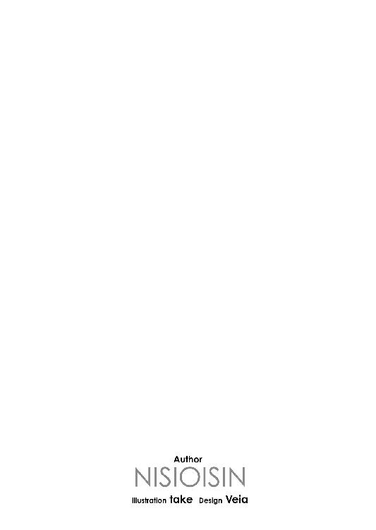

| ネコソギラジカル（下） 青色サヴァンと戯言遣い (講談社文庫) | |
| 西尾維新 | |
| (2009) | |
本作品は、縦書き表示での閲覧を推奨いたします。横書き表示にした際には、表示が一部くずれる恐れがあります。
ご利用になるブラウザまたはビューワにより、表示が異なることがあります。
ネコソギラジカル（下）
青色サヴァンと戯言遣い
西尾維新

好きだから、嫌い。
嫌いだけど、好き。
始まりは復讐だった。
復讐だったと思う。
贖罪だったと思う。
恨みだったと思う。
逆恨みだったと思う。
八つ当たりだったと思う。
けれど、それは全部違って。
そんなのは所詮、ただの理屈で。
ただぼくは、何かしたかっただけだ。
何かしていなければ死んでしまいそうだった。
だから。
だからぼくは、青い少年に出会った。
最初会ったとき。
玖渚友は砂場で遊ぶ子供だった。
砂でお城を作っていた。
何のための城だったのか？
どうして城を作っていたのか？
そんなことは知らない。
とにかく玖渚は、一心不乱に──
集中力を全て集中して。
集中力を全て集中させて。
お城を作っていた。
彼女のお城。
お城はもう完成間近だった。
特に理由もなく、ぼくはそのお城を蹴った。
破壊。
破壊した。
勿論ぼくはその時点で、玖渚友を知らない。
青い少年が誰なのか知らない。
目前の青い髪が、何に所以するものか知らない。
お城を蹴ったのは──気に入らなかったからだ。
お城の形が、気に入らなかったからだ。
理由なんて、本当に何もなかった。
玖渚は、何も言わなかった。
ぼくを見もしなかった。
強風で砂が崩れたのと、同じような反応だった。
視界の中だけじゃない。
その青い少年の中に、ぼくはいなかったのだ。
砂をすくって、崩れた城を、建て直す。
驚愕。
驚いたのは──玖渚が、崩れた砂粒の一つ一つを、違うことなく、間違うことなく、お城を構成していた元の場所に、元の箇所に、戻したことだ。ぼくが蹴る前と、本当に厳密な意味で全く変わりのない状態に──お城を復元してしまったことだ。
一体その行為に、どれだけの記憶力と、どれだけの認識能力と、そしてどれだけの精密な手先が必要なのか、そんな途方もないことは考えたくもなかった。玖渚は、砂を固まりとしてではなく、一粒一粒で認識していたということを、そして恐らく、この世界そのものを、同じように原子単位で見ているのだろうことを、ぼくはそのとき理解して──
そして、屈服した。
青い少年に、屈服した。
搾取されることを、覚悟した。
覚悟して──受け入れた。
出会った瞬間。
初対面のそのとき、ぼくは玖渚に敗北したのだ。
ぼくは──
今度は、悔し紛れに腹立ち紛れに、
本当に何の理由もなく、
玖渚の、青い髪を、蹴っ飛ばしたのだった。
「くさなぎ？ くぎなさ？ なに？」
「玖渚だよ玖渚。Ｋ・Ｕ・Ｎ・Ａ・Ｇ・Ｉ・Ｓ・Ａ・くなぎさ。それにフレンドの友。玖渚友だよ」
「ふうん。そっか。玖渚くんか。へえん、その頭、格好いいね」
「僕のことは友って呼んでいいんだよ」
「そうか。じゃあぼくのことも友って呼んでいいぜ」
「ややこしいよ。僕はきみのことをいーちゃんって呼ぶことにするよ」
「じゃあぼくもきみのことをいーちゃんと呼ぼう」
「ややこしいよ」
ぼくは、青い少年が少女であることを知り。
少女が玖渚家の直系血族であることも知る。
ぼくに声をかけてきた、玖渚機関の、直系。
妹が彼女の犠牲になったことも。
少女のために搾取されたことも。
全てを知った。
あますところなく、知った。
最後までぼくにとって知るよしもなかったのは、少女がぼくを、いーちゃんと呼んだ意味だけだ。
それは──些細なことだった。
特に、理由もないことだった。
始まりは──
始まりは、復讐だった。
復讐だった。
贖罪だった。
恨みだった。
逆恨みだった。
八つ当たりだった──はずなのに。
いつの間にか、ぼく達は。
だらだらと──だらだらと。
ぬけぬけと──ぬけぬけと。
それが当然のようにして。
時間を共に過ごした。
悲しくなるくらい、共に過ごした。
長い時間を。
永遠を。
けれどそれは、刹那のようにあっという間で。
すぐに破局は、訪れた。
助ける──つもりだった。
玖渚友を、助けるつもりだったのだと、思う。
結局のところ、ぼくの行為は、おしまいまで、復讐で、贖罪で、恨みで、逆恨みで、八つ当たりでしかなかったのだけれど──それでも一つだけ、あの頃のぼくの中に、一つだけ正しいと思える、評価できることがあるとするならば──その頃のぼくは、確かに、玖渚友を、助けるつもりだったということだ。
壊すつもりはなかった。
殺すつもりはなかった。
他の全てが全部駄目でも──
それだけは。
それだけは、許してやろうと思う。
その存在のほとんどが罪と汚濁にまみれていたかつて少年だった頃のぼくは、どうしたところで許せない存在ではあったけれど──それでも、どうしてもというのなら、それだけは、許してあげたいと思う。
玖渚友。
今と変わらず──原子単位で寸分狂わず。
あの頃のぼくは、彼女のために。
死ぬことすら、厭おうとはしなかった。
なのに──それなのに、なんで。
どうして、ぼくは、逃げたのだろう。
そして。
どうしてぼくは──
一人だけ、変わってしまったのだろう。
彼女と共にあろうと思ったのに。
彼女と共にあろうと誓ったのに。
ずっと、一緒にいたかったのに。
今だって変わらないはずなのに。
それなのに──
「やあ、いーちゃん。思ったよりも早かったね。いや、しかしこの場合、思ったよりも遅かったね、と言った方が、あるいは適切なのかな？」
玖渚──
玖渚友は、城咲の、彼女の自宅であるマンションの屋上の──四辺を囲む形の、落下防止用のフェンスの上に、ちょこんと、軽く、本当に気安そうに、腰掛けていた。
ほんの少しバランスを崩せば──
マンションの高さ分、落下する。
そんな位置。
そんなスタンス。
そんなバランスで──
多分、ぼく達は、やってきた。
ぼくと玖渚は、ずっと、やってきた。
そう──だから。
いつだって、おかしくはなかった。
玖渚の言う通り。
こんなシーンは──遅過ぎたくらいだ。
多分、本来よりは、早かったのだろう。
でも、本当よりは、遅かったのだ。
うまく、行き過ぎていたのだ。
行き過ぎだった。
生き過ぎだった。
「と──」
ぼくは、玖渚に呼びかけようとして──
普通に、呼びかけようとして。
しかし、それでも、言葉に詰まった。
呼びかけ、損なった。
そんなぼくを、首だけで振り向いていた玖渚は、うっすらと微笑ましそうに見て──
「こっち来てよ」
と、言った。
「僕様ちゃんの隣は、いーちゃんの席」
「......そうだな」
そうだったな、と。
なんとか頷くことだけはできた。
ぼくは一歩ずつ玖渚に近づいていって、
フェンスを軽くよじのぼり、
彼女の隣に、腰掛けた。
「高いな」
「百四十メートル。京都タワーより高いよ」
「平気なのか？」
「何が？」
「こんな、高いところ」
「別に高いのは平気だよ」
「でも──」
玖渚友は三つの、精神的な病を抱えている。その一つが、一人では極端な上下移動ができない、というものだ。ことを自分のテリトリー、慣れ親しんだ自宅の中などに限れば話は別だが、このマンションの屋上は、玖渚にとって、自分の領域ではないはずだ。こんな上下移動に、玖渚が耐えられるわけが──いや、屋上に登るだけなら、さっきの宴九段──滋賀井統乃にでも同行してもらえばいいだけの話だが、それでも、あの統乃さんが、玖渚をこんなところに放置していくとは得心いかない。統乃さんにしてみれば、ぼくに会えるとは限らなかったはずだし──
「ああ。あれは、ああいうのは、もういいんだよ」
玖渚はこともなげに言った。
「元々、誰かにそばにいてもらうためだけに、自らに課した枷みたいなものだったんだから」
「枷......」
「鎖、かなあ？ 後の二つも、まあ、似たようなもんだね。後づけのキャラ設定ってやつ。とはいえ──それでも、最後までそばにいてくれたのは、いーちゃんだけだったけどね」
「そうでも......ないだろ。ぼくなんて、誰とでも代替のきく、平凡な──」
「そーでもなかったよー。そんなことは全然なかったよ。いーちゃんの代わり、なんて、ねえ？ ここに来たってことは、いーちゃん、なっちゃんと会ったんでしょ？ 滋賀井統乃、《屍》」
「......ああ」ぼくは頷く。「あの人、どっちが本名なんだ？ いや、本名っていうか......どっちが真の姿なんだ？ 滋賀井統乃と、宴九段。《チーム》としての滋賀井統乃と──《十三階段》としての宴九段」
「真の姿って、なんか変な響きだねー。あはは、いーちゃん、名前がたくさんある人、苦手だったもんねー。昔っからそうだった。いや、別にどっちが真ってこともない。なっちゃんは一人なんだから。強いて言うなら、そうだね、彼女と先に知り合ったのは僕様ちゃんだよ」
「で──その後、狐さんと」
「そう、《狐さん》と」
玖渚は言う。
「細かい説明は省くけど──僕様ちゃんが《チーム》としての活動をやってた頃にね、こう、なんかばしっと、喧嘩しちゃった相手がいて──それがどうも、いーちゃん言うところの《狐さん》でね。で、そんとき、なっちゃんは《狐さん》の配下に入ったんだね」
「裏切り者ってことか？」
「裏切り者って言うか、臆病者って言うかだね。細かい説明はやっぱり省くけど、要するになっちゃんにはちょっとスパイってもらってたわけだよ。《チーム》活動停止後も、なっちゃんはなんとなく、スパイを続けてたんだね」
「なんとなくって......」
「いや、《チーム》がなくなっている以上、その行為はもうスパイでもなんでもないけれど......まあ僕様ちゃんも、最近まで知らなかったけどね。え、なっちゃん、まだやってたのって感じで」
「......ってことは、お前、ぼくが今どういう状況にあるかってこと──大体のところ、統乃さんから、既に聞いていたのか？」
「ううん。別に訊かなかったし、なっちゃんも特に何も言ってなかったし。さっちゃんのことを考えてくれればわかると思うけれど、僕様ちゃん達、そんなべったりと馴れ合った関係じゃなかったんだもん。でも、そうは言ってもついさっき、なっちゃんは、全部、教えてくれたけどね。全く、訊きもしないことをぺらぺらと。いーちゃんにも余計なことチクるしさ、本当にもう、なっちゃんにはすっかり裏切られた気分だよ。それこそ、ね。臆病者が裏切り者、か」
「............」
「狐はまずいよね、狐は」
うに、と玖渚は首を回す。
こんな高い場所なのに──風はない。
無風といってもいい。
それが、怖い。
逆に怖い。
狐面の男──西東天。
哀川さんや真心だけでなく──
あの人は、玖渚友とも、繫がりがあったわけだ。
ぼくはいつか、狐面の男が、このマンションの地下駐車場でぼくを待ち伏せていたことを思い出す。そしてそれ以前に、そもそも──ぼくとあの男との初対面は、まさに、ここではなかったか。
玖渚友、《死線の蒼》。
多分それは──狐面の男いうところの《試行錯誤》、世界の終わり、物語の終わりに至る過程の一つ、ということなのだろう。勿論──それは、哀川さんや真心に対するほどに、強固な、繫がりといえるほどの繫がりとはいえない......狐面の男にしてみれば、それはもう既に終わってしまったこと、あってもなくてもまるで同じこと、という話であるだろうにせよ──それでも、こうなってしまえば、一層強く、痛感せざるをえない。
ぼくと、西東天との、縁を。
敵。
敵──敵、敵、敵。
まるで──宿命づけられている。
まるで、救いらしきものがない。
どう足搔いても──同じだったというのか。
「..................」
......戯言。
そんなこと──何度も、考えたことだ。
真心のことがあった段階でわかっていた。
でも──それでも。
ぼくは、正直、忸怩たる思いだった。
玖渚だけは。
玖渚友だけは──参加して欲しくなかった。
玖渚のことだけは、巻き込みたくなかったんだ。
それでも──玖渚は。
ぼくに、巻き込んでくれて嬉しいなんて、そんなふざけたことを──それでも、なお、言うつもりなのだろうか。
まだ、そんなことを言えるのだろうか。
この期に及んで、このぼくに。
こんなぼくに。
「まあ、元々ね──なっちゃんにしろさっちゃんにしろ、他のみんなにしろ、いーちゃんの後釜として、僕様ちゃんが探して見つけた人達だからね。どの人もこの人も一筋縄じゃあいかなかったんだけど──それでも、結局のところ、全員で力を合わせても、いーちゃん一人には及ばなかったんだよねー。でも、そうはいっても、たとえ出来損ないではあっても、《チーム》がいーちゃんの代替品だったことには変わりがない。もしもいーちゃんと、《狐さん》が絶対的に敵対する定めだったのだとするならば、僕様ちゃん達《チーム》が、《砂漠の狐》と敵対することになったのも──まあ、当然といえば当然の話、当たり前といえば当たり前の話なのかもしれないね」
「ぼくの──代替品か」
「代替品っていっても、本当に出来損ないでね。言ったでしょ？ いーちゃんの代わり、なんて、ね。今はもう噂が噂を呼んで、伝説的なテロリストのように言われているけれど、結局のところ世界一つ壊せなかった脆弱な軍隊だったよ。いーちゃんとなら、あのままだったら、世界どころか宇宙だって破壊しえただろうのに──僕様ちゃん達は狐どころか子猫一匹殺すことすらできなかった。いーちゃんの代わりは──結局のところ、誰にもできないんだよ。なっちゃんにも、さっちゃんにも、他のみんなにも」
「そうでも──ないだろ。ぼくの代わりなんて......お前はそんな風に言うけれど、兎吊木の野郎なんかにしてみれば、極々簡単にこなせるようなものだよ。兎吊木が、どうしてぼくにあんなに固執していたのかって理由は、それでわかったような気がするけれど──」
「ああ、なるほど。そっか、あれは、そういうことだったんだね。でも──それは所詮、嫉妬だよ。ちっぽけだなあ、さっちゃんらしくもない。僕様ちゃんから見れば、そんなことは瞭然なのに。いーちゃんの代わりなんて、誰にもできないんだよ」
玖渚は淡々と言う。
円周率でも唱えるように、淡々と。
「理由は二つ。聞きたい？」
「............」
「一つ目は、これはもう簡単。まず、僕様ちゃんに愛されなくちゃならないでしょう？ これは、いーちゃん以外には絶対に無理だよね。僕様ちゃんは誰のことでも好きだけど──愛しているのはいーちゃんだけだから」
玖渚は少し微笑んだようだった。
直視に耐えない。
直視に耐えない──笑顔だろう。
見ることが、できない。
「そして二つ目──理由としてはこっちの方がよっぽど決定的だね。もしも、僕様ちゃんの隣で──いーちゃんの立ち位置に立とうと思うなら、僕様ちゃんのことを、心の底から大嫌いでなければならないから」玖渚は言った。「これは、さっちゃんやなっちゃんには──絶対に無理だよね」
「ぼくは──」
胸が痛い。
風がない。
ふと、地上を見下ろす。
あまりに──小さい。
世界が、小さく見える。
ちっぽけ──だ。
「ぼくはお前のことが好きだ」
「好き」
「ああ、好きだ」
「僕様ちゃんのこと、どのくらい、好き？」
「死んでもいいくらい」
「じゃあ──どのくらい、嫌い？」
それは、まるで。
順番通りの正当のように、続く質問だった。
「いーちゃんは玖渚友のことが、どのくらい嫌い？ いーちゃんの人生を最悪のものにしてしまった僕様ちゃんのことが、どのくらい嫌い？ いーちゃんの妹をただの絞り滓にしてしまった僕様ちゃんのこと、どのくらい嫌い？ いーちゃんが罪と汚濁にまみれた少年だった頃に、その頃のままにいーちゃんのことを停止させてしまった、会わなければ今よりは絶対にマシな自分でいられただろう僕様ちゃんのことを、どのくらい嫌い？」
「......友──」
「死んでもいいくらい、嫌い？」
「──ぼくは」
「まあ、殺してもいいくらいとか、壊してもいいくらいには嫌いなはずだよね──普通に考えたらさ」
──きみは。
きみは玖渚友のことが本当は嫌いなんじゃないのかな？
兎吊木垓輔の──戯言殺し。
しかし、軽妙な口調で、それこそまるで、ぼくを鏡に映したかのように口の達者だったあの男の語った言葉だったから、一見ではそうは思えなかったけれど──
戯言がそもそも真実を隠す手段である以上。
真実もまた本来戯言を殺す手段なのだ。
「それなのに──」
そこで、初めて。
玖渚の言葉に、感情らしい感情が、こもった。
「いーちゃんは──僕のことを、嫌いになったり見捨てたり、しないん──だよね」
それは──その感情は。
恐らく、怒りと呼んでいいものだった。
憤りと、呼ばれるものだった。
「どうして？」
「そんなことを──訊かれても」
答えられない。
そんなこと、答えられるわけがない。
......いや、違う。
答えられないんじゃない、もう答えたんだ。
お前のことが──好きだから。
きみのことが、好きだから。
好きだから、嫌えないのだ。
好きだから、逆らえないのだ。
それだけだ。
それだけの、わかりやすいことなのだ。
あの日から。
最初に出会ったあの日から──でも。
玖渚は、きっと、そんな答じゃ納得しない。
それは玖渚の求めている回答じゃない。
そんな曖昧で不確かなものを──
玖渚友は、求めてない。
斜道卿壱郎研究施設で──玖渚友が、あのとき、ぐちゃぐちゃに刻まれた死体を目の前において、浮かべた、あの笑顔。
あのときから──始まっていた。
そして──
出会ったときから、本当は始まっていたのだ。
あたりまえのことじゃないか。
「ねえ、答えてよ。どうして？ どうしていーちゃんは、僕様ちゃんのことを嫌いにならないの？ 僕様ちゃんのことを嫌いになれば──とってもとっても、楽なはずなのに」
「そ──そんな、ことよりも」
ぼくは──
玖渚相手に、ここで戯言を使いたくはなかった。
今更のように、往生際悪く。
だから、話を逸らす。
逸らす。
けれど──もう、ここは、行き止まりなのだ。
逸らす先など、限られている。
逸らした先さえ、行き詰まり。
「友。お前──もうすぐ、死ぬって」
「............」
「いつ死んだって、おかしくないって。統乃さんがそう言っていた。それは本当なのか？」
「うん、本当」
玖渚は普通に頷いた。
虚勢でもなく、しかし、茶化すでもなく。
ごく普通に頷いた。
ずっと前から、わかっていたことのように。
「しっかしなー。なっちゃんも本当、お喋りさんなんだから、困るよね。臆病なくらいに口が堅いというのが、なっちゃんの一番好きだった部分だったんだけれど──一番、いーちゃんに、よく似ていた部分だったんだけど。全く、余計なことをしてくれるよ。所詮代替品は代替品、模造品は模造品、本物にはとってかわれない。完全なるオルタナティヴなんて、存在しない、存在しえない。何度も言うけど、何度でも言うけど、いーちゃんは本当にかけがえがないんだよ」
「そんなのはどうでもいい──ぼくのことなんてどうでもいい。ぼくの話なんてしていない。じゃあ、なんだったんだ？ ぼくに、どうして、黙ってたんだ？ お前──ぼくに黙って、死ぬつもりだったってのか？ もしも統乃さんが教えてくれてなけりゃ──ぼくは、全てが終わるまで、何も知らなかったってことなのか？」
六年前と同じように。
全てが終わるまで、蚊帳の外で。
世界の真ん中で、蚊帳の外で。
自覚症状のある無知。
背丈を知った、身の程知らず。
そんな思いを──
また、重ねることになっていたのか。
無論──わかっていたことだ。
そんなのは、わかっていたことだ。
玖渚が、いつかは死んでしまうことなんて。
元々、刹那的な少女なのだと。
今一瞬を生きているだけで、奇跡なのだと。
「わかってたことじゃない」
玖渚はぼくの心中を見透かしたかのようにいう。
多分、うっすらと笑っている。
死体でも見ているかのように。
「少なくとも──いーちゃんには、わかってたことじゃない。僕様ちゃんは、元々、生きていること自体が不自然なんだって。間違っているのを無理矢理生きているようなものなんだって。何百年生きたところで死ぬことのない永遠を生き続ける少女のように、本来ありえない存在なんだって──そんなの、わかりきっていたことじゃない。この青い髪が、劣性の証」
そうなのだ──わかっていたことだ。
死ぬとはどういうことなのか。
生きるとはどういうことなのか。
生きているから死ぬというのなら──
生きていることの、なんて不自然なこと。
そんなんじゃ──
生きてるだけで、死にそうだ。
勿論、そんなことは、最愛といってはばからない自身の妹のいる前では絶対に口にしなかった、おくびにも出さなかったけれど──ふと、ぼくと二人きりになったときなど、彼女の兄、玖渚直は、特に何の感慨もなさそうに、本当に不思議そうに首を傾げて、独白していた。
『どうして俺の妹は──死なないんだろう』
それはきっと、殻に包まれた発言だった。
自分自身にさえ本音を言わない、強くて弱い、直さんだったからこそ──無意識からの制御で、言葉をオブラートに包んでいたのに違いない。
本当は、彼はこう思っていたのだ。
どうして俺の妹は生きているのだろう、と。
実際それは、一般的な──
特に残酷でもない、一般的な意見だった。
いつのでもいい──何歳のときのでもいい、玖渚友の、常人の三百倍の分厚さはあるだろう、カルテの束を見てみれば、その異常さには誰であれ、言葉を失うだろう。
そして思う。
どうして生きているのか、と。
だから──不自然なことなど何もない。
死ぬだけだ。
ただ、死ぬだけだ。
玖渚友が──死ぬだけだ。
いつか世界が滅びるくらいに、当たり前。
いつか世界が終わるように。
いつか物語が終わるように。
少女が一人、死ぬだけなのに──
なのにどうして、こんなに。
逃げた癖に。
一度は──その事実から、逃げた癖に。
玖渚友が死ぬ。
壊れる。
壊せる。
殺せるという──現実から、逃げた癖に。
ただでさえ死に易かった少女を──
より、死に易くした癖に。
「言わなくてもいいこと、言っとくけど──いーちゃんのせいじゃないからね。これはずっと前から──決まっていたことなんだよ。少なくとも、僕様ちゃん本人には、ずっと前からわかっていたことだったんだ。ほら、八月だったかな、言ったじゃない。もうそろそろ危ないらしいって。ちゃんと伏線は張っておいたんだよ、いきなり死んじゃったら、いーちゃんも驚くだろうと思ってさ」
「でも──」
驚くどころの話じゃない。
だって──その後。
お前は、言ったじゃないか。
もう、大丈夫だって。
これからは──もう、大丈夫なんだって。
「ああ......あれね。うん、あれはねー、ちょっと失敗したよ、僕様ちゃんとしたことが。恥ずかしい恥ずかしい。今から思えば、本当に余計なことを言っちゃった。いーちゃんに、余計な希望を持たせちゃったし──それに」
玖渚は言った。
「見たくもない夢を、見る羽目になった」
「............」
「最初はね──すぐに撤回するつもりだったんだ。噓だよ、本当はすぐに死んじゃうんだよって──軽く教えるつもりだったんだよ。でもね──」
「いーちゃん、喜ぶんだもん」
玖渚は、悲しそうだった。
泣いているのかもしれない、と思った。
しかし、泣いていないだろう。
玖渚友は──泣けない。
ぼくが笑えないように。
涙を流しても、本当は泣いていない。
「いーちゃんが喜ぶとは、思わなかった」
「............」
「最後の意地悪のつもりだったんだけどね──僕様ちゃんがこれからもずっといーちゃんのそばにいるなんてことになったら、いーちゃん、きっと嫌がると思って」
「嫌がる──なんて」
「噓だと思ってたんだよ。悪いけど」玖渚は言う。「いーちゃんは、口では色々言ってくれるけれど、態度でも色々表してくれるけれど──心の底ではきっと、僕様ちゃんのことを、嫌いに違いないって、そう思ってたんだよ。いーちゃんのことは、僕様ちゃん、信じてたけど──それは、噓でも本当でも、構わずに信じていただけ。本当だと思ってたわけじゃないんだよ」
「......友」
「いーちゃんが僕様ちゃんのことを好きだと言ってくれても、それを信じることはできるけれど、それを本当だと思うことはできないんだよねー」
「えらく......信用がないんだな。狼少年の気分だ」
「狼少年は狼が来るって噓をついたんでしょ？ いーちゃんは、狼なんていないって噓をついてたんだよ。その違いって、結構なんか、どーでもいいことのようで、決定的だよね」
「でも──ぼくは」
「うん。あれは本当のリアクションだったからね、僕様ちゃんはびっくりしちゃったんだよ。好きとか嫌いとかはともかく──いーちゃんが、喜んでくれたのが、すごく意外だった。好きとか嫌いとかはともかく──少なくともいーちゃんは、そばに僕様ちゃんがいてもいいと、思ってくれていたんだね」
「当然だろ」
さすがに──苛立ちの混じった言葉になった。
そんなことを思われていたのが、悔しかった。
いや、わからなくもない。
信じられることや──許されること。
無条件の信頼、無条件の許容。
玖渚からのそういったあれこれに、ぼくが、耐えられなかったのは事実。そういった感情は結局、正反対のものとしてぼくから反射して──自然に、それは悪循環になる。
何が当然なものか。
ぼくの言葉は玖渚に届いていても──
ぼくの気持ちは、玖渚には届いていなかった。
そんなの、玖渚にしてみれば──
届こうが届くまいがどちらでも同じだったんだ。
考えてみれば、酷く滑稽だ。
心の底からの真実の言葉も、
舌の先からの虚構の言葉も、
同じようにしか──響かないなんて。
そこまで極端になってしまえば、信じられることも疑われることも、もうそれはほとんど交換可能な等価になってしまうじゃないか。
だから──嫌なんだ。
信じられることも。
許されることも。
ぼくは、嫌なんだ。
「プロポーズ、嬉しかったよ。たとえ噓だったとしても、たとえ本当だったとしても。正直、あんまり現実的な話じゃなかったけれど──だっていーちゃんが今更、玖渚機関の中でうまく立ち回れるとも思えないしね──まあ、それでも、嬉しいものは嬉しかったよ。死にたくなくなるくらい」
「......どうにも、ならないのか？」
ぼくは言った。
悪足搔きをするように、言った。
「どうにかして──生き延びることは、できないのか？ 玖渚機関の力を総動員すれば、不可能なことなんかないだろう。もしも畑違いだっていうんなら、《殺し名》やら《呪い名》やらの魑魅魍魎達を、ぼくが言いくるめて連れてきてやってもいいし──それに、そんな、わざわざ誰かに助けてもらわなくったって、お前の知恵があれば、死を回避する方法なんて、あるはずだろう」
「んー」
無茶を言っているのはわかっていた。そもそもそんな方法があるのなら、とっくに実行していることだろう。まるで子供だ、と思う。認めたくない現実から目を外そうとするだけの、ただの、器の小さい、どうしようもない、聞き分けのない子供。
計算を知らない。
限界を知らない。
けれど、それは──そのまま、玖渚友のこと。
だったら......
「まあ、ねえ」
玖渚は、珍しく、歯切れ悪かった。
「なんていうかさ──なっちゃんがなんていったか知らないけどさ、確かなのはもう身体が身体を構成するのが不可能ってことで──今までの身体異常とは格段にレベルの違う話で、『いつ死んでもおかしくない』って表現は、まあ、あながち間違っちゃいないんだよ。でも──それでも、まあ、僕様ちゃんが計算する限りにおいて、この先、まだまだ、二年と言わず三年と言わず──生きていける可能性は、あるかな」
「あるのかっ！」
「..................」
意気込んだぼくに──沈黙で答える玖渚。
そういえば。
玖渚を直視できないぼくは。
先刻から、玖渚とまるで、向かい合っていない。
隣同士にいながら──
隣同士にいるからこそ。
向かい合えない。
向かい合えない、隣合わせ。
青色サヴァンと──戯言遣い。
「ゼロじゃない、って意味だよ、いーちゃん」玖渚は、沈黙を十秒ほどで切り上げて、言った。「よーく聞いてね、いーちゃん」
「なんだよ」
「れーてん......」
玖渚は──
たっぷりと言葉をためてから、
「れいれいれいれいれいれいれいれいれいれいれいれいれいれいれい、さん。以下省略」
と、言った。
「..................」
「パーセント、じゃないよ。割」
単位が──違うのか。
ここでも、また。
「勿論、それなりの代償は伴う。ここまで終末に至れば、もう無傷では絶対にすまない。僕様ちゃんの偏った才能は、多分もっと偏ることになるだろうし、うん、それに、才能といえるほどの才能では、なくなっちゃうだろうね。愚鈍と言って差し支えない領域にまで、僕様ちゃんの知能は落ち込み、陥るだろう。制御──枷や鎖も今どころじゃすまなくなってがんじがらめで、もう、いーちゃんの足を引っ張ることしかできなくなるだろう。視力はまず、ほとんど失われるだろうし──きっと、髪も、黒くなっちゃうね。凡人以下だ」
「............」
「それだけの代償を払っても──それだけの確率。シビアな計算で、身びいきはないんだけど──これでも、これなら、もっと甘やかした計算にすればよかったと思うよ」
玖渚は「うん」と、そこで、自分の言葉に、何かを確認するように、頷く。
そして、続けた。
「......でもさ。いーちゃん、まあ、多分だったんだけどさ──僕様ちゃん、それでも、このくらいの確率はクリアしちゃうだろうと思ってたんだよ。僕様ちゃんだけだったらともかくとして──もしもいーちゃんがそばにいれば、ね」
「............」
「いーちゃん、すごい運悪いもんね」
「......じゃあ」
「だけど──いーちゃんが、僕様ちゃんに生きていて欲しいっていうなら、それももう無理だね。死ぬしかないよ」玖渚は言った。「賭けだったんだけどね──なっちゃんがどこか行って、多分いーちゃんのところに行ったんだなって思ったけど、それを止めなかったのは、ひょっとしたら、いーちゃんはここに来ないかもしれないって思ったから。もしも、あのプロポーズも、ああやって喜んでくれたのも、いーちゃんの噓だったとすれば──僕様ちゃんは生き残れるかもしれない、って、思ってた」
玖渚はそこで、ため息をついた。
恨みがましい感じはない。
けれど──
そのため息は、ぼくを責めているようだった。
それだけは。
それだけはぼくのせいだと、言わんばかりに。
「もしも──」
玖渚は続けた。
口調は、変わらない。
聞きようによっては、気だるそうな感じだ。
「もしもいーちゃんが、本当は、心の底では、ううん、底とは言わずとも、心の隅っこでも上っ面でも、勿論真ん中でも、ほんの少しでも──僕様ちゃんのことを嫌っていてくれたなら、あのプロポーズの言葉に、ほんの少しでも噓が混じっていたなら、まあ、現実的でないとはいえ、結婚くらいはできたかもしれないのに」
「............」
「子供は作れなかっただろうけどね」
誰が──予想しただろう。
一体、誰が予想しただろう。
戯言遣いの少年が──
まさか本当に、青色の少女を好きだったなんて。
歪みなく。
純粋に。
笑ってしまうくらい、まっすぐに。
悲しくなってしまうくらい、その心の全てで。
ぼくは玖渚友が──本当に好きだった。
嫌いになんて、なれないくらい。
嫌うことなんてできないくらい。
思いもしないくらい。
本当に、好きだったんだ。
六年前から──今も変わらず。
今に至るまで、絶えることなく。
今に至るまで、変わることなく。
最初は、復讐だった。
最初は──復讐だったのに。
最後まで──復讐だったのに。
最初から最後まで、好きだった。
他の全てが噓でも、それだけは本当。
全てが噓でも、それだけは本当だ。
噓でも、本当だった。
狼はいない。
狼なんて、どこにもいない。
そう、言い続けてきた。
そう、叫び続けてきた。
声が嗄れ、喉が潰れるまで。
だったらこれは──当然の帰結。
正にわかり切っていた、予定調和。
運命にして──物語。
見え透いた──結末。
「ぼくの......ぼくの運不運で、お前の生死が決まったりして、たまるもんか。お前に限った話じゃないが──なんでもかんでも、ぼくを理由に、ぼくを根拠にするのは、やめてくれ。重いんだ。重過ぎるんだ。お前の信頼もお前の許容も──ぼくには耐えられないくらい、重かった」
「はは」
玖渚が、声に出して、笑った。
「なーんかアレだよねー。考えてみれば、いーちゃんとこんな風に、真面目な感じにおしゃべりするのって、初めてかもしれないね」
「............」
「いっつも、意味のない、益体のないことばっか、喋ってたような気がするよ。内容もなく、一秒先には全部忘れちゃうような、どーでもいい、そんなお話ばっか。それなりに長い付き合いなのにねえ」
「長い──かな」
そう思っていた。
けれど──
もう、そうは、思えない。
「ま、空白期間が長過ぎるからね、それに僕様ちゃんが引きこもりだったから、実際の接触時間は、そんなに大したことはないんだろうけれど」
「でも──」
ぼくは言った。
「ぼくの中で、お前の存在は、大き過ぎるよ」
「......ふーん」
「他の全てを投げ打ってもいいと思えるくらい」
それは本心だった。
今となっては、それがぼくの本心だった。
偽りのない、戯言のない、本心。
確かに六年前と違ってぼくには、好きなものも守りたいものも、玖渚友以外に、たくさんできてしまったけれど──それでも、玖渚がその頂点にあることだけは間違いがない。
それだけは、変わりようがない。
順列の変動などありえない。
玖渚のためなら、他の全てを投げ打っていい。
たとえば玖渚が望むなら──
ぼくは、誰だって殺せる。
みいこさんだって哀川さんだって。
崩子ちゃんだって絵本さんだって。
誰でも殺そう。
玖渚が望むなら、殺してやる。
なんでも、切り捨てられる。
まるで──殺人鬼のように。
粉々に。
欠片も残さず、粉々に。
誰でも殺す。
誰でも殺せる。
大好きなあの人達を、迷いなく殺せる。
そんな自分を──
ぼくは、誇らしく思う。
恥じるところも、罪悪感もない。
そう思う。
ぼくにとって玖渚は──全てなのだ。
玖渚友は、完璧なのだ。
それをぼくは──知っている。
「完璧じゃあ、よくなかったんだよ」
玖渚は言った。
またも、ぼくの心中を読んだように。
「完璧ってのは、味気ない」
「............」
「だから僕様ちゃんには欠点が必要だった。縛めが必要だった。枷が必要だった。鎖が──必要だった」玖渚は言う。「絶対に、必要不可欠にね。そして何より──鞘が、必要だった」
「......鞘──ぼくか」
「こんなこと、本当は棺桶の中にまで持っていかなくちゃいけないことなんだけどね──それでも、まあ、折角だし、うん、なっちゃんの顔を立てる意味で、一応、教えてあげるよ。少なくとも、いーちゃんにとって僕様ちゃんは必要不可欠じゃなかったけどさ──僕様ちゃんにとって、いーちゃんは必要不可欠だったんだよ」
「どうして──」
無論、わかっている。
玖渚は、一人では生きていけない。
その、あまりに偏った才能ゆえに、欠点が多過ぎて、欠落した部品が多過ぎて──日常生活に存在が適合できず、ぼくのような、あるいは《チーム》の兎吊木や統乃さんのような、その小さな身体を支える、いうならばライ麦畑のつかまえ役が、そばにいなければならないのだ。
けれど──
もしも、さっき言ったように。
その欠点が、自らに課した枷で、鎖だというならば──話は全くのところ、変容してくる。肉体の異常までもを演出できるわけがないとしても、精神的なものに関しては──
「噓つき」
玖渚は言う。
「噓つきというなら──いーちゃんよりも、むしろ僕様ちゃんの方が、その名称を背負うべきなのかもしれないね」
「......どういうことだよ」
「うふふ。いーちゃんみたいな戯言は使えないし、僕様ちゃんはまっすぐな言葉しか言えないようになっているから、戯言遣いってのは、いーちゃんだけのものだけれど──でも、噓つきとしては、僕様ちゃんの方がいーちゃんよりも一枚も二枚も上手だよ。だって──」
玖渚の身体が、ゆらりと揺れた。
体重を、前に移動させたのだろう。
そのまま落ちるのか、と思った。
しかし──
両手は、しっかりフェンスをつかんでいる。
落ちない。
まだ──落ちない。
まだ、話の、途中だった。
「いーちゃんは、自分までは騙せないけれど──僕様ちゃんは、自分だって、騙せる」
僕様ちゃんは自分に噓がつけるんだよ。
そう、玖渚は言った。
「これって、噓つきとしてはハイエンドでしょ？」
「......ああ。秘伝の最終奥義みたいなものだ」
無意識の内に自分を偽ることなら──
みんな、やっている。
ぼくが普段から、そうしているように。
けれど──意図的に。
意識的に、己の精神を偽れたら。
もうそれは、噓というより催眠の域だ。
たとえば。
たとえば、右手で箸でも操るように、
自分の意識と記憶とを操作できる者がいれば──
できるモノがあれば。
それは、もう、噓つきの最終形だ。
そんなことは──
膨大な記憶力と膨大な集中力。
膨大な認識能力を持つ、玖渚以外には不可能。
その玖渚にしたって──
一体──
どうして、そんなことをする必要があるのか。
望んで、鎖を身体に巻くのか。
喜んで、鎖を身体に巻くのか。
「弱さが必要だった」
玖渚は言った。
「脆弱さが必要だった。貧弱さが必要だった。欠点が必要だった。欠陥が必要だった」
脆弱さが欲しかった。
貧弱さが欲しかった。
欠点が欲しかった。
欠陥が欲しかった。
弱さが──欲しかった。
「昔ね、僕様ちゃんはね、間違えたんだ」
「昔って──どのくらい昔だよ」
「生まれてすぐ」
玖渚は特に懐かしむでもなく言った。
思い出ではない、記憶を語るように。
「お利口さんだったからね。すぐにわかったよ。ここは──僕様ちゃんの生まれてくるべき世界じゃないって」
「ああ、間違った、って」
「──道を間違えたみたいな、物言いだな」
「うん。最初の曲がり角でね、右と左を間違えちゃったみたいなもんだね。まあ、右と左なんてのはどっち向いてるかですり替わっちゃうようなあやふやなものだから、本当はどっちでもいいのかもしれないけれど──でも、間違ったよ。失敗だった。いーちゃんはよく、自分の人生を間違いと失敗の連続だった、みたいなことを言うけれど──それでもね。それが本当だったとしても、いーちゃんがこの世界に生まれたこと、それ自体はきっと、間違っちゃいなかったんだよ」
「そんなことはない」
「そんなことはあるんだよ。そしてそんなことはないのは──僕様ちゃん。最初の最初が、間違いだった。だから──僕様ちゃんの場合、その間違いの失敗を、埋め合わすような人生だったよ。これまでの十九年間──いや、もうすぐ二十年か。間に合えばの話だけど」
「お前が──この世界に不適合だってのは、わかるよ。それくらいお前が優れているっていうのは、言うまでもないことで──」
「不適合。しかし、それも考えてみれば噓っぽい言葉だよね。もっと直截的に──世界の向かい側、とでも、言うべきなのかもしれないよ」
「......必然だろ」
ぼくは投げやりに言った。
玖渚家。
玖渚機関の性格を考えれば──必然だ。
壱外、弐栞、参榊、肆屍、伍砦、陸枷、柒の名を飛ばして、捌限──そしてそれをまとめる玖渚機関。
外と栞、榊の屍、砦に枷、そして限りへの渚。
それは即ち、呪いの言葉だ。
七番目が欠けている理由はそこにある。
玖渚友は──純血なのだ。
純潔にして──純血。
そういう意味では、玖渚機関や、その周辺にある物者は、全てが玖渚友のためだったと言ってもいい。
青い髪が、劣性の証。
ずっとその色を──求められていた。
ああ、そうか。
だから──鎖か。
玖渚友。
想影真心。
それに、哀川潤も含め──起源が同じ。
根源が、変わらず同じなのだ。
ただ──哀川さんと真心が、ただ一人の、たった一人の男の独善的な意図の下に作り出された存在であるのとは違って、玖渚は──誰の意図もなく、ほんの偶然で、確率的な問題で、長い長い、永遠と比較して何の遜色もない歴史の下に──歴史を元に創造された存在。
怪物。
化物。
異物。
歴史が生み出した──
世界が作り出した、世界の向かい側。
自己矛盾だ。
でも──完璧なんて。
この世にある、完璧と呼ばれるものなんて。
「完璧は間違いだ」
玖渚は静かに言った。
「だから、僕様ちゃんは、他の誰かを求めた。そうしないと、生きていけなかったから。この性格──」
この性格も、作り物。
この性格も、紛い物。
「自分で設定した、生きていくのに最適な性格。サンプルはいーちゃんの妹なんだっけ？ まあ、でも、いーちゃんの妹も、その他の子供達も、その頃に性格が定まっていたわけでもないけどねー。なんちゃって、僕様ちゃん！ とかね」
──いつだったか。
姫ちゃんを、玖渚に見立てたことがあった。
六年前、玖渚を助けられなかった分を──姫ちゃんを助けることで、埋め合わせをしようとしたことがあった。
玖渚が姫ちゃんに似ていたから。
けれど──勿論、姫ちゃんは玖渚を知らない。
会ったこともない。
だから結局、あれは──ぼくからしてみれば、一番、放っておけない性格ということなのだろう。姫ちゃんが演じていたあの性格は、味も素っ気もない言い方をすればただの演技で──姫ちゃんそのものだったわけじゃない。
あれはただの、姫ちゃんの処世術だ。
だけど──
玖渚友もまた。
純粋な意味での、オリジナルではなかった。
人ではない彼女が──
ヒトガタとして、性格を必要とした。
その一環だった、ぼくの妹。
そんなことは──
そんなことは、知っていた。
六年前に、既に、知っていた。
よくある話だ。
よくある話なんだから。
でも──残酷なのは、玖渚友の場合──
それが処世術でもなければ演技でもないこと。
素であること。
地であること。
他に何もないこと。
何故なら──
空っぽだから。
空だからこそ──殻が必要だった。
それだけのことだった。
インストールが必要だった。
インストール後の──再起動が必要だったのだ。
「殻と──鎖。だからね」
ぽつりと、ぼやくように玖渚は言った。
「僕様ちゃんはずっと──最初から、いーちゃんを求めていたんだよ。かけがえのない、いーちゃんを。他のものは、世界であろうといらないっていうくらいに」
「ま......ぼくは、欠点の塊みたいなものだからね。欠点のないお前には、ぴったりだったんだろう。欠点がないのが欠点のお前には──」
雛鳥。
それは、直さんの言葉。
けれど、雛というには、あまりにも──
玖渚友は、あまりにも。
「いーちゃん。僕様ちゃんのこと、好き？」
「......だから、好きだって」
「僕様ちゃんはね」
玖渚は言う。
「いーちゃんのこと、好き」
「............」
「はじめから、いーちゃんが理想だった」
いーちゃんみたいなのを求めていた。
代わりのものなんて──なかった。
世界を。
一緒に世界を敵に回してくれる人を──
求めていた。
友達が、欲しかった。
「......じゃあ、がっかりしたんじゃないのか？ 実際会った実物が、こんなんでさ」
「ううん。思ってた以上だった」
「思ってた以上に欠点だらけだった、か？」
「うん」
「そこでは頷くな」
「って、いうかー」玖渚は少し言葉を選んだ。「いーちゃん以外にはいなかったんだよね。僕様ちゃんのところにまで辿り着けた人間は。玖渚機関のガードを破って僕様ちゃんのところに辿り着ける人は、いーちゃん以外にはいなかった。《害悪細菌》、兎吊木垓輔でさえ──あの破壊と破壊と破壊のプロフェッショナルでさえ、声をかけたのはこちらからなんだよ」
「偶然......だよ」
そう、偶然だ。
ぼくが、玖渚機関の中枢にまで──辿り着けてしまったことなんて、偶然以外の言葉であらわそうと思えば、もうそれは必然以外にありえないというほどに、どうしようもなく偶然だ。
自暴自棄だっただけだ。
やけっぱちだっただけだ。
危ない橋を何度も何度も渡った。
叩いて渡ろうなどと考えもしなかった。
もしも玖渚機関に接触するために必要な手段があれだけだというのならば──それはもう、手段がないのと同じことだ。
それに......
最後には結局、直さんに頼ったんだ。
あの場所。
あの砂場に、ぼくを導いたのは、直さんだった。
ぼくと玖渚との出会いは──
嫌な少年と青い少女との出会いは、
少女の兄によって、演出されたのだ。
一体──
直さんは、どんな気持ちで。
ぼくと玖渚を、出会わせたのだろう。
最愛の妹と──
妹を失くしたぼくとを。
「僕様ちゃんにはいーちゃんしかいなかった」
「だから、絶対に手放したくなかった」
「............」
「だからいーちゃんをね、呪ったんだ」
玖渚は本当に静かに、その台詞を言う。
「呪いの言葉で、縛ったんだ」
呪いの言葉で──
呪いの鎖。
「いーちゃんはいい人だったからね」
「いい人？」
「本当は、いい人。本当は優しい人。言葉にしたらすっげー陳腐でありふれてるけれど、うん、まあ、しかし、正にそれだよ、そのフレーズだよ。本当は優しい男、戯言遣い、いーちゃん」
「どうして──みんな、そんなことを言うんだろうね。この、ひねくれ者の、役立たずに」
「簡単だよ。本当は優しくて本当はいい人だから。本当に優しくて本当にいい人だから」
「そうだったら、どれだけよかったか」
「だってそうじゃなくちゃ──こんなところまで、僕様ちゃんと付き合えないよ」
砂場から──屋上に至るまで。
「前にも言った通り──途中で逃げたのは、少しだけ、怒ってるけど──でも、それでも、いーちゃんは、帰ってきてくれた。僕様ちゃんのためだけじゃなかったとしても、戻ってきてくれたじゃない」
「本当は──揺り籠から墓場まで、付き合いたかったんだけどね。ぼくとしては。でも、そうはいっても──この結論じゃ、同じようなものか」
砂場が揺り籠で──屋上が墓場。
玖渚友らしいといえば、玖渚友らしい。
何を考えているのかわからない、殻。
全てを考えていた、中身の空。
そして──
見上げれば、広がる空。
どれだけ話したのだろう。
薄っすらと、東側の空が白んでくる。
その光を──遮るものなど何もない。
どこにもない。
高い。
ここはきっと──一番高い場所だ。
墓標の如く。
「どうしてもいーちゃんが必要だった。いーちゃんだけは、誰にも譲れなかった。直くんにもみっちゃんにも──譲れなかった。勿論、世界にだって」
世界如きに。
いーちゃんは譲れない。
それが──
幼い、純真無垢な、天才の想いだった。
唯一の、願いだった。
他に何も望まなかった。
それだけの、祈りだった。
想いも願いも望みも祈りも──
それだけだった。
夢。
それが、夢だった。
間違って生まれた──物語の誤植のような青い少女は、生きることさえ困難だった青色の少女は、サヴァンと呼ばれながらも、そんな現実を、切実に夢見ていたのだ。
だから──
だからちっとも、叶えられなかった。
滑稽だ。
ぼくを前に──そんな希望など、叶うものか。
叶うわけがない。
そんなこと......しなくて、よかったのに。
ぼくがいなければ──ぼくさえ、いなければ。
ぼくさえいなければ、玖渚は、そこそこ幸せに、自分の作った殻と、玖渚機関という壁の内で、箱の中で過ごすように──
そこそこ、幸せになれたはずなのに。
ぼくは......でも。
それでも、彼女を助けたかったのだ。
それは──噓じゃない。
そして玖渚も──そんな中庸は求めなかった。
結局、天才肌だったのだ。
そして、偏執狂だった。
彼女は、昔から──多分今も。
究極以外の何も、求めていないのだ。
だから、ぼくも、それに付き合った。
究極を求める少女に──究極の不幸を見舞った。
それで。
機械仕掛けの少女は、終わった。
壊れかけの少女は──壊れた。
終わらせたのも壊したのもぼくだ。
誰がなんて言おうとも。
玖渚が許してくれても──ぼくが許せない。
「僕様ちゃんが壊れたのは僕様ちゃんのせいだよ」
しかし──
玖渚は、そんなことを言った。
「設定に無理があったんだよね。最初っから。いーちゃんのような不確定因子を、自分の下に統制しようとしたこと自体が間違いだというのはわかっていた。だからむしろ積極的に、いーちゃんの方に主導権を持ってもらおうとしたんだけれど──でも、主導権を握り続けないからこその、戯言遣いなんだよね。あ、えっと、みっちゃんだったよね？ いーちゃんのことを戯言遣いって、最初に呼んだのは。ん......この場合、『読んだのは』かな」
「どっちでもいいよ──そんなの」
「うん。どちらにしても、言いえて妙だね。生まれついての戯言遣いに──戯言遣いという記号を与えたみっちゃんは、本当に、功労者だよ。値千金のネーミングセンスだ。えーっと、そういうの、名物学っていうんだっけ？」
「お前の......《青色サヴァン》も、あの人か」
「ああ、あれはよかった。でもその次の《死線の蒼》はちょっとはしゃぎ過ぎたねー。仲間受けはよかったけど、うーん、でもまあ、その仲間にしたって《害悪細菌》やら《屍》やらだし」
「他は──えっと、なんだっけ？ 前に聞いたよな。《二重世界》に《罪悪夜行》、それに《永久立体》《狂喜乱舞》《凶獣》《街》だったか。名前の方は、なんか忘れちまったけど......こうしてみると、うん、《ちぃくん》だけが妙に普通だね」
「ちぃくんはね──名前に興味のない人だったからね。名前が綾南豹だったから、チーターになったって、それだけの単純さだよ」
「豹ならパンサーだろ」
「うん。さっちゃんが滅茶苦茶いい笑顔でいきいきと突っ込みを入れていたよ」
「うわあ......」
そばで見るのも嫌だ、それ......。
「『そんな動物博士のきみには是非探索係を担当してもらおう』ということで、ちぃくんはシーク係になったんだねえ」
「駄洒落かよ」
「けど──そのセンスが、一番マシだったんだろうね。こんなことなら──《チーム》にも、ちゃんとした名前をつけておいた方がよかったのかもしれないね。みっちゃんなら──僕様ちゃん達の《チーム》を、一体、何て名付けたのかな......」
「..................」
綾南豹。
《チーム》が解散された今もなお──
玖渚友を信奉する、刑務所暮らしの同い年。
「まあ......ぼくも、《死線の蒼》よりは、《青色サヴァン》の方が、いくらかいいと思うよ。《死線》なんてね、おっかなくて敵わない」
「うん。最初っから、破綻してた。いーちゃんの模造品なんて──作れっこなかった。全部無駄だった。あはは、みんなには悪いことをしたよね──ま、なっちゃんもさっちゃんもちぃくんも、それぞれ楽しんだだろうから、別に謝る義理はないけれど、それでも、僕様ちゃんの模型作りに、僕様ちゃんの箱庭作りに、いい大人を付き合わせちゃってさ。ま......あんなの、正確にはただの暇潰しだったけど」
「......暇潰し？」
「っと。口が滑ったか。うーん、やっぱりいーちゃんと真面目な話をするのは難しいね。タイミングがつかみにくい。実を言えば、潤ちゃんとは真面目な話、結構してたんだけどね──うん、でも、まあ、暇潰し」
「............」
兎吊木垓輔に──ぼくは質問をぶつけたことがあった。玖渚友は──どうして《チーム》を構成し、テロリストとしての活動を行ったのか。どうしてサヴァンは、デッドのカードと化したのか。一体彼女は、そのとき何を自分に課したのか。
兎吊木は──なんと答えたか。
彼女が......
彼女が、それを、望んだから......？
それが──
「暇潰し」
玖渚友は、繰り返した。
「いーちゃんが、ＥＲ３システムから帰ってくるまでの──暇潰しだよ」
「......帰ってくると、思ってたんだな」
「中退するとは思わなかったけど。でも、それはそっちの方がよかったよ。十年持つ予定だった《チーム》も、《狐》の出現で、その寿命を半分以下にまで減らされちゃったわけだし」
「......どうも、ぼくが思っているよりも深く、狐さんはお前の人生に食い込んでいるみたいだな。まあ、あの人にとっちゃ、些細なことで、もう覚えているかどうかも怪しいけどさ......」
というより、いくら潤さんと真心の分の《縁》、繫がりがあるといっても、知っていれば一言くらい触れそうなものだから、狐面の男は多分、《チーム》を統制していた《死線の蒼》が、玖渚友であることを、知らないのだろう。
うーん。
そんなに有名じゃないのかな。
じゃあ、なんでイリアさんは知ってたんだってことになってくるんだけど......。
あの島の事情と、関係あるのかな？
「いーちゃんは帰ってきた。予想通り」
「..................」
「僕様ちゃんに会うために、帰ってきた」玖渚は言う。「死んだお友達と──僕様ちゃんが、ダブっていたんだね。中退したのは、それが理由なんだっけ。うふふ、そういう意味じゃ──僕様ちゃんは、いーちゃんを、ちゃんと、手の内に収めていたんだね」
「手の内に──」
「いーちゃんは」
「誰のことを見ても、僕様ちゃんのことしか考えられない」
「誰のことを好きになっても、誰のことを嫌いになっても──全部それは、僕様ちゃんと較べてしまう。その人の、どこが玖渚友に似ていて、どこが玖渚友に似ていないか、まずその評価が第一に来る──僕様ちゃんが、較べられないほどに絶対であって、同時に、較べざるを得ない、評価基準なんだよ」
「............」
「いーちゃんは僕様ちゃんのことが大好き。僕様ちゃんなしじゃ、生きていけないね」
玖渚友がいないのは──
誰もいないのと同じ。
ぼくがいないのと、同じ。
じゃあ、もう、それは、好きとか嫌いとか、そういうレベルじゃないのかもしれない。
空気とか、
水とか、
青空とか、
太陽とか──そんなものと同じ。
「......それが、お前の呪いか？」
「うんっ」
玖渚は──元気いっぱいに頷いた。
「そうだよ、いーちゃん」
「............」
「いーちゃん、空気、好き？」
わからない。
「いーちゃん、水、好き？」
わからない。
「いーちゃん、青空、好き？」
わからない。
「いーちゃん、太陽、好き？」
わからない。
「いーちゃん、玖渚友のこと──好き？」
「......わからねえよ」
ぼくは言った。
いつか兎吊木に向けたのと、同じ言葉を。
「お前......一体、ぼくから、何を聞きだそうとしているんだ？ ぼくに──何を言わそうとしているんだ？ 友......お前、ぼくに、何て言って欲しいんだ？ お前を嫌いだとでも、言えばいいのか？ ぼくがお前のことを嫌いだったら、それで満足なのか？ もしそうだったら──」
「お前は、ちゃんと、死ねるのか？」
思い残すことなく。
楽に──死ねると、いうのだろうか。
せめて最期は、安らかに。
「そりゃま、そーかもしんないねー」
玖渚は、至極どうでもよさそうにいった。
そんなことには興味ないとばかりに。
自分が死ぬことなんて──
興味も関心もないと、いわんばかりに。
「そうだったら、いーちゃん、僕様ちゃんのこと、嫌いになってくれるわけ？ もしも僕様ちゃんが、いーちゃんに、嫌いになって欲しいって、お願いしたら」
「噓をついていいんならな」
「だから、本当も噓も──関係ないんだって。いーちゃんの言うことなら、僕様ちゃん、何でも信じるんだから」
ぼくが──
それが玖渚友なら、なんでもいいように。
「それがいーちゃんなら、なんでもいいんだよ」
「............」
「ああ、真面目に考えなくってもいいよ。今のはただの質問、疑問。なんとなく訊いてみただけ。心配しなくても、そんな意図はない。今更、僕様ちゃん、自分の気分なんて、構ったことじゃないよ。気分なんてどーとでも変えられるんだから。そうだね、どうせ死ぬなら──苦しんで苦しんで死にたい。生きていることを、実感したいから」
生きていることを──実感。
その言葉が──
なんだか、妙な感じに、ぼくには聞こえた。
奇妙な感じに、響いた。
まるでそれが──何かのキーワードのように。
死んでるように生きている、ぼくだからか？
いや、違う、そうじゃなくて──
真心。
この場合は──想影、真心。
橙なる種。
橙色の、あの友達に──
「痛みは、生きている証だよ。心でも身体でも、傷には痛みが伴うものなら──ほら、傷つくことは、そんなに悪いことじゃない」
痛み。
それ即ち、生きている、ということ。
世界と──接していること。
繫がっていると、いうこと。
「だから、今、僕様ちゃんが考えているのは──いーちゃんのことだけだよ」
「ぼくの──こと」
「だからさー。本当はね、さっさとバラして、残りの余生を、いーちゃんと楽しく遊んで過ごしてサヨナラしようかという、打ち切り漫画みたいなエンディングを迎えようと思ってたんだけどね──でも、いーちゃんが」
「............」
「いーちゃんが、喜ぶから」
本当に──喜んでくれたから。
がっかりすると思ってたのに──喜んで。
ほんの、些細な意地悪のつもりだったのに。
ほんの、最期の意地悪のつもりだったのに。
いたずら心で──失敗した。
最後に、失敗してしまった。
玖渚は言う。
「だから──いーちゃんに、ご褒美をあげようと、そう思ってるんだよ、今は。なっちゃんのお膳立てに応えて──いーちゃんだけは、解放してあげることにしたの」
「解放......だ、なんて」
「僕様ちゃんのものは僕様ちゃんの手元においておく──それは僕様ちゃんの主義だったけど、さすがにあの世にまでは持っていけないしね。それでも、本当は、思い出だけは持っていこうと思っていたんだけれど、うん。今の今まで迷っていたんだけれど、すっごく躊躇していたんだけれど──できればこのまま、時間切れを待ちたかったってのが、僕様ちゃんの偽らざる本音だったんだけど......でも、今、決めたよ」
「いーちゃんのことは、思い出すらも置いていく」
「......なんで」
「だから、解放だよ。解き放すと書いて、解放。呪いを、解いてあげるの。いーちゃんに──僕様ちゃんが六年前、一日も絶えることなく、いーちゃんにかけ続けた、呪いをね」
玖渚は言う。
「いーちゃんを僕様ちゃんのものにするために、いーちゃんが僕様ちゃんのことしか見えないように、いーちゃんに僕様ちゃんの声しか聞こえないように、毎日毎日、かけ続けた呪い。それを今──解いてあげる。
鎖を、解いてあげる。
だから──あとは、好きにしていいんだよ」
「好きに──してって」
「助けたい人がいるんでしょう？ 守りたい人がいるんでしょう？ 僕様ちゃん以外に──大切なものが、いっぱいできたんでしょう？ だったら、いーちゃんは、そっちを大事にしてあげなくちゃ。助けて、守って、大切にしてあげなくちゃ」
「そんなものは、お前に較べれば──」
「もう、較べられなくなる」
「.........。でも......もう、全部、終わったんだ。狐さんとの戦いは、もう終わったんだ。あの人はもう、ぼくには手を出さないと、そう言っていた。だから──」
「終わってなんかいないよ」
玖渚は言った。
終わってなんかいない。
それは──そうかもしれなかった。
滋賀井統乃──宴九段が、玖渚に何を言ったか、どこまで話したかなど、ぼくにはわからないけれど......でも、確かに......終わっていない。
古槍頭巾。
澪標深空。
澪標高海。
一里塚木の実。
御苑での、あの出来事は──
あの惨劇は、ほんの数時間前のこと。
「終わってなんていないんだよ」
「でも、友。ぼくにしてみれば、お前の方が、そんな──世界とか物語とか、そんなわけのわからない精神論のエセ科学エセ哲学なんかよりもずっと大事で──」
「ふうん。だったらさ」
「だったら一緒に、死んでくれる？」
まるでそれが──
それこそが、本音のような、あっけなさだった。
「僕様ちゃんと一緒に、ここから飛び降りて」
玖渚は、ぱたぱたと、足をはためかせた。
地上百四十メートルの高さに。
風はない。
相変わらず、風はない。
事故で落下することなどありえないとばかりに。
「全部捨てて。世界の全てを切り捨てて、周りのみんなを見捨てて、ここから飛び降りて、僕様ちゃんと一緒に、死んでくれる？」
「............」
「いーちゃんが一緒に死んでくれたら、嬉しいな」
ぼくは──
ぼくは、考えた。
いろんなことを、考えた。
これまでのこと。
砂場のこと。
六年前のこと。青い少年のこと。青い少女のこと。玖渚機関の中枢のそばで──無邪気に遊んだこと。世界と戦う決意をしたこと。世界に対して敗北したこと。逃げたこと。向こうで同じ目にあったこと。帰ってきたこと。迎えてくれたこと。それからのこと。
屋上のこと。
玖渚友との、全てのこと。
昔から、今に至るまでの過程。
今と──昔との違い。
今と昔との、間違い。
考えた。
必死に、考えた。
そして──ぼくは。
ぼくは、彼女を見た。
隣にいる──
いつも当たり前のように隣にいる、
隣にいてくれることが心地いい、
彼女の方を、見た。
彼女も、ぼくを、見ていた。
久しぶりに──
六年ぶりに、玖渚友に会った気がした。
そして、ぼくは言った。
彼女の問いに──答えた。
「嫌だ」
彼女の気持ちに、応えた。
「それは、できない」
「......うに」
玖渚は──
心底残念そうに、はにかんだ。
「電池──切れちゃったね」
「.........ごめん」
「謝るようなことじゃないよ」
「ごめん......本当に、ごめん。お前のためなら、他の全てを投げ打っても、全然構わないけれど──死んでもいいと思ってたけれど......今、ぼくは、もう、死ぬことなんて──できない。ぼくは」
ぼくは。
決意と覚悟をこめて、言った。
「ぼくは、死にたく、ないんだ」
そう、と玖渚は、軽く頷く。
僕の言葉を正面から受け取って。
「じゃ......せめて」そして、言った。「いーちゃんが、僕様ちゃんに見立てたっていう......そのお友達のことだけは、助けてあげてね」
「......統乃さんから、聞いてるのか？」
「聞いてなくても、察しはつくよ。橙なる種──それについては、卿壱郎博士が、随分意識してたことだしね」
でも──
助けてあげて。
助けてあげて、とは、どういう意味なのだろう。
もう、真心は、大丈夫なのに。
大丈夫な──はずなのに。
「......約束してよ、いーちゃん。そのお友達のことだけは、ちゃんと守るって」
「............」
「妹さんのことも、僕様ちゃんのことも、いーちゃんは結局、守ることも助けることもできなかったけど──復讐すらも敵討ちすらもできなかったけれど、でも、そんなこととは無関係に──」
「ああ、誓うよ」
ぼくは──真心を自由にする。
それは、決めたことだ。
あいつを──解放してやると。
ありとあらゆる、鎖から。
「約束する。それだけは」
「ん。じゃ」
軽く微笑んで。
いつものように、微笑んで。
可愛い笑顔で。
彼女は。
玖渚友は──
六年前に、ぼくにかけた、呪いを、解く。
六年間、かけ続けた、呪いを──
「いーちゃん、きらい」
そして──彼女は、飛び降りた。
ひょいっと、軽く──内向きに。
フェンスの高さの分だけを。
着地音。
そのまま、歩いていく。
振り向きたい。
彼女を、呼び止めたい。
けど──もう全て、手遅れだった。
もう全て、手詰まりだった。
なんでだろう、と、不思議に思う。
たかが──死ぬくらいのことで。
それだけのことで、失われるほどに──ぼくと玖渚との間の繫がりは、薄かったのだろうか。
因縁は、浅かったのだろうか。
そりゃそうだ、元々、一般市民のこのぼくと、玖渚機関の直系──本来からして、縁もゆかりも、なかったのだ。
それなのに──ぼく達は出会った。
出会って、互いを、好きになった。
ぼくは玖渚に心を奪われ──
玖渚はぼくを、心から、待っていてくれた。
だったら、これでいいのだろう。
これがふさわしい終わりなのだろう。
玖渚友。
玖渚友の友は、フレンドの友。
ぼくと玖渚は──
周りから、どんな友達同士に見えていただろう。
きっといびつで。
だらだらと惰性みたいで。
バランスが取れてない。
かみ合ってるんだかなんだかよくわからない──
その癖に意識しあってる、
変に依存しあっている──友達同士だったろう。
でも、それがぼく達には、いい形だったのだ。
二人で一人だなんていうつもりはない。
隣同士で、いられたら──それがよかった。
それが一番、気持ちよかった。
玖渚友──玖渚友、玖渚友、玖渚友、玖渚友、玖渚友、玖渚友、玖渚友、玖渚友、玖渚友、玖渚友、玖渚友、玖渚友、玖渚友、玖渚友、玖渚友、玖渚友、玖渚友──
「好きなのになあ」
こんなに──好きなのに。
それだけじゃどうにもならないことが、この世にはあって──そんなことは、わかりきっていて、だからぼくは、何も好きにならず、誰とも競争せず、誰とも仲良くせず──
どこで崩れたんだろう。
誰がぼくを、狂わせたのだろう。
お前を恨むよ、友。
どうしてぼくを、もっとちゃんと、はっきりとがっちりと、停止させておいてくれなかったのだろうか。
罪と汚濁にまみれたぼくを──
そのまま、停止させてくれなかったのだろうか。
違う......。
そうじゃ......ない。
ずっと前から停止していた玖渚の時間が動き始めたのが、滋賀井統乃の言う通りにぼくの責任だとするのなら──この結末もまた、ぼくの望んだものなのだ。
ぼくは変わった。
ぼくは動き始めた。
だからだ。
それは、ぼくの願ったことだ。
だから──玖渚は。
玖渚友は、ぼくを──解放したのだ。
かけていた呪縛を解いたのだ。
「よう」
かしゃん、と。
隣で、フェンスが鳴った。
近づいてくる足音もなく、何もなく──零崎が、ぼくの隣に、ついさっきまで玖渚が座っていた位置に、平然と、そこが定位置のように、腰を下ろしていた。
珍しく──
にやにやとしたあの笑みを、浮かべてなかった。
「なんか、俺にできることはあるか？」
「......そうだな」ぼくは頷く。「とりあえず、黙ってそこにいてくれ」
「ここでいいのか？」
「そこがちょうどいい」
「ふうん」
「きみは性格が最悪だけど顔だけは可愛いからね。まあ、玖渚ほどじゃないにせよ、目の保養くらいにはなるだろう」
「............。あの青いのがお前の女か？」
「見てたのか？」
「すれ違った。嬉しそうに、笑ってたよ」
「ふうん。まあ、ぼくのじゃないよ。ぼくが、あいつの男だったわけ。今さっき、捨てられちゃったけどね」
「だっせー」
「うるせえよ。黙ってろって言ったろ」
「口から生まれたお前の台詞とも思えないな」
そこで、ようやく零崎は「かはは」と笑った。
きみは笑顔から生まれた殺人鬼だよ、と思った。
笑顔の素敵な殺人鬼なんて、洒落にもならない。
「......統乃さん......は、どうなった？」
「あん？ ああ、あの変な女な」
「殺してないだろうな」
「............」
「どういう理由で沈黙なんだ」
「冗談だよ。いや、うん、まあ、あの女と、それから、あの女の仲間な。なんかぞろぞろいたんだけれど、全員で五人。ちょっと、話してたんだ」
「話？」
あの《チーム》の連中と零崎人識、サイバーテロリストと殺人鬼、どんな盛り上がる話があるっていうんだ。
「ああ、たまたま、共通の知り合いがいたもんでな──色々面白い話も聞けたぜ。それに、お前の話とかもな」
「きみは主婦か。井戸端会議で情報集めてんじゃねえよ」
「俺、意外と情報集め、うまいんだぜ。まあ《ちぃくん》とやらほどじゃねーだろうけどな」
「............」
ま、確かに、あんな、仲が悪い癖に意外と連帯してそうな連中から《ちぃくん》の情報を引き出してるだけで、大したもんか。
「ただ、それでも、お前が御苑で襲われた理由までは、あの変な女、知らなかったみたいだな。色々突っついてみたんだけどさ......知ってたのは、《澪標》んとこの双子ちゃんが、あそこでお前を殺すつもりだったって事実だけ──空間製作者のことについては、知らなかったんだってよ」
「ふうん......」
「どうも情報が錯綜してて、バランスが狂ってるって感じだな......。あの女、『あの一里塚が狐さんの意に反することをするわけがないから、きっと何か裏があるんだろう』とか言ってたけど、それって要するに何も知らないって意味だろ」
「だね」
《チーム》とは違って、《十三階段》の互いの間の連携の取れてなさというのは、今更何か言うべきところではないけれど──じゃあ、つまり統乃さんは、玖渚のことだけじゃなく、その事実を伝えるために、ぼくのアパートを訪れたのだろう。
玖渚に会う前に──
ぼくが殺されては、まずかったのだ。
「しっかしあの大将がなあ──兄貴が匂わしていたのはそのことなんだな......ま、いいか。どうでもいいや。昔の話だしな。えっと、あいつらなら、どっか行っちまったぜ。別に追わなかったけど」
「そっか......」
どこかへ行った。じゃあ、滋賀井統乃は、きっと、宴九段をやめてしまう──《十三階段》を、やめてしまうことになるのだろう。狐面の男を──五千四十一回目、裏切ることになるのだろう。
きっと彼らは──
玖渚友のそばを、離れないだろうから。
ぼくとは、違って。
彼らは玖渚友のために──死ねるだろうから。
「で、欠陥製品。これから、どうするんだよ？」
「ん......」
「正直俺、腹減ってんだけどな」零崎は言う。「女に振られたからって、命の恩人相手にその態度はいかんでしょ」
「......そうだな」
ぼくは──すっと、俯けていた顔をあげた。
空を見る。
青い空を。
青い空は──好きだ。
そんな風に、思った。
「とりあえず、アパートまで戻るか。水でよければ、いくらでも飲ませてやるよ」
「飯を食わせろっつってんだ」
「はいはい」
フェンスから飛び降りる。
さて──気持ちを切り替えよう。
そんなことは、無理だけど、そう思おう。
引きずってでも、行かなくてはならない。
這いずってでも、行かなくてはならない。
アパートに、戻らなくてはならない。
何はともあれ──
真心だけは。
真心だけは、失ってはならないのだから。
さようなら、玖渚友。
お前は死ね。
ぼくは、お前を殺して生きる。
結局のところ世の中は的外れだ。
失敗の積み重ねでできている。
だから、理で読み解こうとしないこと。
澪標姉妹の殺戮行為を回避し、滋賀井統乃──宴九段と、御苑で遭遇したのが十月三十一日の夜中。そして今はもう、十一月の、一日の──早朝と呼ばれるべき時刻だった。
十月は終わった。
狐面の男──西東天の、大嫌いな十月が。
人が死に過ぎるから嫌いだ──と言っていた。
九月は死なず──十月は死ぬ。
終わった十月......ぼくの周り──そして狐面の男の周囲で、結局のところ、何人死んだことになるのだろう？
匂宮出夢──厳密には、加えて匂宮理澄。
石凪萌太。
奇野頼知。
古槍頭巾──十一代目、十二代目。
玖渚は、言ってもまだ死んではいないのだから、数えてみれば──六人か。
六人。
その数字を、死に過ぎというほどではないと思うぼくの感性は、もうすっかり駄目になってしまっているのだろうか。
たった、六人もの。
フィアット500の助手席で──ぼくはなんとはなしに、そんなことを考えていた。
運転席には、殺人鬼。
女に振られたての奴にハンドルを任せられるかというのが零崎の言い分だった。滅茶苦茶な論理ではあるが、まあ、その言葉の内には少なからず好意と厚意も含まれていたのだろうので、ぼくは素直に従った。
素直に嬉しいと思ったからだ。
ただし......ぼくは、零崎が心配しているほどに、落ち込んでもいなければ──混乱もしていなかったし、何より、傷ついても、いなかった。
痛みはなかった。
傷に、痛みはなかった。
痛覚が途絶えてしまったかのように。
もっと──パニックになると思っていたのに。
泣き喚いて、玖渚に詰め寄ると思ったのに。
玖渚が死ぬ現実を──受け入れるのが、
こんなにも、簡単だったなんて。
滋賀井統乃の言葉を聞いて──走って千本中立売にまで戻り、アパートでみいこさんに鍵を借り、最小限の荷物を持って、駐車場に行って、フィアットを飛ばし──零崎と統乃さんと共に、城咲のマンションに至った。
部屋にいなかった玖渚を、屋上で見つけた。
そのときには──
ぼくは完全に、完全なるままに、あらゆる全てを受け入れていたように思う。
傷。
痛みのない傷。
それは──だから、玖渚が、本人の言っていた通り、ちゃんと、綺麗に、伏線を張っていてくれたからだと思うし──何より。
今となっては。
玖渚が、ぼくの呪いを解いてくれたからだ。
鎖を──ほどいてくれたからだ。
勿論、すっきりした、とは言わない。
肩の荷が降りた気には、なれない。
でも──
身体が浮いているかのように──
軽くなったことは、事実。
まるで、空にいるかのようだ。
まるで──月に、いるかのようだ。
「..................」
確かに──軽くなった、けれど。
でもそれは──大切ななにかを落としてしまったからゆえで──心のどこかに、ぽっかりと大きな穴があいているかのようで。
心をなくしてしまったかのようで。
だからこれは──空っぽなんだ。
玖渚に会う前のように──何もない。
じゃあ、最初だ。
最初は......
あのときの最初は、復讐だったけれど......
今は。
今と、なって、は──
「俺の話をしてやろう」
零崎が、不意に、言葉を切った。
「あん？」
「零崎人識の話だ」
「......別にいいよ、そんなもん」
「かはは。なんでえなんでえ、本当は聞きたくて聞きたくてうずうずしている癖に、全く、この照れ屋さんめ」
「刺青の墨は脳にまで染み込んでんのか？」
「いいから聞けっつーんだよ」
「なんだよ、絡むな......タチの悪い酔っ払いかよ」
「タチのいい酔っ払いなんていねーだろ」
「いるよ。酔うと脱ぎ出す女の子、酔うとキス魔になる女の子。大学にいた」
「へえ、じゃあ今度その子達と合コンでもセッティングして──って違うだろ」
零崎人識、ノリ突っ込みだった。
てか、巫女子ちゃんと智恵ちゃんなんだけど。
「あのなあ、この俺が自分のことを話すなんてのは、滅多にねえことだぜ──俺が送ってきたのはかーなーりの面白人生だかんな。女に振られたことなんか軽く吹っ飛ぶぜ」
「............」
なんか知らないけど、零崎にとって、『女に振られる』というのは、そこまで気を使わなくてはならないほどに重大事件らしい。何か変なトラウマでもあるのだろうか。まあ、どうも勘違いが半分くらいありそうだけれど、それでもあながち的外れというわけでもないので、アパートに戻るまでにはまだ時間もあることだし、そのまま、話を聞いてみることにした。
「わかった。じゃあ聞いてやるよ」
「うん」
そう頷いたところで、ちょうど信号に引っかかったので、零崎はブレーキを踏んで、クルマを停止させた。早朝なので、道はすいている。
ていうか、こいつ、絶対に自動車免許なんか持ってないよな......。
その割には、こまめにバックミラー確認してるし。運転技術は、絵本さん以上ひかりさん以下ってところか。まあ、その範囲には、大抵の人間は含まれてしまうだろうけれど。
「あの三つ編みデニムから聞いた断片的な情報や、行きのクルマん中でお前やあの変な女から聞いた話を総合して考えてみる限り、てめえは勿論、零崎一賊や俺の出自についてのある程度はつかんでるんだろうけれど──それでも念のため、一応って意味で、説明するとな。零崎一賊ってのは、殺人鬼の集団だ」
「ああ。ギルドみたいなもんなんだろ」
「いやあ、ただの変人の寄り集まりって感じさ。奇人変人勢ぞろいって感じで、よく俺はぐれなかったもんだと思う。鋏振り回して喜んでる妹マニアの変態とか釘バットくるくるさせてる麦藁帽子のとっぽい大将とか、内臓抉ってその小腸を身体に巻きつけるのが趣味のベジタリアンとか、そんな一風変わった殺人鬼集団」
「.........なんか一人、生々しいのが混じってたな」
「ちなみに鋏と釘バットと内臓で、零崎一賊三天王と呼ばれていた」
「ちゅ、中途半端なっ......」
あと一人くらいなんとかしろよ......。
......まあ、しかし......その辺は聞いている。
零崎一賊の忌み嫌われ方──奇矯ぶりは。
そして──
その零崎一賊が、今はもう──
「零崎一賊に所属する殺人鬼はどいつもこいつも頭イッちまった、狂人にして凶人ばかりだった──そして俺はそんな中で育った。殺人鬼として、育てられた」
「生まれついての殺人鬼、ナチュラル・ボーン・キラー、なんだっけか？」
「ああ。一応言っとくと、零崎一賊の中でも、『生まれついての』ってタイプは結構レアなんだよ。大抵の場合、どっかで、『ある日突然』、殺人鬼になるんだけどな」
「ある日突然？」
「『魔が差す』って奴さ」
魔が差す。
それは──なんだか、直喩めいた言葉だ。
「......聞いた話だと──きみの場合、『両親』が殺人鬼だったってことらしいんだけど、それは本当なのか？」
「まあな」
信号の色が変わって、クルマを発進させながら、零崎は答える。
「だから一賊ん中じゃ、俺は特殊な位置だった──『一賊』なんつっても、基本的に血縁はねーからな。『血縁』、血は水より濃いって意味なら、匂宮雑技団とその分家の方が、よっぽど繫がりは強いぜ」
「兄弟姉妹ばっかしだからね」
「《匂宮》は血縁。《零崎》は血脈、というべきか。ま、んなもん些細な違いではあるんだが──そんな中、俺は生を受けた」零崎は他人事のように言った。「究極と呼ばれた殺人鬼と、絶対と呼ばれた殺人鬼の間に」
「............」
生粋の──零崎。
純潔にして──純血。
そうか、その意味では──
「あの青いのと、似たようなもんさ」と、零崎は言う。「零崎零識と零崎機織──それが両親の名前。二人の殺人鬼の、決定的な名前。もっとも、俺はほとんど憶えちゃいないがね」
「憶えていない？ どうして？」
「俺の脳髄が記憶力を獲得する前に、既に死んでたからさ。物心つくどころか、まだ零歳の頃だ。その後、俺は──まあ、色々あって、最終的には、一賊の人間に育てられることになった。殺人鬼として、育てられた。だから──やっぱ一賊としては、特殊なケースなのさ」
「話を聞いているだけじゃ、どうも曖昧なんだけど......《零崎》に、一賊に参入する《資格》みたいなものはあるのかい？」
「あん？」
「殺人鬼なら誰でも一賊に加入できるってわけでも、ないんだろう？」
「まあな。《資格》ってのがあるとすれば──いや、ねえのかな、そんなもんは。なかったのかもしれん。そうだ、あらゆる《資格》のないモノこそが──収斂するように、《零崎》に《成った》と考えるのが、妥当な線なのかもしれない」
「ふうん......」
ぼくは頷いた。
零崎人識のルーツ。
別に──ぼくのこれまでと、重なったりはしない。玖渚の出自とは、表面上である程度重なっているようだが──だからこそ、零崎は、ここでこんな話を始めたのだろうけれど──ぼくには、まるで縁のないような話だった。
でも──
だからこそ。
零崎に対し、一層強く、シンパシーを感じる。
こいつは──確かに、ぼくの裏側なのだと。
「......なあ、零崎」
「うん？」
「知ってるか？ その、お前の所属している零崎一賊が──全滅していることを」
「ああ」零崎は、間を空けずに、頷いた。「三つ編みデニムから既に聞いてんよ。ふぅ......」
「............」
物思いに耽るような、零崎のため息だった。
自然、ぼくも、言葉に詰まる。
何と言っていいのか、わからない。
「......あの女、なんか雰囲気、エロかったよな」
「くだらんことで物思いに耽るな」
「背ェ高かったし」
「きみの女の好みはよくわかった。話を続けろ」
「ノリの悪い奴だなー。まあ、あの三つ編みデニムはてっきり俺も死んだと思っていたみたいだけど──俺は零崎一賊の中でも、秘中の秘だったからな。存在自体、あんまり知られていないのさ」
「秘中の秘？ どうして？」
「俺みたいなもんがいるとわかったら、洒落じゃすまねーんだとよ。零崎一賊も、案外頼りない基盤の上に築かれた、砂上の楼閣だからな」かはは、と零崎は、自嘲交じりに笑った。「しかし、それも、今となってはだけど......。それに──全滅したとは言っても、もう一人、生き残ってるはずだぜ」
「もう一人？」
「そいつが《零崎》に《成った》ことは、一賊を含めても誰も知らない──俺と、あの最強以外には知らないはずだから......自分からのこのこ出て行ってねえ限り、あいつも生きてんだろ」
「............」
零崎の言うところの《あいつ》が誰のことを指しているのか、ぼくにはわからなかったが──しかし、《最強》というその単語は、聞き捨てならなかった。
そうだ。
結局、うやむやにしていたけれど──
「零崎。お前──五月に、哀川さんに、殺されなかったのか？」
「殺されてたらここにゃいねえよ。この長い足が見えないのか」
「長い足は見えない」
「んー。殺されそうにはなったんだが......なんか、生きてた」
「はあ？」
「手心を加えられたってとこなんだろうよ──とはいえあの最強、全然容赦なくって、正直、死を覚悟したって感じだったんだけど。でも──」
でも、と言って。
零崎は、黙ってしまった。
無駄に沈黙するような奴でないのはわかっていたので──その先は、あんまり言いたくないことなのだろう、と、理解できる。何が......あったのだろう。その、《あいつ》と呼んだ誰かが、関与しているのだろうか？
しかし──無理に訊くことでもないか。
哀川さんの──
哀川さんの、無事が確認できてからでも、この質問に対する答は、まだ遅くない。澪標姉妹の言葉を信じるなら、哀川さんは、少なくとも生きているということだし──
「なあ、零崎」
ぼくは、だから、話題を変えることにした。
「まあ、細かいことはともかく、今の大体の状況っていうのは、既に統乃さんと話した通りで、マジであれ以上はないんだけどさ──お前、それを聞いて、どう思った？」
「あん？」
「まだ、感想を聞いてなかったと思ってさ」
「ふん。そんなイカレた理由で俺の悠々自適ライフを邪魔してくれやがったと思うと、お前を殺したくなるってくらいで、別に何も思わなかったな」
「あっそ」
「出夢も大概迷惑だったろうぜ。てめえみたいな野郎に無理矢理引っ張りだされてよ」
「............」
そういえば、出夢くんとの関係も、まだ聞いてなかったな。こっちの状況を説明するのに手一杯で、小唄さんとどこでどんな話をしたのかも、ほとんど聞いていない。外国にいた──多分、ＥＲ３システムの周辺にいた──ということは、多分、間違いないようだけど......。
「いや、ぼくが聞きたいのはね──きみが、西東天という、狐面の男のことを、少しでもいいから、知らないかってことなんだよ」
元々──零崎を探した理由はそれだった。
狐面の男が《敵》として選んだ──理由。
理由に足るだけの因縁が、あるはず。
このぼくが、零崎人識の代理品だというならば。
しかし零崎は、
「知らないな」
と、言った。
「いや、全く知らないってわけじゃない──西東天という有名な研究者がいるということは知識として知っていたし、十年前、最強と最悪の、《鷹》と《狐》の世界大戦があったという伝説は既知の内だ──《殺し名》の間じゃあ、有名な話さ。だが、それが俺の人生とダイレクトに繫がってるってことはねえよ。その、《十三階段》の中でも、名前を知ってる奴こそいても、実際に会ったことのある相手は、出夢くらいだし......」
「ふうん......」
虫が良すぎた──ということか。
所詮保険は、保険ということか？
でも──狐面の男の持論をまるっきり信じるわけじゃないが、ここまできて、物語がここまで進行しておきながら──西東天と零崎人識の間に、何の縁もないなんてことは、ぼくでも、納得しかねることなのだが......。
ふむ。
ならば、その、《あいつ》とやらか、あるいは、零崎の両親だという、究極と絶対の殺人鬼の方が、狐面の男と関係あるという線が、考えられるか......？ いや、この考えは強引過ぎる。牽強付会もいいところだ。けれど──狐面の男の零崎に対するこだわりように、随分なものがあったのは確かだし──元々、そうでなければ、ぼくが今、こんな状況に陥ることもなかったはずなのだ。
いや......
既に、その状況も、終わってはいるのだ。
終わっているのだ。
一応は。
狐面の男は、もうぼくを敵とするのをやめている。ぼくからは一切手を引くと、そう誓っていた。勿論、昨晩、澪標姉妹と一里塚木の実の襲撃を受けたことの説明は、まだついていないのだけれど......。
「うーん。そうなると、きみが京都までやってきた意味は一つもなかったということになるな」
「命、助けてやったろうが」
「おやおや。あの程度のことで恩人気取りかい。ぼくが一体何回、きみのことを助けてあげたと思っているんだい？」
「お前に助けられたことは一度もない」
「そうだけどね」
「なあ、俺」
「なんだ、ぼく」
「俺は確かに、その《狐面の男》のことは知らないんだがよ──しかし、確かにできる忠告が、一個だけあるぜ」
「忠告？」
「言ってたろ？ その、真心ってのにかけられた鎖──そいつが、そろそろ、解ける頃だって」
「ん？ うん。今日くらいで、るれろさんの言っていたリミットの時間だからね。まあ、今までだって、ちょっとずつ解けてきていたから、もうほとんど解けているようなもんだけど......そろそろ、完璧に解けるって感じかな」
「多分、無理だぜ」
零崎は、きっぱりと言った。
なんのためらいもない、簡潔な言葉だった。
「あの青い奴も、そう言ってたんだろ？ あいつが一体どんな根拠でそういったのかは俺あたりにはわかんねーことだが、俺は一つの根拠を以てして、そう断言することができる」
「根拠って......」
「右下るれろと、奇野頼知。この二人については、俺は知らない。どんな奴なのかも、知らない──けれどな。絡み合うような三本の鎖の、その内一つを担当したという時宮時刻──こいつは、やばい」
「......やばいって......《呪い名》だからか？ でも、《呪い名》っていうなら、奇野さんだってそうだし──」
「《呪い名》自体がやばいっていってんじゃねーよ。《時宮》自体だって、それ自体じゃあ大したことはねえ──事実、ついこの間、その死体を見たところだしな。だが、時宮時刻という個人が──少々、看過するにはやば過ぎる」
「......？ なんで、そこまでいえるんだ？」
「知ってるからさ。時宮時刻という男を」
「何言ってんだよ。さっき、《十三階段》の中に会ったことのある奴はかつてそのメンバーだった出夢くん以外にはいないって言ったところだろう？ 自分の発言には責任を持てよ」
「会っちゃいねえっていっただけだ。名前を知っているだけだってのも、本当だ。《呪い名》ってのはさ、元々、滅多に人前に姿を現したりしねーんだよ。なんっつーか、まあ、ツチノコみてーな連中でさ」
「ふん。でも──」
「いいから、人の話は最後まで聞けよ。時宮時刻ってのはな──ええい、何で俺がこんなこと説明しなくちゃなんねえんだ？ 面倒くさいからやめていいか？」
「いや、ちゃんと言えって。最後まで聞くから」
「それが人にものを頼む態度かよ。大体──ああ、まあいいや。あのな、『呪い名』ってのが、どういうもんなのかは、もうお前、わかってんだろ？」
「わかってるよ。わかっている、つもりだよ」
「《時宮》がその最上位だというのも？」
「わかってる」
「じゃあ」
零崎は言った。
「たとえば、その《時宮》からでさえ、追放された人間がいるとすれば──お前はそれをどう思うよ？」
「............」
時宮──時刻。
操想術師。
「《時宮時刻》ってのはな──個人の名前であると同時に、追放された《時宮》に、代々与えられる称号のようなものなんだよ」
「だから......有名なのか？」
「いや、《呪い名》の話だから、有名どころじゃねえよ、無名も無名、誰も知らない類の話だ。そうだな──俺が零崎一賊にとって秘中の秘であったのと同様、時宮時刻もまた、《時宮》にとって、秘中の秘だったんだ。だから、俺が知っているのは、奇跡みてえな偶然の産物さ。昔な──昔、共同戦線張ったことのある女から、たまたま聞いただけの話だ。いわく──
仮に時宮時刻を扱うときには、細心の注意と精密なる警戒が必要とされる──
だってよ」
「......細心の注意と......精密なる警戒......？」
ちょ......
ちょっと待て。
そんなものが......そんな、デリケートめいた要素が、あの狐面の男に、ひとかけらでもあるわけがないじゃないか......？ 世界を終わらせるためならば他の全てはどうでもいいと思っているような人だぞ......。自分の娘も、自分の孫も、自分の敵とまで呼んだ存在さえも、勿論、自分の存在ですらも──本当に、心の底からどうでもいいと思ってるんだぞ、あの人......。
だとすれば──時宮時刻。
真心に──一体、何をした......？
落ち着け。
まだ、そうだと決まったわけじゃない。るれろさんの言葉を信じる限り、時宮時刻が何か余計なことをしたというような、そんな余地はどこにもない──
「その、右下るれろってのが、時宮時刻の《操想術》に引っ掛かってないって保証も、ねーんだろ？」
「............」
「《狐面の男》くらい強靱な意志──狂人な意志をもっていれば、そう簡単には操想術の支配下には落ちないだろうがな」
どうだろう......。
るれろさん......それに、奇野さんが、時宮時刻の、術下にあったという可能性......。るれろさんも奇野さんも、一応はその道のプロなのだから、むしろ狐面の男よりも、術下に陥る可能性は低いと思うんだけれど......。
けれど、操想術云々はともかくとして。
真心。
真心が、狐面の男の下から──管理下から、監視下から、脱出したとき──奇野さんは殺され、るれろさんは重傷を負ったというのに、時宮時刻だけが無事に済んでいるという、そのポイント──
そこは、怪しんでいいのかもしれない。
怪しむだけの、何かがある。
偶然......？
真心の立場から考えれば、それは偶然でなく、時宮時刻が席を外したそのときを狙っての脱出だったのだろうが──じゃあ、時宮時刻の立場からしてみれば、それはどうだったのだろう？
それに。
こういう言い方をすれば、真心はまず間違いなく、正面からムキになって否定するだろうが──いくら真心に対し一番強い支配力を持っていたのが時宮時刻だとは言っても、その時宮時刻が席を外した瞬間を狙って逃げ出したということは──真心は、時宮時刻との衝突を、避けたということに、ならないだろうか？
逃げたということに、ならないだろうか。
それだけのものが──時宮時刻にあるのか。
想影真心が、避けるだけの必然が。
橙なる種が、逃げるだけの必然が。
だったら......
「......ていうか、その、きみが昔共同戦線張ったっていうその女も、随分と変な女だな。そんな『危なっかしい』、そう理解できている《時宮時刻》のことを語るときに、あらかじめ《扱う》ことを前提に語っているだなんて。他の《殺し名》《呪い名》の誰かか？ それとも《あいつ》って奴か？」
「いや、そうじゃなくってな、あの女は──なんていうのかな。うーん。共同戦線張ったって言っても、実際に面と向かって会ったわけじゃないし、結局、名前も聞いてねえしな......本当に女だったのかどうかも、今となっちゃ、確認の取りようもないことだしな」
「おいおい。顔も名前も、どころか性別さえも知らないような奴の言うことを、鵜吞みにしているのか？」
「してるよ。その価値がある」
「............」
ちょっと、驚いた。
この人間失格に──そこまで、信頼を置く相手が存在するなんて、思わなかったからだ。好きな奴がいるかと訊いたとき、迷いもせずにそんなものはいないと答えた、この殺人鬼に。
ふうん......。
この場合は、その《女》を褒めるべきなのかな。
誰だろう。
案外、知ってる人のような気もするけれど......。
「そろそろ、駐車場に着きそうだけど。停めるスペースってのは、決まってるのか？」
「停めやすいところに停めろよ。どこに停めてもいいことになってる」
本当は駄目だけど、まあ、そういうことになっている。駐車場を借りている者同士での、合意という感じだ。
「......ところで、その、紫木一姫ってのは、《ジグザグ》と呼ばれている女の弟子──だったんだな？」
「ぼくの弟子でもあるけれどね。それが何か？」
「んにゃ......なんでもねえよ」
「ふうん？」
全く、合縁奇縁、色々傑作過ぎるんだよ──なんて呟きながら、フィアットを、結局零崎は、元にあったのと同じ場所にバックで駐車した。ドアを開けて車内から降りて、零崎と隣り合わせに歩いて、アパートに向かう。
角を折れた。
骨董アパートが、倒壊していた。
「は......はあ？」
思わずもれたのは、そんな声だった。
なんだこれ。
馬鹿じゃないのか？
そう思わせるほどの──非現実さだった。
「..................」
さすがの人間失格も──
この状況に、開いた口が塞がらないようだった。
実際、ぽかんと、口を大きく開けている。
骨董アパートが──倒壊している。
倒壊というより──崩壊、か。
そりゃあ──古い建物だ。
木造、築何十年なのだか分からない。
戦前から建っているといって、誰でも信じる。
明治以前といってさえ、信じ得るかもしれない。
でも──
完膚なきまでに、バラバラに、解体されていた。
解体......そう、この様相は、まるで、パワーショベルででも、正当なる手順に則って、業者が解体した、以外ではとても説明がつかないほどに──滅茶苦茶で、取り返しがつかなかった。
あえて他の説明を選ぶなら──
トラックでも突っ込んだよう、とか。
大震災クラスの地震があった、とか......。
でも、そんなことは、ありえない。
どんなトラックもどんな大地震も──ここまで、局地的に、ピンポイントには、物体を襲うまい。両隣の建物は、多少埃をかぶっている以外は、傷一つないのだ。倒壊しているのは、あくまで、骨董アパートの敷地内にあったモノだけだった。
木材。
窓ガラス。
瓦。
扉。
そして──家具、調度。
家具......調度？
って、おい、待て......。
「これ、中にいた奴ら、どうなったんだ？」
零崎が、ぼくが抱いた疑問を、まるで代理のように、口にした。
「こんな早朝──みんな、家にいたはずだろ」
「............っ！」
野次馬の数は──早朝だけに、少ない。
けれど、ちらほらと、いる。
うかがうように、倒壊現場を見る人間が。
その中に──いない。
みんなは、いない。
みいこさんも、崩子ちゃんも、荒唐丸さんも七々見も──そして。
そして、想影真心も──
「......くそっ！」
ぼくは、人目もはばからず、アパートの残骸の中へ──倒壊した後の、瓦礫の中へと、飛び込んだ。そして、木材を、掘り起こすようにする。
窓ガラスの破片が、手に刺さった。
痛い。
木材のささくれも、皮膚を刺す。
でも、そんなことじゃ──止まらない。
ぼくは止まらない。
やめられない。
やめることができない。
この下に──
この下敷きに、みんなが──
どこだ。どこだ。どこだ。どこが、誰の部屋の位置だ。全くわからない。そんなこともわからないほど、そんなわかりきったことすらわからなくなってしまうほど、完璧に、骨董アパートは瓦礫と化してしまっていた。
どうして──こんな。
誰が、こんな。
つい、数時間前まで──あったじゃないか。
ここに、あったじゃないか。
みんな、ここにいたじゃないか。
みいこさんから──フィアットの鍵を借りた。
他のみんなは──どうしていたのだろう。
あのときは、玖渚のことで......手一杯で。
玖渚のことで、精一杯で。
崩子ちゃんがどうしていたか、荒唐丸さんがどうしていたか、七々見がどうしていたか、ぼくは知らない。
真心は──橙なる種は、どうしていたのか。
「畜生、畜生、畜生っ──」
なんだ──これ。
一体、何が、起こっているんだ。
昨日まで──つい昨日まで、平和だったじゃないか。全てが終わったかのように、平和だったじゃないか。それなのに、御苑で、頭巾ちゃんじゃなく、澪標姉妹が来たあたりのところから──
斜面を転がり落ちるように──落下するように。
転落するように。
崩落するように。
全てが、狂い始めた。
狂いが、始まった。
澪標姉妹──宴九段。
玖渚友との──別離。
その挙句に──ぼくの住居の、倒壊？
どうしてこんな......滅茶苦茶な。
人為的なものを、感じざるを得ない。誰かの意図が、働いているとしか思えない。いや、無論それは、そうだろう。こんな自然現象はありえない。けれど、そうじゃなくて──そういうことじゃなくて、この、何かがうまくいきかけると、すぐにそれが失われてしまうような、手に入るかと思ったものが、次の瞬間にはするりと抜けるような、与えたものをすぐ奪ってしまうような、大事なものがどこかに消えてしまうような──この、気まぐれで、加害者にとってさえどうでもいいようないい加減で適当な嫌がらせを受けているような、しつこくも執拗な感覚は──
意味が、わからない。
どんな必要性があるというんだ。
どんな必然性があるというんだ。
こんな、現象に──
「やめとけよ」
そういって、後ろから、ぼくの肩に手を置いたのは──零崎ではなかった。
振り向けば──
そこにいたのは、数一さんだった。
斑鳩数一。
オールバックに、黒服にネクタイ、サングラス。
京都府警──捜査第一課の、刑事さん。
「......また会ったな、坊主」
「どうして──ここに」
「善良な市民からの通報、だ」
数一さんは煙草を咥えたままで、そう言った。
ふと見れば──零崎の奴が、いなくなっている。
あの野郎、刑事の姿を見て逃げやがったらしい。なんて恐るべき危機意識の高さだ......へらへら笑っている癖に、こういうところは如才ない。そっか......隠蔽工作さえされてなきゃ、あいつ、まだ、京都府警に、指名手配されてるかもしれないもんな。
しかし──
「一人か？」
「......ええ、まあ」ぼくは頷く。「それより──数一さんこそ、一人ですか？ 沙咲さんや、他の警察の人は──」
「全員、帰ったあとだよ」
数一さんは言った。
如何にも面倒くさそうな態度だった。
サングラスで、表情はよくわからないが......。
「通報があったのは、随分前だからな──花火の爆発みたいな音がしたので、ちょいと覗いてみれば、あったはずのアパートがなくなってたん、だってよ。古い建物だから自然倒壊したのかとも思ったらしいが、一応ってことで、一一〇。それが、真夜中のことだ」
「............」
「特に事件性もなさそうだったんで、みんな引き上げたんだけどな──場所が場所だけに、なんとなく俺は残ることにしたんだよ」俺の畑じゃねえんだがな、とぼやくように、数一さんは言った。「ついさっきまで、佐々の奴もいたんだが──まあ、なんというか、そういうことだ」
「いえ──そういうことだって......数一さん。事件性が......ないって？」
「ない」
「いや、事件じゃないですか──どう見ても。こんなもん、事件以外の何だって言うんです」
「仕方ねえじゃねえか──被害者がいるから事件っていうんだ。被害者が不在じゃあ、俺達は動けないよ」
「被害者......？」
「ああ。事件性は、ないんだよ──住人達が口を揃えて、事件じゃないっていうんだからな」数一さんは言った。「恐ろしい連中だぜ、一瞬で口裏を合わせやがった。大家には連絡は取れないし......相変わらずふざけたアパートだぜ、ここは」
「......ってことは！」
ぼくは数一さんに詰め寄った。
「みんな──無事なんですね！」
「無事、じゃあ、ねえなあ」数一さんは、奥歯にものの挟まったような物言いをした。「無事──って感じじゃねえよ。全員、病院行きだったからな」
「............」
最悪の事態はまぬがれたとはいえ──みんな、倒壊の被害を、全く食わなかったわけではないのか。多分、状況からして、警察の人達に助けられた──という形になったのだろうが、そこはさすがに皆一筋縄ではいかない連中、うまく誤魔化して、乗り切ったらしい。
みんな、国家権力嫌いそうだもんな......。
でも、そこはさすがに国家権力、そう簡単に、この状況ですぐに引き上げたりはしないだろうから──そういったやり取りがあったのは、随分前のはず──多分、ぼくと零崎と統乃さんが、フィアットで城咲に向かった、その直後くらいだろう。
日付が変わった──その頃か。
十月から、十一月に至った、その頃か。
......あ。
ぼくは、思いついて──数一さんに、訊いた。
「あの──数一さんは、その、全員に、会ったんですか？」
「あん？」
「アパートの住人、全員」
「そりゃそうだよ──まあ、一応、顔見知りでもあるわけだしな。あのサムライ女に、可愛い人形少女、魔女に筋肉爺──それがどうした？ 一応、全員、生きてはいたぞ？ そうはいっても一人で歩けるのは、魔女だけだったがな」
「.........いえ......」
真心が──いない。
あんな目立つ髪、数一さんが見逃すわけがない。
姫ちゃんのことと、萌太くんのことは、既に数一さんには、それとなく──大半に噓を交えて──伝えているが、真心のことは、まだ、伏せている。最近は真心は近所に出歩いているので、顔は知られているだろうが──住人だとまでは、思われていないだろう。そう、仕組んでいる。だから、数一さんのいう《全員》に、真心が含まれていないことに、疑問はない。
けれど──真心。
どこに行ったのか──
まだ瓦礫に、埋まっているのか。
「..................」
なんて、考えるのも、馬鹿馬鹿しい。
酷い欺瞞だ。
こんなの──
こんなの、
真心の仕業に決まっているじゃないか。
こんなこと──他に、誰ができる？
いくら古くても、一個建物を倒壊、崩壊、解体させることのできるような存在など──あまりにも、限られている。清水の舞台を、哀川潤と匂宮出夢が崩壊させたのと、同じレベルのこんな業を執行できるのは、今、ぼくの周囲に残っている登場人物の中では──
真心をおいて、他にいない。
だからこそ──みんな、口を閉ざしたのだ。
事件性を、消したのだ。
真心を──庇ったのだ。
想影真心はもう──みんなの家族だったから。
でも......
そもそも、どうして......？
どうして──真心が、こんなことを──
暴走、という言葉が、まず頭をよぎる。三本の鎖、《呪縛》から完全に解放された真心が──絵本さんやるれろさん、狐面の男が危惧していた通りに、力を抑えきれずに、暴走した......
しかし、それは、ありえない。
真心は──ちゃんと、制御できていた。
己の力を、制御できていた。
真心の暴力は、真心だけのものだった。
たとえ《呪縛》が零になって──その制御に、余るところがあったとしても、ここまでの事態に至るなんてことは、いくらなんでも考えにくい。
「野次馬も、大分減ったな──夜中にゃ、それなりにいたんだが。ふん......ああ、そうそう。魔女から伝言があるぜ、坊主」
「......なんですか」
七々見......。
最悪の魔女、七々見奈波。
「『気にするな。お前のせいじゃない』だとよ」
「............っ！」
あいつから──
あの女から受ける、そんな言葉は──
何よりも、痛く、重く、辛く、響く。
勿論、それが狙い通りなのだろうけれど......
しかし、あれは本心以外は口にしない女だ。
「てえことは、まあ、お前のせいなんだな」
数一さんが、全く容赦なく、言った。
そうか、と理解する。
なんとなく──で、こんな現場に残る人じゃない。数一さんは、ぼくのことを、ずっと、待っていたのだ。ぼくが、ここに戻ってくるのを──待っていたのだ。アパートの住人、最後の一人として、その話を、聞くために。
まずいな......。
口裏を合わすも何も、さすがに、他に誰もいないこの場面じゃ──知らぬ存ぜぬで通すしかないぞ。こうなってくると、零崎が素早く逃げてくれたことは、逆にありがたい。あんな顔面刺青の少年を、友達として紹介するのは無理がある。全ては出掛けている間の出来事だった、ということで片付けるのが、一番無難か......？
しかし、数一さんが口にしたのは、そんな、このアパート倒壊に対する形式的な質問事項ではなかった。
「お前さ。どっか行っちゃえよ」
「............え？」
思わず──呆けて、聞き返す。
数一さんは、同じ言葉を繰り返した。
どっか行っちゃえよ、と。
「さすがに──これは、やり過ぎだろう。こんなのは、俺ら一般人が許容できる範囲を超えてるよ」
数一さんの言葉に──抑揚は、まるでない。思っていることを、ただ口にしているだけみたいな、そんな喋り方だった。
「建物だぜ？ 立派な一つの建造物が、なくなっちまったんだぜ？ 幸い、死人は出なかったが──誰が死んでいても、誰が巻き添えを食っていても、おかしくない事件だよ」
事件だよ、と数一さんは、繰り返した。
事件だ、と。
「日本であっちゃいけないことだろ──これは」
日本であっちゃいけないこと。
そんな言葉は──五月にも聞いた。
確か、哀川さんから、聞いた。
でも......数一さん。
今、それを口にしているのは、数一さんだ。
「普通ならもっと突っ込んだ捜査をするべきところだが──警察が全員引き上げたのは、ぶっちゃけた話、怖いからだよ。アパートが倒壊したことじゃない──倒壊させた、その原因が、だ」
「............」
「俺達は人間だからな。怖いものってのは、本能的にわかるんだよ。かかわっちゃいけないものがどういうものなのかくらいは──わかる」
「怖いって──」
「怖いんだよ、お前が」
数一さんは言った。
「だから、どっか行っちゃえよ」
ぼくは──
沈黙する他、ない。
こんなことは、別に初めてじゃない。今まで、何度でもあったことだ。怖がられたことも、忌み嫌われたことも、ぼくの人生では、そんなに珍しいことじゃない。
鈴無さんにだって、言われたことがある。
わからないから怖い──と。
理解できないから、怖い、と。
それは、当たり前のことだ。
当たり前のことを否定するつもりは、ない。
理解を求めたことなど、そもそもない。
でも──
今、この状況で、それを言われるのは。
それは、あまりにも──酷い。
酷いと、思った。
死人を鞭打つ行為だ。
ぼくを苛めて何が楽しい。
「勘違いすんなよ──俺は、個人的にゃあお前が気に入っている、坊主。だが──それでも、とてもじゃねえが、許容できねえよ。こんな、とんでもない現象を巻き起こしてしまうお前が、怖くて怖くてしょうがないよ」
怖くて怖くて──
しょうがない。
「......でも、そんなことを言われても──」
「しょうがねえじゃねえか。しょうがねえことなんだよ。俺達にはわかっちまうんだ。お前が怖いってことが」
「............」
怖い。
わからないから怖いんじゃなくて──
わかるから、怖い。
怖いものであると──理解できる。
「そっか......そうなんですね。ぼくって──とっくの昔に......逸脱しちゃってたんですね」
常軌を──逸している。
結局は......
ひかりさんじゃなく、てる子さんが、正解か。
実際──その通りだ。アパートが倒壊する、唐突に直面してしまえば──驚かざるを、呆れざるを得ないような不思議な現象だったが、考えてみれば、この数ヵ月──否、この十ヵ月、少なくとも日本に戻ってきてから、ぼくがこの国でやってきたことは──
こんなもんじゃ、なかった。
絶海の孤島での首斬り殺人。
京都の町に現れる殺人鬼。
傭兵を養成するだけの女子校。
意図的に天才を創造しようという研究施設。
永遠に死なない少女の死。
滅茶苦茶じゃ──ないか。
いや、それだけなら、別にいいんだ。異能や異常を抱えていても、それだけなら、一般社会に、溶け込めないわけじゃない。その通り、哀川さんなんかは、数一さんや沙咲さんと、うまいことやっている。
それが──ぼくにはできないのだ。
不可能なのだ。
だから......怖がられている。
どうだろう──今は、まだいい。でも、数一さんが、これまでのぼくを──本当に赤裸々に知ってしまえば、どんな反応があるのだろう。
そのときは──
きっと、怖がられる、ではすまない。
きっと──殺される。
迫害される。
生きて、いけない。
かつての──玖渚友のように。
かつての──想影真心のように。
そして今の、想影真心のように。
生きていくためには──適応しなくては。
卑屈に、適応しなくては。
あるいは──逃げなければ。
どこかに、行っちゃわなければ。
「..................」
それがぼくだ。
ぼくが生きているだけで──みんな、迷惑する。
生きる、と決めたはずなのに。
死ぬことを、拒否したはずなのに。
それでも──
そんな現実に、くじけそうになる。
「......悪い。言い過ぎだな」
そのとき、ぼくは、よっぽど悲愴な顔でもしてしまっていたのだろう──数一さんが、気まずそうに、サングラスを取って、そう言った。
この人の目を、久しぶりに見た気がした。
いや、ひょっとすると、初めてかもしれない。
とはいえ──数一さんは、頭は下げても、前言の撤回はしなかった。
「本音だよ。悪いけど」
「............」
「......何にせよ、俺らァ、もう、この件にゃあかかわれない。まあ、どうせこんなの、どっかから圧力がかかることになるだろうしな──昨日、御苑で発見された女子高生の死体のように」
「──女子高生」
頭巾ちゃんの......ことか。
そうか......。
なんか、今まで、ぼくは、そういう、《当たり前の世界》に、酷く拘泥してきたように思えるけれど──数一さんの、それら一連の言葉は、そういったあれこれからの拒絶の言葉として、あまりにも効果的過ぎた。
なんだろう。
不思議なもんだ。
逸脱している、なんていっても──確かぼくは、異常な能力、異常な才能を持つ人々の間で、右往左往しているのがお似合いの、何の力も持たない脆弱な平凡なる子供、というのが、そのパーソナルだったはずなんだけどな──
いつの間に。
ぼくが、一番の異端になっていたんだろう。
最初からか。
最後だからか？
そんなことはもう──わからない。
少なくとも、もう、決まっては──いることだ。
なら──
どちらでも、同じことか。
携帯電話の呼び出し音が鳴った。数一さんが、スーツの内ポケットから電話を取り出す。
「ああ......うん。わかった。戻る」
短くそう言って、電話を切り、そして数一さんはぼくを見る。さすがに、もう言いたいことは全部言ったとばかりに、何も言わず、サングラスをかけ直して、
「じゃあな」
と、ぼくに背を向けた。
別れの言葉。
ぼくには、返すことができなかった。
別に、何か用件があるわけでも、言いたいことがあるわけでも、訊きたいことがあるわけでもないのに、それでも何故か、ぼくは数一さんを引き止めたい気分でいっぱいだったけれど──
角を折れ、その姿が見えなくなってしまうまで、結局、中途半端に手を伸ばした姿勢のまま、何も言うことができなかった。
瓦礫の中。
まるで──戦争の跡のような、瓦礫の中。
木材とガラスと鉄屑の中。
ぼくは、
「......戯言なんだよ」
と、力なく、呟いた。
肩が、がくりと落ちていた。
そのまま、膝をついてしまいそうだった。
両手は──切り傷で、血まみれだった。
痛い。
痛い、と思う。
痛み──傷。
痛みの伴う傷。
これが、生きている──ということ。
「んにゃ、傑作だろ」
「............」
......零崎が、もう帰ってきた。
恐るべきフットワークだった。
ていうか、その辺にいたらしい。
「いや、そこの建物の屋根の上にいたんだけどな」
「すばしっこい野郎だな......」
「色々言われてたみてーじゃん」
「ああ。傷ついちゃったよ」
「気にすんなよ。凡俗のいうことだろ」
「そう開き直れたら楽なんだけどね──ただまあ、ぼく自身、自分のことを凡俗だと思ってたから。だから、仲間に見捨てられた気分って奴なんだよ、これは」
「かはは。一人で悩んでんじゃねーよ。お前にゃあ俺がいるじゃねえか」零崎は言う。「俺はお前を助けるために京都くんだりまで、またやってきたんだ。遠慮せずに頼れよ」
「ありがとう、刑事の顔を見たら一瞬で逃げ出した零崎くん」
「いやいや礼を言う必要なんかねえよ、いくら証拠一つ残してないこの俺がそれでも府警に追われている原因を作り出したお前とは言ってもな」
零崎は笑い、
ぼくは、笑わなかった。
「......まあ、京都での十二人に関しては、ひょっとすると、あの最強が隠蔽工作を行ってくれてる線もあるかもしれねえけどな──」
「ふうん」
哀川さんが......ねえ。
「で、これからどうするよ？」零崎は、辺りを見渡してから、言った。「あんま、ここで腰を落ち着けてのんびりとお食事でもってわけにはいかねー感じだけどさ」
「うん。こんな瓦礫の山の中でそんなことをする奴はただの変人だ」
しかしさっきからこいつ、食べ物にしか興味のないキャラクターになってるな......大丈夫かな。
「貴重品とか、瓦礫に埋まってんじゃねーの？ 通帳だり印鑑だり、火事場泥棒に持ってかれる前に、探しておけば？」
「いや──その必要はないだろう」
辺りの瓦礫を蹴って、探ってみればよくわかる。
この瓦礫の中には──何一つ。
何一つ──原形をとどめているものがないということが。
調度も。
本も。
音楽のＣＤも。
ダンボール箱も。
ベッドも。
小瓶も。
印鑑も。
大きなものから小さなものまで──完膚なきまでに、二つ以上のカタチに、分解されている。
ねじれていたり、ゆがんでいたり。
とにかく──徹底している。
病的なまでに。
これは、だから、よく見ていればわかる──よく観察してみればわかる。ただ単純な暴力による破壊なのではなく、ただ単純な暴力による、徹底した破壊なのである、と。
恐るべき──破壊衝動。
不均衡なほど偏執した、破壊衝動。
何もかもが──
リサイクル不可能な状態にあった。
「ぼくの被害は、だから本くらいで済むんだけど......あー、こりゃ、みいこさんと七々見の食らったダメージは甚大だな」
みいこさんの骨董趣味と、七々見の古本集め。
まあ、何一つとして、無事なものはなかろう。
「なるほどね。はあん──ああ、本当だ、見てみれば本当にそうだ。この場所──究極的に壊されてるな。ふむ──物体を破壊しようとしているんじゃなく、座標そのものを破壊しようとしたってイメージか。決して元通りにはならないように。少なくとも、根源にあるスタンスは、そんなとこだろ」
「零崎。お前には、こういうこと、できるか？」
「このくらいのこと──できる奴は、何人か、知らないでもないぜ。だが、こんなことをできる奴ってのは──どうにも、わからないな」
それも、恐らくはほとんど時間のかかっていない《作業》であることを考えれば、あのオッサンがびびるのも無理はねえぜ──と零崎は言った。
「真心って奴の仕業か」
「多分ね」
「しかし、どうして？」
「それは、ぼくが訊きたい」
「だが、訊いてるのは俺だ」
「なら、わからないと答えるさ」
暴れる理由など──ないはずなのに。
少なくとも、もうこのアパートに馴染んでいた真心が──みなを傷つけてまで、ここを破壊しようとする理由なんて、一つもないはずなのに、どうして。
全くわからなかった。
可能性としては、この破壊は真心を奪還にきた狐面の男の配下、《十三階段》の仕業であるということも考えられないじゃないのだが──しかし、理由をつけてまでそんな理の通らない解釈をする意味を、ぼくは見出せない。
どうすればいいのだろう。
この状況......。
「とりあえず──病院に行くしかないね。みんなの様態も心配だし......今の数一さんの言を聞く限り、一応、みんな命に別状はないって感じだったけど......それでも、気になるし。みいこさんや抱きまくら......じゃなくて、崩子ちゃん、崩子ちゃんなんて、この間退院したばかりだから、尚更心配だ。それに、何が起こったのか、訊かなくちゃならない」
「そうだな。みんな現場にいたわけだし、なんか知ってるだろうぜ」
「何が起こったのか、ちゃんと理解できているかどうかは、怪しいけどね──多分、瞬きする暇もないような圧倒的破壊だっただろうから」
澄百合学園での──真心。
萌太くんをふっとばし、崩子ちゃんを薙ぎ払い、哀川さんを叩きつけ、出夢くんをぶち抜いた──ああいった圧倒的破壊。
あれを、常人がとらえることは、できまい。
ましてことは平和な、なんでもない夜に起こっている──みいこさん以外は、きっと、眠っていただろう。
じゃあ──
「......迷っていてもしょうがない。行こうぜ」
先にらぶみさんに連絡を取った方がいいか──いや、救急車で運ばれたのだとすれば、らぶみさんの病院に運ばれたとも限らない。一番近場の病院に連れて行かれたのだとすれば──
考えながら、とりあえず、アパートが建っていた敷地内から、零崎とともに、出る。瓦礫の山から外に出て振り返ってみれば、本当に、何か工事現場のようだった。古くなったアパートを新築に建て直すために崩した、というような情景。
けど──
古いことは、別に悪いことじゃないのに。
正直、暮らしやすいといえるような環境じゃあなかったけれど──休息するための家をなくしてしまって、ぼくは、これからどうすればいいのだろう、というような思いが、確実にある。
数一さんの言うよう──
どこかに行っちゃうしか、ないのだろうか。
それを実践しているのは、鈴無さんだ。
ぼくを怖いといった、鈴無さんだ。
彼女は──山の中で、暮らしている。
修行僧であり破戒僧。
でも、鈴無さんのように開き直ることは、ぼくには、できるのか、どうか──
「過去ってなぁ、大事だ」
零崎が、唐突に言った。
「過去があるから、現在があり、未来がある」
「............」
「けどな、同類」そして、零崎は続ける。「現在ってのは、別に過去だけで構成されてるわけじゃねえだろう──未来ってのも、過去と現在の二つだけで構成されてるってわけでもねえ。俺はそう思うぜ」
「じゃあ、他に何があるっていうんだ？ 現在は、過去以外の何で構成されてるっていうんだ？ 未来は──過去と現在、それ以外の何で構成されているっていうんだ？」
「さてな。それがわかれば苦労はない。それがわからねえから、俺達はこうやって無様に生きてんだろ」
答は自分で探せ。
そう言われた、気分だった。
「実際、傑作だぜ。......なあ、戯言遣い。生きるってのは、どういうことだと思う？」
「なんだ？ いきなり」
「答えろよ。生きるとは、どういうことか」
「さあ......今のぼくにそれを訊くのはあまりにも酷って感じがするけどね」
「俺は生きるってのは、《生きていると思うこと》だと、最近、思ったんだよな」
「あん？」
「つまりさ──本人が《生きている》と思ってなければ、そいつは生きていることにはならないという、こいつは消去法的な定義なのさ。消極的っつーかな。俺自身がどう思っているかはともかくとして......一賊──零崎一賊の連中は、多分、そうだったんだと思う」
「《生きている》と実感するために、殺人行為を繰り返していたっていうのか？ 《生きる》ための殺人だったと？ そいつは、殺人鬼としてはあまりに勝手な──あまりにお粗末な言い分だと思うぜ。天下一の殺人鬼集団の名が泣くよ」
「だけどな──俺の知る一賊の連中は、大抵、そういう情けない奴らばっかしだったよ。実際な。《零崎》の殺人には意味はない、あるのは純粋な殺意だけ──なんて、よく聞くフレーズではあるんだが、俺が思うに、あいつら、単純に寂しかっただけじゃないのかな」
「寂しい......？」
「生きるための殺人、じゃあないよ。そんなの格好つけてるだけだ。大事なのはそれよりも、一賊としてまとまってることだったんだろう。そう──あいつらが求めていたのは......いや、少なくとも、あの変態の兄貴は、生きている実感だけを求めて──」
生きている──実感。
生きている、と思うこと。
生きること。
それが──キーワードなら......
「──危ねえっ！」
何かが思いつきそうになったところで──角を折れたところで、零崎に、後ろから、思い切り、服の襟元を引っ張られた。
首が絞まる。
絶息し、意識が途絶えかける。
しかし零崎はそんなことに構わず、強引に、力技で、ぼくをそのまま、後ろに投げ捨てるように、そして自分自身も──後ろに跳んだ。
そして。
歩道だったその位置に──
クルマが突っ込んできた。
劈くようなブレーキ音と共に、歩道に乗り上げ、そこにあった電柱に衝突する寸前で、ぎりぎり、本当にあと数センチというところで──ゴムの焼ける強烈な臭いを振り散らしながら、停まった。
ぼくはアスファルトに尻餅をついていた。
そして、啞然としていた。
単に──驚いたからじゃ、ない。
見覚えがあったから。
そのクルマに、見覚えがあったから。
「......あ」
白い──メルセデス・ベンツ。
Ｓクラス。
とんとん、と、零崎が、けんけんをするような形で、ぼくのそばにまで、寄ってくる。クルマの中の人物から、ぼくを守ろうという意思の表れらしい。
だけど──
そんな必要は、ない。
クルマの中から出てきたのは──
「ご......ごめん」
予想通り、絵本園樹さん──だった。
レインコートに長靴だった。
零崎の顔面が蒼白になるのがわかった。
「く、クルマ、停めようと思ったら、い、いっくんの姿が、見えたから......その、つい、アクセル踏み込んで、ハンドル、切っちゃって──」
「..................」
それは狙ってひき殺そうとしたという意味では。
そして──
がちゃり、と助手席が開いて。
「......あ」
そこからは、右下るれろさんが、降りてきた。
包帯、ガーゼ、コルセットに包まれた身体──まだその姿は痛々しくはあるものの、しかし、どうやら、どうにか、あれから半月で、少なくとも一人で歩ける程度には、回復したらしかった。
るれろさんはぼくを見て、
「はっ──」
と、粋な感じに、微笑んだ。
「久しいね、《いーちゃん》。健在そうで何よりさ」
「......どうも」
絵本園樹。
右下るれろ。
どうして──この二人が、ここに。
それを考える前に──とりあえず、ぼくには、ほっとする、安心するような思いが、少なからずあった。
澪標姉妹。
澪標深空と澪標高海が、古槍頭巾を《裏切り者》と呼び、始末してしまっていたことから──絵本さんとるれろさんもまた、同じように、あの二人から粛清を受けてはいないだろうかと──まあ、それなりに、心配していたからだ。
とりあえず──二人とも、無事なようだし。
「ご、ごめんね......ご、ごめんね、ごめんね、ごめんね、ごめんね、ごめんね、ごめんね、ごめんね」
絵本さんは──
自分の身体を両腕で抱きしめるようにし、しかしそれでも抑えきれずに身体をがくがくと震わせながら、目を血走らせて見開いたまま、言葉を、機械的に紡ぐ。
「ご、ごめんなさい──ご、ごめんなさい！ ゆ、許してくれなんて、虫が良過ぎるよね、とても言えないよね。い、いっくんは、あたしからしてみれば、大事な、友達だけど、でも、いっくんは、きっと許してくれないよね、許してくれないんだわ、これをきっかけにあたしとの縁を切ろうと考えるのよ、きっとそうだわ、あ、あたしのことなんて、本当は最初から友達だなんて思ってなかったに決まってるんだからいいように利用しただけなのよあたしなんていいように利用されただけなのよ、ど、どうしてあたし、そんなことに気付かなかったんだろう、ずっと今までそうだったじゃない、何度同じ目に遭えば気が済むのよ、何度騙されたら......う、ち、違うよ！ べ、別に、いっくんのことを信じてないってわけじゃないよ、信じてるよ、信じてるよ、で、でも、これは、あたしの問題で、あ、あたしは──」
「............」
よし。
いつも通りだ。
横を見れば零崎は本気で引いていた。いつでも走り出せるように足がつま先立ちだった。うーん。そんなこともないと思っていたけど、零崎とは、あんまり女の趣味は合わないのかな。
「ドクター。落ち着くさ」るれろさんが、見かねて、絵本さんの肩に手を置く。「大丈夫大丈夫。みんな、あんたのことが大好きだからさ」
「さ、さわんないでよっ！」
絵本さんはるれろさんを振り払った。
「る、るれろさんだって、どうせあたしのことを、怪我を治してくれる人くらいにしか思ってない癖にっ！」
「......いや、まあ、そりゃ......医者だからねえ」
るれろさんは苦笑の表情だった。
......なんか、意外といいコンビだな。
絵本さんも、るれろさんのことは好きだと言っていたし、このひと月の間に、友情が芽生えたのかもしれなかった。
「あ......ま、また変なこと言っちゃったね。ご──ごめんね。いっくんも、るれろさんも......あ、あたし、こんな性格で......」絵本さんが、申し訳なさそうにする。「あ、あたしって、昔、いじめっ子だったから......」
「はあ......なるほど」
......っておい。
いじめっ子だったのかよ。
「い、いじめられるのが嫌で、先にいじめたら、仕返しが怖くなって、どんどん際限なくいじめ続けちゃって......心は苦しいのに、こんなことは嫌だ悪いことだってわかってるのに、いじめるのをやめられない......」
「..................」
そんな話、ぼく、初めて聞いたよ。
なんて嫌なスパイラルなんだ......
深くかかわりたくない話だった。
「ま、そんなことより」
まだぶつぶつ言っている絵本さんをさておいて、るれろさんは、やや頼りない感じの足取りで、ぼくと零崎の横を通り過ぎて──アパートの倒壊現場へと、足を進めていく。はっと気付いたように、絵本さんも、その後についていった。
なんだ......？
アパートを、見に来たのか？
ぼくに会いに来たのかと思ったけど......。
「なあ、おい」
零崎が言った。
「......あれが《絵本さん》なんだな？」
「うん。レインコートに長靴」
「で、隣が、右下るれろ、か......」
「そうだ」
「なあ、欠陥製品」
「なんだ、人間失格」
「遠く離れても、いつでもお前を応援してるぜ」
「まだ帰っちゃ駄目だって」
逃げようとした零崎の腕をつかんで、そのまま引きずるように、絵本さんとるれろさんの後を追う。二人は、やはり、倒壊し──瓦礫の山と化した、骨董アパートを、遠巻きに眺めるようにしていた。
「こりゃあ──駄目だね」
「うん。駄目」
「参ったさ」
「どうしよっか......」
「間に合えば、最適だったんだけどねえ──」
「間に合っても......どうにもできなかったよ」
「あたしなら、あるいはってのはあったさ。まあ......その望みも、確かに、薄かったかも、だけど......」
「うーん......」
二人はそんな会話を交わしている。
意味はわからないが──真心のことを、言っているのか？ そうだ、それなら、ぼくは──るれろさんに、訊かなくちゃならないことがある。
ぼくは、二人と、アパートの瓦礫との間に、割り込むように、入った。
「あの──るれろさん」
「悪かったさ」
るれろさんは、ぼくが何か言う前に、言った。
「こんなの、あたしの責任とはいえないけれど──まあ、それでも、あたしが《共犯者》であることには違いがないからね──」
「じゃあ──やっぱり」
「ああ」
るれろさんは、頷いた。
「時刻の旦那を──なめていた」
「............」
「あの人──真心ちゃんに、二重の操想術を施していたのさ。あたしと頼知の《呪縛》が解ければ──発動する、操想術」
「............っ！」
催眠術でいうところの──後催眠か！
いや、しかし──しかし、それだって。
それにしたって、ことが、そう大きく揺らぐわけがない。後催眠だろうがなんだろうが......だって、時宮時刻の《術》はるれろさんの《技術》と同じで──術者との接触なく長時間が経過すれば、それだけで、効果が薄れていく種類のモノ──あの七々見がガードしていたんだ、時宮時刻が、ここ二十日の間に、真心に接触できたわけがない。
「るれろさん──どういうことなんです」
「ああ。それは──」
「あ。いっくん。怪我してるね」
るれろさんの台詞を遮るように、絵本さんが身を乗り出してきて、ぼくの両手をひょい、と、取り上げるようにした。いや......確かに瓦礫を掘り起こそうとしたときに血まみれになっているけれど、こんな場合にも、気になるのか......。
「ああ......ガラス、刺さっちゃってるよ。早く処置しないと危険です。クルマの中に治療器具あるから、ちょっときて、いっくん」
「いや、絵本さん、今それどころじゃ──」
訊きたいことは真心のことだけじゃない、澪標姉妹や一里塚木の実のことだって──どうして頭巾ちゃんは、殺されなくちゃならなかったのかということについても、ぼくは訊かなくちゃならないのだ。しかし絵本さんは、
「治療以上に大事なことは、ありません」
と、強固に言うのだった。
助けを求めるようにぼくはるれろさんを窺ったが、「......いや、いいさ」と、るれろさんは、やれやれといった感じに、言った。
「どうせこんなところじゃあ──少し、話しづらいことだし、さ」
見れば──
また、ぞろぞろと、野次馬が増えてきていた。
そろそろ出社時間、登校時刻。
何があったか理解できる者はいなくとも、まあ、とりあえず、目につきはするだろう。入り組んだ位置であるだけに、人ごみができるということはないようだが──しかし、それでも確かに、絵本さんとるれろさんは、目立ち過ぎる。なまじ二人とも、美人さんであるだけにな......。ついでに軍服もどきの顔面刺青の少年もいるわけで、こうしているとぼくも何かのコスプレみたいだ。
場所を変えた方がいいのは、確かかも......。
「込み入った話になるだろうしね。それに──」
と、るれろさん。
「こちらとしても《いーちゃん》にも訊きたいことはあるしね──後部座席のあの人も、きっとそう思っている」
後部──座席？
二人で来たんじゃないのか？
まだ、誰かいるのか？
にわかに、ぼくの意識がざわめく。
まさか──
今、この状況で、この二人と──《ドクター》絵本園樹と、《人形士》右下るれろと、行動を共にする人物といえば──
《十三階段》と行動を共にする人物と言えば。
「............っ」
ぼくは、零崎の腕を離し──
来た道を、駆けるように戻る。
角を、折れ、
歩道に乗り上げたままの、白塗りのメルセデス・ベンツに辿り着く。
そして──
後部座席の扉を、力任せに、引っ張った。
鍵はかかっていなかった。
すいっと、拍子抜けするくらい簡単に扉は開き、
その中から、
「くっくっく──」
と、軽く笑って──
その人物は、悠然と、姿を現した。
「よう──俺の敵」
言うまでもなく──狐面の男だった。
白い着流し──狐の仮面。
長身で──ぼくを見下ろすように。
二度と会わない──
二度と、ぼくの前に姿を現さない。
そう言ったはずの男が──
今、ぼくの目の前にいた。
そして。
それだけじゃあ、なかった。
もう一人──
狐面の男に続けて降りてきた人物がいた。
それは──一ヵ月振りに見る、赤い姿。
哀川潤だった。
探し物は、どこにもない。
奇妙というより──珍妙だった。
不自然というより、超自然。
場所は変わって──
場面変わって、木賀峰助教授の研究室。
元西東診療所。
畳敷きの──待合室。
木目調の卓袱台を囲んで──六人。
西東天。
哀川潤。
絵本園樹。
右下るれろ。
零崎人識。
そして、ぼく。
狐面の男、請負人、医者、人形士、殺人鬼──
戯言遣い。
この六人の、それぞれの相互関係を考えれば──こうして六人で、卓袱台を囲んでお茶を飲む、なんて事態は、本来、どう考えてもありえないほどに皆無の可能性だったはずだ。
まず、西東天と哀川潤は──義理の親子にして実の親子、十年前に殺し合った仲であり、哀川さんにしてみれば──探し求めていた相手でも、また、あるわけだ。
そしてぼくは、その西東天、狐面の男からしてみれば──敵。同時に、哀川さんとは、ここ半年、それなりの付き合いのある身で、まあ、この場合、哀川さんサイドの人間であるといって、おおむね間違いはない。
では絵本さんはどうかといえば、こちらも一筋縄ではいかず、絵本さんは、自分の意思で、既に《十三階段》を裏切っている身──ぼくに協力し、意地の悪い言い方をするならば、同胞であったはずの右下るれろを、ぼくに《売った》、そんな経歴を持っている。
で、《売られた》立場の、右下るれろ、るれろさんは、じゃあどうなのかとなると、しかしるれろさんもまた、《十三階段》としては既に裏切り者の身で、それは何故かといえば、《十三階段》の頭である西東天から直々に、《ぼくに何か言われたら逆らわずに裏切れ》という指令を受けているからであって、つまり裏切りそのものは自分の意思ではない。意思ではないが、それでも、絵本さん同様の裏切り者であることには、違いはない。
その絵本さんとるれろさんが並んで座っている図も、西東天と哀川さんが並んで座っている図と、同様に、いびつであるように思われた。
裏切り者同士で──
そのどちらもに、ぼくは関与している。
相手の意思に任せたとはいえ、無関係ではない。
そして残る一人、零崎人識は、つい昨日登場したばかりのキャラクターである以上他の五人には全く掛け構いない、脈絡なき者である──かといえばそんなわけがなく、元々西東天が《敵視》していたのはこの零崎人識であって、ぼくなんてのは、そもそも、零崎人識の代理品。どうやら元《十三階段》の匂宮出夢とも少なからず関係があるようだし、そして何より、彼にあった死亡説、その犯人候補は──哀川潤なのだ。こうして零崎が生きている以上、それはデマゴギーだったことに違いはないのだが、哀川潤と零崎人識が衝突したことがあるのは、最早公式な事実であり、その際──特に二度目の衝突の際に、一体何があったのかは、いまだ謎に包まれたままだ。
だから──
奇妙というより、珍妙だった。
不自然というより、超自然。
関係はある。
ここの六人の間には、切っても切れない、焼いても燃えない、もつれてからんでほどけない、それだけの本数の縁がある。逆に言えば、一種、ここにこうして集合していること自体、ある種の必然かのように。なるべくして、こういう状況になったかのように──
だが。
それなら──あと一人、この場所には足りない、不足している──というべきだった。
ここにいて、しかるべき人物。
オレンジの髪──
橙なる種──想影真心。
この場に、真心が。
「くっくっく──」
口火を切ったのは──
やはりというべきか、狐面の男だった。
「──まあ、役者が揃ったと決めを打つには、まだ何人か欠けてはいるものの......そうはいってもなかなかどうして、面白い組み合わせになったな、これは」
ぼくと同じようなことを考えていたらしく、狐面の男は、周囲を──他の五人をなめるように見渡して、愉快そうに、そう言った。
絵本さんとるれろさんは、《元》部下──るれろさんの方は、まあ、今でも部下のつもりだろうが、一応、そういうことで──だけに、そんな狐面の男の言葉を、恐縮した感じに、聞いていた。るれろさんはともかく、絵本さんは、恐縮というより、なんかおどおどした風といった方が、正確かもしれないが。
で──
なんか、対応に困るのは、他の二人。
哀川さんは、さっきから、ものすごく露骨に不機嫌そうな顔つきで、見るからに声をかけるのもはばかられる雰囲気をかもし出していた。一ヵ月ぶりの再会だというのに、ぼくは挨拶もできずにいるのだった。
零崎も零崎で──この状況を、どう思っているのかは、わからない。ただ、絵本さんとるれろさんについてほとんど無視を決め込んでいるのは、確かなようだった。哀川さんと、狐面の男のことは──流し目で、それとなく、ちらちらとうかがっているようだが──しかし、それでも、基本的には、ぼくの隣で、所在なさそうにしている。居心地が悪そうというか、俺には関係ない、と思っているのかもしれない。岡目でうかがう限り、なんとも言えない感じだ。
ちなみに。
これはとても大事なことだが、絵本さんはレインコートから、白衣に水着に着替えていた。どうやら、建物の外ではレインコート、建物の中では水着と、そんなルールがあるらしい。
今日は白いビキニの水着だった。
誰一人として突っ込まなかったが。
「あの......」
黙っていてもラチがあかないと思い、ぼくは、狐面の男に、挙手してから、言った。
「とりあえず──お久しぶりです、狐さん」
「『お久しぶりです、狐さん』。ふん。ああ、まあな。確かに久しぶりだ」
狐面の男は応じる。
「ふん──悪かったな、二度と会わないと言っておきながら、こうしてまた、面ァつき合わすことになっちまって、よ」
「いえ──どうせ、また会うことになるとは、思っていましたよ......会えなきゃそれが最上だったんでしょうけれどね。お互いにとって」
「『お互いにとって』。ふん。全くだ」
狐面の男は息をつく。
「で──そっちにいるのが、そう......零崎人識か。ん、いや、零崎一賊が既に全滅してしまった今──汀目俊希と呼ぶべきなのかな？」
「零崎人識だ」
零崎はぶっきらぼうに答えた。
「今はもう、他に名前はない」
「『今はもう、他に名前はない』。ふん。なるほどね──そうかそうか、なるほど、そういうことか。そういう形か。興味深い。しかし、俺はお前は死んだものだと聞いていたが──」
「それはそっちのおねいさんに聞けよ。俺の関与してることじゃねーやな」
と、零崎は哀川さんを指差す。
哀川さんは、
「ああん？」
と、零崎を向く。
本当に不機嫌そうだった。
「知らねーよ。知るかっつの。たまたま殺し損なったってだけじゃねーか。いい気になって気安く指差してんじゃねーぞ、へっぽこ。ったく──確か、二度とあたしの前に面見せんなっつったよな？ 零崎くん」
「この場合は不可抗力だろーがよ──不可抗力以外の何だよ。それこそ俺の知ったことじゃねえ。もっとも、俺はまた会えればと、思っちゃあいたがね。あんたみたいに背の高い女はめちゃ好みなんだ」
「おうおう。あたしも背のちっこいラブリーな男はめちゃ好みだよ。髪ィ黒くして、スカートはいたら告白してきな。十秒くらい考えてやっからさ」
「はっ。傑作だぜ」
零崎はそう言って、投げやりに天井を見た。
......ひょっとしたらこの二人が再戦を始めるんじゃないかと冷や冷やしていたのだが、どうもそんな空気ではないようだったので、ぼくは一応、胸をなでおろした。
にしても哀川さん......
別に、体調が悪かったり、精神が普通じゃなかったりで、だんまり決め込んでいたというわけでは、なさそうだった。話しかければ普通に──ぼくの知っている、今まで通りの哀川潤として、対応している。そんなことはない、そんなことはしないだろうとは思ってはいても、万一の確率で、真心と同じように、西東天の傀儡化させられていたのでは、と、今まで、内心で不安だったのだが──
じゃあ。
どうしてこうも、不機嫌そうなのか。
と、哀川さんと目が合った。
哀川さんは──
「......あ、いや、悪い」
と、ぼくに対し、気まずそうに、頭をかいた。
いつもとは、違うけれど──
いつもみたいな、感じだった。
「なんか──色々といらねえ心配かけちまったみたいだな、いーたん」
「え、あ、別にいいんですけれど──」
「気にすんな。ちょっと余裕がねえだけだよ。いっぱいいっぱいになってるだけだ。別に何にもされてねえ──」と、哀川さん。そしてちらりと、横目で狐面の男を見る。「──こんな奴が横にいるから、警戒心が解けねえだけだよ」
「......そうですか」
こんな奴。
──父親。
果たして──この一ヵ月。
この二人の間に──この二人に、どんな会話があったのか、ぼくには、計り知れない。そんなこと、わかるわけがない。人類最強と人類最悪とが交わす会話の内容なんて──知るものか。
それでも、まあ......
哀川さんが無事だったなら、よしとするか。
その辺の話は、あとで聞こう。
それより、今はまず──
「さて......」
と、狐面の男。
「何から話したものかな、俺の敵。お互い──言いことも訊きたいことも、言うべきことも訊くべきことも、山ほどあるって感じだとは思うが──しかし、今考えるべきこととなると、ほぼ一つだと思うのだが──どうだろう」
「......かもしれないですね」
訊きたいこと──
哀川さんのことから始まって、澪標姉妹のことに至るまで、かなりある。多過ぎて、ぼくの頭ではとても把握できないほどだ。
しかし──
それでも、まず考えるべきことは。
「真心のことですよ、狐さん」
ぼくは言った。
「真心は──どうなったんです」
「............」
「ぼくが以前──るれろさんに聞いた話じゃ......あいつにかけられていた《鎖》は、かけ続けない限りにおいて、時間が経つにつれ効力の薄れていくものだ──とのことでした」
「らしいな。俺は知らなかったが」
「......でも、さっき聞いたら──時宮時刻という人が、二重に《術》をかけていて──今はそれが発動している状態、だとか」
「らしいな。それも──俺は知らなかったがな」
「疑問点は二つです」
ぼくは言う。
「一つ──それは一体、どんな《術》なのか。二つ──時宮時刻は一体どうやって、その《術》を真心に施術したのか──この二つの疑問にだけは、絶対に答えてもらわなくちゃならない」
「聡いね、相変わらず。物事をまとめる能力に長けている」狐面の男は「くっくっく」と笑う。「だが、そのどちらもに、俺は答えることはできないな──何故なら、俺は知らないのだから」
「............」
この人、何も知らないんだな......。
ぼくは哀川さんを向いた。
哀川さんは、処置なし、とばかりに、首を振る。
「いーたん」
そしてぼくに呼びかけた。
「これに何かを期待するな。これはいーたんの望むような答は、何も持ち合わせちゃいないぞ。何も知らない癖に何も知らないままに、全てを台無しにしちまう奴なんだ」
「ええ──今、それがわかりましたよ」
「あたしも最近になってようやくわかったけどな......こいつ、本当に何も考えてねーぞ。正直、こんな奴をずっと探してたなんて思うと、とてつもなく無駄な時間を過ごした気分になってくるぜ」
「............」
「ったく......どうしてこんなのがあたしの親なんだ。面倒臭い、鬱陶しい、腹立たしい......」
そして哀川さんは、またも不機嫌そうに黙り込んでしまった。......なんか、そういう目でみれば、さっきからの哀川さんの、そういうお冠な態度というのは、《恥ずかしい親を見られて恥ずかしい》というような種類のものなのかもしれない、と思った。なんというか、日曜日の授業参観にこられた小学生、みたいな。
打ち解けた──わけではないのだろうけれど。
少なくとも、
今現在、この瞬間に限って言えば──
哀川さんに、殺意はないようだった。
どうしてだか、どういう理屈だか知らないが......
父親を──殺すつもりは、ないようだった。
......しかし、その父親の方といえば、
相変わらず──読めない。
娘を──娘と思っているのだろうか。
人を人とも思わぬ、この男。
「ふん」
狐面の男が、つまらなそうに言う。
「まあ、確かに俺は何も知らないが──そういうときのために、俺には《手足》がある。なあ、そうだろう、ドクター、るれろ」
「ああ」
頷いたのは、るれろさんだった。
「まだはっきりとしたところはわからないが──大体、何が起こったかというのは、ちゃんと把握しているさ」
力強い言葉だった。
無能な上司に有能な部下がついている。
くあ、と横から、あくびが聞こえた。
零崎だった。
「なあ、いーたん」
「お前がいーたんって言うな。なんだよ」
「眠いから、寝てきていいか？ 正直、俺にはあんまり関係ない話が始まりそうな感じだし」
「............」
この緊迫した場面に何を言ってやがると思ったが、どうやら眠いというのは本当らしく、零崎の目は、なんだかとろんとしていた。考えてみれば、昨日の夜から完徹で今に至っているわけだし──とすれば、こんな場面で堂々と寝るわけにはいかないという、こいつなりの気配りがあったのかもしれない。
「......二階にベッドがあるよ」
言ったのは絵本さんだ。
「えっと......かたっぽはまだるれろさんが使ってるベッドだから、もうかたっぽ、使って。階段登って、奥の方の部屋ね」
「......サンキュ」
言って零崎は、座布団から立ち上がる。それはお礼の言葉ではあったものの、零崎の絵本さんに対する警戒心がたっぷり読み取れる感じだった。心なし、腰が引けている。
「階段、わかる？」
「それくらいすぐ探すよ──こう見えても、方向感覚と空間把握能力は、かなり高いんだ、俺は。じゃ、そういうことで」
零崎はるれろさんと絵本さんの後ろをそそくさと通って、襖に向かった。そして、襖に手をかけたところで、
「ああ、そうそう」
と──
狐面の男に、声をかけた。
「おい、あんた」
「......なんだ、零崎人識」
狐面の男は振り向きもせずに応じる。
しかし、声の調子が──普段とは違う気がした。
「別にどうでもいいことで、訊いたら俺が気にしてるみたいに思われそうでなんか嫌なんだが──それでも、一応、訊いとくわ。零崎一賊が全滅したっつーのはてめーの仕業か？」
「..................」
狐面の男は、しばし沈黙し、
「まあ、そうだ」
と、言った。
「正確には、俺じゃあなく、想影真心──だがな」
「......ふうん」
「力試しの相手には丁度よかったもんでな──何せ、一人殺せば、向こうから次々と来てくれるのだから。秘密も守り易かったしな」
「あっそ」
零崎はそう言って、
敷居を跨いで、部屋から一歩、外に出る。
「......憎くはないのか？ 家族を殺したこの俺が」
「別に。あんな奴ら、家族と思っちゃねーよ」
「それでも──お前は未だ、零崎姓を名乗っているではないか」
「字面が格好いいから、なんとなく、気に入ってんだよ。そんだけだ。他には何もない。ああ、それから人類最強」
「あん？」
呼ばれて、
哀川さんは、振り返って、零崎を見た。
零崎は、
「あんたとの約束は、守ってる」
と、言った。
「今んところ、まだ、だけどな。でも、多分あいつも、そうだ」
「..................」
「保証はねーけど、一応、これからも、守り続けるつもりでいる。多分、あいつも、な」
哀川さんはそんな零崎を、しばらくの間、もの珍しそうに見て──
「そうか」
と、頷いた。
「ご苦労さん」
「......いえいえ。お気遣いなく」
そして、零崎は襖を閉め──
やがて、階段を登る音が、聞こえた。
「............」
ほんの十数秒だけのやり取りだったが──殺人鬼と、人類最悪と人類最強との会話の中には、認識しきれないほど数多くの、要素があったように思われた。
ぼくには、わからないこと、ばかり。
それでも──
零崎一賊を全滅させたのが真心だということだけは、わかった。否定しようもない。小唄さんはそんなこと、おくびにも出さなかったが──まあ、きっと、知ってはいたのだと思う。ぼくに教えなかったのが、優しさなのか嫌がらせなのかは、判別しづらいところだが。
薄々、わかってはいたことだ。
重々、否定したいことだったが。
「ふん──なるほど、ああいう性格か。ああいう性格、ね。零崎一賊を全滅させたのは、真心の力試し運試しというのがまず第一ではあったものの、ひょっとすると生きているかもしれない零崎人識を炙り出そうという意味もあったのだが──それがあれじゃあな、無理ってもんか」
「狐さん......零崎が生きているかも──とは、思っていたんですか？」
「いや、死んでいると、判じてはいたさ。所詮、念のための域を出ない、ものは試しって奴だ。だがこうして生きている姿を見た以上──そうか、野郎、出夢と直接的な繫がりがあったってことか......しかしそれは、俺との縁というには、いささか薄いな」
さて、と狐面の男は言う。
「俺とあいつは、一体どんな縁で結ばれていたのだろうな──顔を見ても思い出せないところを見ると、誰かが間にいる、という線が強いが......ふん。萩原子荻だったりすれば面白いのだが──しかしさすがにそれはないか。それでは、まるで出来過ぎだ。俺が萩原子荻と繫がってない以上......ふん。だとすれば、誰かな......」
ぼくと狐面の男の間に、哀川さんと真心がいたように、零崎と狐面の男の間に、誰かがいた──のだとしても、多分、それはもう、今現在、この時点には、何らかかわりのないことなのだろうが──それでも、確かに、気になるところではあった。
なんて、横道にそれかけていた話題を、
「あの」
と、修正したのは、まさかの絵本さんだった。
「るれろさん......まだ、万全じゃないから──この話が終わったら、また休んでもらわなくちゃだから......早く、話、終わらせて」
「......お前は相変わらず、怪我人病人にしか興味がないようだな、ドクター。いっそすがすがしい。いいだろう──零崎人識のことは、また後で考えよう。るれろ、話を続けろ──というか、俺も、知りたい」
「ああ。了解したさ──あんたもよく聞いといてくれよ？ 哀川潤さん」
「わかってるよ。別にあたしも寝にいこうかなとか考えてなんかいないよ」
考えていたらしい。
油断ならない人だった。
るれろさんはため息をついて──
ぼくに向く。
「そもそもの、きっかけは──」
そもそものきっかけは、るれろさんが抱いた、ほんのかすかな、吹けば飛んでしまいそうな程度の、不審──だったらしい。
ぼくと接触した十月の十五日から、しばらくして──肉体が、ある程度回復してから、生活における大部分を絵本さんにサポートしてもらっていた状態から何とか脱したところで──
ふと、疑問に思ったそうだ。
こんなもの──なのだろうか、と。
あっけなく、思ったのだという。
それはぼくも思ったことだ──この二週間ほど、ずっと考えていたことだ。狐面の男との戦闘が、あのような形で終わったことだけでなく、真心の《鎖》が、そんな、時間が経過するだけで解けるような簡単なものであったこと──施術そのものに手間はかかっても、解術はそれだけでよかったこと──を、あっけなく、思っていた。
だが、ぼくは、そのあっけなさを受け入れた。
そんなものなのだろう、と。
世の中なんてそんなもの。
世界なんてそんなもの。
物語なんて、大抵の場合、そんなものだ──と。
しかし──るれろさんは、そうとは受け入れられなかったのだそうだ。狐面の男の気まぐれは今に始まったことじゃないし、《十三階段》に加入する前から、るれろさんにとって、それは明らかなことだったから、狐面の男、西東天のぼくに対する降伏宣言、それに関してはまあいいとしても──
橙なる種。
想影真心については──問題だった。
奇野頼知。
時宮時刻。
《呪い名》二つに加えて、自分までも嚙んでいたというのに──その結末は、あまりにも、あっけなさ過ぎないか？
そんな風に、考えた。
いや、別に間違っちゃいないのだ。今回が特別だったのではなく、いつでもそうだ──奇野さんの《病毒》がそのような種類であることも、操想術がずっと効き続けるものでないことも、また、人形士としての自分の《調教》だって、続けなければ意味がないことも──いつものことで、当たり前のルールだ。それで当然なのだ。
だから──不自然はない。
ただ単に、今まで、そんな状態に至るような事態に陥ることが、なかっただけで──たまたま、鎖の対象である真心が逃げ出したゆえに、というだけで──間違いも失敗も、何もない。
しかし。
そう考えたとき──
そう考えて初めて、浮かび上がってくる不自然が、そこにはあったのだ。
「......真心があなた達の監視下から逃げ出す際──たまたま、時宮時刻が席を外していた──という事実ですね」
先回りして言ったぼくに、るれろさんは、
「その通りさ」
と、頷いた。
無論、今までだって、そんな機会がなかったわけではない──三人の内誰かが、席を外すことくらいはあった。だから、誰かが席を外した瞬間を狙って真心が逃げた、というのが、普通の考え方で、そこに時宮時刻の恣意的な意志があったと考えるのは、実際のところ、無理がある。
しかし──
るれろさんは、そこで、疑ってしまった。
疑ったがゆえに──思い出した。
否、それが強く印象に残っていたからこそ、るれろさんは時宮時刻を疑った、という方が、この場合は、正確だろう。
それは──
奇野さんと、るれろさんを前にしたとき──真心に《術》を施し、三本の鎖をかけた、直後の──時宮時刻の、物言いだった。
『実験、きみ達に一つ尋ねたいのだが──』
そう、時宮時刻は切り出した。
まるっきり、普段と変わらぬ口調で。
『きみ達は、あれを一体、どういうモノであると定義する？』
『定義も何も──』と、奇野さんが答える。『あれがいわゆる《人類最終》──人間の完成形って奴なんでしょ？ あの請負人、《人類最強》にすら、存在として勝る──狐さん、《人類最悪》すらを凌駕する──ってぇ』
『その通りだ。正にその通り、その通りだとも。その通りなんだとも。狐さんの話を鵜吞みにするならば、という縛りはつくものの、まさしくその通りであるともさ。しかし──どうだろう、きみ達はどう思う？ 仮に、あの橙なる種が、そのような種類のモノであるとするのなら──それは既に、《世界の終わり》の一つの形であるとは、思わないかい？』
『............』
『............』
奇野さんとるれろさんが沈黙するのに構わず、時宮時刻は淡々と続けた、らしい。
『そもそも──橙なる種は、赤き征裁の後続機として、大統合全一学研究所で製作されていたわけだ。とすると、赤き征裁──死色の真紅が、狐さんの手によって、狐さんの目的であるところの《世界の終わり》をもたらすための存在としての失敗作であったのだとすれば──その成功作である橙なる種は、その存在だけで既に、《世界の終わり》であるとは思わないかい？』
真心が──世界の終わり。
それは──
確かに、考えもしなかったことだったが、しかし、あながち、時宮時刻の牽強付会であるとは、言い切れないように、ぼくには思えた。
『なのに狐さんは、橙なる種をあくまで《いーちゃん》に対する当て馬、かませ犬としてしか使おうとしない──僕達三人を使って、がんじがらめに《鎖》まで施し、拘束に拘束を重ねてだ。きみ達はこの現実をどういう風に受け止める？』
それは、時と場所と場合を選べば、それなりに見識のある意見ではあったはずだが──しかし、奇野さんもるれろさんも、その表現は少々違っても、基本的には狐面の男に《心酔》した、西東天の人格と思想に賛成する側の《十三階段》だったわけで──
時宮時刻のその言葉は、一笑に付されて、終わったのだという。
時宮時刻自身、それほど重要な意味を込めて、二人にそんな話を持ちかけたわけではなく、どころかあくまでそれは前置きだったとばかりに──
『そうだね』
と、次なる話題を、持ち出した、らしい。
『頼知くん。きみは今、橙なる種を人間の完成形と言ったが──しかし、どうなんだろうね？ 一体どうなんだろう。そもそも、人間と呼ばれ、我々が人間と認識するような概念に、完成形などあるのだろうか？』
『あるかって──目の前にあるんだから、そりゃ、あると認めるしかないでしょうよ』と、奇野さんは答えた、らしい。『大体、俺ら三人がかりで、やっとこさ力を封じたところじゃないですか。あの膨大な力を、さすがに時刻さんでも忘れたとは──』
『頼知くんの《病毒》で体力を。るれろくんの《調教》で肉体を。そして僕の《操想術》で意識を──それぞれ拘束した。......しかし、その程度のものなのだろうか？ 僕達三人がかり程度で拘束されてしまうようなものを──人類最終などと、呼んでもいいのだろうか？ 僕はそう考えるんだ。僕はそう考えるんだよ』
程度、といわれ、奇野さんは鼻白んだようだったし──るれろさんにしても、それはあまり気持ちのいい意見ではなかったようだった。
誤解しないで欲しい、と時宮時刻は続けた。
らしい。
『ただ、僕はこういいたいだけなんだ──橙なる種は、本当はあんなものじゃないんじゃないか、と』
『あんなものじゃ──ない？』
『あれどころではない、というのが、恐らくは正しいところなんだろうと思う──僕達からすれば既に圧倒的なあの暴力──るれろくんが負ったその重傷を例にとりあげるまでもなく、圧倒的な暴力すら──橙なる種にとっては、あらかじめ制限のかかっているものなのじゃないか、ということだよ』
『せい──げん？』
『鎖、さ』
時宮時刻は言った。
『橙なる種は自分で自分に、無意識のセーブをかけている可能性がある』
『............』
『意識的なセーブは、勿論、言うまでもないだろうが......恐らく、インストールされている人格の問題なんだろう。橙なる種の《鍵を開けた》のは、今のところの我らが敵、《いーちゃん》なのだろう？ と、すれば──彼が、そこには何らかの影響を与えたと推測されるね。興味深いね──《いーちゃん》がどのような人格を、橙なる種に与えたのか』
『しかし──旦那』たまりかねて、るれろさんは言った。『橙なる種が、無意識下に自分にセーブをかけているかどうかなんて、確認の取りようがないことじゃないか。そんなのは、どうとだっていえること──』
『僕はこれでもこの通り、意識を操るモノだからね、そのくらいの推測は──まあ、きみ達よりは、正確にできるつもりでいるんだ。無論、《世界の終わり》があの程度の──たかだか人類最強を数パターン、バージョンアップさせただけのものであるという可能性も、否定はできない、否定はできない。肯定しろと言われれば言葉を濁すが、しかし、否定までは、できないな』
『......何が言いたいんですか？』
奇野さんの問いに──
時宮時刻は、嬉しそうに、微笑んだのだという。
その問いを──心待ちにしていたが如く。
『なぁに──だとしたら、可哀想だと思ってね。橙なる種、人類最終、人間の完成形とまでいえる存在が──その気弱で弱気な性格のせいで、思うことを思うようにやれず、したいことをしたいようにできないのだとしたら──
何かに恐怖しているのだとしたら。
そんなのはあまりにも、可哀想だ』
『............』
『............』
絶句した二人を前に──
時宮時刻は、冗談っぽく、肩を竦めたらしい。
『さておいても──きみ達だって、見たいんだろう？ 狐さんの言うところの、《世界の終わり》を。だとすれば──それが目の前にあるかもしれないこの状況で、何か考えるなというのは──ちょっと僕にはできない。できないなあ。《十三階段》としても、《時宮時刻》としても──ね』
時宮時刻。
己の所属を口にするとき、《時宮》で区切らずに、《時宮時刻》と、フルネームで言うのが──時宮時刻の、癖だったのだという。
追放者に与えられる──その名を。
「......とにかく」
と、るれろさんは言った。
そんなことは、与太話だと思ったし──それに、奇野さんとも時宮時刻とも、その頃はまだ会って間もないときだったので、るれろさんは《なんだか変な人だな》と思った程度で、そこは流してしまったらしいが──
こうなってくると、
状況がこうなってくると──なんだか、匂う。
きな臭い。
それが最初に《術》をかけた直後だったというのが──また、妙な感じだった。
しかし、戦闘終結宣言が出され、《十三階段》も散り散りばらばらとなり、既に互いの間に連絡が取れる状況にはなく、時宮時刻にことの真実を問いただすこともできず──だから、ここ一週間ほどの間は──るれろさんはずっと、胸に、そんなわだかまりを抱えていたらしい。
しかし──
それでも、はっきりしていることは、たとえ時宮時刻が、真心にどんなことを──奇野さんやるれろさんには秘密裏に、どんな《操想術》を施していたとしても──その《術》をかけ続けなければ、それは自然に風化してしまう。たとえ、それがどんな強力な、強迫的な術であったとしても──その決まりごとだけは、絶対のはずだった。そもそも《操想術》という意識を操る術自体、それを底敷きのルールとして、成立しているからだ。
弱点ではなく基盤なのだ。
だから──安心のはず。
そう、自分に言い聞かせていて──そして実際、自分へのその説得工作は、概ねのところで成功しており、世話をしてくれていた絵本さんにも、結局、その些細な疑問のことは、言わなかったのだそうだ。
が──つい昨日。
十月三十一日。
《十三階段》の一里塚木の実から、この、元西東診療所──木賀峰助教授の研究室に、連絡があったそうだ。
いわく──
時宮時刻の企てを捕捉しました。
話の途中で逃走されましたが──
企てを阻まなければなりません。
自分はこれから時宮時刻を再度拘束します。
澪標姉妹を使用します。
あなた達は──狐さんの保護と──
想影真心の、状態を探って──
「急いで。もう間に合わないかもしれない。──それが、木の実の言ったことだったさ」
「なるほどね」
もっともらしく頷いたのは、狐面の男だった。仮面で見えないが、その表情はほくそ笑んでいるんじゃないかと思われる。
「木の実が──何かつかんだわけか。相変わらず、頼みもしねえのにちょこまかと可愛い奴だぜ。ガキの頃に飼っていたハムスターを思い出す。名前なんざつけなかったが、そうだな、あのハムスターのことは、木の実ちゃんと名付けておくとしよう。やれやれ、この分じゃ、俺の敵の監視・調査も、濡衣ではなく木の実に任せるべきだったかもしれないな......で、るれろ。木の実は、どういう風に言ったんだ」
「詳しいことは、わからないけれど──」
「それでも、確信をもてないでいたお前を動かすだけの何かを、木の実はつかんでいたわけだろう。説明しろよ。俺だって戸惑ってんだぜ──せっかくの親子水入らずを、こんな形で邪魔されて。無粋なもんだぜ。なあ、潤」
「名前で呼んでんじゃねえ」
「苗字で呼ぶ奴は敵なのだろう」
「てめえの場合はどう呼んでも敵だ」
ぷい、と哀川さんは横を向いてしまった。
なんか、心なし仲良く見える気もするんだけど──親子水入らずって......どこで何をしていたんだ、この二人は。狐面の男の言葉を信じる限りにおいて、少なくとも京都を離れていたことは、間違いないんだろうが......。
つまり、一里塚木の実のその連絡を受けて、るれろさんと絵本さんは、まず狐面の男を保護し──同時に、その場にいた哀川さんも連れ──それから、あの骨董アパートに、真心を探して、来たというわけだ。真心があのアパートに住んでいるというのは、もう《十三階段》側にも、公然みたいなものだったからな。
とすれば、もしもるれろさんと絵本さんが、狐面の男の保護よりも先にアパートに向かっていれば──距離的にはそちらの方が近回りだったはずだ──アパートの倒壊は避けられたかもしれないのだが、しかしそこはそれ、《十三階段》としての優先順位の話なのだから、仕方なくもやむを得ないといったところか。
しかし......
昨日、といえば、ぼくが、澪標姉妹と組んだ、一里塚木の実に──殺されかけた日でも、ある。今、二階で眠っているだろう零崎がいなければ、確実に、命を失っていたはずだ。
玖渚と別れることもできず。
死んでいた、はず。
どうなんだろう、時間的には、るれろさんに連絡が行ったのと、どちらが先行する形になるのだろう。出夢くんから聞いている、一里塚木の実の性格のことを考えれば──ふむ。少なくとも、これまでの反応を見る限り、るれろさんも絵本さんも、それから狐面の男も──ぼくが昨晩、澪標姉妹と一里塚木の実によって殺されかけたことを、知らないようだし......。
かと言って、なんか、そういうことを訊くのははばかられる雰囲気になってきたな......。
協調性がない奴と思われてしまう。
「俺を保護しろ──と、木の実の奴が言った以上、少なくとも俺の身に危険が及ぶ種類のことであるというのはわかるが──それでも、一体時刻は、何をしたというんだ。それがわからないことには、話の進めようがない」
「その行為が、どう表現しうるものなのかは、あたしにはわからないさ。どう言っていいのかわからない。でも、それが狐さんに対する背信行為であることには違いはない──」
「背信、じゃねえよ。裏切りでもない」狐面の男は言った。「元々、あいつは《あらゆる自由を許可する》という条件で、《十三階段》に入れたんだからな。普通ならば裏切りと呼ばれる行為すら、約束の上に含まれる」
「......ああ、そうかい」
狐面の男の相変わらずの言葉に、るれろさんは呆れ顔だったが、さすがに慣れたもので、そのまま話を続ける。
「時刻の旦那は──
真心ちゃんの、解放を、目論んだらしい。
拘束ではなく──解放を」
「............」
真心の──解放。
真心を、自由にする。
橙なる種に対し施された鎖の、三本の内一本を構成する《操想術》を精製した、時宮時刻が──一方で、橙なる種の解放を望んでいたと、そういうことなのか。
しかし──解放と言っても。
その意味は、あまりにもたくさんある。
数え切れないくらいに。
「意識を操る旦那としちゃ、そっちの方が手法としては手堅いのさ。思い通りにさせない──ことよりも、思い通りにさせる──方が、よっぽど簡単だろうから」
「その結果が──暴走か」
ぼくは呟くように言う。
拘束じゃなく解放。
暴走じゃなく──解放か。
さっきるれろさんが、倒壊したアパートの前で教えてくれたように──奇野さんの《病毒》とるれろさんの《技術》が、完全に解けたときに発動する種類の後催眠が、真心に施されていたとして──
そして。
時宮時刻が奇野さんとるれろさんに語ったよう、真心が、人類最終として、己の存在に無意識のセーブをかけていたのだとしたら──
暴走。
解放。
思い通り。
あれが──
あんなのが、真心のやりたかったことなのか。
あれが──真心の、思い通りだというのか。
だとすれば──
「............」
ぼくは──
ぼく達は。
一体、真心に、どれだけの思いを──
セーブさせてきたことになるのだろう。
真心に、どれだけの我慢を、強いていたんだ。
自由にしてやる、とか言って──やっていたことは、奇野さんやるれろさん、それに、狐面の男や、あるいは──あの、ＥＲ３システムのＭＳ‐２と、何ら変わりなかったと──そういうことなのだろうか。
押さえつけていた反動が──あの結果。
あの結果。
みんなを巻き添えにして......
そして──
真心は、ぼくの下からも、逃げた。
どこかへ──行ってしまった。
でも......
あんな、楽しそうに、してたのに。
「ふん」
狐面の男がいう。
「しかし、解せんな。時刻は一体──どうやって、その操想術を、真心に行使したんだ。十月十日以降、あいつが真心に接触する機会は、なかったはずだ」
「その通りさ」
「後催眠のようなもの──だとしても、その理屈自体に変わりはないはず。それとも──時刻の奴、俺の敵のアパートに忍び込みでもしたか。そこを木の実に捉えられたとか──」
「それはありえません」
ぼくが断言した。
「あのアパートに限って、外側からの接触は不可能です。ついでにいうなら、玖渚機関のガードもあったはずですしね──」
「ふん。玖渚機関のガードがついでというのは面白い言い草だ。まるで冗談のような言い草だな。まるで悪夢のような言い草だ。しかし、なら──どういうことだ、るれろ」
「答は単純明快さ──あたしだって、木の実から聞いたときには、不意をつかれた気分だった」るれろさんは声を低くして言った。「催眠をかけ続けなければ効果が薄れるというのなら──催眠をかけ続ければいい。それだけの理屈さ」
るれろさんのその言葉には──
その場にいた全員が、絶句した。
否、絶句というよりは──単に意味がわからなかったのだろう。それはそうだ、その論理は、トポロジー的で、意味をなしていない。ご飯がなければご飯を食べればいいじゃない、と言われたようなものである。空を飛ぶにはどうしたらいいかという問いに、空を飛べばいいと答えたようなもので、それでは禅問答としても成り立たない。
絵本さんが、
「ど、どういうことなの、るれろさん......」
と言った。
......あんたも知らないのか。
狐面の男はともかく、絵本さんくらいは先に聞いておいてもよさそうなものだが......るれろさんも、何て言っていいのかわからなかったのかもしれない。今だって、考えながら喋っている感じだし──それに、今の言葉がさすがに言葉足らずだったことにも気づいたようで、「ううん」と、少し、目を伏せるようにした。
「つまりさ──催眠っていうのは、つまり、えーっとつまり、意識のリズムみたいなものだから──まあ、催眠と操想術は似て非なるモノではあるものの、非にて似たモノでもあるわけで──ほら、あるじゃないさ、あなたは段々眠くなるってヤツ」
「......五円玉を目の前にぶら下げる、あれですか？」
「そうそう。あなたは段々眠くなる、さ」
「ふん。感覚遮断性幻覚か」狐面の男が言った。「単調な作業が人の意識を麻痺させる、って催眠手法。まあ、《時宮》の操想術としても、常套手段だな。しかし、それがどうしたというんだ」
「だから──意識のレベルを、催眠のリズムに合わせればいい──もっと言えば、固定させればいい。そういうことさ」
るれろさんは神妙に言う。
「真心ちゃんの意識を、常に何かのリズムに固定しておけば、最初にかけた操想術が解けるということはない、ということなのさ」
リズム──
操想術のビート、ということか。
そうか、術者本人が常にそばにいなくとも、何らかのリズムに意識が反応するように、あらかじめ仕込んでおけば──何度も繰り返し繰り返し、施術する必要はなくなる......のか？
いや、それだと、後催眠と同じ理屈だ。
いずれ──時間が経てば、解けてしまう。
それに、催眠術というものは、あんまり度を越してしまうと、いずれ慣れが生じてしまい、その効果が薄れてしまう──というのも、聞いたことがある。奇野さんのことを言うわけじゃないが、薬や毒にも習慣性があるのと、おんなじに......。リズムを音楽とたとえるなら、そのメロディに聞き飽きるって感じだろうか──
意識。
「違うさ」
るれろさんが、いよいよ結論に入るようだった。
「そういうんじゃなく......もっと単純。
リズムを鳴らしっぱなしにすればいい。
操想術をかけっぱなしにすればいい。
ニュートラルなリズムを基調にすればいい──
──そういうことさ」
「......かけっぱなしに？」
かけっぱなし。
かけっぱなしにする──とは。
「ああ──なるほど」
一番早くそう得心したのは、哀川さんだった。
心底鬱陶しそうな──そんな表情だった。
「......そういうことかよ。《呪い名》らしいっちゃらしいな──けっ。気分悪ぃ」
「潤さん──どういうことなんです？」
「要するに、目の前で振り子を振り続けられたら、操想術が薄まる暇がないってことだろうよ──リズムのたんびに思い出さされるって理屈ならな。間断のない催眠術。は──なるほど、隙はない。それじゃあ、解けるわけがないぜ。とんでもねえこと考える奴がいやがる」
「どういうことだ。説明しろ、潤」
「............」
......狐面の男にはまだわからないようだった。
この人、ひょっとして駄目なんじゃないのか。
哀川さんは、父親からのその要請には応えず、るれろさんに向かって、顎で、説明するように促した。狐面の男の《手足》である《十三階段》を文字通り顎で使おうというこの人の尊大さは、なんというか、こんな場合でも、ほっとさせられる。
が──るれろさんの次の言葉で、
そんな気分は──凍りつく。
「心臓のリズム」
るれろさんは、自らの胸を指差して、言った。
「心臓の鼓動を基調に──真心ちゃんは、操想術をかけられている」
「し──心臓......っ！」
心臓の鼓動を──基調に。
だったら──いや、落ち着け、だったら、そういうことになると、どうなるんだ？ それがとんでもないことであるというのは直感で理解できるが、しかし、それが何を意味するのかが、にわかにはつかみがたい。
えっと──
真心といえど、人類最終、全てを凌駕できる存在であるところの橙なる種、想影真心であるとは言っても──人間である以上......、たとえ人間でないにしても、化物であっても生物である以上は、心臓が動いていない、わけがない。
そして心臓は不随意筋──
思うようには、動かない。
だから──己の身体の中にありながら、己の身体の中枢ともいえる部分でありながら、筋肉でありながら己では制御できないという特異にして、そして最重要の器官だ。
そのリズムをベースにしているということは──
「かかりっぱなしで──それがニュートラル」
外部に音源を求めず──
内部に音源を求めた。
そういうことか。
「ちょっと待てよ......そりゃ、裏技抜け道っていうより──ほとんど禁じ手じゃねえか──」
ぼくは、力なく──絶望感いっぱいに、呟く。
「なんてこった......それなら、三本の鎖なんて、解けない方がよっぽどよかったぞ......」
「全くの同感さ」
るれろさんがそういう横で、絵本さんもうんうんと頷いている。哀川さんはいうに及ばない、不機嫌そうな表情だった。
狐面の男は──
「ふん」
と、相変わらずの反応を見せる。
特に動揺した素振りもなく──むしろ、疑問点が解消されてすっきりした、という程度の反応だ。
「なるほどね──心臓か。盲点だったな。一定の、単調なリズムを刻んでいるという意味では、心臓に勝る体内時計はない──もっとも、それは真心だからこそできることだがな。普通の人間、常人では、心拍数なんて、簡単に揺らいでしまうがゆえに。ふん、人類最終の完全な部分を、うまくつかれたという形だな──」
「こんな場合でもないと、意味のないことだしな」哀川さんは、狐面の男の言葉を受けて、そんなことを言う。「その操想術は、発動したその後でも、ずっと有効であり続けるのかい？ 人形士さんよ」
「......あたしには、わからないさ」
「専門家同士だろ」
「そうだけど」
「じゃあ予想しろ」
「まあ......多分、発動してそれでおしまい──なんて、生易しい《術》の使い手じゃあ、時刻の旦那はなかったさ。多分、パブロフの犬の条件反射みたいなもので──
心臓が止まるまで、その催眠は有効だろうさ。
今の段階まで《意識》の支配が及べば、もう対応の余地はないはずさ──狐さんはさっきああ言ったけど、心臓のリズムとは、個人差こそあれ、病気でもない限り、基本的にそこまで大きく揺らぐことはないからね。だからこの場合は、真心ちゃんなら、尚更──と言うべきなのさ」
「..................」
心臓が止まるまで──とは。
それは──言い換えれば、死ぬまで、ということではないのだろうか。
あの──これまでの人生、正確には何年なのか、自分でもわからないようなそんな人生を、支配され続けてきた──想影真心が、死ぬまで。そんな、操想術の支配から、解けない鎖を、施されていたというその事実は──
敵味方さておいても、許せない。
許せない。
そう思った。
同時に、深い暗黒感も、のしかかる。
絶対に解けない──催眠。
意識の、支配。
「支配、じゃあ、ないさ──」るれろさんが言った。「支配じゃない。これは、解放、さ。解放だからこそ──こんな無茶な大技、無茶な操想術が可能だったというべきなのさ」
「『可能だったというべきなのさ』。ふん。成程ね、理解できたぜ──時刻がどうして、そんな大層な、恐らくは酷く手間のかかることをしやがったのかって意味が──」
くっくっく、と愉快そうに笑う。
こんな場合でも、愉快そうに。
本当に──
この人には、人の心がないのだろうか。
「るれろ──園樹。お前らが心の中じゃ、どんな風に思っていたのか、俺には推し量ることしかできねえが──時刻。時宮時刻、操想術師。あいつはな──《十三階段》のメンバーの中で、明楽を含める十三人の中で、否、過去に《十三階段》だった、理澄や出夢なんかを含めても──
唯一──
本当に世界の終わりを見たがった奴なのさ。
俺に対する忠誠やら興味やら、物々交換的な取引、あるいは己の欲求に従って──ということではなく、揺るぎなく、混じりけなく、俺と同調した、唯一の男なのさ。るれろ──」
と、狐面の男はるれろさんに言葉を向ける。
「お前には、半分だけ、時刻の気持ちがわかるのかもしれないな──お前は少なからず、世界の終わり、物語の終わりを、望んでいたようだからな。まあ、立場としては、死にたくて死にたくてたまらないと口癖のように唱えていたノイズの方がまだ近いのかもしれないが──しかし、どちらにしたって、時刻ほどの純粋さは持っていなかったろう」
「時宮──時刻」
「《十三階段》が、俺にとって、世界の終わりを見るための、物語を読み終えるための《手足》だったのと同様──時刻にとっての俺は、《手段》としての存在だったんだろうな......世界の終わりを見るための、物語を読み終えるための」
時宮時刻は──どうして《十三階段》に所属したのか、謎だった内の、一人だ。そういう理由もあるかもしれない、と、どこかで思ってはいたが──そういう理由しかないとは、思っていなかった。
じゃあ──
るれろさんの話を併せて考えるに。
「だから──そんな種類の操想術を、真心に施していたとしても──まあ、不思議というほどの不思議じゃないな。折角手元に《世界の終わり》かもしれないものがあるのだから、俺が何かをシクったときに、じゃあそういう場合でも《世界の終わり》が見られるように、あらかじめ手を打っておいた──時刻の立場に立って考えれば、おおよそそんなところか。もっとも、そうなると、真心を、《十三階段》の監視下から脱走させたのが、わざとかどうかというのは──微妙だと、俺は思うが。その時点では、まだ俺の、俺の敵に対する戦略は、ほぼ完璧にうまく行っていたのだから」
「..................」
それは──どうだろう。
あの、澄百合学園第二体育館で、真心の前にぼくの姿を晒した時点で──真心の脱走は、もう決定づけられていたようなものだから、この場合、時宮時刻は、単純にそのきっかけを作っただけ、という見方をするのが、普通のような気がする。とはいえ、狐面の男の言うことも、あながち的外れというわけではない──
その辺は──
本人に聞いてみるしか、ないところか......。
時宮時刻、本人に。
「木の実から、その後の連絡は」
「ああ、えっと......」狐面の男の問いに、るれろさんが躊躇してから、答える。「まだ、あれ以降連絡がないさ──木の実のことだから、まさか一人で、時刻の旦那を追っているなんてことは、ないと思うんだけど──澪標姉妹を使うと言っていたし......」
......一里塚木の実。
昨日から連絡が途絶えているということになれば、そうなると、ひょっとすると──時宮時刻の返り討ちにあった、という可能性もあるのか。《空間製作者》といっても、それじゃあ戦闘能力は皆無だろうし──いや、でも、澪標姉妹......
うーん。
あの三人には御苑で襲われているので、冷静な思考ができない。同じく普通に考えれば、あれも、じゃあ、時宮時刻を追う作業の一環だったということに......なるのだろうか？
しかし、どうして......
「ふん。まあ、木の実なら、心配ないだろう」
ぼくの心中をよそに、狐面の男は、なんだか、殊更信頼をおいているというわけでもない風に、とても気楽な感じで、そう言った。
そういえば──
あのとき、ここの二階で、狐面の男は、るれろさんに──一里塚木の実だけは自分を裏切らないと、そんな風に、断言したのだったか。
それもまた、信頼とは違ったようだけど──
けれど、信頼に似たものだった。
信頼といってもいいくらい。
「──よし、るれろ。よくわかった。一応、礼は言わせてもらう──あとは自愛しろ。二階へ行って、休むがいい」
「あ、いや......狐さん。大丈夫さ、こんな怪我──もう、ほとんど、治ったようなもの......」
「そうなのか？ ドクター」
「まさか」
絵本さんが、何故か首をぐるりと回して両手を広げるという謎のオーバーアクションで狐さんに応えた。
「本当は立って歩いても駄目なのに。るれろさん、自分の身体を人形にして無理矢理歩いてるだけなんです」
「うるさいさ......あんたとは身体の鍛え方が違うさ。普通とおんなじ定規で測ってもらっちゃあ困るのさ」
「ちゃんとるれろさん用の定規で測っています」
「あんたねえ、つきっきりで治療してくれたことには感謝するけれど、そこまでべったりだとうざったいさ」
「うざくてもなんでも怪我の治療が第一です。子供みたいなわがままをいわないでください、るれろさん」
......おお。
絵本さん、怪我に関しちゃひかないんだ......。
うざったいなんて言われたら、普段ならすぐに泣き出してしまいそうなものなのに、まるで頼りになる医者のような物腰だった、白衣にビキニだけれど。
「......わかったさ」
と、るれろさんは如何にも不承不承、渋々嫌々といった感じで、腰をあげた。それをさっと、絵本さんが横からサポートする。さりげなくもそつのない動きだった。
「それじゃあ、あたし達、二階に行っています──ねえ、いっくん」
「はい？」
「あの顔面刺青の子、零崎人識くん、別に、身体、どこも悪くないよね？」
「え？ どういうことですか？」
「持病とか、怪我の後遺症とか」
「......？ ないと思いますけど」
「そう。じゃ、本当に眠かっただけか......ん。じゃ、行こう、るれろさん。お手洗い寄って行く？」
「人前でそんなことを言うな......」
............。
マジでるれろさん、子供扱いだった。
なんか本当にいいコンビだな......。
そんな感じで、二人は、待合室から出て行って、そして──
そして。
畳敷きに、卓袱台を囲んで、三人。
三人が、残った。
人類最強と人類最悪と人類最弱。
哀川潤と西東天と──そして、ぼく。
まあ、これこそ──
数が減ってこそ、役者が揃ったと、いうべきか。
「......クルマん中から思ってたんだけど、いーたん、お前、なんであの女医から、いっくんとか親しげに呼ばれているわけ？」
哀川さんから、なにげに鋭い質問が飛んできた。
えっと──狐面の男は、どこまで知ってる、かな......今までの様子からするに、絵本さんが《本当に》裏切ったことは、どうやら間違いなく、知らないみたいだけど──うん、知らないなら、まだ隠しておいた方が、いい。
この状況だ、更にややこしくすることはない。
これ以上ややこしくなられてたまるか。
これ以上なんてありえない。
大体──
ぼくと、狐面の男との戦闘は、既に終わっているのだ。こうして、ここで会っているというのは、とんでもないイレギュラーなのだから──
「め......メル友だから」
「............」
「............」
うわ、滑った。
ちょっと、いまどき、痛々しかったか......。
大体、ぼく、メールとかできないし。
「そ、そんなことより、潤さんこそ、今まで、どうしていたんですか。心配していたんですよ、みんなで。もうひかりさんなんて不安のあまりぼくにその肉体をゆだねてくるほどで──」
「肉体言うな。響きがいやらしいぞ」
質問を質問で返す禁じ手は意外と有効で、哀川さんは、「あー」と、気まずそうにするのだった。《みんなが心配している》が、思いのほか利いたらしい。
「まあ、色々だよ......」
「............」
言いたくないらしかった。
ふん、と狐面の男が──仮面を外した。
狐の面を、机の上に置く。
おお......こうして並べてみるのはこれが初めてだけれど、予想通りではあるけれど、こうしてみれば──本当に、親子というよりは双子のように、似ているな......。
男女の違いも、年齢の差異も、超越して。
なんだろう......
存在が似ている、とでもいうのだろうか。
外面ではなく、内面。
まあ、単に狐面の男がとんでもなく若作りだというのもあると思うけれど。
「さて、参ったな」
狐面の男はそう言った。
「非常に困ったことになった」
「......あなたにしちゃ弱気な発言ですね、狐さん。少なくとも、ぼくはあなたのそういう態度を──ほとんど初めて見る気がしますよ」
「俺だって人間さ、俺だって困るさ。なあ、俺の敵。困ったもんだ。俺とお前との縁、あまりにも深くてあまりにも強固で、それ自体は、戦闘に至るまでの過程においては俺にとって喜びでしかなかったが──戦闘なんかもう半月も前に終わってるのに、それでも縁が切れねえとなると、かなり鬱陶しいな」
「ものすげえ勝手な言い分ですね......」
あんたは飽きっぽい十七歳の乙女か。ついこの間まで、共通項が一つあるごとに小躍りせんばかりだった癖に......。
仕返しというわけではないが、ぼくは言った。
「切れてないのは──ぼくよりも、真心に対する、因縁の方でしょうよ、狐さん」
「......ふん。言いたいことを言うじゃないか」
狐面の男は言う。
そして続けて──とんでもないことを言った。
「しかし......これで、まあ、ほぼ──終わり、といってもいいかもしれないな」
「......どういうことです？」
「あの真心が──あの人類最終が《暴走》してんだぜ──それを止める手段なんざ、俺にはねえよ。正直言って、腹の底じゃあ、お前に任せておけば暴走はしないだろう、と、思ってたんだがな、俺の敵。お前は真心の鞘であると同時に──そのもの、鍵でもあったわけだから」
「真心は──ぼくなんかいなくとも、本来、暴走なんかしませんでしたよ」
「そう思いたきゃ、思ってればいいさ」
狐面の男はそう言って黙る。
ぼくは、そんな態度を──不審に思う。
絵本さんやるれろさんが部屋から出て行って──なんだか、態度を崩した、という感じだが......しかし、それは一体、何を意味しているのだろう？
「......？ ぼくはてっきり──あなたは、《真心が暴走しようがどうしようが、それは結局同じことだ》と、そんな感じのことをいうのだろうと思っていたんですけれど──違うんですか？」
「違うさ。時刻のことはともかく──真心のことはな。全然違う。お前──疑問点を二つあげただろう。どんな術なのか、そしてどうやってそれを施術したのか、とな。その疑問に対する答はもうはっきりした。《真心を解放する術》で、《心臓のリズムによる後催眠》だ。となると──答が出ることで、次の疑問が生じるだろう。つまり──」
「真心が次に何をするか」
と──哀川さんが、割り込んだ。
舌打ちでもせんばかりに、不機嫌そうに。
「次に──何を？」
「解放された真心が、一体何を望むのか──ってところさ。いーたん、想影真心──このあたしの完成形だという橙なる種が、心から解放された状態で望むことってのは、なんだと思う？」
「............」
心から。
心から、真心が、望むこと──
抑圧され続け。
鎖で拘束され続け。
され続け、され続け、されるがままで。
自分でも、自分を縛らなければ、生きていけなかった──玖渚友のように。生きていくために、完全ゆえに不完全を望まねばならなかった、不幸であることを望まねばならなかった真心が、心から望むことといえば──
「──復讐」
......ぼくは言った。
「多分、最初は──復讐、です」
恨んでいない──と言った。
別にどうでもいい、とも、言った。
けれど──そんなの、奇麗事だ。
奇麗事が悪いとは言わない、むしろいい。
けれど──
無戦無敗という、人類最終のスタイルは──決して真心が、自分から望んで得たものでは、ないだろう。
姫ちゃんの演技のような、処世術。
玖渚の制限のような、生きる術。
真心が、どうだったのか──
善良だったのか。
ただ、善良なだけだったのか。
善良なだけじゃ、ないんだとしたら。
だとすれば──
そういう、鎖を、放棄してしまえば。
あらゆる支配から──あらゆる抑圧から解放されてしまえば、きっと、真心は、復讐を望む。望むはずだ。否、それは復讐というほどに、意思が伴う感情であるかどうかは、疑わしい。復讐という単語を使うには、復讐や贖罪や恨みや逆恨みや八つ当たりという言葉を使うには、真心は──ありとあらゆるものから、迫害を受け過ぎている。
かつての、ぼくの妹のように。
ならば──それは最早復讐じゃない。
それは、破壊だ。
徹底的な、破壊だ。
申し分のない、揺るぎのない、どうしようもない──徹底的で、圧倒的な、破壊行動、破壊衝動。
容赦もなければ躊躇もない──
破壊。
破戒。
「......でも、それが──そんなのが、真心の本音だっていうんなら──それは、あまりにも、悲し過ぎる」
ぼくは言った。
「それじゃあ──ぼく達は誰一人、あいつの本音を──理解していなかったことになるじゃないですか」
「俺らに理解できる存在じゃねえだろ、あんなもん」狐面の男は冷徹に言った。「だから問題は、その復讐の対象なんだよ──俺の敵。真心の破壊衝動が、どれほど続くものなのか、俺にははかりかねるが──それでも、確実に復讐し、現実に破壊するだろう対象が──三つある」
「三つ──」
「この俺。ＥＲ３システム。そして──お前だ」
狐面の男の言葉には──この期に及んで。
何の感情も込められていないように思われた。
「恨むってんなら、この三つだろ」
「............」
「どう考えてもな」
ぼくとしては──言葉がない。
何というべきなのか、わからない。
しかし──
少なくとも、その通りだと、思った。
ぼくが真心の立場なら──絶対に。
自分を生んだ世界を、呪うだろうから。
「......自業自得以外の何物でもねーな」
哀川さんが、そこで他人事のように言った。
「今まで散々バカやったつけが回ってきたんだよ。クソ親父もいーたんも。ま、直接的には時宮時刻の責任なんだろうけど、それでも、まあ、同情の言葉は、ねーって感じ」
「ふん。確かにそうだな」
狐面の男は娘の言葉に、頷いてみせる。
「実際──解放された真心が俺の敵に回れば、勝ち目は零だからな。俺としては大人しく、真魚板の上の鯉のように殺されるしかないわけだ」
「あっはっは。ざまーみやがれ」
哀川さん......
一転、マジで楽しそうだ......。
「......何せあの橙なる種は、旧式の俺の娘なんざ、数々の制限を受けている状態でも、一撃でのしちまったんだからな」
狐面の男が、思わぬ反撃を持ち出した。
哀川さんの笑顔がぴきっと固まる。
「ん。そういやお前、あれだけ派手に真心に負けた癖に、いつまで人類最強を名乗ってるんだ」
「.........う」
哀川さんがひるむ。
意地の悪い言い方ではあったが、わざわざそんなこと口に出して持ち出してこなくてもいいんじゃないかと思ったが、でもまあ、確かに、それは狐面の男の言う通りだった。
「一度でもあんな恥を晒したら、普通はもう人類最強なんて、恥ずかしくて名乗れねえよ。ん、なあ、潤、お前その辺、どう考えてるんだ？ 次から人類で二番目の請負人とでも名乗るか？」
「──いや」
哀川さんが、ゆるりと、首を振った。
なんだか大物の風格だった。
「いやいや」
哀川さんは「いやいや」と言った。
「いやいやいやいやいやいやいやいやいやいやいやいやいやいやいやいやいやいやいやいや」
哀川さんは「いやいや」と十回言った。
「うん、そりゃまあ確かにさあ、あんときぶん殴られて意識オチちゃったけどさあ、勝ちとか負けとか強いとか弱いとか、そういうのをあれだけの材料で判断されても、こっちは困っちゃうわけだよ。あれだけのことでもう哀川潤は最強じゃなくなったなんていって欲しくないなあ、うん」
「............」
「............」
..................。
人類最強の請負人の言い訳が始まった！
「最強っていうのはそういう意味じゃないでしょ。こっちはもっと長いスパンで物事を考えてるんだから。大人だからね。そんな些細なことにいちゃもんをつけられても困るわけよ。重箱の隅をつつくかのように揚げ足とられても、もう、なんていうかさ。わかるだろ、ほら最強っていうのは、やっぱりそんな短期的なサンプルじゃ、計れないわけだし。一回や二回じゃまぐれってこともあるし、やっぱさ、長い積み重ねとか、頑張りとか、そういうのも考慮に入れた上で、そういう判断はしなくっちゃ、ねえ。まあまあ、言うこともわかんないでもないよ、あたしも一応、柔軟な対応をね、考えてるし」
「............」
「............」
わかった......
わかったからもうやめてくれ哀川さん......
「ふん。じゃあもういっぺん戦ってみろよ。それでこの俺を守ってみろよ、俺の娘」
「うっ！」
あからさまに言葉に詰まっていた。
なんか......
十年前、哀川さんが狐面の男、西東天の道具としてその存在であったとき、一体どんな風に西東天は哀川さんを使っていたのだろうと思っていたけれど──なるほど、こんな風に使っていたのか。
そりゃ恨まれるだろ、狐さん......。
でも......、完全に子供扱いなんだな。
先月、十月の間も──そうだったのだろうか。
こんな調子だったのだろうか。
親子水入らず──
親子団欒、だったとは、やっぱり思わないが。
ただ、まあ......それでも、西東天が、人類最悪であることは──確かだ。自業自得という哀川さんの言葉は、まるっきり、正鵠を射ている。
このぼくに対しても、間違いなく。
「おいおい待てよクソ親父。お前このあたしをヘタレキャラ扱いなんかしだしたら、本当にこの世界の最後だぞ」
「いいじゃねえか、どうせ最後だ。みんなでヘタレて終わろうぜ」
「嫌だ、そんな《人気がない》以外の理由で打ち切られる漫画の最終回みたいなのは嫌だぞ」
「恥ずかしい告白大会しようぜ。一番、人類最悪。実は俺、何も考えてないんだよ」
「それは知ってます」
「あたしも嫌というほど知っている」
「ふん。間抜けな話だ」
狐面の男は、自嘲的に言う。
「こんな──世界の終わりとは、何らかかわりのないところで──あっけなく、おしまいになってしまうとはな。やれやれだ。戦闘の結果としてなどではなく──敵との戦闘でも、研究の成果でもなく──一人の《手足》の勝手な行動によって、全てが阻まれてしまうとはな......。世界の終わり──物語の終わり、見たかったんだがな。いや──時刻が考えていた通り、今の真心こそが──そのもの、存在として、《世界の終わり》なのかもしれないな──いや......うん。違う......そうじゃなく......そういう解釈ではなく──世界......ああ......なるほど、そういうことか......そうだとしたら......」
だとしたら。
俺もくだらんものを追い求めてきたものだ。
狐面の男は──そう言った。
「探していた幸せはこんなに近くにあったんだね──なんて、洒落にも毒にもなりゃしねえ。メーテルリンクなんざ、今時どうしろって言うんだ」
「............」
狐面の男は──
どうしてこれまで、時宮時刻のように、考えなかったのだろう。橙なる種が哀川潤の進化形だと考えれば、真心自身が──真心自体が《世界の終わり》であるというのは、結構、時宮時刻でなくても思いつきそうな、妥当な線であるような気もするのだが──
否。
考えなかったわけではないのだ。
それは──昔の失敗。
ならば、十年前に一度、失敗していること、だからか──同じことは、成功であろうと失敗であろうと繰り返さない、狐面の男の性格ゆえなのか？ それだけじゃあ、説明がつかないように思えるのだが......
だが。
「くだらない、と言いましたね」
ぼくは──
狐面の男に向かって、正面から、言った。
「今、世界の終わりを──くだらないと」
「......もしも真心がそうだというのなら、それはくだらない──という意味だ。楽しく読んでいた巻措くあたわずってえ小説に、半端じゃなくくだらねえオチがついていたって感じでな」
「もし──」
ぼくは言う。
決意を込めて。
そして──玖渚の言葉を。
玖渚の、最後の願いを、思い出しながら。
「もしもあなたが、これを機会に、《世界の終わり》《物語の終わり》について、見切りをつける──《くだらない》と言い、見切りをつけるというのなら──この件、ぼくが何とかしてもいい」
「............」
狐面の男は──
目を細め、怪訝そうに、ぼくを見返す。
「何とかするって──どうする気だ。お前だって、俺と同様に、恨まれていることに違いはねえぜ──何しろ、本来、今までの先輩達同様に不完全だった想影真心を──橙なる種の位置にまで押し上げたのは、鍵を開けちまったのは──お前なんだぜ、戯言遣い」
「わかってますよ」
真心に対する責任。
橙なる種に対する責任は──
あのアパートの惨状を見て、思い知った。
けれど、責任じゃない。
責任なんか、関係ない。
そうじゃなく──
もっと大切なもののために、ぼくは動きたい。
動く。
「るれろの話も、聞いたろう。もうどうしようもない──真心は、死ぬまで、その心臓が止まるまで──暴走を終えることが、ないんだって」
「分かってますよ。分かってます、分かっています、多分ぼくが──一番、よく、分かっています。だからこそ──いや、だから、なんて、たとえそんな因果関係がなかったところで──」
ぼくは言った。
「ぼくは真心を助けなくちゃ──ならないんです」
友達だから。
きっとそれが──ぼくの、最後の、役割だから。
まだ、やり残していて──
今からでも間に合う、唯一の、ことだから。
自意識を放棄させるのは妄執しかない。
矮小を更なる矮小に変貌させる働きだ。
一里塚木の実──
木の実さんの容姿について、ぼくはあらかじめ出夢くんから聞いていたので──一目でそれと判断することができた。
いわく、図書館で詩集でも読んでそうな──
真面目で、上品そうな女。
正にそのイメージだった。
新京極の辺り、四条通り、河原町通りと烏丸通りの中間辺りにある本屋の、一階の新潮文庫のコーナーで、もろにコクトー詩集を読んでいた辺り、彼女は自分のイメージを理解しているようだった。
空間、製作者。
「ん。どうも」
近付いてきたぼくにすぐに気付いて──無論、言うまでもなく、向こうには、ぼくの容姿というものは、もうバレバレなわけだ──木の実さんはぱたんと本を閉じ、元にあった位置に、文庫本を戻す。
そして深々と、丁寧におじぎをした。
「お初にお目にかかります。わたくし、《十三階段》の二段目──一里塚木の実と申します。以後、お見知りおきを」
「......こっちの自己紹介は、不要ですよね」
「はい。よく存じ上げております」頭をあげて、にっこりと、彼女は微笑む。「あなたが狐さんの敵に回る前から──お噂はかねがね」
「そうなんですか──それは、また」
「ＥＲ３システムには、古い友人が何人かおりまして。それに、玖渚機関の傘下の一つである壱外とは、少なからぬ縁のある身なのです」
「へえ──あの壱外と。じゃ、六年前、どっかで顔を合わせてるかもしれませんね。えっと......」
「木の実、とお呼びください。人類最強ではありませんが──苗字で呼ばれるのは、あまり好きではありません」
木の実さんはぺろりと、お茶目っぽく舌を出す。
「一里塚って、裏向けてしまえば、あまりいい意味のある言葉ではありませんからね」
「じゃあ、木の実さん──で、いいですね」
黒縁の、野暮ったい感じの眼鏡。
左右に振り分けただけの髪。
シックな色合いの、地味な服装。
なんていうか、全体的に濃いキャラクターばかりが揃っていた《十三階段》の中では、かなり目立たない類型の人物造形に見えるが──単に外側の部品だけでいうなら、まだ《女子高生》という記号で装飾されていた分だけ、頭巾ちゃんの方が勝っているようにすら思われるが──しかし。
それでも、さりげない、彼女の物腰や、こうして少し会話をしただけでもわかる、奇妙な感覚──全く隙が見えない、どこからどうしていいものか、付け入る箇所がまるでわからないという、奇妙な感覚は、それだけで、こちらの気を引き締めるに、十分だった。
油断ならない相手だ、と。
なんだか、ざわざわする。
しかし──
彼女は、屈託なく、微笑むのだった。
「嫌ですね、そんなに警戒しないでくださいよ──怖いのはこちらも同じです。お互い、戦闘能力皆無の者同士です、いざとなれば、あなたは腕力で、わたくしを押さえつけることができるのですから、より怖いのはわたくしの方ですよ」
ほら、と彼女は腕をまくりあげて見せる。
「こんなに細腕」
「......ですね」
「それに、もうわたくし達は、敵対関係にないはずでしょう？ なら、手の内はどんどん明らかにする方向で行きたいと思います」
とりあえず──と、木の実さんは、ぼくを促すように、すっと、店の入り口の、自動ドアを指さした。
「歩きながら話しましょう。神経質かもしれませんが──一つのところに立ち止まって話をするのは、あまり好きではありません」
「わかりました」
「では」
木の実さんは、ぼくの横をすりぬけるように──足音一つなく、すり抜けるように、動いた。動いた、とそれをとらえるのにぼくは一瞬を必要としたが──すぐに、その後をついていく。
なんていうか──自然だ。
あまりに、自然過ぎる。
当たり前過ぎる、というのか。
......戦闘能力は、皆無なのだろうが......
それでも、やっぱり、こちらの方が、弱いのだろうな──と、ぼくは思った。ぼくの、というより、それは戯言遣いとしての感想だった。
同じ非戦闘員とはいえ、生きてきた世界が、違い過ぎる。ぼくは言うならば、たまたま戦地に迷い込んだ民間人だけれど──きっと木の実さんは、最初から戦場に生まれ、戦場で育った、民間人なのだ。あの隙のなさは、そこから生じているものなのだと思う。勿論、《空間製作》云々はあるのだろうが──それ以前の問題として、根本的に、だ。
しかし──
容姿についてはともかく、出夢くんの言っていた、性格の方に関しては──ちょっと印象が違う感じはあるな。かなりエグい性格、と言っていたと思うんだけど......まあ、それはもう一ヵ月半くらい前の話だし、正直よく憶えていない。ぼくの聞き違いだったかもしれないし。
見た感じ、二十代半ばというところ──絵本さんやるれろさんより少し若いというところだけれど、実際のところ何歳くらいなのかと考えながら、ぼくは木の実さんと、四条通りを西向きに歩く。
「それにしても──」と、木の実さん。なんだか感慨深そうな感じだ。「──あなたとこうして、並んで仲良く歩く日が来るとは、まさか思いもしませんでした。なんだかとても不思議な感じです」
「そりゃ──ぼくだって、そうですよ。あなたには、明に暗に表に裏に、散々、世話になりましたからね。地下鉄で、ノイズくんと二人きりにさせられたときから始まって──つい一昨日、深空ちゃんと高海ちゃんに、殺されかけたところまで」
「あら、嫌です。そういう皮肉めいたものの言われ方は、あまり好きではありません」
「腕でも組んでみますか？」
「それはさすがに、やり過ぎでしょう。それに、わたくしの腕は、狐さんと組むためだけにあるのです」
もっとも、狐さんがわたくしと腕を組んでくれることなど、未来永劫ありえないでしょうけれどね──と、木の実さんは、はにかむように言った。
憎めない感じの人だな、と思う。
しかし、それに限って言うならば──やはり彼女の異能である、《空間製作》ゆえなのだろうかと思うと、複雑なものがあるが。
「..................」
十一月二日。
水曜日、午後、四時。
一里塚木の実と、待ち合わせをした。
あれから──
昨日、るれろさんの話を、聞いてから。
ぼくは、狐面の男を向こうに回して、随分な大見得を切ったけれど──しかし、現実的な話、あの時点では、何をどうすることもできないというのが、実際だった。
そして実際というなら──
零崎と同じで、ぼくもまた完徹だったわけで、そしてここまで気を緩める暇もなかったわけで──るれろさんを二階に送り届け、各種診察を済ませて戻ってきた絵本さんから、ドクターストップを食らった。
「寝てください」
そう言われた。
「多分いっくんは今......その、あんまりに眠ってなくて、その上で、色々......色々あって、パニックになって、頭がおかしくなっちゃってます」
「............」
他に言いようはないのかと思った。
眠気があったかどうかはともかくとして──しかし、ぼくの身体が休養を欲していたことは、確かだった。活動限界というならば、とっくに活動限界を迎えている。
本来──
本来のぼくなら、玖渚と別離したところで、倒れてしまっていても、全然おかしくなかったのだ。そうならなかったのは、単に、玖渚がぼくを──ぼくを解放してくれたからだろうし、そして、何より、真心のことがあったからだろう。
「ふん」
と、狐面の男が言った。
「俺の敵。一応、今のお前の戯言に応えておいてやるが──それは、残念ながら取引の成立する、要求とはいえないな」
「............」
「いや、お前に真心が止められないと思っているわけじゃない──むしろ、今その可能性を有しているのはお前だけだと思う。刃に対する鞘であるお前しか、な。かなり低い確率ではあるが──可能性はある。だが、だ。俺の敵」
狐面の男は──仮面をかぶり直した。
「俺は多分、もしもお前が真心を止められたとしたら、さっさと次の《世界の終わり》を求めるだろう。ここの、旧式を使ってな」
哀川さんを指差す、狐面の男。
人のことを旧式旧式言ってんじゃねえ、と哀川さんはねめつけるようにして言った。まあ、そりゃそうだろう。
「俺は約束はできる限り守る主義だが──それはできない約束はしない主義だからだ。生きている以上、世界の終わりを物語の終わりを、諦めることはできない」
「......でしょうね」
無理な──取引だったか。
やっぱり──
生きたままで、生かしたままで、この狐面の男──人類最悪、西東天に、世界の終わりを諦めさせることは、できないか。
できれば、一挙両得を狙いたかったのだが。
「そうですか......」
「悪いな。それで──どうする、俺の敵」
「......とにかく──今はただ、眠ることにしますよ。大きなことを言いましたけど、別に何か、具体的な策があるわけでもないんで──」
そうだな、と狐面の男は頷く。
ぼくと、哀川さんを交互に見た。
「何はともあれ──とりあえず、こうして一箇所に集まっておくのが、現時点では得策だろう。ふん。西東診療所ね──終わった場所だとばかり思っていたのだが、しかし──結局のところ、俺は、ここに戻ってくるしかないというのかね。だとすれば、かなり気分の悪い話だが。おっと......そうだ、まだ残っている《十三階段》も集めないとな──」
「......じゃ、失礼します」
狐面の男は──
多分まだ、頭巾ちゃんの死を知らない。
宴九段──滋賀井統乃のことも。
だけど、それを教える気には、なれなかった。
強いて眠りたかったわけではないが──
ぼくは、絵本さんの言うよう、眠ることにした。
十一月一日──
二階は既にいっぱいだったので、ぼくは、かつて朽葉ちゃんが使っていたと思われる部屋で──睡眠をとることになった。
確か、八月──朽葉ちゃんは、この部屋に、絶対に入れてくれなかったんだ。こんな形で、朽葉ちゃんの部屋に入るなんて、勿論予想もしてなかったけれど──まあ、さすがに、絵本さんが掃除してしまっていて、そこに、朽葉ちゃんのおもかげを感じることは、できなかったけれど──
目が覚めたのは、夜中だった。
なんだか寝苦しくて──目が覚めた。
たっぷり眠ったはずなのに......物足りない。
十一月で、もうさすがに、京都といえど、それなりに肌寒い季節に入ったはずなのに......
どうして、あんなに、
寝苦しかったん、だろう......
嫌な夢を、見た気がする。
いつものことだ。
ふらふらと、部屋を出て見るが──
建物の中は、真っ暗だった。
当然だ、真夜中なんだ。
皆、眠りについたのだろう。
哀川さんも、狐面の男も、絵本さんも。
るれろさんも、言うに及ばず。
と、思えば、待合室の襖の隙間から、光が漏れてきていた。ああそうか、と思い、近付いて、襖を開けて見れば、予想通り、そこには、零崎人識が──くつろいだ感じで、お茶をすすっていた。
自分で淹れたお茶だろう。
「よう、いーたん」
「やあ、ぜろりん」
零崎も昼間から寝ていたから──夜に目が覚めてしまったのだろう。それで、まあ、別に何をするわけにもいかず、所在無く暇をもてあましていたという感じらしい。
ぼくは卓袱台を挟んで零崎の正面になる位置に座布団を運んで、そこに、あぐらをかいた。
「十時間以上眠ってた奴にしちゃあ、えらくすっきりしない顔してんじゃねえか」
「使い慣れてたお気に入りの抱きまくらが、ここにはないからね......それでちょっと、睡眠が浅いってところさ。まあ、それでも、眠くはなくなったかな」
「......腹減ってんなら、何か作るぜ？」
「お前、本当に胃袋キャラが板についてきてるぞ、気をつけろ......いいよ。別に、そんな気分じゃない」
「つってもお前、もう一日、何も食ってねえだろ」
「絶食には慣れてるよ。三日くらいなら、ぼくは水だけで活動が可能なんだ。それは昔とった杵柄って奴でね」
「はあん。ＥＲ３システム時代の話か？」
「ああ──そういえば、きみ、海外にいたってのは、その辺にいたってことでいいんだな？ まだ確認はとってなかったと思うけど」
「まあね。まあ、その辺のことは──あんま、話したくねえんだけどな。ちっと人識クン、みっともねー目にあっちまったからよ」
「だったら言うなよ。訊かないから」ぼくは言った。「でも、悪かったな。わざわざ、呼び戻しちゃって。迷ったけど、それについては謝ることにしとくよ」
「気にすんな。どうせお前が呼ばなくとも、あの三つ編みデニムがこなくとも──俺はきっと、ここに居合わせたさ。想影真心ってそいつが──零崎一賊を全滅させたというのなら」
「......復讐を、考えるか？」
多分──
真心は、それを、憶えていない。
奇野さんとるれろさんと時宮時刻の、三本の鎖によって、ほぼ完璧に支配されていた状況下における出来事だろうから──
それでも。
家族を殺されたと、いうのなら──そんなことは、加害者の意識がどうだったかなんてことは、関係ない、といえるのかもしれない。
だが零崎は、
「考えねえよ」
と言った。
「あの狐に言った通りだ──俺は別に、連中を家族と思ってたわけじゃねえ。俺にしてみりゃ、その辺にいた奴らって認識だ。逃げ回ってばかりだったさ。中学のときのクラスの委員長の方が、よっぽど印象に残ってる。一人だけ、鬱陶しくも俺を追い回してきた野郎もいたがな──そいつも、もういなくなっちまったし。零崎姓を名乗ってるのは、本当に、ただ気に入ってるからってだけなのさ......」
「............」
それでも──
この場に居合わせた、というのか。
ぼくには一生お前のことは理解できないよ、と言おうと思ったが、しかし、口を開けばそれでこそぼくの裏側だ、と言う言葉が出てきそうだったので──ぼくは、ただ、黙った。
零崎は、
「かはは」
と、笑う。
「入れ違いに、あの変態な女から聞いたぜ」
「......？ ああ、絵本さんね。何を聞いたんだ？」
「想影真心──橙なる種が、暴走しちまってるんだってこと。あの倒壊現場は、それが理由だって」
「──零崎。ぼくは、どうしたらいいと思う？」
「好きにするさ。既に、俺が関与できるような物語の状況じゃねえだろ──五月のときとおんなじだよ。お前の物語に、俺はそうそう関与できないらしいからな」
「うん、そのようだ」
「完全に出遅れちまったからな──状況がまだ、あの狐野郎との戦闘中だというんだったら、まだ、お前の力になることはできただろうけれど──ことが、てめえの友達に、てめえの人間関係に及んじまえば、もう無理だ」
「............」
「また、あの澪標んとこの双子ちゃんが襲ってきた、みたいなことがあれば、守ってやらねーでもないが、それ以外は、もうお前の仕事だろ」
「そっか......そうだよな」ぼくは頷く。「できれば、時宮時刻の操想術も、きみに担当して欲しい感じなんだけどな」
「俺ァそういうひねくれたのは、好みじゃねーんだよ。呪われる前に締めんのが、俺のやり方。ただ──まあ、そうだな。それでも、対策の一つくらいは、くれてやってもいいだろう。その程度の関与なら、構わないはずだ、多分」零崎は言った。「俺に時宮時刻のことを教えてくれた女いわく──《もしも彼を敵に回してしまったら》」
「敵に回してしまったら？」
「《何も見ないこと》」
「は？」
「何も見ないこと、だってよ。意味は俺にもわからん。言葉遊びは、お前のジャンルだろ。絵解きは好きなように、やればいいさ」
「............」
「それだけだ」
それだけだった。
それから以後は──零崎とは、一晩、朝、他のみんなが起きてくるまで──とりとめのない、普通の話をした。
ぼくは、今年にあった、色々な話をした。
何度か零崎が、「俺、そいつのこと知ってるかもしれねえ」と言ったところを見れば、やっぱり、零崎とぼくの間には、不思議な縁があるようだった。
零崎の《家族》の話を聞いた。
零崎一賊。
零崎の兄と──妹の話を。
そして、零崎が、普通の中学生をやっていた頃の話も聞いた。狐面の男が言っていた《汀目俊希》というのは、その頃に使用していた名前らしい。
出夢くんと知り合ったのも──
中学校、卒業間近の頃の話だとか。
「お互い、ろくでもない人生送ってんな」
「いやいや、全くだ」
零崎は笑い──ぼくは、笑わなかった。
そして──
るれろさんを含んだ全員で、絵本さんと哀川さんが二人で作った朝食（調理中を後ろから見ると、なんか不思議なツーショットだった）を食べていたときに──
るれろさんの、携帯電話が鳴った。
それは、木の実さんからの連絡で──まずは、狐面の男を無事内に保護したかどうかという確認が第一にあって、それから、彼女の言うことには──
時宮時刻を拘束しました。
との、ことだった。
で──
回想終了、今に至る、というわけで......。
「......別に、ぼくには無意味に他人を褒める趣味はないんで、これはただの感想として聞いて欲しいんですけれど──木の実さん。正直、あなた、《十三階段》の中で、一番優秀な人材って感じみたいですね。変人奇人の中において、唯一リーダー的資質が感じられるというか」
「お褒めにあずかり恐縮ですが、しかしそれはいささか買いかぶりというものですよ。過ぎた評価は、あまり好きではありません」
「思い出してみれば出夢くん、あなたのことを苦手に思っていたみたいなんですけれど──その理由が、今ならわかる気がします」
「苦手だったのはお互い様です。出夢さんは、どうにも理屈の通じない人でしたからね。物事を単純に捉え過ぎる、とでも言うのでしょうか。その出夢さん──それに理澄さんを、よりにもよって言葉によって封じ込めたというあなたのことを、敵味方を別にすれば、わたくし、結構尊敬させていただいているのですよ。これは、勿論、ここだけの話ですけれど」
「それこそ、お世辞でしょう」
「いえいえ。お世辞なんかじゃありません。強いて言うなら、これはナルシズムの一種ですね。わたくしの《空間製作》とあなたの《戯言》は、基本的に同じ仕組みで摂理に基づいて構成されているものですから。そういう意味でのシンパシーは、本当にあるのですよ──まあ、言うまでもなく、同属嫌悪も、それなり、ですけれど」
「......だから、深空ちゃんと高海ちゃんを使って、ぼくを殺そうとしたんですか？ 同属嫌悪で、憎いから？」
「わたくしがあなたを殺す理由があるとすれば、それは憎しみというよりは、キャラがかぶっているからでしょう」
「............」
そんな理由で殺されてたまるか。
とんでもねえ。
「でも、あれは本当に、そういう理由があったわけではないのですよ、戯言遣いさん。誤解なさらないでください。あれはあくまで、澪標の深空さんと高海さんの要請でして。わたくしはそのお手伝いをしただけなのです」
「その辺の事情が、ぼくにはまだよくわからないんですけれど。......っていうか、それだけは、時宮時刻に会う前に、聞いておかなくちゃ、はっきりさせておかなくちゃって思ってたんですけれど──結局、あの日、あなたはどんな風に動いていたんです？ どうも、時間軸が見えてこない。タイムテーブルが読めないことには、座りが悪くてしょうがないですよ」
「......狐さんが、あなたに降伏し、戦闘が終結してから──主にわたくしは、敗戦処理を担当していました。狐さんはあの通りの人ですし、その手の行為には向いていませんからね」
「そりゃそうです」
他に適任もいなさそうだしな。
まあ、妥当だろう。
......でも、木の実さん、狐面の男のこと、ばっさりだな。その辺が、るれろさんや、澪標姉妹とは違うところ──なのかな？
一里塚木の実。
「勿論、個々の説得は狐さんがあたるのが誠意といえる誠意なのでしょうが──それとは別に、わたくしは《十三階段》の内部調査を、少し」
「......と言いますと？」
「いえ、現在の《十三階段》は、色々それぞれに目的はあるとは言っても基本的には《いーちゃん》、あなたを打破するために集められた人材で構成されているわけでしたから──あなたとの戦闘が終結するにあたって、そこら辺の《空間》を整理しておかなくては、と思ったんですね。基本的に、空間の隙間が我慢ならないという、一里塚木の実の個人的趣味です。《十三階段》の基本思想からずれていて、今まで容認できていた部分の、お掃除といったところでしょうか」
「......その過程で、時宮時刻の《歪み》が判明した、ということですか？」
「概ね、そんなところです。なんとか問い詰めるところまでは成功したのですが、逃げられまして。そこで更に深く調べてみれば──ことが判明したと、言うわけです。......どの道、それは月末のことですから、もう手遅れだったのですけれどね」
先手を打ったことにはあんまりなりません、と木の実さん。
大したものだろうに、謙虚な人だ。
「ふうん......」
十月の後半、ぼくが、周囲を警戒しながらも、特に何事もなく、いうならばのんびりと暮らしていた中、そんな攻防が、行われていたわけか。
かけるべき言葉もない。
「時刻さんについては、わたくし、以前より怪しんではいましたからね──狐さんの降伏宣言に際しましても、納得するでもしないでもない、おかしな反応を見せていましたから」
ちょっと覗いていたのです、と彼女は言う。
「同じ《呪い名》でも、時刻さんは頼知さんとは少し違いました──というより、それに関しては、頼知さんが、《呪い名》、《奇野》にしておくには、少し善良過ぎたというべきでしょうね」
「それは──そうかもしれません」
奇野さんは、みいこさんに《病毒》を施したけれど──あれだって、本当は、もっと悪性の《病毒》が、なかったでもないはずなのだ。勿論今から思えばの話だが......出夢くんは、《時宮》よりも《奇野》の方に、より多くの危惧を抱いていたようだが、そのパーソナリティーまでは、既知の範囲じゃなかったから──いや、それにしたって、ぼくのような立場から言わせてもらえるなら、時刻さんも奇野さんも、基本的にはどっちもどっちなのだけれど。
ふむ......。
「......でも、その説明じゃ、御苑でのあの一件を、説明できていないと思うんですけれど。ぼくは一体、どうしてあなた達に、襲われなくてはならなかったのですか？」
「右下さんに連絡を入れた後──わたくしは独自に、逃走した時刻さんを追わなくてはならなかったのですが、さすがにわたくしも、《呪い名》相手に一人で立ち向かおうというほどに自信家ではありません。他の人の手伝いが必要でした」
「それが、深空ちゃんに高海ちゃん？」
はい、と彼女は頷く。
「深空さんに高海さんも、時刻さんの次くらいには監視対象でした──というのも、澄百合学園で出夢さんにのされてしまった件で、深くあなたのことを恨んでいたようでしたので。狐さんの《誠意》も、いまいち彼女達には通じなかったようですし」
「狂信──ですよね」
「ええ。忠誠というよりは狂信です。さすが戯言遣いさん、相応しい言葉をお見つけになる。これでも、彼女達があなたに手を出さないよう、それまでは頑張っていたのですよ、このわたくし」
「......ありがとうございます、と、礼をいうような場面でもないと思われますけれど──」
「ですね。深空さんと高海さんに、時刻さんを捕まえるための《協力》をしていただくために──わたくしは最終的には、あなたの存在を利用することにしたのですから」
この人の場合──
忠誠でも狂信でもない、ということか。
その辺、応用が利く、というのか......。
臨機応変、とでも、言葉を見つけようか。
お似合いの言葉だ。
「深空さんと高海さんに協力を要請したとき──彼女達は、古槍さんを拷問している最中でした。ああ、これは、ご存知十二代目の方です」
「..................」
「古槍さんの《裏切り》──古槍さんがあなたに内通していることは、正直、わたくしにしてみれば歴然のことで、特別視するようなことでもなかった──狐さんにしたって、同じことだったのですけれどね。むしろ狐さんは、十二代目古槍頭巾の、そういうところに期待している節があったのですが──それが理解できなかった、お馬鹿さんが約二名」
「まあ......あなた方プロフェッショナルにかかっちゃ、彼女くらいの裏切りは──透け透けに、見え透いてますか」
「正直言って、心を痛めています」木の実さんは言う。「あなたとの戦闘が既に終わっていたことを差し引いた上でも......何も──あんな普通の子を、あそこまですることはない。ああいうのは、あまり好きではありません」
「............」
本音──だとしても。
得心しかねる、言葉だな。
木の実さんは続ける。
「そのときは、時刻さんの方に関心が傾き過ぎていましてね──澪標姉妹に対する監視が、行き届いていなかったというしかないでしょう。十二代目の古槍さんに至っては監視対象ですらなかった......そして、深空さんに高海さんが、古槍さんから、重大な情報を聞きだしたという」
「御苑でぼくと会うこと──ですね」
十月三十一日の──午後九時。
御苑にて──《無銘》を引き渡す。
「わたくし、あなたと違って言葉での説得はそれほど、一番の得意とするところではありませんので──それを手伝う代わりに、時刻さんの探索を手伝ってくれるよう、お二人に依頼したわけです。狐さんの名前をちらつかせながら、ね」
「......ようやく、合点いきました」
これで──
あの日の、深空ちゃんと高海ちゃんの、不可思議な発言の、つじつまが合う。狐面の男の指示を離れて動いているはずなのに、狐面の男からの信頼がもっとも厚い木の実さんと、共同戦線を張っていた、理由も──
「彼女達があなたに復讐心を滾らせたのは、煽ってしまったわたくしの責任とも言えるわけですからね──あの時点では、ストーリーがこんな様相を呈してくるとは、露ほども思っていなかったですし」
「..................」
じゃあ、やっぱり木の実さんは、あの晩御苑で、ぼくが澪標姉妹に殺されてしまっても、全然構わないと思っていたわけだ......。
ようやく出夢くんの言っていた《性格はエグい》という形容に、辿り着いたような気がした。
目的のために手段を選ばない、最短距離のみを選ぶといえば、それはそれで聞こえはいいのかもしれないけれど......。
ぼくとキャラがかぶってるかも知れないけど。
「あら、嫌だ。誤解しないでくださいね──狐さんが《もう俺の敵とはかかわらない》といった以上、あなたが死なずに済むだけの手は、一応、打ちましたよ。宴さんに連絡を入れたのも、実はわたくしなのですから」
「......へえ」
御苑を《空間製作》する一方で、ぼくがその御苑に来ないよう、手を尽くしてくれてはいたわけだ。それが間に合わなかったのは──宴九段が滋賀井統乃だったからで......、ああ、なるほど。じゃあ、統乃さんにとっては、それが一つのきっかけとなって──遅ればせながら、ぼくに、玖渚のことを告げにきた、という形を描くわけか。
零崎が統乃さんから訊き出したところによれば、彼女は《空間製作者》──木の実さんのことについては何も知らないということだったが、とすると木の実さんは、お得意の《空間製作》で、それとはわからないようそれとなく、《臆病者》の統乃さんを、動かした──のだろう。
からみあっているな......。
込み合っている、というべきか。
勿論、木の実さんにしてみれば、統乃さんがぼくが御苑に来るのを止められなかったとしても、アパートに真心がいることは、わかっていたことだし──実際にぼくを助けにきたのが零崎だったのはただの偶然だけれど──ただの必然だけれど、そうでなければ、あそこにぼくを助けに来たのは、真心だったはずだ。
とはいえ──
それは危険な賭けだったろう。
真心に施された《解放》の操想術が、発動する数時間前、というような、そんなシーンだったのだから──針の穴を通すような、どころか、針のむしろをかいくぐるような、大胆なものの考え方だ。真心については、るれろさんより先に統乃さんに保護させてもよかった、という考え方もあるだろうが──今となっては明白なことに、統乃さんは宴九段であるよりも、先に《チーム》の一員だったわけで。それを、木の実さんは、その時点では、知っていたのだろうか？ 知っていたとしたら......いや、むしろ、知らなかったとしたら──か？ 勿論、最悪のケース、木の実さんは狐面の男だけを守護できればそれでいいのだから、統乃さんが間に合おうが間に合うまいが、真心の状態がどうであろうが、言うまでもなくぼくが殺されてしまおうがどうしようが、究極的には、どうでもよかったのだろうが。
つまり、どう転んでも第一の目的だけは、必ず果たせる仕組みになっているということだ。
うーん......。
エグいな......。
「深空さんと高海さんには、《チャンスは一回だけ、失敗しようが成功しようが、次は時刻さんの探索に移行する》──と、狐さんの名前で、約束しておきましたし。お二人の手前、一応《空間製作》はしておきましたが、誰かが助けにくれば、すぐに止めてしまうつもりでした」
「じゃあ......警報鳴らすだけでも、別によかったんですね、あの場合」
「そうです。駄目ですよ、初志貫徹しないと。匂宮兄妹を言いくるめたあなたが、澪標姉妹に言いくるめられてどうするというのです」
「はあ......」
「もっとも──あの殺人鬼さんは、難なく、わたくしの《空間製作》を突破してしまいましたけれどね──幾ら範囲が広く、効果は薄かったとは言え......いえ、それは別にいいでしょう。ああいう例もあります。次があれば、そのときは上手くやれるでしょう」と、木の実さん。「ああ、安心しておいてください──今はまた、深空ちゃんにも高海ちゃんにも、あなたとの戦闘行為は控えるよう、言いつけてありますから」
「そいつは、ありがたいですよ。彼女達が言いつけを守ってくれるなら、ですけど......で、あの二人は今、何をしているんですか？」
「時刻さんを捕らえるところで、一里塚木の実の役割は終わりですからね。あの二人には、西東診療所に戻って、狐さんをガードするように言ってあります。確証はありませんが、多分、従ってくれているでしょう」
「......他の《十三階段》も──このぼくも、まるで手駒扱いですね、木の実さん。リーダー的資質、ですか。ちょっとばかし、昔の知り合いを思い出しますよ」
「萩原子荻さんですか？」
ぼかして言ったのに、ズバリ的中された。
なんか、台無しな気分だ。
「まあ、実を言えばわたくしも澄百合学園の出身ではありますしね──もっとも、素行不良が原因で高等部二年次で退学になりましたけれど」
「退学？ へえ──」
確か──
あの学園において、退学というのは、もうそれはほとんど、指名手配扱いだったはずだ。姫ちゃんの例を取り上げるまでもなく......
「数年前に理事長が代わった際に、学園のシステムも随分変質してしまったと聞きましたけれど......それでも萩原子荻さんの評判は、聞いていましたよ。狐さんも、彼女には執心なさっていたようですし。わたくしも、少なからず、興味はありましたね。わたくし、澄百合学園作戦部の一人でしたから」
策師とまではいきませんでしたけれどね、と、木の実さんは微笑むのだった。
微笑まれても、正直対処に困るのだが。
「あ、ここです」
烏丸通りの信号を渡って、更に数十メートル歩いたところで──木の実さんは、足を止めた。
それは、ビルディングだった。
複数の企業が事務所として入っている、大型のビル──木の実さんが指し示したのは、真新しい、ガラスが光って鏡のようになっている、そんなビルディングだった。
「......ここに──時宮時刻を監禁していると？」
「監禁という言い方は人聞きが悪いですね。そういうの、あまり好きではありません」
「じゃあ、軟禁」
「そんなところですね。さすが、戯言遣い」
「さすがさすが、繰り返さないでください──過大評価が嫌いなのは、ぼくだって同じですよ」
「キャラがかぶってますね」
「ここまで交わした会話から、それはとりあえず認めますけど、あまりおおっぴらに人に言わない方がいいですよ。他人とキャラがかぶるなんて、普通は恥ずかしいことなんですから。さておき、でも──こんな、大通りに面した、新築のビルの中に軟禁って......かなりのとこ、無理がないですか？ いつバレるか、知れたものじゃない。人だっていっぱいいるでしょうし」
「四階にデッドスペースとも言うべき、事務所として使うにも少々手狭な感じの貸し部屋がありまして──そこを《空間製作》し、独立させてあります。元々、時刻さんの隠れ家の一つだったみたいなのですけれど──このわたくしを前に、《空間》に隠れようなどと、いくら《時宮》、《呪い名》と言えど、他人をなめ過ぎというものでしょう」
「へえ──」
つまり、時宮時刻が、その部屋に逃げ込んだところを──外側から追い込むように、木の実さんと、澪標姉妹とで、拘束した、というわけだ。本人の言うように、木の実さんの細腕では力技は不可能だろうから、そこでは澪標姉妹の、例の合気みたいなテクニックが、最大限に駆使されたことだろう......。まあ......認めたくはないが、使い方さえ誤らなければ、澪標姉妹も、ただの厄介者であるばかりじゃないってことなのか......。
って、おい、待てよ。
西東診療所にあの二人が戻ったってことは──深空ちゃんに高海ちゃん、零崎と鉢合わせすることになるんじゃないのか？
それはちょっと......どうだろう。
まあ、狐面の男も哀川さんもいるんだし、滅多なことはないとは思うけれど......。
「どうかしましたか？」
「いえ......じゃあ、時間もありませんし──」
時計を確認する。
午後四時、三十分。
制限時間があるわけではないが──
「とりあえず、いつも通りのぶっつけ本番、話してみることにします」
「ええ。ここからは、あなたの領分──です」
木の実さんは言った。
「よろしくお願いします」
時宮時刻──
時刻さんの容姿については、そういえば、まだ誰にも聞いていなかったから、確かさをもって彼がそうであると判ずることはできなかったが──しかし、その、最低限生活が可能な程度の調度しかおかれていない部屋の中、床に打ち付けられた大きな釘に、手錠で両腕を固定された、しゃがんだまま身動きの取れない彼は、この部屋の中にいる唯一の人間だったので──
きっと、彼が、時宮時刻でいいのだろう。
手錠、といっても、そんな特別なものじゃない。
あの程度の拘束なら、確かに言葉は軟禁でいいのだろうが──それで逃げ出すことができないという以上、時刻さんも、ぼくや木の実さんと同様、戦闘能力は皆無といっていいのに違いない。
恐らくは澪標姉妹の仕業だろう、拷問を受けたような痕跡が、時刻さんの躰のあちこちに残っている。頭巾ちゃんの身体にもあった傷だ。しかし、時刻さんは、そんなもの──気にも留めていないようだった。
いや、きっと、彼に拷問など無意味だろう。
多分──
拷問などされるまでもなく、どころか問われるまでもなく、全てを告白したに違いない。
そういう意味での主張や思想など──
守るべきものなど、
きっと彼は、一つも、持っていない。
彼は、手拭いで目隠しをされていたが──
部屋に入ってきたぼくにすぐに気付き、
「ああ」
と、言った。
「──どうも」
「きみは──なるほど、《いーちゃん》なんだな。初めましての挨拶をするには、既にお互いのことをよく知り過ぎているようだけれど、まあいいだろう。これも、儀礼的には不可欠なことだ。僕は何よりもルールを重んじる」
そして、時刻さんは、名乗りをあげる。
「《十三階段》の六段目──時宮時刻だ」
「............」
「もっとも、今となっちゃあ、多分段数はかなり変わっているだろうし──それに、誰も僕のことを、《十三階段》だと認めはしないだろう。《十三》という数字からはどうしたって裏切り者を連想せざるを得ないが、ユダは宴くんでも真心くんでもなく──この僕だったというのは、皮肉な結果だ」
「ええ......そうでしょうね」
絵本さんも頭巾ちゃんも、あるいはるれろさんも──そういった意味での、裏切り者ではない。彼女達は、狐面の男を、様々な形で裏切りはしたが──時刻さんほどの形で、反逆はしなかった。
裏切りすら、約束の上。
そんな彼は──間違いなくユダだ。
「......目隠しを、外して欲しい」
「え？」
「きみの顔を見たいだけだよ──別にいいだろう、それくらい」
「......申し訳ありませんが──木の実さんから、言われていまして。あなたは、相手が素人ならば目を合わせただけでも──操想術を施すことができる、と」
「なんだ、バレていたのか。残念無念この上ない」
悪びれもせずに、時刻さんは言った。
余裕ありげに、微笑している。
「もっとも──きみが本当に《いーちゃん》なら、瞬間催眠みたいな技は、通じないだろうけれどね──僕は強い心を持つ者には、弱いのだ」
「............」
「多分、きみは自分の心は強くないと思っているかもしれないが、それは違い──」
「やめてください、時刻さん」ぼくは言った。「他の手段を使うならいざ知らず──言葉だけに範囲を限定するなら、あなたの技はぼくには通じない」
「......戯言遣い、か」
「まあ、そんなところです」
ぼくは──
後ろ手に扉を閉じて、その扉に、もたれかかるようにした。五メートル。これくらい距離をおいていれば──多分、まあ、大丈夫だろう。
邪魔の入る心配はない。
木の実さんが、外から《空間製作》をしてくれているはずだから、邪魔は一切入らない。
思う存分──
この操想術師に、ぼくは、向かい合える。
「さて......時刻さん。今、この世界に何が起こっているか──どんな状況であるかということを、どの程度理解していますか？」
「生憎、それを僕に訊くのは酷というものだ。それは嫌がらせだよ。澪標の深空くんも高海くんも、他人に物事を説明する能力には長けていないから、一方的にボコボコにされただけで──しかし、それでも、それでもいいと言うのなら、予測はつく。深空くんや高海くんだけでなく──木の実くんだけでなく、《いーちゃん》、きみがこうして、僕の前に現れたということは」
「............」
「狐さんはきみとの共同戦線を選んだわけか──らしいといえばらしいが、しかし、僕の立場からすれば期待外れだ。てっきり狐さん、喜んでくれると思っていたのに」
「喜んで──ですって？」
「望んでいた《世界の終わり》を、僕は実現して見せたじゃないか──それで何が不満だというのだろう」
「真心の暴走は、狐さんが望んでいた《世界の終わり》じゃあないってことでしょうよ──たとえば、狐さんは、核兵器で地上が総なめにされてしまうような《終わり方》を望んでいないということくらい、わかるでしょう？ 真心の暴走は、きっとその延長線上に──」
「暴走じゃない。解放だ」
時刻さんは、そこだけは決して譲れないというような、強固な感情を込めた声で、ぼくの言葉を、訂正した。
「......きっときみは、操想術なんて使う輩は、胡散臭くて信用できない、ろくでもない奴だと思っているんだろう」
「否定はしませんよ」
「ああ、僕だって否定はしない。実際、僕の生まれ故郷でもある《時宮》の人達はみんな、嫌らしい性格をしていたし──僕だって、自分が清廉潔白で豊かな人格の持ち主だと主張するつもりはない。ない。けれど──それでも、橙なる種を、可哀想だと思ったのは、本当だ」
「......かわいそう」
それは──
きっと、ぼくも──思ったことだ。
海の向こう、ＥＲ３システムの、ＥＲプログラムの中──合室だった想影真心に、一切の同情をしなかったかといえば──きっと、噓になる。
噓っぱちだ。
なんとなくではあったけれど。
可哀想だと、ぼくは、思った。
だからこそ──
ぼくは、あいつの──鍵を開けた。
............。
じゃあ、なんだ？
時刻さんが真心にやったのと──本当に、全く同じことを、ぼくは、あのとき、真心にやったことになるのか？
真心が紅蓮の炎に──
真っ赤な真っ赤な、真紅にして深紅の炎に焼かれ死んだのは、まず間違いなくぼくの責任だと思うけれど──時刻さんの行為は、それと、持っている意味合いは、少なくともあげつらうほどには、変わらないということなのか？
いや......
そんなことは、わかりきっていたことだ。
心の奥底では、理解できていたことだ。
だからこそ──
ぼくが、なんとかしなくては、ならないのだ。
真心を助けなければ──ならないのだ。
あいつを──想影真心を。
玖渚の代わりとしてしまった──
この、ぼくだからこそ。
「先に誤解を正しておきますと──ぼくと狐さんは、今現在、共同戦線を張っているわけじゃあありません──同盟関係にすらない。ぼくと狐さんとの間にあった戦闘行為が、既に終結していることは、あなたもご存知の通りでしょうけれど──今は共に、想影真心に狙われる者として、隠れ場所を同じくしているだけに過ぎないんです」
「へえ......、そうなんだ」
それは興味深い、と時刻さんは言う。
目隠しをされ、手錠で拘束されているというのに──まるで、落ち着いた、平生通りという感じの物腰であるのには、さすがという他ない──多分、この状況で、ぼくのことを、何の脅威とも捉えていないのだろう。
いや、違うか......。
そもそも時刻さんは《恐怖》を司る──《意識》を司るモノなんだ。
そういうステージには、もういない。
そんな意識など、上から見下しているのだ。
恐怖は感じるものではなく、操るもの、か。
「実際──木の実さんから、あなたを捕獲したという連絡があったときも、狐さんは驚くほどに無反応でしたよ。そんなのは──どうでも同じことだと、言わんばかりにね」
「当然だろう──僕など所詮、十三ある手足の内の一本に過ぎないんだから。二本しかない手の一本ならば大切だろうが、十三本もあれば一本くらい、どうでもよいさ」
「だから──これはぼくの勝手な行動ですよ。あなたと、少し、話してみたかったもので」
狐面の男と──
木の実さんに、協力してもらった。
昨日、狐面の男に持ちかけた、例の取引とは関係ないところで──何らかかわりのないところで、ぼくは、今、ここに──やってきたのだ。
時宮時刻と、話をするためだけに。
実際──何か思惑があるというわけではない。木の実さんに言った通り、正にぶっつけ本番──というより、心意気としてはやっつけ仕事に近い。絵本さんやるれろさんも、《やめた方がいい》と口を揃えて、言ったものだ。どうやら《呪い名》に対して積極的にかかわろうというその行為は、そこまで常軌を逸したものであるらしかった。
けれど──
なんというか、直感的に。
たとえ気は進まなくとも、たとえ嫌々ではあっても──時刻さんとは話をしなくてはいけないような気がした。
真心のことについて。
零崎と哀川さんが、それならついて行こうかと申し出てくれたが──それはとてもありがたかったが、しかし、あの二人には、守りの方を固めて欲しかったので、固して辞した。
ぼくならばともかく──
真心に、西東天を殺させたくはなかった。
それをやったら──おしまいだと思う。
世界や物語じゃなくて──
真心が、終わってしまう。
もう終わっていると、狐面の男なら言うだろうけれど──可能性があるなら、それに賭けてみたいと、今のぼくは思う。
妹を失い、
玖渚を失ったぼくには──
もう、真心しか、残されていない。
「──西東天」
時刻さんが言った。
「僕は彼に《十三階段》として誘いを受けたときから──思っていた。恐らく彼は、どれほど手を尽くしたところで、どれほど《手足》を尽くしたところで、絶対に目的に達することのできない──迷子だと」
「......迷子？」
「迷子というよりは、方向音痴といった方が、より現実に近い。まるで、諦めの悪い子供だ。本来なら──十年前に、赤き征裁の製作で失敗したときに、全てを諦めておくべきだったんだ」
「............」
「まるで亡霊だ。そうは思わないか？ 《いーちゃん》。普通の人なら、もうとっくに諦めている段階だ──だから僕は、まず直感した。西東天は恐らく誰よりも最悪だ──しかし、だからこそ、目的に辿り着くことは、永遠にないだろう、と。戯言遣い、きみも言葉を操り言葉を繰る者ならば、永遠という言葉が、たった二文字で終わるような種類のものでないということくらい、わかるだろう？」
「生憎、専門は字面通りに戯言でしてね──真言の方はさっぱりです。......あなたは、じゃあ、狐さんが、決して目的を達成することはないとわかっていた上で──その下についていたということなんですか？」
「ずばりその通りだ。──狐さんは僕のことを、どういう風に言っていた？」
「《十三階段》の中で唯一、本当に、心の底から純粋に、他にまじりっけなく《世界の終わり》を求めていた、ただ一人の男──だ、そうですよ。つまり──狐さんにしてみれば、あなたは《十三階段》という《手足》であるとともに、たった一人の同志であったのかも、しれませんね」
「なるほど」
「そのあなたに裏切られたんじゃ、さすがに狐さんもショックでしょう。恨み言なんていう人じゃなかったですけれど──でも、落胆は隠しきれていなかったです」
「違うね──言ったろう。僕はあくまで手足の一本だ。僕のことであの人が落胆するなんてことはない。きみも、そう言ったじゃないか」
「ぼくが言ったのは、捕獲したときの反応ですよ。まあ、裏切りを聞いたときも、平然とはしていましたけれど、でも──あなたが起こしたことの結果については、落胆した様子でした。これは確かです。こんなもので終わりか──なんてね」
「僕には判断の仕様がない話だね。しかし、強いて言うなら──きみが先刻言った通りだよ。彼は、嫌だったのだろう。橙なる種を──世界の終わりと、定義することが」
「同じことは、失敗でも成功でも繰り返さない人、ですからね」
「そうじゃない、それだけじゃない。十年前、その手段によって因果から追放された身である彼は──その手段だけは、採用するわけにはいかなかったというのが、最初のはずだ。だからこそ、僕が代わりにやってあげたというのもあるのだが──やはり、期待外れだ。期待外れだね。本当に落胆したのだとしたらね。喜んでくれると思ったのに」
「あなたから見て──真心は、そんなに可哀想でしたか？」
「可哀想──というより、憐憫の情を誘われたというのが、その真相だ。真相だね。檻の中に入った獅子を眺めるのと同じ感情──そもそも僕は、操想術とは言っても、支配するよりも解放する方が、得意なんだ。根っから、より簡単な道を選ぶ性質でね。だからこそ、《時宮時刻》なんて名前を与えられてしまったのだが──」
「..................」
「そうなると、どうなんだろう。彼自身、西東天自身、既に《世界の終わり》と言えるんじゃないだろうか？ 登場するだけで、それだけで物語を意味してしまうような、キラー・キャラクターとしての。ジェイルオルタナティヴもバックノズルも、ディングエピローグも──ひょっとしたら、西東天自体を、指し示す言葉なんじゃないのか。だとしたら、本当に彼は──亡霊だよ」
「......亡霊という言葉は、相応し過ぎるでしょう。何しろ、彼は十年前、実の娘に殺されているんですから」
「その娘だって、本来十年前に死んでいる」
「ですね」
「戯言遣い。きみは、死んだことはあるか？」
「さあ......一応、まだ、生きているつもりで──これからも生きていくと、決めたところですけれど──どうなんでしょうね。本当はずっと昔に、死んじゃってるのかもしれません。六年前とかに」
「だとしたらきみは亡霊だ。......一度でも死んだことのある人間の、その後の人生は──自己格闘でしかないんだ。もう、世界とかかわることはできない。因果が途絶えてしまっているがゆえに。だから、狐さんの考え方は──根本的なところで間違っている」
「......だとすれば？」
「だからこそ、僕は《十三階段》に所属した──僕の望みが《世界の終わり》であるというのは、狐さんの言う通りだ。けれど、同志なんて綺麗な言葉は当てはまらない。僕は狐さんを──他の《十三階段》を含めて、利用したんだ」
狐面の男も──そう言っていたか。時宮時刻が西東天の手足であるのと同様、西東天は時宮時刻にとっての手段である──と。
勿論、狐面の男が、ぼくとの勝負に勝って──それで世界の終わりに到達できていれば、それはそれで、時刻さんにとっては、十全だったのだろうけれど。
「そうか......実際それを目の前に示してみても、狐さんにとっては、橙なる種は《世界の終わり》じゃないのか......そんなに、嫌なのか。不思議なものだ。まあ──しかし、狐さんがよしとしようとよしとすまいと──既に、終わりは終わりだ。きっと、解放された橙なる種は──抑圧から解放された橙なる種は、きみ達を、殺すだろう」
「............」
「きみ達を破壊しないことには──自己が確立しないからね。橙なる種だって、亡霊であることには違いがない」
亡霊。
ぼくが──殺した。
西東天が生んで、ＥＲ３が育て、ぼくが、殺した。
「......単刀直入に、訊きます」
ぼくは時刻さんに言った。
「真心にあなたが施した《解放》の操想術──解除する方法は、ありますか？」
「ない」
寸分の狂いなく──即座に、断言された。
塵ほどの曖昧さも、うかがわせずに。
「たとえ僕でも──否、たとえ、《時宮》最高の施術者を連れてきたところで──橙なる種に仕掛けた操想術を解除することは不可能だ。そんな生半可な気持ちで、僕は橙なる種に操想術を施したわけじゃない」
「............」
「たとえこの身をなますに刻まれようと──僕は僕なりの方法論をもって《世界の終わり》を実現しようと──そう決意した。だから、覚悟が決して鈍らないよう──強迫的なまでに強固な、絶対に解けない《術》を──蜘蛛の巣作りのように繊細に、施した。解除法はない。駆除法すらも」
「......そうですか」
正直なところ──かなり、期待していたのだが。
たとえそれが、心臓が動いている限り永遠にかかり続ける、かかりっぱなしの術であるとは言っても──それでも、術をかけた本人ならば、解く方法を知っているかもしれないと思っていたのだが──三本の鎖の解き方を求めたときのような、甘ったるい展開には──ならないか。
ご都合主義には、ならないか。
残念無念──だ。
「じゃあ──ぼくはどうしたらいいんです？」
「うん？」
怪訝そうな反応を見せる時刻さん。
構わず、ぼくは問いを重ねる。
「ぼくは一体どうやったら──真心を助けられるんですか？」
「............」
「世界の終わりとか、物語の終わりとか──そんなことは、もういいんです。この三ヵ月──狐さんと出会ってから、ぼくはいつも心のどこかで、そのことを考えていましたけれど──考えてみましたけれど。答なんて出るわけもなく、それでも一つだけはっきりしているのは──そんな問題は、ぼくには分不相応であるということだけです」
「そう言って逃げるのが、戯言遣いの常套手段であることは、僕はよく知っているよ」
「そうじゃありませんよ──ただ、ぼくには、徒労に思えてならないんです。世界を終わらそうとする試みが──狐さんや、あなたの言っていることが、徒労にしか思えないんです。だって──」
ぼくは言った。
「世界って、終わらないじゃないですか」
「......終わらない」
「どう考えても、終わらない──四千年以上もの間戦争という名の殺し合いを続けてきても終わらないこの世界が、どうして十人だが二十人だかがケンカしたくらいで終わるんです。人が滅んでも地球は残り、地球が割れても宇宙は残る。宇宙が消えても時間は続く。結局、終わらせることができるのは、一人一人にとっての、個人的な世界だけでしょう？ いつだったか狐さんは──そういう、一人一人の個々人の世界というものを否定していたように思いますが──でも、やっぱりあるんですよ。自分だけの世界って」
そして──
ぼくは、様々なことを思い返しながら言う。
「これまで、ぼくは、様々な人に──『あなたにとっての世界の終わり』を、質問してきましたが......その答は、見事にばらばらでしたよ。世界の数だけ世界の終わりがあって、それが正解とか不正解とかいう問題じゃないというのなら──世界の数は無数にあることになるじゃないですか。狐さんが終わらそうとしているのも──あなたが終わらそうとしているのも、その、矮小な──個人的な世界なんじゃ、ないんですか？」
「......不愉快だ」
時刻さんは──
初めて、ぼくに、余裕のない声を、返した。
「きみは、あろうことか、狐さんや僕を──井底の蛙扱いするつもりか」
「井戸の中に引きこもっていてくれたら、それで無害だったんですけれどね──海に出てまで、同じことを言っているから、迷惑だと言っているんです。少なくとも、ぼくは」
玖渚友。
想影真心。
あるいは哀川潤──
「たった一人の小さな存在を──どうこうするようなセコい真似をすることによって、生じる終わりなんて、大したことがないと、思います」
「......橙なる種や赤き征裁を──小さな存在扱いか。大言壮語もはなはだしい。はなはだしいよ、全く。身の程知らずもいいところだ」
「それで結構。......もう一度訊きます、時刻さん。ぼくは真心を助けるためには、どうしたらいいんですか？ もしも何か思いつくようでしたら──教えてください」
「知らない。そんな方法はないと答えるしかない。実際、そんな方法は、ないのだから」
「......そうですか」
ぼくは、扉から背中を離した。
組んでいた腕を解く。
手のひらは──緊張で濡れていた。
口の中は、乾いている。
「じゃあ──ここまでです。ほんの数分でしたが、あなたと話せてよかったです。ありがとうございました」
「うん？」
「ヒントは、つかめた気がしますから」
ぼくは、そっと、時刻さんに歩み寄る。さすがに裏の世界に生きる者、気配でそれがわかるらしく、時刻さんは少し、身を起こすようにした。手錠で拘束されているがゆえに、ほとんどそれは意味をなしていないのだが。
ぼくは時刻さんの一歩手前で足を止め──手を伸ばして、彼の目をふさいでいた、手拭いを外す。
時刻さんの両目が、明らかになる。
久しぶりの光に──
時刻さんは、まぶしそうに、瞬きをした。
ぼくは、手拭いを持ったまま、時刻さんの頭を固定するようにして──ぼくと、ほとんど強引に、目を合わせた。
目を──合わせた。
「............っ」
「ぼくはあなた達とは違う──どう足搔いても、たとえどれほど望んでも──世界を終わらせることなんか、できない。人一人殺すことすら、人一人壊すことすら、満足にはできなかった男だ。だから世界を殺すことも、世界を壊すことも、まして世界を終わらすことも──できっこない。
でも、世界を救うことはできる。
決めたよ──ぼくは正義の味方になってやる」
「......きみは──僕の、術が」
「通じないと言ったのは、あなただろう」
「............！」
「あなたの術ごとき、ぼくにとっては何でもない」
一生──
ぼくに、恐怖していろ。
「あなたはとっても、弱いんだ」
時刻さんの頭から、手を離す。
そして彼に、背を向けた。
扉を開けて、
その部屋から──外に出た。
別れの挨拶など、あるわけもなかった。
ため息をつく。
やっぱり──みんなの言う通り、ここには来るべきじゃなかったというような思いが、ぼくの心の大半を占めていたが──しかし、さっき言ったよう、ヒントがつかめたような気がしたのも──また確かだった。
真心。
真心に施された、操想術。
「お疲れ様でした」
ビルから出たところで──
そこで待っていた木の実さんに出迎えられる。
「首尾はどのような具合でしたか？」
「報告できるほどの成果はあがりませんでした。......これから、時刻さん──どうなるんですか？」
「はい？」
「どうなるっていうか──どうするって訊く方が、この場合は正しいのかもしれませんけれど」
「ああ。その点については、ご安心ください」木の実さんは言った。「ついこの間まで敵対していた身同士ですから不安を感じるのも無理からぬところですが──少なくともこのわたくしは、それほど暴力的な思想の持ち主ではありません。時刻さんに裏切りの代償を求めるようなことは致しませんよ。そういうのは、あまり好きではありません」
「............」
「もっとも、狂信者である澪標姉妹は、時刻さんを殺したがるでしょうけれど──そこはのらりくらりとかわしますよ。なんなら、そのための戯言でも、ご教授願えますか？」
「あの姉妹を籠絡するのは、ぼくには不可能ですよ──一回失敗しているだけに、ぼくの方にやる気がない。どうしてもっていうなら、やりますけどね」
「どうせやらざるを得ませんよ。診療所に戻ったらそこにいるんですから──とはいえ、狐さんの言う通り、わたくしにとっては、あなたを籠絡する方が、それよりも難しいでしょうけれどね」
「お褒めにあずかり光栄です。あなたがいればノイズくんはいらなかったんじゃないかとも、それでもぼくあたりは、思いますけれどね──あなたを口説き落とすには、百年くらいかかりそうだ」
「そこまで情熱的に口説かれたら、さすがのわたくしも骨抜きでしょうけれどね」
木の実さんは冗談ぽく言って、笑った。
「さておき──まあ、そうですね、時刻さんの今後の処遇ですが──勿論《十三階段》を抜けていただくことは大前提ですが......うん、聞きだせるだけの情報を聞き出した上で、操想術を二度と使えないようにして、解放、という形でしょうか。定石に従うなら」
「ああ、それなら心配しなくても──多分、もう操想術は使えないと思いますよ」
「は？」
「何も見ていない目なんてのは、眼球の表面なんてのは、言ってしまえば鏡みたいなものだから──あ、いえ、なんでもありません」
「............？」
木の実さんはきょとんと首を傾げる。
が、すぐに切り替えて、
「これから、どうします？」
と、ぼくに訊いてきた。
臨機応変。
「あ、えーと、そうですね、木の実さんさえよろしければ、どうでしょう、一緒にお食事でも」
「そういう意味ではありません」
さらりとかわされた。
ていうかぴしゃりと拒絶された。
ショックだった。
「多分──真心さんにかけられた操想術は、どうやっても解くことができない──ということが、明らかになっただけだと思うのですけれど」
「......なんだ。知ってたんですか？」
「いえ、でも、それくらい予想はつきます。これでも、時刻さんとは、彼が《十三階段》に入る以前からの付き合いですので」
「へえ......」
「単純に狐さんの害になるというのなら、さっさと排除すればよかったのですけれど──彼はわたくしよりも、思想の上では狐さんに近い位置にいましたからね──」
「あなたは──本当に狐さんのことが好きなんですね」
「あら、嫌だ。恥ずかしいです」
照れたように、木の実さんは微笑む。
出夢くんは心酔という言葉を使ったが──
これはむしろ、恋心というべきなのだろう。
忠誠でも狂信でもなく。
ぼくは、そう思った。
なるほど、入れ替わりが激しく、なかなか十三人揃わなかったという《十三階段》の中で──彼女が常に《二段目》にい続けた理由が、ぼくには、わかった気がした。
恋心。
狂信よりも──なお、度し難い。
「......これからの、予定ですけれど」
「あ、はい。どうするのでしょう。西東診療所まで戻るというのでしたら、ご一緒したいと思うのですけれど──」
「ああ、それについては、とりあえずそうする予定ですけれど──お願いがあります、木の実さん。真心を──探してもらえませんか？」
「......真心さんを？ 探す？」
「ええ。あいつと、話を──したいんです」
「..................」
木の実さんは、しばし──沈黙する。
顎に手をあてて、思案顔だ。
「......何の意味も──ないと思いますけれど」
「見つけられないということはないと思うんです──あの派手派手しいオレンジの髪を、見つけられないわけがない。操想術師の時刻さんを、難なく捕獲できたあなたなら」
「しかし──それなら、別に、あなたにお願いされなくとも......わたくしは、狐さんのために、そうせざるを得ないとは──」
「狐さんには内緒で、です」
「............」
怒るかと思ったけれど──そうでなく、木の実さんは、困惑したような顔つきになった。ぼくのいうことが、理解できないとでも言うように。
ぼくは、説明の言葉を重ねる。
「勘違いしないでください──狐さんのために、というところは、そのままでいい。そのことを、狐さんには秘密にして──暗に動いて欲しいんです。そして──ぼくを、真心と、会わせて欲しい」
「......だから、それに──何の意味が？」
「真心と話がしたい。誰の邪魔も入らない場所で──それだけです」
「殺されますよ」
容赦なく、木の実さんが言った。
「そんなこと、わかってることでしょう」
「いえ──今、時刻さんと話している内に──ちょっとした違和感に、気付きました。といっても、《それがどうした》って言われたら終わっちゃうような、些細な違和感なんですけれど──」
「聞きましょう」
木の実さんは、余計なことなど一つも言わず、即座に、そう言った。
大した判断力だ、と思う。
「真心が──《暴走》ではなく《解放》されているというのなら──説明のつかないことがあると思うんです。たとえば、アパートを完全に破壊したことですけれど──それって、一体、どういう意味があったと思います？」
「意味？ 意味ですか？」
「中途半端なんですよ──怒りに任せて壊したというのには、その破壊があまりに精密過ぎるし、それに──アパートの敷地内のものだけを破壊しているという精確さは、その点においては矛盾する。木の実さんなら、ここにどう説明をつけますか？」
「......うーん」
「色々あって、まだお見舞いにはいけていませんけれど──電話で知り合いの看護師さんに連絡を取った限り、アパートの住人達の怪我も、そんな大したことはないそうです。《解放》というには──その被害の少なさって、結構ネックですよね。まあ、昨日はあまりにいきなりだったので、そこまで頭脳が回転しませんでしたけれど──古アパート一軒を倒壊させるっていうのは、多分できる人間は数少ないでしょうけれど──真心がやるには、少々役不足って気はしませんか？ 真心が真に《解放》されたというのなら──町内一つ消し飛んでも、不思議じゃない」
「......確か、ある《零崎》が目覚めたとき、街が一つなくなったという話は、聞いたことがありますから──それから鑑みるに、うん、不思議といえば、その通りかもしれません」
ふむ、と木の実さんは言う。
「しかし、根拠としては、まだ薄弱です。推測の域にも達していません」
「ええ、今のはただの、伏線の一つであって、証拠とは言えません。けど、次の事実はどうでしょう──今こうしてぼくがまだ生きているという事実」
「............。あ、ああ」
「真心って、今のところ、出夢くんや哀川さんを撃破したところから、そのフィジカルな面のみが特化しているように思われますけれど、実際、頭もかなりいいんですよ──人類最終の名に恥じないくらい。だから、あの西東診療所の位置を突き止めるくらい──なんでもないはずなんです」
それなのに──
真心が《解放》されてから四十時間以上が経過しようというのに、未だ──ぼくは、こうして、生きている。
恐らく──西東天も。
本当にぼくや西東天を殺すつもりなら、もうとっくに、真心には、それを実現できているはずなのだ。真心にとってそれは──右のものを左に移すだけのようなものなのだから。
「どういうことでしょう......？ それは──確かに、おかしい......それは、異常といっても、いいことです」
「狙われる側になると、こういうのって案外わからないものですけれど──狙う側、真心にとっては、ぼく達を相手に、用心する理由なんかないんですよ。これは──どういうことだと思いますか？ 木の実さん」
「......たとえば──真心さんは、先にＥＲ３システム、ＭＳ‐２を標的にした......いや、この考え方は恣意的過ぎますね。近い位置から殺して行く方が、合理的なはずですから。標的とするのに順番をつけるとすれば、あなた、狐さん、それからＥＲ３システムに、なるはずです。となると──えっと、どういうことになるんですか......？ ............、最初から......狐さんや、あなたを──殺すつもりなんて、ない......？」
殺すつもりなんて──ない。
橙なる種。
「あるいは」
ぼくは頷いた。
解けない術がかけられたというのは本当だろう。
それが暴走ではなく解放だということも。
だが──
それでも、まだ、不明な点はあるということ。
それだけは、確かだ。
まだ──曖昧は、残されている。
「少なくとも、何かをすることにおいて──意味がないという必然は、まだない、ということです」
「多分それは──狐さんには、ない発想ですね」
「そうですか？ 昨日ならばともかく──もうそろそろ、気付いてもいい頃だと思いますけれど。ぼくは時刻さんと会話するまで、思いつきませんでしたけれど──でも、狐さんなら──」
「いえ、無理でしょう」
木の実さんはきっぱりと言った。
「本当に、ばっさりですね......」
「いえ。そういう次元での話ではなく、です。そんな考え......真心さんを、本当に、一片の曇りなく、澱みなく信じていなければ──でてこない発想です」
「............」
「わかりました」と、木の実さん。「あなたの案に乗りましょう。狐さんには秘密で──真心さんの捜索を、開始することにします。とはいえ、すぐに狐さんはそれを察するでしょうが──あなたと真心さんの接触に関しては、万全の態勢を敷きましょう。二人きりのデートを、演出してさしあげます」
「頼りにしていますよ、空間製作者さん」
「木の実、とお呼びください。その肩書き、正直、あまり好きではありません──全部が漢字で平仮名のない肩書きって、なんだか堅苦しいじゃないですか」
「ああ、そりゃそうです」
「で、これから、どうします？」
「じゃあ、一緒に、食事でも」
二人きりのデート。
二人ぽっちの──デート。
この時点で──
ぼくは、心の中で。
一つの、ある決断をしていた。
心の奥の、深いところで。
ここにはもういない。
十三階段。
セカンド・架城明楽。
空間製作者・一里塚木の実。
ドクター・絵本園樹。
架空兵器・宴九段。
刀鍛冶・古槍頭巾。
操想術師・時宮時刻。
人形士・右下るれろ。
暗殺者・闇口濡衣。
殺し屋・澪標深空。
殺し屋・澪標高海。
不協和音・ノイズ。
病毒遣い・奇野頼知。
橙なる種・想影真心。
十三の手下。
十三の手足。
十三の人形。
十三の異形。
最初は、もう一体どうなることか手に負えまいと思われた、あまりにも膨大に思われたその数も──たかだか一月と半分くらいの時間が経過しただけで、もうほとんど、組織としての体をなしていなかった。
根を枯らすなら枝を折れ。
手足をもいで、頭を潰す。
架城明楽はそもそも現時点では実在しない人物で、西東天の心の中にしか生きていなかった。
宴九段──滋賀井統乃はそもそもにして、狐面の男よりも玖渚友に師事する者であり、玖渚がぼくから離れた今──ぼくが玖渚から離れた今、狐面の男に従う意味はない。
古槍頭巾は、十一代目、十二代目、共に死亡。
老衰と、拷問死。
時宮時刻──リタイア。
闇口濡衣──撤退。
ノイズ──リタイア。
奇野頼知──死亡。
想影真心──最初から、十三階段じゃない。
ここまでで、既に八段、存在が消滅していて──
三段目の絵本園樹は、もう《世界の終わり》に協力する気をなくし、七段目の右下るれろは、リタイアとまではいかないが、戦線復帰までにはまだ時間を要する。
となると、もう残っているのは──
一里塚木の実と、澪標姉妹だけ、だった。
十三階段──十段間引いて、残り三。
三段では、さすがにもう階段とは言えまい。
それは、ただの段差だ。
精々が、脚立である。
木の実さんだけはまだ、厄介であるとは言えるけれど──今の状態だったら、たとえ狐面の男との戦闘が再開されることになったとしても、ぼくは、勝利できる自信があった。ノイズくんとは、そういう意味で、木の実さんは、やっぱり違う。澪標姉妹については、零崎一人でも十分に対応できることは、わかっているわけだし──
そうなると、既に《十三階段》は、ないも同然。
消滅したも、同然だった。
とはいえ、問題があるとすれば、それは、哀川さんだった。
哀川潤。
人類最強の請負人──赤き征裁。
死色の真紅。
あの人が今、一体どういうつもりで狐面の男のそばにいるのか──それがはっきりしないことには、ぼくも、現状に対する立ち位置を、はっきりと定めるわけには、いかなかった。
別に──いいと思う。
和解したなら、和解したでいい。
十月の後半、姿を隠した狐面の男と共に、どこでどんな風に時間を共有していたのかなんてことを訊くのは、やっぱり野暮だろうし──目の前で、血みどろの惨劇を演じられるよりは、現状の方がいいとは、思う。
だが──いつだったか、そう、みいこさんを助けるための解毒剤を求めて、ぼくと哀川さん、そして崩子ちゃんと萌太くんの四人で、澄百合学園の跡地に向かっている車中だ。
萌太くんが哀川さんに訊いた。
あなたは──父親に会いたいんじゃないか、と。
哀川さんは答えた。
ずっと探していた──今度こそ、殺すために。
だが、これは前にも考えたことだが、哀川さんが、そんな、個人的な恨みや、復讐のために、人を殺せる種類の人間じゃないことは──今となっては、もう瞭然以外の何かではない。
実際......お人よしなのだ、彼女は。
ぼくみたいなのと仲良くしてくれていただけでも（主に迷惑ばかりかけられていた気もするが）それはわかるし──他にも、思い当たる節は色々とある。少なくともお人よしであることにかけて、彼女の右に出る者を、ぼくは知らない。
零崎から話を聞いても──そうだった。
十一月一日の夜、零崎は、言いにくそうにしながらも、哀川さんと衝突した二度目のことを語ってくれたのだが──それは、聞いていて恥ずかしくなるほどに、甘ったるい話だった。零崎が話したがらなかったのもわかる気がした。
哀川さんが《殺し名》や《呪い名》──その世界の住人に対し容赦がないというのは、実際その通りで、零崎もそのとき、ほとんど殺されかけたらしいのだが──
家族が。
その場にたまたま居合わせていた、零崎一賊の他の一人が──零崎が《あいつ》と呼んでいた、その《零崎》が──零崎人識をかばったのを見て、哀川さんは、攻撃を、やめたのだと言う。
そういうのは駄目だ、と。
そんなことを言って。
それは反則だ、それはずるい、卑怯だ、そういうことをされるとあたしは何もできなくなるじゃないか──。
不満たらたらに、そう言ったそうだ。
そして哀川さんは、零崎と、もう一人の《零崎》に、これからは二度と人を殺さないことを誓わせて──去って行ったのだとか。
殺人鬼相手に何勘違いしたことを言ってんだ阿呆じゃねえのか──と、零崎も、もう一人の《零崎》も、そう思ったそうだけれど──
今のところ、その約束は守っているのだそうだ。
澪標姉妹を、あのとき、御苑で殺さなかったのも──ぼくが殺さないよう言ったからだけじゃ、なかったということか。
ナイフは全部使っちまった──か。
まあ、そういう話は、信用こそしていなかったものの、確か、言われてみれば確かに、聞いた気もするが、しかし──甘い。
甘い。
甘過ぎる。
週刊少年ジャンプにだって、最近はそんな甘ったるい物語は、掲載されていないだろう。
よくよく考えてみれば、あの人は、姫ちゃんが死んだ原因の一端を担っている出夢くんを相手にしたときも、引き分けもどきの決着で終わらせてしまっているわけだし──六月に澄百合学園を崩壊させたときだって、誰一人として、死人は出さなかったじゃないか。
ああ、考えればわかることだった。
どうしてそんなことに思い至らなかったんだ。
十年前ならいざ知らず──
今のあの人に、人を殺せるわけがないのだ。
言葉に、きっと噓はない。
ずっとそのつもりで──西東天を探して来たに、違いない。それがアイデンティティになるほどに、十年間、狐面の男を捜し続けて来たに違いない。
本来縁が切れているはずの──
実の父親を。
が、会ったところで殺せるわけがないのだ。
お人よしの、あの人に。
だから──萌太くんがあのとき抱いた危惧は、実際、的を射ていたとしか言いようがないのだ。いや、あの時点でならともかく、今となってはそんなのは、大した問題じゃないのかもしれない。狐面の男と戦闘するにあたって、味方陣営にいるはずの最重要人物・哀川潤が、すんでのところで狐面の男に味方してしまうというような可能性を考慮しなくてはならなかったあのときとは違う──
違うけれど。
御苑であの日、考えた通り。
西東天にとって──哀川潤ほど本来使い勝手のいい《手足》はいないはずなのだ。そもそもはそのための《道具》であり《手足》だったわけで──うまく行っていれば、哀川さん一人で、世界の終わり、物語の終わりに辿り着けていたはずだった。
確か──何と言っていたか。
そのときは──因果を崩壊させそうになってしまった、と言っていたのだったか。それを間違いだったと知ったから──知ったけれど、時既に遅く──そこで一度、西東天は、死んだ、んだった。時刻さんはどうやら違う見解を持っていたようだけれど、ぼくは、それが、橙なる種、想影真心を《解放》することによって世界の終わりを迎えようとしなかった、狐面の男の理由であるのだと──考えた末に、思う。それだけでは、その《終わり》を《くだらない》という理由には、確かに、ならないんだけれど......。
ともあれ。
重要なのは、哀川潤が一人いれば、それで《十三階段》全員分の代替が可能だという客観的事実は、ぼくにとって都合がいいとは、言いがたい。
哀川潤と西東天が打ち解けてしまう可能性──萌太くん同様に、ぼくはそれを、非常に危ぶんでいたはずだ。
長い間いがみ合っていた親子が和解できてよかったね──なんて、それこそそんなホームドラマ風の甘い話でまとめるには、親も子も、そのキャラクターにまつわるストーリーがあまりにも尋常じゃなさ過ぎる。
旧式。
哀川さんを旧式と呼ぶ──西東天。
だからぼくは──
木の実さんから連絡があるまで、西東診療所、木賀峰助教授の研究室で、奇妙な共同生活を──ぼく、零崎人識、絵本園樹、右下るれろ、澪標深空、澪標高海、哀川潤、西東天──奇妙な共同生活を送る中、一番気にしていたのが──自然と目で追ってしまったのは、哀川さんの動向だった。
まあ、そればかりというわけにはいかない。
たとえば、未だぼくを、面子を潰された相手として快く思ってくれていないらしい澪標姉妹は、何かにつけてぼくにからんでくるし（両側から同時にねちねちとからんでくるので鬱陶しいといったらなかった）、ぼくの方も、あの二人は頭巾ちゃんを殺した──拷問の末に殺した相手として、そうそう許容することはできなかったので、なんというか、やりにくかった。やっぱり、診療所にやってきた最初、ぼくが木の実さんと街に出ている間、零崎とひと悶着あったらしく、それで、前回と同じ結果になったようで、牙を抜かれた釘を刺されたというわけでもないだろうが、いきなり襲い掛かってくるようなことはなかったけれど。
ちなみに彼女達は、別に普段の日常生活からずっと法衣を着ているわけではないらしく、というよりあれはまあ、気合を入れるための戦闘服みたいなものだったらしく、西東診療所内での生活時は、オフショルダーだとかミニスカートだとか、今時の女の子っぽい格好をしていて、目に優しい存在だったのだが──かといって、生命に優しくない存在である以上、親しげに接することなど、できるわけがない。狐面の男の身に直接的な危害が及びかねない状況だから仕方なく戻ってきたものの、あの二人、深空ちゃんと高海ちゃんは、狐面の男とは、まだ正面から向かい合っていないようで──
複雑だった。
からんでいて、もつれている。
一度、問いただしてみた。
頭巾ちゃんを、殺した経緯について。
二人はそれを──
二人は、頭巾ちゃんを殺したことを、なんとも思っていなかった。まるで、ぼくの方がおかしなことを言っているかのように、不思議そうに首をかしげただけだった。
何を言っている？
何を言っている？
意味がわからない。
意味がわからない。
意味がわからないから殺すぞ。
意味がわからないから殺すぞ。
意味がわかっても殺す。
意味がわかっても殺す。
ああ......、
そうだった。
住む世界の違う──異世界の住人。
抱えている事情が違う。
抱いている常識が違う。
狂信がどうとかいうより、狐面の男のためだとかいうより、そもそも深空ちゃんも高海ちゃんも──人間の生命を奪うことを、何とも思っていないのだ。文章を書いたり計算機を叩いたりするような理屈で──人を殺せる、殺し屋。
ぼくを殺すことも──何とも思っていない。
あの御苑でも。
そして、今もなお。
それを暴力だとすら、思っていないのだ。
理澄ちゃんがいた──
出夢くんとは、全然事情が違うのだ。
とは言っても、深空ちゃんや高海ちゃんに対しては、防壁として頼れる男、零崎人識がいてくれたので、澪標姉妹とぼくとの確執が、切った張ったの惨状にまで、発展するようなことはなかったわけだけれど。
で、その零崎はというと、絵本さんが苦手らしかった。あの女激怖いよ！ というのが、零崎が一番よく口にした台詞だった。傑作だ、よりたくさん言った。それも厄介ごとといえば厄介ごとだった。勿論、絵本さんに対する苦手意識などさておいても、零崎と哀川さんは、妙な雰囲気をかもし出しているし──《殺し名》の中の忌み嫌われ者、零崎人識は、元々集団生活が苦手なようで、大概のトラブルの原因は、零崎だった。澪標姉妹がいる以上、彼を追い出すわけにも行かず、ぼくは《零崎担当》という、嫌過ぎる役割を振られてしまったわけだが、まあそこは、お互い様──だった。
るれろさんは療養生活。
木の実さんは、真心を探して、早朝に出かけたきり真夜中までノーリターンの日々で──
それで、哀川潤。
哀川さんは、特に何をするでもなく──というより、まるで何かを待っているかのように、普通に、分担された役割を、こなしていた。
さすがに仕事をさせれば、誰よりもうまかった。
掃除、洗濯、炊事、買い出し。
るれろさんの世話でさえも。
話せば冗談を言うし、なんていうか──
今までとまるで変わらず。
普通で。
それが、逆に、違和感だった。
しかし、少なくともぼくの観察する限りにおいて、あの日、十一月一日に卓袱台を囲んで以来、食事のときを除いては、哀川さんはほとんど、狐面の男とは、会話をしていないようだった。
あからさまに無視しているわけじゃない──けれど、哀川さんくらいになれば、うまく、不自然ではないように装って、狐面の男を避けることくらいは、可能だろう。
それは──悪いことだとは、思わないけれど、ならば、食事のとき、普通にしているのが──変だ。
一体、哀川さんは何を考えているのだろう。
ちなみに狐面の男は、この共同生活の中、ただ一人、何一つとして仕事をしないという偉業を達成していた。
仕事しないならしないで洗濯物くらいちゃんと出せとぼくは何度も言わなくちゃならなかったが、全くどこ吹く風だった。深空ちゃんや高海ちゃんでさえ、言われればそれなりに庭掃除くらいはするというのに......。
狐さんは別にいいんだ。
狐さんは別にいいんだ。
狐さんの分もあんたが働け。
狐さんの分もあんたが働け。
しかし二人にそれとなく相談してみたが、まあ、そんな感じで、だからるれろさん、木の実さんになど、訊くに及ばず。
狐面の男の気持ちは、哀川さん以上に不明だ。
真心のことを一体どう思っているのか──
今の状態を、どう思っているのか。
全く、わからなかった。
その辺は哀川さんと同じで、話しかければいつも通りだし、あんたは己に王様であることを強いているのかと問いただしたくなるような偉そうで断定的な態度に、少なからず対立したりしたけれど──
それだけだった。
本当に、それだけだった。
絵本さんは、そろそろ水着だけでは寒くなってきたのか、レッグウォーマーやマフラーを着用するようになり、更に何がなんだかわからないファッションになって、零崎を怯えさせていた。部屋の隅でがたがた震える零崎の姿が面白かったので一回だけ助けず放置してみたりもしたが、あとで殺されかけたので、それからは一度ずつ助けてあげた。そうしている内に、ああ、絵本さんは本当に昔いじめっ子だったんだなあと痛感した。
そんな──あれこれ。
そんな、あれこれで。
なんだかそれは、真心が倒壊させてしまったあのアパートに、越したばかりの頃の生活を、ぼくに思い起こさせて──色々、問題はあったけれど、心配ごとの種はつきなかったけれど──
正直、楽しかった。
そんな生活が──十日間、続いた。
そしてそれが──
ぼくにとって最後の、穏やかな時間だった。
「真心さんが見つかりました」
木の実さんから、ぼくの携帯電話に、とうとうそんな連絡が入ったのは──十一月十二日だった。
特に何でもない日だった。
普段通りの一日だと、思っていた。
「買い出しに出る振りでもして......そうですね、あなたが元住んでらした、あのアパートの現場まで、いらしてください」
「正直──殊更自分の力を誇示したいわけではありませんが、これはわたくしでなければ見つけられなかったと思います」
倒壊したアパートの現場──久し振りに見るその現場は、綺麗な更地になってしまっていたが──でぼくを待っていた木の実さんは、開口一番、そう言った。
「真心さん──空間を製作されてましたから」
「......え？」
「ですから、真心さん」
木の実さんは言う。
「ええもう、なんていいましょうか、完っ全にお株を奪われたという感じです」
「お株をって......そんな、簡単に真似できるものなんですか？ その異能──」
「異能って......誰がそんなことを言ったんです？」
「出夢くん」
「......。ですから彼は苦手だったのです──自分の方こそ人外の力を所有し施行しながら、なんでも超能力扱いしてしまうのですから。空間製作は、ただの技術ですよ。基本的には、誰にでもできるものです」
「誰にでも？」
「だから、あなたの戯言と同じです」
「..................」
「得心しかねるという顔ですね。そういう顔をされるのは、あまり好きではありません」
「でも──地下鉄の車両から全員を消したり、四人、隊形を組んで歩いているところを、真ん中の二人だけを別の場所に移したりなんて──明らかに普通の技術じゃないでしょう」
「人間の認識能力には限界があるんですよ。だから、その限界を超えさせてあげれば──空間はおのずと、そこに生じます。意識の空白、という奴です」
「意識の空白？ 意識を司るのは──時刻さんの領域の技術でしょう？」
「いえ、ですから、意識ではなく、わたくしが利用するのは、意識以外の部分です。説明するだけなら、簡単なのですけれど......えっと、そうですね。じゃあ、これは大サービスということで」
と、木の実さんは、ぼくの右手を、手相でも見るように両手で取って──
そしてにっこりと微笑み、
自分の胸元に、ぐい、と押しつけた。
「......こ、木の実さんっ！」
「はい。今、あなたの意識はエロいことでいっぱいになりました。やーらしーい」木の実さんは手を離して、なんだかとても楽しげに、言った。「さて、どんな感じでした？」
「え、いや、落ち着いてみれば真ん中高めだったからそんな大した感触は──じゃなくて......」
「踏まれた足の感じを、訊きました」
「............」
「原理は同じ──この場合、相手の意識を一点に集中させてしまい、他の全てを空白にするという、技術。まあ、小銭の落ちる音に、みなが敏感に反応する、その瞬間は無防備になる、なんて、印象としてはあんなようなものです」
「は、はあ......」
他にたとえようもあるだろうに......。
どうも、やっぱりわからない人だ。
そしてこの人の場合、その《わからなさ》を、演出でやっているから、厄介なのだった。
計算ずくの意味不明。
計算高き複雑怪奇。
「逆に、他の全てに意識を分散させて──一点だけ抜け道を作る、とか。勿論、御苑くらい場所が大きくなってしまうと、大変でしたよ？ もうあっちこっち電話かけまくったんですから」
「............」
結構地味な活動が伴うんだな、空間製作。
裏方作業......。
「地下鉄のときだって、同じことです──あなたは最初からノイズさんのことを注視していましたからね、あれはむしろ簡単でしたっけ。というより、実際問題、わたくし、あのとき、車両内で、あなたのすぐ隣に座っていたのですけれどね」
「......マジっすか」
「この地味な服装も、そのためのものでして──わたくし、本当はゴスロリとか好きなのですけれど。髪も、キンキンにしたいのですけれど、それは引退してからでしょうね──絵本さんの自由なファッションセンスがうらやましいです。とはいえ、あれもあれで、一種の空間製作なのですが」
「そうなんですか？」
「変装仮装は、本来の己を晒したくない気持ちの表れですからね。実際、白衣に水着姿の彼女を前にしたら、その服装ばかりが印象強く、彼女の人間性というものに、まず着目する人はいないでしょう？」
「そりゃまあ、そうです」
「あれは、殻ですね。絵本さんにとっての」
「..................」
「絵本さんにしてみれば、鎧のつもりでしょうけれど、残念ながらその手の空間製作は、叩けば割れる程度の強度しか持っていません」
ふむ......。
まあ、空間製作の仕組みについては、わかった。実際のところはもっともっと複雑で、木の実さんくらいに行き着くまでには様々な手順が必要なのだろうが、とりあえずの理解は、《意識の空白》を作るという、その簡単な言葉で十分そうだった。
異能というほどの異能ではないのか......。
むしろ、るれろさんと同じで、技術。
全てにおいて単純明快な考え方を主とする出夢くんからしてみれば、そんなもの、どう説明を受けたところで、超能力以外の何物でもなかっただろうし、それに──木の実さんの場合、本当に恐るべきは、その《異能》、《技術》ではないみたいだからな......出夢くんにしてみれば、本当に苦手なタイプだったろう。
「理澄さんとは、そんな仲悪くはなかったのですけれどね。彼女の調査能力は、わたくしにとって非常に有益なものでしたから」
「理澄ちゃんは誰とでも仲良くなれる娘でしたからね。彼女の前じゃ、戯言遣いも空間製作者も、形無しでしょう」
「......一つ、いいですか？」と、木の実さんが口調を変える。「匂宮兄妹に関しては片翼の理澄さんの存在があるからまだ許容範囲内にあるとしても──どうしてあなたが、澪標姉妹を、許しているのか、わたくしには、よくわからないのですけれど──」
「許している？ 頭巾ちゃんを殺したことを言っているのなら──的外れですよ。許しちゃいません。今現在は、仕方がないから、共同生活を送っているってだけですよ。出夢くんのことだって──別に許した、わけじゃない」
「そうではなく意義の問題です。使う技術は同じでも、あなたとわたくしでは、立ち位置がまるで違います──だからこそ、わたくしはあなたの提案に乗ってみようという気になったのです。けれど、澪標姉妹に対するあなたの態度を見ていると、わたくしは疑問を憶えなくもないのです」
「疑問──ですか」
「もしも、です」木の実さんはぼくを刺すように一瞥し、言った。「もしもあなたが──殺し屋として育てられた澪標深空と澪標高海を、可哀想だと思っているのなら──それは筋違いというものです」
「............」
「いえ、同情するのはいいのです──同情だけなら、それは勝手というものです。けれど、それで、だからって許してしまうのは、違うと思うのです」木の実さんは続ける。「だって──それじゃ、何でもありになってしまうでしょう？ 可哀想だからで全部許しちゃったら、けじめがつかないじゃないですか」
「......木の実さんは──」
「わたくしはいいのです──わたくしは、あくまでこちら側の人間ですから。だけど......あなたがわたくし達の理屈をよしとするのは、違うと思うのですよ。澪標姉妹や、殺人鬼の彼などと、仲良くしているあなたを見ていると──不安を感じずにはいられません。正直その絵は──気持ち悪い」
「仲良くしているつもりはありませんよ」
「それでも、です。そんな心意気でこれから真心さんと会うというのなら、それは違うと思います。それなら他の誰にでもできることなのですから」
「......そういうんじゃ、ないんですよ、木の実さん」ぼくは言った。「以前──ある女の子に、そういうことを、言われました。その女の子は、木の実さんの後輩で、子荻ちゃんの、右腕でした。つまり──そういうところで育ってきた、傭兵で、狂戦士でした。はっきり言って──彼女は、正常な精神の持ち主じゃなかった。というより──人格というものを、そもそも所持していませんでした。ただ、彼岸と此岸を揺ら揺らと行き来していただけ──そんな彼女が、ふらふら戦地に迷い込んできた、ぼくに訊きました。あなたにはあたし達に匹敵する理由があるのか──って。ただ単に否定して、異常だとか非現実的だとか、そういうことを言うのは卑怯だ──って。そんな簡単に他人を否定しないで──って。ついこの間、零崎の奴から聞いたんですけど......彼女が、他人に向かって三文節以上の意味の通じる文章を口にすることなんて、滅多にないことなんだそうです」
闇突と呼ばれた、彼女。
そんな彼女が──
多分、初めて見た一般人が、ぼくだった。
「ぼくには、ありません」ぼくは、きっぱり、言った。「深空ちゃんや高海ちゃんに匹敵するだけの理由──零崎人識や匂宮出夢に匹敵するだけの理由。ありません。彼ら彼女らの、理由のなさに匹敵するだけの理由のなさすら──ない」
「............」
「ぼくにはわからないんです。わからないから──文句のつけようが、ない。時刻さんは、真心を可哀想だと言って──それはその通りなんだけれど......でも、少なくとも──深空ちゃんと高海ちゃんに、同情はできません。同情の余地は──ありません」
「......納得しました」
木の実さんは、そう言って、頷いた。
「納得？」
「ええ。澪標姉妹がどうしてあなたを殺さないのかという理由が──」
「..................？」
うん？
それは──零崎がいるから、じゃ、ないのか？
「いえ、気になさらないでください──あくまでこちらの話ですから」
「はあ......──まあ、それはともかく。結局、真心は、どこにいたんですか？」
「思いのほか、そばに」
「へ？」
「北野天満宮」
「............」
「すぐそこです」
それはまさしく──
このアパートの位置からは、目と鼻の先というべき、徒歩で十分もかからない程度の、場所だった。確か、そうだ、五月に、秋春くん──宇佐美秋春と、最後に言葉を交わした場所が、正にそこ、北野天満宮ではなかっただろうか。
「正直、盲点でした──どうやら、真心さん、ずっとそこにいたみたいなのですよね」
「盲点......空間製作ですか」
「単純にそれだけじゃないのですけれど──基本は同じです。わたくし、真心さんの前で、何度かその技術を披露していますからね。見様見真似で、パクられてしまいました」
さすがは人類最終──
木の実さんは、そう言った。
ぼくは、やれやれと、肩を落とす。
「あいつ、昔っからそれが得意なんですよ──見様見真似って奴がね。推測でものを言えばですけれど、ここでアパートを、完膚なきまでに破壊したときに使用した技は、出夢くんの《一喰い》なんだと思います。一回見たモノなら、なんでもコピーできるんです」
複製というよりは、それは完成、なのだけど。
「じゃあ──ひょっとすると、操想術なんかも......」
「可能性はあります」
奇野さんの《病毒》なんかになれば、あれは事前に身体に毒素を仕込んで置かねばならないから、そういうわけにはいかないだろうけれど。
「それこそが人類最終の意味。誰一人として何一つとして、他の人間にできることで、真心にできないことはない──そういうことです。まあ、某漫画風にいうならば、完全生物って奴ですよ」
「はあ。わたくしはその漫画を知りませんが......」
「え？」
ぼくは呆気にとられた。
「何のためにですか？」
「...............」
木の実さんも呆気に取られていた。
こほん、と咳払いをして、
木の実さんは仕切りなおす。
臨機、応変。
当意即妙。
「人類最終......最悪でも最強でもない、作られし人類最終。しかし──だとすると、説明がつかないこともありますけれどね」
「なんですか？」
「どうして真心さん、あんなに小柄なんです？」
「............」
木の実さんは、特に答を求めている風でもなく、ただただそれが疑問であるかのように、言葉を繫ぐ。
「そもそも、不思議なんですよね──本当に《最終形》、《完成形》だというのなら、むしろ哀川潤のような体型になるのが、普通だと思うんです。あの腕の長さ、あの脚の長さ......赤き征裁さんの正確な年齢は存じ上げませんが、外見年齢、二十代半ば......二十代半ばというのは、人間の、肉体としての全盛期でしょう？ ならば、外観はそれに近くあるのが理想のはず──なのにどうして、あんな、ティーンエイジにも乗らないような体型を、真心さんは維持しているのですか？」
「それが、無意識の制限の一つってことでしょう。真心とは別の、ぼくの友達──ぼくの元・友達にも、似たような奴がいましたよ。自ら成長を停めてしまい──そのまま動かせなくなってしまった、間抜けな奴がね──」
......まあ、もっとも、そういうルールの枠から外にいる、三つ子メイドの例もあるけれど、あれはあれで、一種の趣だから、別にいいだろう。
「ともかく──そこはトポロジー的な話になってしまいますが、わたくしが空間製作の使い手だったからこそ、十日程度で見つけることができました。空間製作を手がけている者である以上、意識の空白がどこに生じるかということは、心得ていますからね」
「右手を出せば左手を見ろ、ですか」
そういえば、いつだったか、小唄さんが、木を隠すなら公衆の面前にこそ隠す──みたいことを言っていたが、木の実さんの場合、森に隠すのも公衆の面前に隠すのも、両方使い分ける、ということなのだろう。
「じゃ、行きましょうか。北野天満宮といっても広いですが、どの辺に隠れてるんです？ あそこ、雨露しのげるところなんかありましたっけ？」
「道々説明しましょう」木の実さんは言って、歩き出した。「他のみなさんは、どんな具合でしたか？」
「ええ──まあ、いつも通り、でしたよ。特にどうということもなく......でも、やっぱり、哀川さんと狐さんは、何を考えているんだか、わかりませんね。特に狐さん──真心のことを、どう考えているんでしょう？ 木の実さんは、何か聞いていませんか？」
「訊いてはみましたが、うまくいなされますね。と、いうか──今、狐さんは、全てをどうでもいいと考えているのかもしれませんね」
「普段のままじゃないですか」
何があろうと、何が起ころうと──
何がなかろうと、何も起こるまいと──
そんなのは、所詮一緒のこと。
だから全て──どうでもいい。
大事なのは、ただ一つ──
「そうじゃないのです」木の実さんは言う。「その、ただ一つ、大事であったはずの《世界の終わり》のことすら──どうでもいいと、いう風なのです」
「......え？」
さすがに──付き合いの長さが違う。
木の実さんは、狐面の男の、ここ十日の物腰から──何か、今までとは確実に違うものを、読み取っていたらしい。
「さすがに、ショックだったということなんでしょうか──時刻さんの裏切りは。志を同じくしていただけに」
「いえ、それはないと思います。《十三階段》設立期のメンバーであるわたくしがいうのだから間違いありません──何せ狐さん、そういう意味では、今まで裏切られ続けてきていますから」
「..................」
「人間の才能を引き出すことに関しては一流なのですが、何せ、ああいう性格ですから。人を見抜く目はあるのに、人を見る目がないのですね。今回はケースが特殊にしたって......時刻さん一人で揺らぐほど、狐さんの器は小さくありません」
「それは時刻さん本人も言ってましたけどね──じゃあ一体、何が気に入らないんでしょう。夢を叶えてしまって空っぽになってしまった、なんてわけ、勿論ないでしょうし......結局木の実さん、狐さんからは一度も、《真心を探せ》っていう命令は、受けていないんでしょう？」
「ええ。少し意外でしたけれど。《来るなら放っておいても来るだろう、探す必要はない》なんて言って──ああ」
と──
そこで、木の実さんは、脚を止めて、ぼくを振り返った。そしてぼくの顔を少し眺めるようにしてから、再度、脚を進める。
「......？ なんですか？」
「いえ──先に言っておいた方がいいと思うので、言っておくことにします。真心さんのことに関してなのですが──あなたの推測は、的中していました」
「へ？」
「真心さんには──復讐心はありません」
木の実さんは、前を向いたまま、言った。
「狐さんに対しても、あなたに対しても──勿論、ＥＲ３システムに対しても、復讐しようなんてつもりは──どうやら、更々ないようです」
「......ひょっとして、木の実さん、もう真心と、話をしているのですか？」
「いえ。ここまで来て逃がしたくはありませんでしたので、必要以上に近付いてはいません。なんといっても面が割れていますからね、どれだけ気配を消したところで、正面から視界に入るわけにはいきませんでしたから」
「でも、なら、どうしてそんなことが──」
「一目」
木の実さんは言う。
「一目見れば──瞭然だからです」
「............？」
「ああ、ひょっとすると、狐さんには、それがわかっていたのかもしれません......この間あなたに言った言葉を、撤回することになりますけれど。あなたは真心さんを信じていたがゆえに、その解答を出しました。それは狐さんにはない発想だと思っていましたけれど......でも、もしもそれが、狐さんにとって──自明のことだったとしたら」
信じるでもなく──
知っていたとしたら。
「ええ、しかし、わたくしには、どうして真心さんがあんなことになってしまっているのか──わからないです」
「随分......有耶無耶な言い方をするんですね」
「すいません──わたくしも、混乱しているということです。これに関しては、空間製作のトリックはありません」木の実さんは言った。「ひとつだけ、聞かせてください、戯言遣いさん──あなた、真心さんに会って、どうするつもりです？ 何を話す──つもりなのでしょうか」
「別に──時刻さんのときと同じで、ぶっつけ本番です。やっつけ仕事ではないというだけで」ぼくは答える。「ただ、まあ......あいつを助けたいと、単純にぼくはそう思ってるんですけれど......」
「助ける、ですか」
「ええ──それが何か？」
「できるのか、どうか、と」
信号。
横断歩道。
その先に──北野天満宮が見えた。
大きな、巨大といっていい、鳥居。
あれをくぐった向こうに──真心が。
「わたくしは、ここまでです」
「え？」
「ここから先は、お一人でどうぞ」
「......えっと、真心が──見様見真似で操想術を使うかもしれないからですか？」
時刻さんと会うときも、そのような理由で、木の実さんは外から、空間製作を行ってくれていた──今回も同じことをしよう、という意味なのだろうか。しかし、木の実さんは首を振る。
「操想術を使えるかどうかと言うレベルの話ではありません。単純に、わたくしの関われる話じゃないということです──勿論邪魔の入らないよう、空間製作は任せていただいて結構ですけれど。二人っきりのデート、ですね。しかし、真心さん自身がそれをできる以上、不必要かもしれませんが......ええ、認めましょう。さっき、あんなことを言いましたけれど......正直、今の真心さんに──わたくしは近寄りたくありません」
「どうしてですか？ 危険──なんですか？」
「いえ」
木の実さんは言う。
「痛々しくて、見たくないんです」
「..................」
「何を話すにせよ──戯言遣いさん。決して、意識に空白を作らないことを──おすすめします。あなたのためにも、真心さんのためにも」
信号が青になった。
木の実さんは、動こうとしない。
もう何も、言おうとしない。
ぼくは──木の実さんの言葉の意味を、その真意を、完全には──というよりほとんどつかみきれないままに──脚を、踏み出した。
しかし。
鳥居をくぐり、北野天満宮の敷地内に入ってしばらく行ったところで──否応なく、それに対する理解を、ぼくは強いられることになる。
死体かと思った。
死体だと思った。
それ以外の何にも──見えなかった。
ごく自然に──
ごく当たり前のように。
ごく堂々と、風景の中に溶け込んでいて、木の実さんの言い草ではないが──ぼくでもなければ、それが人間であることすら、気付くことはなかっただろう。
朽ちていくのを──
朽ち果てていくのをただ待っているような、
ただただ待ちかねているような、
身体。
そういうものが──横たわっていた。
仰向けに。
目は開いている。
瞠っている。
濁っている。
空の太陽を──見ている。
己の目を潰そうとでもしているかのように。
じっと、瞠っている。
じっとり、濁っている。
どのくらい──眠っていないのか。
目の下に、黒々とした隈が、刻まれていた。
服装も、ぼろぼろで。
裸足。
全体的に薄汚れている。
いや、汚れている──じゃない。
汚い。
それが顕著なのが、髪の色だった。
綺麗で鮮やかだったオレンジ色が──
今はまるで、錆のようだった。
錆色。
三つ編みは原形も見えないほどに、
バラバラに解けていて、
互いに、もつれ合っている。
虚ろ、だった。
存在自体が──薄れていた。
「......ま」
声をかけるのを──ためらった。
嫌悪感が──先に立った。
たとえば──死体を、惨殺死体を目の前にしたときに感じるのと似たような、首斬り死体を目の前にしたときに感じるのと似たような──
嫌悪感。
嘔吐感。
空間製作──
それだけではない、と木の実さんは言った。
なるほど、その通りだ。
ぼくだって──
これはできれば、通り過ぎたい。
他人事だったなら──
与り知らぬことだったなら、そうしたはずだ。
でも──
たとえ、それがどんな姿であろうとも。
そこにいたのは──ぼくの、友達だったから。
ぼくのことだったから。
「真心」
「..................」
「想影──真心」
「ああ──誰かと思えばそこにいたのはいーちゃんだったのか」
砂漠で一週間放浪していたかのような、しわがれた声音だったが──しかし、意識の方はどうやらはっきりしていたようで、真心は、ぼくの呼びかけに、そう答えた。
「けふっ......げらげら......俺様に声をかけてくるのはきっといーちゃんだろうと思ってた......ぞ。死ぬのとどっちが早いか、試してた最中だったんだけどな」
「待ってろ──その辺で水、買ってきてやる」
「いいよ......水なんざ、その辺にいくらでもあるぞ。それに、明日は雨らしいしな」
「............」
「飲まず食わずでぼーっとしてりゃ死ねるかと思ってたけど、やっぱそう簡単にはいかないみたいだ。この身体は、相当......かなり、死なないようにできている」
「何やってんだ......？ お前」
「......話すなら、場所を変えよう」
真心は──
一体どこの筋肉をどういう風に使ったのかわからないが、仰向けの姿勢のまま、特に体勢を変化させることもなく、ひょいっと跳ね上がって、直立した。
ぼろぼろ──
外面こそぼろぼろになっているが──
その身体能力に、衰えた部分はないらしい。
「っていうかお前、裸同然じゃないか。やっぱ待ってろ、服とか買ってきて──ああ、いや、その前に銭湯か......髪だって！」
ぼくは、手を伸ばして──真心の髪に触れる。
まるで、それは。
針金に触ったような──感触だった。
「──一番気に入ってる部品じゃ、なかったのか」
「いーちゃんは、昔のことを、いちいち覚えているから──苦手だ」真心は、しわがれた声で言う。「いいよ──気にするな。どうせ誰も、俺様のことなんか見えてない」
「......見えて」
それが──単純に、今現在、真心が空間製作を成しているから、という意味だけではないということを察せられないほどに......ぼくは、鈍くない。
だから──それ以上、何もいえない。
真心は、
「げらげらげら」
と、から笑いのような笑いを高らかに、裸足のままで、天満宮の奥の方まで歩いていき、そこにあった、大きな、苔がびっしりと生えていた石を椅子に見立てて、腰を下ろした。なんか滑りがよさそうだったので椅子としてはどうかと思い、ぼくは隣に座ることはなく──
真心の正面に、脚を開いて、立った。
腕を組んで。
向かい合って。
「......言いたいことも訊きたいことも、地球ほどあるんだけどさ。とりあえず漠然と──お前、一体、何をしてるんだ？」
「遠回りな自殺」
真心は当然のように答えた。
「死のうと思っても、俺様は生きてないからな」
「お前は生きてるよ。ぼくの前にいる」
「げらげら。いーちゃん、前向きだぞ」
真心は言う。
「知ってたか？ 俺様は昔っから──いーちゃんのそういうところを、好きだったってことを」
「今も昔も、ぼくは後ろ向きだよ。過去のことしか見えてない。未来が全然見えないんだ。少しでも見通せていたら──お前にそんな姿を晒させはしなかった」
「そうか？ 俺様は結構気に入ってるぞ。この姿──まあ、所詮こんなもん──殻だけど」
「殻？」
「空」
「......あっそ」
ぼくは腕を解いて、肩を竦める。
「みんな──心配してるぞ。こんなところで、何やってんだ？」
「......みんな」真心は俯いて、言う。「みんなは──どうしてる？」
「どうしてるって──」
気に──なるのか。
アパートの人達が、どうなったのか。
「──一旦、全員病院送りだったけど、崩子ちゃん以外はもう退院したよ。崩子ちゃんの場合、ちょっと病院内で風邪をもらっちゃっただけだから、お前のやったこととは関係ない」
「そっか」
厳密に言えば崩子ちゃんはらぶみさんに拘束されているのだと言って言えなくないのだが、シリアスな雰囲気が台無しになりかねないので、自粛。
抱きまくらとも言い間違えない。
「アパートはなくなっちゃったから──みんなそれぞれ、友達の家とか実家とかに、散り散りになってるけれどね」
「もう──元には戻らないのかな」
真心は、らしくもなく──弱気な調子で言った。
「俺様が──元に戻らないよう、壊したから」
「............」
「家族みたい、だったのに。あのアパートは──」
「家みたいだったのに」
ぼくは──真心の言葉に、頷く。
「......家、か」
「家族も家も──俺様にはないものだから。だから──だから、だからだからだからだからだからだからだからだからだからだからだからだからだからだから！ だから──壊しちゃったのかな」
だから。
あんな綺麗に──精密に。
微塵も残さず、跡形残らず。
影も形も鎧袖一触──
骨董アパートだけが、破壊されていた。
「......心臓」
ぼくは言う。
さっきから──気付いていたことだ。否、既にそのことについては、木の実さんが匂わせていた。
「お前の心臓に、操想術が施されていたことは──知っているのか？」
「ん。ああ」
真心は、どうでもよさそうに頷く。
「あんなもん、もう解除したぞ」
「え？」
「解除したっていったんだ。あんなの、全然大したことはない」
「解除したって......どうやって？」
「ああ、えっとだな......」面倒そうに、真心は顔を起こして、自分の左胸の辺りを、とんとん、と指で叩く。「心臓のリズムを振り子に術をかけられているというのなら、その心臓のリズムを狂わせればいい。それだけの話だぞ」
「でも、心臓は不随意筋だから、自分の意思じゃどうにもならないだろ──思い切り走って心拍を早くする程度で解けるような種類のものでもないはずだ」
「いーちゃんならわかっているはずだろう──俺様が橙なる種と呼ばれていたその根本的な理由が。それは、まずどんな理由にも先行して、己で己を律せるから──自分で自分を完全にコントロールできるから、だ。心臓の動く仕組みってのは簡単だぞ──要するにただの電気信号だ。脳の働きと同じ。基本的に、人間が生きている仕組みは、全て電気信号だ。心臓の内部のとある組織が発する電気信号に反応して、心臓というのは一定のリズムを刻んでいるに過ぎない。不随意なんて大袈裟なことをいっても、その仕組みは、至極単純なものだ」
「ふうん......それは知らなかったな。それで？」
「だから──ほら」
真心は、ぼくの背後を指差す。
そこは、北野天満宮の、駐車場だった。
以前、そこで──秋春くんから、巫女子ちゃんのべスパを、譲り受けたことがある。
駐車場。
「その辺のクルマからバッテリーをパクって、俺様の心臓に通電させた」
「......電気ショックによる心臓マッサージか」
「それとか、心臓を停止させたり......まあ、色々」
「はあ......」
なるほど......
とんでもない力任せだが──それなら、確かに。
かかりっぱなしの術を解く──それは、唯一の方法かもしれなかった。そうか、狭い視点に囚われ過ぎていた──いやしかし、そんな手段をとってなお生き残れるのは、真心くらいのものだろう。幾らなんでも、そこまで非常識な真似は、時刻さんの想定外だ。
「そっか──だから北野天満宮なんだ。この辺で、一番クルマが集まってる場所だもんな」
コンセントくらいの電圧じゃ、真心にとっては何の意味もないだろうし。そしてそのまま──天満宮に居ついてしまったというわけだ。
迷惑な話ではある。
「......じゃあ、お前──意識を全て、操想術によって支配されて──なかったってことなんだな。本当に暴走して......解放されていたんなら、そもそもそんな、操想術を解除しようなんて、発想が出てくることもなかったはずだし」
「うん」
頷く真心。
しかし──それでは、真心は、骨董アパートを破壊したその同じ日の内には──多分、ぼくが、西東診療所に向かう道中くらいの内には、その操想術から、既に解放されていたということなのか。るれろさんの口から、真心に施された最後の《術》のことを聞いたときには──既に、自力で、独力で──その程度、何とかしていたと、いうことなのか。
「あの程度の催眠術師の技で全てが解放されるほど──俺様が自分にかけている呪縛は、薄くはないから」
「..................」
玖渚。
玖渚友──青色サヴァン。
「じゃあ──お前、本当に、こんなところで、何をしているんだよ。どうして、戻ってこない？ みんなを傷つけちまったことを、気にしてるのか？ だったら、そりゃ気にするなとは言わないけれど、みんな、お前のことを話したら、心配していたぞ」
「心配される資格はないぞ」
「心配されるのに資格がいるかよ」
「心配されるのに資格はいるよ。......いーちゃん。戻るって、どこに？ 俺様は、どこに戻ればいいんだ？ 戻るべき場所なら、既に俺様が──破壊した」
「ぼくはそういうことを言ってるんじゃ──」
「俺様が言ってるのは、そういうことだ」
真心は、強く、言った。
ぼくが、ひるんでしまうほどに。
「なあ、いーちゃん。たとえ、それが中途半端であったとしても──完全でなかったとしても、すぐに解術できるようなものだったとしても、俺様が──あのとき、《解放》されていたのは、確かなんだ」
「......真心」
「わかるか？ 俺様があんなことをしでかしたのは──時宮時刻とかいうあの催眠術師の所為じゃない。あいつに操られていたからじゃない。あれは、俺様が望んでやったことだ。望んで破壊し──望んで皆を傷つけた」
「いや、でも──」
でも。
でも、それは──
「でもはないぞ、この場合。俺様にはわかる──それが自分のことだから、俺様には、わかるんだ。あれは、想いを操られていたわけじゃない──ずっと俺様が、抑圧していたモノだ。
俺様は許せなかったんだ。
ああいう......みんなとの、穏やかな生活が」
「..................」
許せない。
真心の口から──
そんな言葉を聞くのは初めてだった。
「ああいうものがこの世界に存在していることを俺様はきっと許せなかった──これまでだって俺様とは無関係に、そういうものが世界にあり続けていた理不尽が──俺様は許容できなかった」
許すことも。
愛すことも。
真心には──できなかった。
あんな──楽しそうにしていても。
みんなと、うまくやっていても。
心の、底では。
そんな、今までの人生とは──まともな神経をしていたらそれを人生だなんて間違っても口にできないような人生とは、全く無縁だったものが、この世にあること自体が──許せなかった。
自由の存在が、許せなかった。
そして......
それは、時宮時刻が仕組んだことじゃない。
全て、真心の──意思なのだ。
「俺様はショックだった。あんな行為が──俺様が心から望んでいたことだなんて」
「............」
「自分の本音があんなものだったなんて──信じられない。俺様の中に、あんな醜い、あんな汚れた──そんな想いがあるだなんて、認めたくない」
「でも──」
「俺様は──自分で言うのもなんだが、自分で言うしかないんだが、自分のことを、《いい奴》なんだと思ってた。善良だと思ってた。俺様は──善良でなければ、いけなかったんだ。それなのに、あんな本音が──俺様の中にあった。それは、全てを否定されることだった。俺様は善良でなければならなかったのに」
「で──でも！」
それは──違う。
それは、自己嫌悪に陥るようなところじゃない。ここまで、自分を責めなくてはならないことじゃ──ない。
無戦無敗──ゆえに、最終。
けれどそれは──決して清廉潔白を意味しているんじゃない。ＥＲ３のＭＳ‐２の連中が、それをどれほど理解していたか知らないが──その特性は、決して、真心が聖人君子であるのが根拠のものではないのだ。
それは誤解だ。
多分、西東天は理解していたんだろう。
真心は──傷つけられて。
傷つけられっぱなしの人生で、その身体が傷だらけになっていることを──決して、なんとも感じていなかったわけじゃないのだ。
傷つけられれば血が出るし、
傷つけられれば痛い。
そんなのは、当たり前のことだ。
真心は、だから──
ただ、我慢していただけなんだ。
それこそ、誰が、知るだろう。
善良であることを強いられる──
潔癖で、潔白であることを強いられる者の心。
思い出してみればいい──ＥＲ３で、真心の日常生活の中に深く、そして密接に入り込んでいた各種の実験行為の前──一体、真心がどれだけ、不安そうな表情を浮かべていたか。
どれだけ、嫌がっていたか。
嫌なものは嫌。
厭なものは厭。
怖いものは怖い。
憎いものは憎い。
それでも真心は──
一度たりとも、文句らしい文句も言わず。
ずっと、我慢してきたんだ。
ずっと──許してきたんだ。
だからこそ──無戦無敗。
たとえばぼくのような、不感症や無痛症──
臆病から生じるそれではなくて。
だからこそぼくは......
お前と、玖渚とを、ダブらせたんだ......。
「もう......俺様は、みんなに合わせる顔がないぞ。ひかりさんにだって──二度と会えない。もう、俺様は、どこにも行けない」
どこにも行けない。
どこにも行けない。
どこにも行けない。
真心はぶつぶつと、その言葉を、繰り返した。
ぼくは、何も言えない。
言えばいいのだろう──本当は。
そんなことはないと言って、お前の心の中にあるそういった感情は、決して間違ったものじゃなく、むしろ当然のものであって──だからこそ、それを抑圧できてきたお前は大したものなんだ、価値のあることなんだ──と、言葉を尽くして、説明してやればいいんだろう。
ずっと──簡単で、
ずっと、楽だったはずだ。
どれほど簡単で、どれほど楽だったか──
そのまま、憎しみに任せて──恨みに任せて、ぼくや狐面の男に、直接、向かった方が。心臓をどうこうするなんて、それは真心にとっても、決して安易な選択肢ではなかったはずなんだ。
簡単で──楽で、
きっと、心地よかったはず。
世界を終わらせてしまった方が──最終とまで呼ばれるその存在理由にのっとって、世界を終わらした方が。
でも、それをしなかった。
それがどんな困難なことなのか──
教えてやれば、それが一番なのだろう。
本当は。
でも......それは、できない。
それで救えるほど──浅い絶望に真心はいない。
時刻さんの操想術など──
真心にとっては、きっかけに過ぎないのだ。
ただの契機に過ぎなかったのだ。
「なあ、いーちゃん」
真心は言った。
「生きてることが、つまんねーよ」
「..................」
「全然──生きてる気が、しない。今だけじゃなく、昔っから──ずっと。死にたいと思っても、こうして生きてるのは......俺様がずっと前に、もう死んじゃってるからなのかもしれない。いや──そうじゃなくて、俺様って、そもそも、生きてるのか......？ 生まれた記憶が──ないんだけれど」
生まれた──記憶。
そんなもの、ぼくにだってない。
誰にだってない。
けれど、それなのに──みな、生きている。
世界の中で、生きている。
「生きている気が全然しない......俺様のことだけじゃない。みんな、そうだ。他のみんなが──いーちゃんだって、本当に、俺様の目の前で、実在してるのかどうか、わからない」
「............」
「俺様には世界がわからないんだよ。誰とも、共有できて──いないから」
真心は言う。
「たとえばこの目だ──俺様のこの、オレンジの瞳。この眼球がとらえる光は、その可視領域は、常人の数倍から数十倍に及ぶ......正直いって、おおよそ人が《光》と呼ぶものなら、大抵のものが......電波ですら、俺様には見ることができる。その気になればだけど」
「それは──初めて聞いたな」
「言ったら、引かれるからな。光だけじゃない、音も匂いも味も......俺様が感じているものは全てが全て、桁違いだ。だから──俺様は、他の人達と、見えている世界がまるで違うんだよ」
鴉の濡れ羽島にいた料理人は──
《味覚》や《嗅覚》に関して、かなり鋭敏な感覚を持っていたけれど──それでもきっと、真心の数分の一程度の能力でしかないのだろう。
だとしたら。
ぼくは真心の隣で──
これまで、何を見てきたというのだろうか。
「帰ってくれ、いーちゃん」
しばしの沈黙の後──
真心は、目を伏せて、多分目を閉じて、ぼくを見ないまま、言った。
「俺様は、自分の本音に気付いちまったから──もう、いーちゃんのそばにはいられないよ。いーちゃんだって、わかってるだろ？」
「..................」
「俺様、いーちゃんのことを、恨んでる」
「真心......」
「狐野郎のことも──ＥＲ３の、心視先生のこととかも──みんな、恨んでる。俺様は、世界のことが、大嫌いだ」
そんな声を──心の中で聞いた。
真心はそう続けた。
嫌いだ、嫌いだ、嫌いだ、嫌いだ。
「悲鳴のような──怒声のような。自分自身の、叫び声が、聞こえたんだ。そんな、醜い自分を抱えて──俺様は、いーちゃんのそばにいようとは思わない。また、何かのきっかけで──」
「いーちゃんを殺してしまうかもしれない」
「ぼくを──殺して」
「俺様はいーちゃんが大好きなのに。世界のことが──大好きだった、はずなのに」
「............」
狐面の男は──果たして。
どこまで、理解していたのだろう。
こんな展開になることを、彼は、読んでいただろうか。だからこそ、この十日間何もせず──そして、真心を、《世界の終わり》にすることを、拒んだのだろうか。
いささか、それは、感情的な判断だ。
強引な考え方だ。
けれど──
帰ってくれと言われても、ぼくは。
そんなことは──できない。
「じゃあ、お前──これから、どうするんだ」
「どうもしない。生きてないから、死ねないし。まあ、だらだらと生活していく......京都にいたらいーちゃんに会っちゃうから、どっか移動した方がいいかな......まあ、どうでもいいことだ」
遠回りな──自殺。
そういうことだったのだろうか？
自分自身に鎖をかけるという行為の意味は、生きていこうという試みではなく、単純に、直接的に死を選ぶことのできない者達が、否応なく是非もなく、選択せざるを得ない──
そんな、悲しい、行為だったのか。
玖渚は──
誰かを待って、そんなことをしたはずだ。
ぼくを求めて──鎖をかけ。
心に、鍵をかけたんだ。
「なあ──真心」
「うん？」
「ぼくの友達の──玖渚友の話は、したよな」
「ああ......聞いた。いつだったか」
「別れた」
ぼくは言った。
「別に、恋人同士だったわけでもないし、今から考えれば、仲がいいってほどに、分かり合えていたわけじゃない──二人とも、隣にいながら、寄り添うことをしなかったんだ。互いに互いを──心のどこかで、拒絶してたんだ。ぼくはあからさまに──玖渚は、ぼくを受け入れることによって、ぼくを拒絶した。ぼくを肯定することで──結果的に、ぼくを否定していた。信用し合い、信頼し合っていたのに──まるで、ちぐはぐで、あみあみで、ジグザグだった」
「............」
「相性はよかったんだけどね──ぼくはあいつが好きだったし、あいつもぼくを好きだったから。けれどね、きっとぼく達は、出会い方を、間違えたんだと思う──六年前、最初に、砂場で玖渚と出会ったとき──初対面から既に、ぼくと玖渚は、ボタンをかけ違えたんだ」
それから──六年間。
ぼく達は、ずっと、そのままで来た。
大事なことから、目を逸らして。
溶け合うように......馴れ合った。
時には逃げたり。
時には抱いたり。
時には壊したり。
時には直したり。
けれど──
「けれど、対立だけは──しなかった」
「......いーちゃん。何が言いたい？」
「喧嘩をするべきだったんだよ──言いたいことを言えばよかったんだ、ぼくは。いいことも、悪いことも、いいことも、嫌なことも、はっきり言えばよかったんだ。玖渚だってそうだ。ぼくの全てを許したりせず──もっと、ぼくに対して、彼女は怒るべきだった。このヘタレ野郎と、思うがままにののしってくれればよかったんだ。でも、ぼく達は、最初にボタンを掛け違っていたから──」
もう──
別離するしか、なかった。
死別するしか、なかったんだ。
「抑圧から解放されて本音を言うのは、決して悪いことじゃない──勿論、お前が今回やったようなやり方は論外だけれど。それに、自分を完全にコントロールできるお前が、我慢に我慢を重ねていることは、もうそれが自然体になって、それが無意識における鎖、自分で自分を騙すための噓だったとしても、きっと、理想的な姿なんだろうと思うけれど──もしもお前が、一人じゃなくて、みんなと生きていきたいというのならば、それじゃあ駄目だ。人と触れ合いたいなら、仮面は脱ぎ捨てなきゃならない」
ぼくが言うようなことじゃないけれど。
ぼくが言っていいことじゃないけれど。
でも、それが罪悪でも、禁忌でも。
真心のためになら──言わなくちゃならない。
「他の誰かと一緒に生きていきたいというには、お前はいくらなんでも、距離をとり過ぎた。お前の言う通り、みんな、お前ほど目ェよくないんだから──もっと、近寄らないと」
「俺様が近寄れば──みんな、怪我をする」
怪我じゃすまないかも。
真心は力なく言う。
「巻き添えが出る。......いーちゃんは、いいよな。どんなことしても、結局のところ、みんなに好いてもらえるんだからな」
「そうでも──ないけどね」
数一さんの言葉は、まだ、胸に刺さったままだ。
しかしそれでも、彼が言いたくて言ったわけじゃないのは、わかっている。きっとあれは──代弁だったのだ、ということも、わかっている。社会人として、一般的な普通の人間として──ぼくみたいな人間に、言わなくちゃならないこと、誰かが言わなくちゃならないことだったと──わかっている。責任感の強い数一さんが、言わざるを得なかったことだと、わかっている。
だからこそ、突き刺さった。
「みんな、いーちゃんにめろめろだから」
「............」
「それはきっと──いーちゃんがいい奴だって、みんな、わかっちゃうからだろうな。うん。少なくとも俺様はそうだったな。意地悪くて、性格悪くて、何考えてんだかわかんない奴だったけど──それでも、俺様を慰めてくれたのは、いーちゃんだけだったから」
優しくて──
本当は、いい人。
「......かも、しれないね」
「ひるがえって──誰も俺様のことを、好きになんか、ならない。みんな──俺様を、利用しようとするだけだ。道具扱いするだけだ。それは、きっと、わかるからだ──俺様が、どんなに、本当は嫌な奴かって。俺様が、どれほど、心の奥で──憎悪を抑圧しているか、わかるからだ。アパートのみんなのこと──俺様は好きだったけど、心のどこかで嫌いだった。幸せそうで、ムカついた」
「──そっか」
「幸せな奴なんか──」
真心は言った。
ありったけの憎悪がこめられた声で。
「幸せな奴なんか、全員、死んじゃえばいいんだ」
けれどそれは......
なんてちっぽけな、憎悪だったことか。
それこそ──
まるで悲鳴のようにしか、聞こえない。
「じゃあ──お前、いいんだな」
「......何が」
「ぼくがここから帰って、それから、二度と会えなくなって、その後、お前はずっと一人で生きていく──否、ずっと一人で、たった独りで、存在し続けていくことに──耐えられるんだな」
ぼくは、きつく責め立てるように言う。
真心を、きつく攻め立てるように言う。
「多分、お前、寿命も生命力も、常人の数倍から数十倍だぜ。るれろさんの話じゃないが、その辺の泥を啜ってるだけで、餓死することすらないだろう。苦しんで苦しんで、どれだけ苦しんでも、お前はそれを我慢できてしまうだろう。お前の耐久力は、遠回りな自殺をするには強過ぎる。お前はただ、苦しむだけだ。苦しみ続けるだけだ。そして──お前が苦しんでいるそのとき、ぼくはお前の隣にいないんだ。それでいいのか？」
「..................」
「それでいいんなら、ぼくは、もう行くよ。何にしろ、何があったにしろ、お前の鍵を開けたのがぼくであることに違いはないし、そんなお前との約束を破り、お前を助けることができなかったのもぼくだし、ぼくはお前を一度は殺したようなものだし、お前にはぼくを恨む資格があるし、拒絶されれば、ぼくは手を差し伸べることすらできない」
だから。
だから、ぼくは。
「だからぼくは──どんなにお前を助けたいと願っていても──お前と別れることがどんなに辛くても、それがどんなに嫌でも──我慢する。お前が死ぬのを、黙って見ておくよ」
「..................」
「ぼくはお前を──助けない」
ぼくは言って──
真心から一歩、遠ざかる。
それだけのことで、真心が酷く小さく見えた。
小さく──離れて、見えた。
「どうなんだ。お前は独りで、いいのか」
「嫌に、決まってんだろうが！」
真心は、がばっと顔を起こし──
涙ながらに、怒鳴った。
「さっきから──ずっと、助けてくれって言ってんのが、わかんねーのか、この役立たず！」
「......わかるよ」
ぼくは、離れた一歩を戻して──そのままもう一歩近づいて、しゃがみ、真心と視線を合わせて──その小さな頭を、オレンジ色の髪に指を通して、ぼくの肩に、抱くようにする。
「助けて欲しいって──ずっと前から聞こえてた」
そして、ぼくは言う。
「だからお前を、助けてやる」
「............でも、どうすりゃいいんだよ」
真心は、泣きじゃくりながらぼくに問う。
「一体どうすればいいんだ......生きてることが、わかんないんだよ......こうやってても、いーちゃんがそこにいることが、わからないんだ。この世界は、俺様にとって──あまりにも、存在が、不確か過ぎる。生きてるのか死んでるのかわからない。世界があるのかどうか、わからない。まるで──全てが、終わっているようなんだ」
終わり。
世界の終わり。
物語の終わり。
仕方のない──ことなんだ。
人類最終の存在。
元々、最初っから真心は──終わっている存在として、それ以上に進みようがない存在として、創造され、製作され──流通させられている。
終わっているから──
何一つ、獲得することができない。
目で見ても、それは知っているモノ。
手で触れても、それは知っているモノ。
アパートの生活で、未知の経験、未知の存在に、すごいすごいとはしゃいでいた真心を見るのは──だから、ぼくは、とても悲しかった。
世界に手ごたえがない。
世界に歯ごたえがない。
きっと真心には、生きることは、簡単。
簡単過ぎて。
歩き方が──わからなくなった。
誰にも、それを教えることはできない。
足が百本ない者には、わからない。
真心の歩き方は──
真心にしか、わからなかったのだ。
それなのに──見失った。
少し、己の本音を覗いてしまっただけで。
きっとそのときに知ったのは、己の醜い本音だけではなくて──自分が、橙なる種という存在が、どれほどに終わっていたかという──その全て。
前がないこと。
先がないこと。
何もないこと。
「......一人だけ」
ぼくは──言った。
それは、あらかじめ考えていたことだ。
決断──していたことだった。
「一人だけ──いる。まだお前にとって、終わっていない......お前がやり終えていない人間が、この世界に一人だけ、いる。お前が最終と呼ばれるためには、まだ足りていない、不完全な部分が──一箇所だけ、ある。一箇所だけ、綻びが、ある」
「............？」
真心が──
ぼくの肩から、顔を起こす。
「誰......だ？ いーちゃんか？」
「ぼくのことは、お前はＥＲ３で、やり終えているよ──お前がまだやってないのは、お前の前身と──決着をつけることだ」
ぼくは言う。
真心の、オレンジ色の──
ぼくとは違う世界を見ている、
その瞳を、まっすぐに見ながら。
「お前はまだ、哀川潤と──決着をつけていない」
「............」
「決着を、つけなくてはならない」
木の実さんには絶対に聞かれたくなかったので──聞かれるわけにはいかなかったので、ぼくは北野天満宮を裏から抜けて、都合のいい場所を見つけ、そこで、携帯電話で、西東診療所に、電話をかけた。
絵本さんが出た。
「あ......いっくん」
「どうも」
「どうしたの？ 買い物に行ったままなかなか戻ってこないから......みんな、心配してたんだよ。深空ちゃんや高海ちゃんが、探しに行ってるんだけど、会ってない？」
「いえ......すいません、迷惑かけちゃって。考えたら、絵本さんのベンツ、借りてるわけですしね。すいません、もう少ししたら、戻りますから」
「ううん......無事なら、いいんだけど。何か考えがあってのことだと思うし」
「あの──絵本さん。すみませんが、狐さんに代わってもらえますか？」
「え......？ あ、うん。待って。今二階で、るれろさんと話してるみたいだから、時間かかるかもしれないけど」
「ええ。待ちます、いくらでも」
保留メロディが鳴る。
ジムノペディ。
数分待たされて、狐面の男が「どうした。道にでも迷ったか、俺の敵」と、非常につまらなそうな感じで、言ってきた。
ぼくは、挨拶も前置きも抜きで──
単刀直入に、本題から切り出した。
「哀川さんと真心──もう一度戦えば、今度はどちらが勝つと思いますか？」
「真心だ。決まっている」
「じゃあ、狐さん」
ぼくは言った。
「真心が勝ったらぼくが死にますから──哀川さんが勝ったら、あなたが死んでください」
「..................」
「ぼくが、あなたを殺します」
狐面の男は──
しばらく間を置いてから、
「くっくっく」
と、笑った。
「真心が勝ったら──そのときは、俺がお前を殺せばいいんだな」
「ええ、その通りです」
「西東天」
そして。
彼は初めて──ぼくに対し、その名を名乗った。
「俺の名前だ──脳に刻んで記憶しろ」
「......×××××」
それに──
ぼくも、即座に、応じた。
「ぼくの名前です──憶える必要はありません。どうせ、すぐに忘れられない名前になる」
結局、悪いのは誰だったんだろう。
全てのものが終わり始めた。
一気に。
唐突に。
流れるように。
収斂していくように──終わり始めた。
最初は──殺人鬼だった。
零崎人識だった。
「じゃ、俺、そろそろ行くわ」
簡単にまとめた荷物を肩に──というか、そもそもまとめるほどの荷物、零崎は元々持っていなかったのだが──朝早く、まだ誰も起きていないような時間に、こっそりと、ぼくの枕元に現れて、零崎はそう言った。
「......あっそ」
「なんだよ。引き止めてくんねーの？」
「眠いんだよ」
「起きろ！」
「なんで切れてんだ......でも、行くって言っても、零崎、どっか、アテでもあんのか？ 一賊が全滅してるって以上、きみ、頼れる人脈とかもないんだろうし」
「そうでもないさ」
上半身を起こしたぼくに、視線を合わせるようにしゃがみ込んで、零崎は笑う。
「短い間だけなら頼れる古い知り合いが、少しはいる。それに──まあ、兄貴に頼まれていたからな。妹のことは。面倒臭くなったんでもういいやと思ってどっかで放って来たけど、やっぱ面倒みてやんねーと駄目だろ」
「......その子、今どこで何してんの？」
「これから調べるさ。そうだな、あの《チーム》の連中を頼ってもいいかもしんねーし......なんにしても、見つかるはすぐ見つかるだろ。俺は情報収集は得意だって、言ったはずだよな？」
「なるほど」
「短い間だったが、久しぶりで、懐かしい感じだったぜ──この手の共同生活は。かはは。かりそめのもんだとは言ってもな。まあ、これ以上続けると、あの変態な女のせいで気が変になっちまいそうだし──」
「本当に絵本さんのことが苦手なんだね」
「ああいうのは駄目だ──よくわかんねえけど、本能的に苦手だ。なんか幼少期にトラウマでもあんのかな──俺ともあろう者が」
「大方、きみの両親があんな性格だったとかじゃないの？」
「それだと俺の性格の説明がつかねーだろ。両親があんなんだったら自殺するぞ、俺は。ったく──ともかく、あの女を見ていると、俺まで白衣に水着のスタイルを選んじまいそうで、怖いわ」
「それはマジで怖いな......」
想像してしまった。
うわあ......。
かはは、と零崎は笑い、
「それに」
と言う。
「どうやら──俺の役割は、もう、既に終わったみたいだからな」
終わったみたいだ、と──
零崎は言った。
「で、きみはこれからどうするんだ？」
「別に──零崎を終わらせるくらいしか、することねーなあ。ひとつだけ言える確かなことは、お前とはもう二度と、会うことはないだろうってくらいだよ」
「だろうな。ぼくもそれだけは言える」
ん？ と、そこで零崎は首を傾げる。
「役割はともかく、俺ァ結局、こんなところにまで、一体何をしにきたんだ？」
「決まってるだろ。ぼくに会いに来たんだよ」
「どんな暇でも、そんなことぁしねえよ」
そうだな──と、零崎は言う。
「多分、五月んときの忘れもん、返しに来たってことに、しとこうぜ。そんで、ついでに、忘れ物を返してもらいに来た──そんなとこだ。そうすれば、一番、格好つく」
「なんだよ。ひょっとして忘れものってのは、決め台詞のことか？」
「戯言だぜ」
「傑作だね」
「傑作かあ？」
「戯言はどうかな」
零崎はあくまでも笑い──
ぼくはあくまで、笑わなかった。
「なあ零崎」
「なんだ？」
「お前にとってさ──」
ぼくは、零崎の、胸元辺りに訊いた。
「──生きてることは、つまらないか？」
「..................」
零崎は、少し黙ってから、
「いや、別に」
と、言った。
ぼくはその回答に、納得した。
「じゃ、息災で。人間失格」
「ああ。精々頑張れ、欠陥製品」
「ばいばい、セリヌンティウス」
「走れ、メロス」
ぱし、ぱし、ぱし、と。
三回、手の甲で打ち合わせて、
薄暗い中、殺人鬼は去っていった。
結局──結局というなら、結局、零崎と、狐面の男──西東天との因縁が、一体どういうものだったのか、それともそんなものはそもそもなかったのかは、不明のままだった。零崎から聞いた奴の半生の、そのどこかに狐面の男が関与していたのかもしれないし──そうじゃないのかもしれない。だとすると、そんなものは、きっと──あってもなくても同じことだと言えるくらいに、昔の話だったのかもしれない。
それはまた、別の話──だ。
そして──
次いで、《十三階段》。
《十三階段》も、その終わりを、迎えた。
あっさりと。
狐面の男の、一言によって。
「《十三階段》を解散する」
狐面の男は、そう言った。
「昨日──俺の中で、明楽が死んだ」
十三階段の一段目──架城明楽。
「だから──《十三階段》はおしまいだ。俺にはもう──十三本もの《手足》は必要ない。この頭だけで、十分だ」
その言葉は、既に、本質的には《十三階段》を抜けていた立場である絵本さんにさえ──残酷に響いただろう。
まして──
一里塚木の実。
右下るれろ。
澪標深空。
澪標高海。
狐面の男、人類最悪に対し、自己犠牲と換言してもまるで何も状況が変わらないほどの好意と心酔と忠誠と狂信を捧げていた彼女達の受けた衝撃は──想像するに、余りあった。
それは、解散というより解体だった。
しかし、勿論狐面の男が、そんなことを気にするわけもない──それにしたって、あまりにも淡白な言い草に、さすがにぼくも鼻白み、何か言いそうになったけれど、それを遮るように、
「真心が俺を狙っていないというのなら、もう皆で固まっている意味もないな」
と。
彼は足早に──
西東診療所を──出て行った。
「心配するな──逃げも隠れもしやしねえよ。俺は俺で、別に準備があるだけだ」
だ、そうで。
それから、各《十三階段》の面々は、それぞれに様々な行動を見せていたが──最終的には、みんな、その日の内に、西東診療所を後にすることになった。
そういう風に──終わった。
終わって、しまった。
「こんな形で暇を出されることになるとは思いませんでしたけれど──仕方ありません。こういうときは、諦めが肝心です」
さすがに木の実さんは気丈だった。
解散という結果であれ、それでも《十三階段》の最古株として、この状況でみっともない態度をいつまでもとり続けるわけにはいかない、そんな感じだった。
「考えようによっては──狐さんにとって、架城さんがお亡くなりになったのは、いいことなのですから」
「はい？」
「あれはあれで、呪縛であり──亡霊ですから」
そして木の実さんは言った。
「それでは──わたくしの立場からこれを言うのはいささか無責任かもしれませんが、今後のことは──どうかなにとぞ、よろしくお願いします、戯言遣いさん」
「ええ」
今後のこと。
そう言われると──少し、心が痛んだ。
とても、心が痛んだ。
でも──
それはもう、どうしようもないことだった。
そして、木の実さんの次は、るれろさん。
「ドクターには言うなよ。どうせまた、何かごちゃごちゃ言うに決まってんだからさ」
「でも──まだ、養生した方がよくないですか？」
「いいのさ──ああ、別に自暴自棄になっているわけじゃないさ。もう本当に大丈夫だから」
「......追う、つもりですか？」
「そんなことはしないさ──これでも、一応、こういうときの引き際は心得ている。振られ方のうまさも、いい女の特徴さ」
「じゃあ、どうして──」
「独りになりたいだけさ」
るれろさんは、さっぱりと、言った。
「ここにいると、なんだか変な感じに楽しくなっちまうからね──悲しいときには、ちょいときついさ。......大半は、あんたのせいだと思うんだけど、《いーちゃん》」
「.........るれろさん」
ぼくは──以前、あんなことを話した手前、るれろさんには、そのことを伝えておくことにした。
その決意を、言葉にしておくことにした。
「ぼくは──世界を救うことにしました」
「............」
「世界のために、戦うことにしました」
「......そうかい」
るれろさんは、しばしぼくの言葉に戸惑ったような表情を見せながらも──最終的には、軽く、彼女らしく、笑んだ。
「じゃあ、ま、お互い生きてりゃ、また会おうじゃないさ──そのときはまた敵同士かもしれないけれど、あたしとしちゃあ、どちらかというと、味方同士の方がありがたいさ」
そして──
るれろさんは、二階の窓から、飛び降りた。
片足にはまだギプスが施されていたはずだが、なんなく着地し、そのまま徒歩で、彼女はぼくの視界から消えていった。
で......。
まあ、大半の予想通り、一番の難物は澪標姉妹、深空ちゃんと高海ちゃんの二人で──二人は待合室の隅に鏡でも合わせたように左右線対称に、膝を抱え込んでいた。
「......辛気臭いから追い出そうよ」
絵本さんがさらりと酷いことを言った。
この人は、もう。
それが聞こえたのかどうなのか、深空ちゃんと高海ちゃんの二人は、日が暮れる頃に、揃って、立ち上がった。そして、ぼくのところに、やはり左右線対称に寄ってくる。
まさかまたぼくのことを逆恨みして、殺そうとしているんじゃないか、やばい、なんで零崎帰っちゃったんだよ、と一瞬身構えたが──
「お世話になりました」
「お世話になりました」
深空ちゃんも高海ちゃんも、二人揃って、ぺこりと、やけにしおらしく可愛らしく頭を下げた。
「迷惑ばかりかけて、ごめんなさいでした」
「迷惑ばかりかけて、ごめんなさいでした」
「いや......別にいいけど」
「殺しかけたこと、許してください」
「殺しかけたこと、許してください」
「............」
なかなか謝れることでもないけど......
そんな簡単に謝っていいことでもねえよな。
「僕た......私達、一旦、故郷に帰ることにします」
「僕た......私達、一旦、故郷に帰ることにします」
「故郷？」
ああ、そうか。
そもそも、匂宮雑技団やその分家って、親族形式なのだから、家族や親族は、いる人にはいるわけだ。深空ちゃんも高海ちゃんも、まだ成年しているとは思えないし......うん、まあ、《殺し名》とか言っても、その親御さんなんかにしてみれば、双子の娘が人類最悪、狐面の男なんかにずっと連れ添っていたなんていうのは、悪徳宗教に嵌ったようなものなんだから、心配しているだろうし......。
「いいんじゃないの？ この際、ゆっくりしておいでよ。まあ、狐さんもね、あんなことを言っていたけれど、きっときみ達のことを──」
ぼくがちょっとした優しさで心にもない慰めの言葉を口にしている途中で、それを遮るように、深空ちゃんと高海ちゃんは、ふるふる、ふるふる、と首を振った。
「狐さんなんてもういいんです」
「狐さんなんてもういいんです」
「へ？」
「それでは、脾肉を当座の花にして」
「それでは、脾肉を当座の花にして」
ごきげんよう。
最後は、お約束通り声を揃えてそう言って、二人は、てきぱきと法衣に着替えて、るれろさんとは違いちゃんと玄関から、残っているぼく達に丁寧に挨拶をしてから、出て行った。
......なんだ。
その気になれば、ちゃんと挨拶とかできたんだ。
そう思っていると、
「いっくん、まずいね」
と、絵本さんが言った。
なんだかほくそ笑んでいた。
「......は？」
「精神医学的見地からものを言わせてもらうと、信仰に破れた者は信仰を捨てるより別の信仰を見つけることで自己を保とうとするから」
「つまり？」
「惚れられたねっ！」
「冗談じゃねえ！」
鳥肌の立つような仮説だった。
ていうか、絵本さんがどうしてそんなにハイテンションなのか意味不明だった。一瞬だけ理澄ちゃんを思い出してしまった。
「ご......ごめんなさい、ちょ、調子、調子に乗っちゃったね......あ、あたし、仲良くなると、すぐに喋り過ぎちゃうから......ご、ごめん、いっくん、あ、あたしのこと、き、嫌いになったよね......」
「............」
突っ込んだら傷つくって、厄介だな......。
多分気のせいだとは思うが、絵本さん、親しくなれば親しくなるほど付き合いにくくなっていくような気がする。
「で」
ぼくはそのまま、玄関口で言った。
「絵本さんは、これから──どうします？」
「え？」
「いや、絵本さんにしてみれば──今更《十三階段》が解散しようがどうしようが、おんなじことなんでしょうけれど──るれろさんがいなくなった今、それでもここにい続ける意味は、ないってわけですよね」
「うん......それは......まあ、そうかな」絵本さんは言う。「......出て行けってこと？ お、お前なんか鬱陶しいから出て行けって？ ひ、酷い......それでも人間なの、ど、どうして、どうしてそんな酷いことが言えるの？」
「......いや、言ってないし、それに、そんな酷いことは、さっきあなたが深空ちゃんと高海ちゃんに言ったわけだし......」
語尾を曖昧にして突っ込み義務を回避。
新テクだった。
「深空ちゃんと高海ちゃんじゃないですけれど......絵本さんも、普段はどこかに、家とか、あるんですか？ 出夢くんが、博多に隠れ家を持っていたみたいに」
「ん......まあ、それなりに」
「それなりに？」
「それなりに、邸宅とかは......その辺に......」
「..................」
邸宅という言葉を久しぶりに聞いた。
闇医者......ブルジョアとかセレブどころの話じゃないんだ......。
「でも......しばらく近寄ってないし......権利とか、どうなってるのかな......？ その辺、代理人の人とかに任せっぱなしにしてるんだけれど......」
「いや、もういいです......聞きたくないです」
「うん......でも、そうだね」
絵本さんは、ぼくの両手を、手に取った。
しげしげと、ためつすがめつする。
「......怪我、ちゃんと、治ってるね。黴菌とかも、入ってなかったみたい」
「ああ──アパートのときの」
木片とかガラス片とかがしこたま刺さった手を、絵本さんに治療してもらったのだった。そんなに深い傷でもなかったので、包帯を巻くようなこともなかったのだが、絵本さんはずっと気にしていたらしい。
「......いっくん、何か、隠してるでしょ」
「え？」
「狐さんが、突然あんなことを言い出すなんて──なんか、変だもん、ね。明楽さんは、狐さんにとって、とても大事な人だったから......そう簡単には、死なないはずだもん」
「ぼくのせいで、死んだ、と？ ぼくが何かを──言ったから？」
「狐さんに電話を取り次いだのは......あたしだよ」
ああ。
そうだったっけ。
「ええ、じゃあ、そうかもしんないですね。でも──絵本さん。勿論、絵本さんには、随分と世話になってますし、迷惑もかけましたから、絵本さんがどうしても知りたいというのなら、話しますけれど......」
「うん......」
絵本さんは腕を組んで、目を閉じた。
どうやら、本気で考えているらしい。
「......ん。やっぱ──いい」
「いいんですか？」
「よくは、ないけれど、話さなくて、いい」
絵本さんは言う。
「でも、一つだけ、教えて。医者は必要？」
「......いえ」
ぼくは言った。
「ここから先の物語には──治療班の登場は、もう、必要ありません」
「............うう」
「泣かないでください......」
そんな感じで──
絵本さんも、出て行った。
ベンツは残して、徒歩で、出て行った。
クルマが必要だったら自由に使って、好きなところに乗り捨てていいから、とのことだった。
大丈夫。
一番安いヤツだから。
............。
まあ、素直に、感謝しておくことにした。
一度死に、この世界とこの物語から、因果の絆をずた切りにされた人類最悪、西東天が、世界と物語に関与するために、世界と物語を終わらせるために組織した《十三階段》。
設立がいつだったのかは不明だが──
これで、全て、おしまいだった。
なんだか──
勿論、大半の場合において、《十三階段》はぼくの敵だったのだけれど、しかし──それでも、なんだろう、この、寂しさにも似た気持ちは。
映画のスタッフロールでも見ている気分だった。
あっけないというより──そっけない。
切なくて──席を立つ気に、なれない。
で......
そういうわけで。
建物の中には、哀川潤と、ぼくだけが残った。
「わーいっ！ いっくんと二人っきりだねっ！ 嬉しいっ！ 《暑さ寒さも彼岸まで、ただし三途の川》みたいなっ！」
「......ああ、そういえば、そんな芸も持ってましたね......かなり忘れかけてましたけど」
ていうかその言葉だと、二人っきりなのを嫌がってるようにしか思えないのだけれど。
哀川さんは──
ローライズのジーンズに丈の短いタンクトップ、頭にバンダナという、カジュアル版のファッションだった。つい今日まではかちっとしたスーツの請負人バージョンだったのだけれど、狐面の男も《十三階段》も全員いなくなったところで、少し楽をすることにしたのかもしれない。
「はっ──みんな、行っちまったな」
「ええ」
「ったくよお──本当、詰めが甘いな。お前も、クソ親父も、よ。これからがクライマックス、いよいよ祭りもたけなわだってときに、どうして人間がどんどんいなくなっちまうなんてことになるんだ？ 普通こういうのはアレだよ、お前、バトル漫画の最終回みたいに、今まで共に戦ってきた仲間が集まったり、同じく戦ってきた敵が駆けつけてくれたり、そーならなきゃだろ」
アパートのみんなや──
ひかりさんや、小唄さんや──
零崎や──
《十三階段》──
「打ち切りですからねえ。そーいうのは、もう、九月のパーティのときで、終わっちまってたってことでしょう。そりゃまあ盛り上がりには欠けますが──まあ、これも祭りのあとだと思えば、やむかたなしってところじゃないですか？」
「祭りのあと？ まあ、あとの祭りって気もしねーじゃねえけれどな。寂しくはなったが、しかしすっきりしてわかりやすくなったってのはあるな。はは──ともあれ、これでようやく、ゆっくり話ができそうじゃねーか、いーたん」
「こうなるのを、待っていましたか？」
「いや、別に──そういうわけじゃない。こうなったのは、お前の努力の賜物だろ」
「努力じゃなくて、怠慢の結果かもしれませんがね」
「へっ。ま、なんにしたって、いーたんの方は、なんかあるんだろ？ あたしに言っとかなくちゃいけないこと」
「ええ──まあ。でも、何でわかります？」
「それも忘れかけてんのか？ 読心術も十八番なんだぜ、哀川潤のおねーさまは」
「ここしばらく、潤さんのご活躍を拝ませてもらってないですからね──記憶力の弱いぼくが色々忘れちゃうのも、無理からぬのですよ」
「言ってくれんじゃねーの」
そしてぼく達は──場所を移すことにした。
まずは「裸エプロンごっこしようぜ。じゃんけんに負けた方が裸エプロンになって晩御飯を作るんだ」という哀川さんの素敵な提案を当然のように却下して、普通に二人で晩御飯を作り、待合室にそれらを運んで、卓袱台を挟んで二人、向かい合う。
食事をしながら──
ぼくは、ここまでの経緯を、ただ一点を除いて、全て、話した。勿論それは哀川さんにしてみれば既に知っている情報と重複する部分も多々あっただろうが──とにかく、ここ数ヵ月、そしてここ六年、これまで十九年の間あった全てを──ぼくは、話した。
除いた一点というのは、勿論──
狐面の男との、個人的な約束に関してだ。
あれに関しては、ぼくはまだ誰にも言っていないし──言うつもりもない。狐面の男は別に黙っている必要などないというだろうが、哀川さんには、あるいは真心には──責任を負って欲しくなかった。
狐面の男の死にも。
勿論、ぼくの死にも。
哀川さんは、ずっと、黙ったままでぼくの話を聞いていたが、それが終わったとわかると、
「ふうん」
と、気の抜けた応答を、ぼくに返した。
「まあ、わかんねーでもねえ話か......しかし、そう言えばだけどさ。お前、今朝、あのクソ親父が出て行った直後くらいに、小唄の奴に電話してたよな。あれ、なんだったんだ？」
「え？ ああ......」
目敏い人だな、相変わらず。
油断も隙もない。
「あれは、単に、事後報告ですよ。あの人には今回、色々お世話になったことですし。潤さんを見つけてくれたのも零崎を見つけてくれたのも、小唄さんですからね」
「ふうん......まあ、いいけどね」
哀川さんはそんなことを言いながらも、しかし若干気にはなっているようで、しばらくの間訝しげにぼくを見ていたが、やがて「しかしなあ」と、いかにも面倒そうな感じで、独り言のように呟く。
「真心との再戦──ねえ」
「気が進みませんか？」
「いや──単純に、リターンマッチの機会を作ってくれたことには感謝してるよ。しかし、それ──一体どういう意味があるんだ？」
「............」
「真心の奴に、そもそもそんなバトルを受けて立つ理由なんかねーと思うんだけどさ。あいつにしてみりゃ、先月に一度、あっさりとあたしを屠ってるわけだし」
「それに関しちゃ、憶えていないそうなんで」
「あっそ。憶えてないねえ──その言葉も、どこまで信用できるものやら」
「真心はね──潤さん。この世に生きていないんですよ」
ぼくは言った。
ああ、間違った──
そんな、玖渚の言葉を、思い出しながら。
「世界ってのは少なくとも今のところは縦構造になっているものでしょう？ それなのにあいつには、横構造しかない──親的存在がいないから。それが、潤さんと真心との、決定的な違いであると思うんです」
「............」
「ぼくが気になったのは、狐さんが真心のことを、《俺の孫》と呼んだところなんですよね──普通に考えれば、この場合、たとえばドラえもんとドラミちゃんのように、潤さんと真心のことは、兄弟姉妹のように捉えるのが、本来適切なはずなんです。普通に考えれば」
「いやいや、そりゃ無茶な考え方だぜ、いーたん。確かに基本はおんなじかもしんねーが、あたしと真心とじゃ、根本が違うんだから」
「それにしたって──真心にとって、あなたが《姉》としての存在ではなく、《親》としての存在であることは、間違いがないんです」
「おいおい──この歳で親かよ。さすがに勘弁して欲しいね──とはいえ、クソ親父の年齢のことを考えりゃ、別におかしかねーがな。なるほどね......《兄弟》でなく《子供》としての存在か」
「つまりですね──潤さん。真心にとって、《縦》のつながりといえる人は、この世にあなたしかいないんですよ。だから、真心に、《お前は生きているんだ》ってことを教えてあげることができるのは、潤さんしかいないってことなんです」
《親》が《子供》に《生命》を《教える》。
この意味は、あまりにも単純明快だ。
ただ、その単純さを、真心は与えられていない。
優秀だったから。
お利口だったから。
そんなものは知っていると──
誰もが、思っていた。
ぼくだって......最初は思っていたし、
違うとわかっても──何もしなかった。
何もできなかった。
「生きている、ね......」
哀川さんは言う。
「あー......たとえば、零崎一賊だ」
「え？」
「零崎一賊。《殺し名》の序列三位。夜中に出てったあいつは、まあ例外っていうか極端な例だと思うんだけど......あいつらが、一般的に言われる殺人鬼像と一線を画してとらえられている部分って、何だと思う？」
「......他人同士が家族みたいにつるんでるってところですか？」
「まあそうだ。その通りだ。しかしそれはどちらかといえば結果であって理由じゃない──あたしがあいつらを、かかわりたくないってくらいにヤバいって思うのは、あいつらの殺人に理由がないってところなんだよ」
「理由──」
確か、そういう話だった。
萌太くんから、そう聞いた。
「それでも、きっかけはあるらしい──人殺しに至るきっかけのようなものは。だがしかし、所詮きっかけはきっかけ──殺意以外には何もない。ほとんどの面において、あいつら──何があっても何も感じないらしいんだよ」
「何も──感じない」
「そんな奴らが、結果として家族を作るのは──生きていることを実感するためなんだろうな。逆に言うなら──そこまでしねえと、てめえが生きていることを感じられないんだ」
「感じ──られない」
「いーたん。生きるってのは、どういうことだと思う？」哀川さんは言う。「あたしはね──生きるってのは、《生きてると思うこと》だと思う」
それは──
零崎人識が、言った言葉だ。
正に、零崎一賊の、零崎人識が。
「自己の生命活動の認識こそが、生命の意味だと思う。ジェットコースターが気持ちいいのはそのためだろ」
まあ、あたし、ジェットコースターなんか乗ったことねえけどな、と哀川さんは笑った。
「戦闘機で空中旋回した経験はあるから、それと似たようなもんだろう」
「それを似たようなものと言ったら戦闘機が泣きます。......生きていると思う、ですか。ここんところは、よく思いますね──昔は全く思いませんでしたけれど」
と、いうより──
昔は、死んでるような気分だったから。
今の真心と──同じように。
自分自身と、向き合っているようで──
決して、向き合えずに、いた。
「多かれ──少なかれ」
哀川さんは言った。
「こっち側の住人ってのは、みんなそうさ──どっか生きてねえ奴ばっかりだ。全く生きていない奴なんざ、ざらだよ。一姫だってそうだったし......小唄もな、そうだ。みんな、どっか、足りてない。けど──お前くらい足りてない奴は、そうそういなかった。少なくともちょっと前まで──あたしは、そう思ってたよ」
それは──以前、言われたことがある。
澄百合学園での出来事の、直後に。
あらゆるものが欠けていて──
だから、みんな、ぼくを見れば、狂う。
己の欠点を、見せ付けられるようで。
「......今は？」
「はん？」
「今は──どう思ってますか？ ぼくのこと」
「今も昔もこれからも、お前のことは素敵な奴だと思ってるよ。へっ──そんなの、テメエが一番よくわかってんじゃねーかよ。どうなんだ？ お前は──お前は、今の、変わっちまった自分を、どう考えてんだ？」
守りたいものが増えて。
なくしたくないものも増えて。
欲しいものも、
好きなものも、
いっぱいできてしまった。
自覚してしまった。
自認してしまった。
もうぼくは──
全てが同じだなんて、口が裂けてもいえない。
生きることに意味なんかないとか、死ぬことなんか平気だとか、関係がないとか興味がないとか、そんなことは──
もう、言葉にならない。
「......正直、面倒ですよ」
「へえ」
「でも──訊かれて答えるなら、『いや、別に』ですね。いや、別に。結構、割合ですけど、気に入ってますよ。こういう自分も、そんなに......悪くは、ない」
こんな自分なら──
生きているという、気がする。
そんな風に、思える。
「ぼくは──生きていると、思います」
「よかったじゃねえか」
「ええ」ぼくは頷く。「半分以上は、潤さんのおかげだと思ってますよ」
「そうでもねーだろ。......で？ 今度は、真心に、そんな感覚を教えてやれ、と？ 生きてるってことを教えてやれと？ あたしゃ神父様じゃねえんだぜ」
「自信はありませんか？」
「は？」
「真心を──思春期のガキ臭いことをほざいてナルシズムに浸ってるような、生意気なガキを一人、黙らせる自信は、ありませんか？ 潤さん」
「......安い挑発だ」
哀川さんは──シニカルに微笑んだ。
その笑みを、久しぶりに見た気がした。
「安い挑発には、あたしは乗ることにしてんだよ」
「......ありがとうございます」
「だけど一つ聞かせとけ──お前さ......お前なら、真心を──そのまま説得することが、できたんじゃねーのか？」
それこそ神父様のように、と哀川さん。
「お前の戯言で、真心に《生きていると思わせること》は、やろうと思えばできたんじゃないのか？ お前にとっちゃ──そんな難しいことじゃなかっただろう。そりゃ、縦のつながりはないかもしれないけれど──お前なら、真心の《兄》になってやることは、できたんじゃないのか？」
「さあ......実際にはやっていない過去の話である以上、仮定の話ですら無意味ですけれど......正直なところ、できるとは言わないまでも──不可能といえるほど具体的に無理だったとは、思いません」
「何？ そんじゃ、本当に、あたしにリターンマッチの機会をプレゼントしてくれたって意味も、あるわけ？」
「それもないとは言いません──ぶっちゃけ、潤さんのあんな言い訳は二度と聞きたくありませんしね......」
「ありゃジョークだよ。本気にすんな」
「わかってますけど」
「で、本音はなんなのよ」
「多分......それで、おしまいですから」
ぼくは、哀川さんの問いに、答えた。
おしまい──だから。
それで、全部、片がついてしまうから。
この──数ヵ月のことも。
この、六年のことも。
そして──この十九年間のことも。
全部──終わりだから。
「やっぱシメは潤さんに決めてもらわないと──いまいち様にならないでしょう。ラストのラストは、格好よくシメなきゃ、つまんねーでしょう。ぼくじゃ駄目なんです。潤さんじゃないと、決まらない」
「はん。よく言うよ」
哀川さんは苦笑して──
そして、それから、目を閉じ、頷いた。
「わあったよ──条件付きではあるが、戯言遣いからのその依頼、このあたしが引き受けてやる。その仕事──この哀川潤が、確かに請け負った」
「よろしくお願いします」
「大したことじゃねえよ。軽く、楽勝してやる」
これで──
舞台は完全に、整った。
あとはもう、本当に終わるだけだ。
そう思った。
「でも──潤さん。条件っていうのは──」
「その前に一つ聞かせとけ」と、哀川さんはぼくを遮るように言う。「お前は──どっちに賭けてんだ？」
「......え？」
「とぼけんなよ──あたしが勝つのか、真心が勝つのか、あのクソ親父と勝負してんだろ？ そうでもしねーと、あのクソ親父の中で、架城明楽が死ぬわけがねーからな」
お見通し──か。
その賭けの対象はともかく、賭けの内容までは、さすがに見抜けないだろうが......できれば、全部、秘密にしておきたかったんだけれど、こうなってしまえばしょうがないか。
ぼくは言う。
「ぼくが賭けているのは、哀川潤ですよ」
「へえ」
「潤さん以外には、考えられない」
「随分とお高く買ってくれてんじゃんよ──しかし、それにしたって、無謀な野郎だ。お前はあたしが、目の前で、真心に一発ＫＯされたのを──見たんだろう？」
「その程度で、あなたに対する信頼は揺るぎません──出会い頭のラッキーパンチってのもあるでしょうしね。ただし、もしも......」ぼくは、躊躇したものの──もうここまで来たのだからと、唯一、心中にかかえている不安......否、危惧を、口に出しておくことにした。「もしも潤さんが──狐さんがぼくに負けることをよしとしないというのなら──別ですが」
「くだらねえな」
哀川さんは、本当に馬鹿馬鹿しそうに言った。
呆れ、嘲りすらも感じる口調で。
「それこそいらん心配だ......むしろやる気が出てきたぐらいだよ」
「でも──」
ぼくは──順当な心配だと思う。
何故なら──
西東天は、今をして、まだ、生きている。
哀川さんに──殺されて、いない。
「そうじゃねえんだよ」
哀川さんは言った。
「いいよ──じゃあ、そうだな。誰もいなくなったことだし──話してやろう。先月、あたしがどこで何をしていたのか」
「............」
そう......それだ。
哀川さんと狐面の男が、この十月──
一体、何をしていたのか。
それがはっきりしない限りこの危惧は消えない。
「えっと場所は......場所は......場所はどこでもいいか。まあ、あっちこっちだよ。あっちこっちを転々と。真心にやられたダメージが大きかったんで、大半はその回復に費やした。で、残りは──あのクソ親父と、同行してた」
「同行？」
「一緒に、あっちこっち......ついて来いって言われたから、ついて行った。なんでこいつこんなにうろうろしてんだろうと思ってたが、さっきのお前の話を聞いてようやく得心いったぜ。会話の断片から、わかんなくもなかったけれど──あのクソ親父、お前から逃げてたんだな」
「まあ、ありていに言えば、そうですね。でも──潤さん、どうして、狐さんについていったんです？ 潤さんなら──真心じゃないですけど、いつでも、逃げることはできたでしょう。そのとき、狐さんの周囲には、《十三階段》は、ほとんどいなかったはずなんですから──」
既に。
狐面の男は、そのとき現存していた《十三階段》の全員に、《裏切っていい》と、いうならば、《十三階段》の一時活動停止を促していたのだ。木の実さんでさえ、長期間にわたって彼のそばにいたとは思えない。
違うんだよ、と哀川さんは言った。
「逃げる理由はねえだろ──そもそもあたしは、あのクソ親父をぶっ殺すために、あの澄百合学園に向かったんだからな」
「ああ、そりゃそうですけれど──」
「そこを真心に邪魔されて、なんていうのかな、タイミングが狂った。てめえの目的のためとはいえ、怪我してた間の面倒を見てくれたのはあのクソ親父なわけだし──戦闘行為に及ぶような雰囲気じゃなくて、それでもだからってやっと見つけた怨敵を逃すわけにも行かず──ついて回ってた」
「なるほど。それが親子水入らずってことですか」
牧歌的な雰囲気ではない。
むしろ殺伐としている。
とはいえ──どちらかといえば、それは狐面の男の思惑通りなのだろう。哀川さんを動かすには、押すよりも引く方が、基本的にはいいやり方なのだから。
旧式。
旧式を利用して、また新たな方法で《世界の終わり》を──と言っていたが、しかし、その話を聞いていると、それが何か、精密なところでの具体性を持っていたわけでは、なさそうだ。それよりもむしろ、哀川さんをどう説得したものかを、考えていたのかもしれない。
「しかし──それにしたって、ずっと──タイミングがつかめなかったんですか？ 言い方からすれば、一日とか二日とか、そんなわずかな日数しか一緒に行動していないってわけじゃないんでしょう？」
「ああ。あたしも、その内気付いたんだ」
哀川さんは言う。
「タイミングは──十年前に逃してたんだって」
「............」
タイミング。
「殺すなら──十年前に、殺しておくべきだった。どうやら、やり直しはきかねえみたいだ」
あのクソ親父──あたしのことなんか、本当の本当の本当に、眼中にねえんだからな──と、哀川さん。
「リトライもコンティニューもなかった。今あいつを殺したところで──殺してないのと、おんなじことなんだ。あいつん中じゃ──十年前のことは、明楽のこと以外、全部、終わってたんだ」
「......そんなに、重い人だったんですかね。架城明楽という、その人は」
「時宮時刻がクソ親父にとって《同志》なら、架城明楽は《同類》かな。そんな感じ」
「木の実さんが──《亡霊》と言っていましたが」
「《亡霊》というなら、やっぱり、クソ親父も同じく亡霊だよ。その言にのっとって言えば、あたしは生霊なんだけどな」
「《生霊》──」
「妖怪幽霊大戦争やってんじゃねえんだから──だから、あたしは完全に、タイミングを逃してたんだよ。しばらく同行してる内に気付いた。ああ......あたしには──どうやったところで、こいつは殺せないんだって」
その言葉は──
絶望と共に吐き出されたように思えた。
哀川潤に絶望なんて、あまりにも不似合いなようだったけれど──しかしそれは、彼女が最強以前の存在だった頃の話がベースなのだから、やむを得ないのだろう。
最強以前。
そんな時代が、哀川潤にもあった。
殺せない。
にっくき怨敵を──殺せない。
殺したところで──殺してないのと、同じこと。
「......あなたに、そもそも人を殺せたかどうかを、ぼくは疑問に思ってますけれどね。零崎人識を殺せなかった──あなたに」
「馬鹿。人を殺すのなんか簡単だよ」
哀川さんは言った。
「あまりにも簡単だから──ちょいと難易度上げて、人生を楽しくしてんじゃねーかよ」
「そいつはお見それしました」
「殺せない」
哀川さんは言った。
「殺せない──殺しても、そこに意味が伴わない。だから──思い知ったよ。あたしの役割ってのは......あたしがあたしとして果たすべき役割は、誰の請負でもないあたしのやるべき仕事は──もう、十年前に、終わってたんだってな」
「............」
「だから──お前の仕事だよ、それは」
哀川さんは、ぼくに向けて、そう言う。
「西東天──人類最悪を止めるべき役割を背負っているのは、もう、あたしじゃなくて──あいつが自分の敵と呼ぶ、お前だけなんだよ、戯言遣い」
「............」
「協力するよ」
これまた久しぶりに──
邪悪な感じに、哀川さんは笑う。
「条件の一つってのはそれだ──あたしは真心を叩きのめしてやるから、お前は西東天を叩きのめせ。あいつを止められるのは──もう、お前しかいねえんだからな」
「......ええ」
ぼくは、頷いた。
ぼくが──
ぼくが、行き着くところまでやってしまう──狐面の男とは、もう、どちらかが死ぬという領域にまでやってしまうつもりだということを知ったら、哀川さんは──それを、止めるだろうか。
殺すな、というだろうか。
殺されるな、というだろうか。
......多分、言わないだろう。
思っても──言わないだろう。
哀川さんは、単純に、闇雲に命を大事にしているわけじゃない。死ぬべきときには──死ぬべきだと、はっきりそう言う人だ。
ぼくにとって──
今はまさしく、そういうシーンなのだ。
命を賭ける──価値がある。
ただ、それにしたって──哀川さんが、再会以来、微妙に態度がおかしかった理由はわかったけれど、しかし、狐面の男も同様だった──木の実さんも指摘していたことだが──狐面の男の様子がおかしかったことに対する説明は、まだついていない。多分、真心のこと、真心と時刻さんのことが、その基本にあることは間違いないのだろうけれど──同じく木の実さんも言っていた通り、それだけでは、やはり、根拠としては薄弱だ。
「それについては、どう思います？」
「さあ......あたしといたときは、別にいつも通りだったけどな。確かに、真心の《暴走》......否、《解放》か、その話があってから、あのクソ親父、微妙に態度がおかしくなりやがった」
「架城明楽が死んだことと──それも関係あるんでしょうか？」
「わからない。しかし──ひょっとすると、あのクソ親父、見えちまったのかもしれないな」
「見えた？」
「《世界の終わり》──《物語の終わり》」
哀川さんは言った。
「漫画でもよ、一冊の最後の方まで来れば、結構あとはお約束で、なんっつーか、残りの展開、見えちまうもんだろ」
くだらない──と言っていた。
勿論、真心の解放が、世界の終わりだとしたら、という仮定の話についての、それは評価だったのだろうが──しかし、それがそれだけじゃなかったとしたら？
他の意味も、含んでいたのなら、どうだ？
もしも、本当に──
こうなることを、狐面の男が、どこかの時点から──俯瞰して、見ていたのだとしたら？
「あの人──どこまで、予想範囲なんでしょうね。真心についての時刻さんの動きは、完全に予想外だったみたいですけれど、でも──思い出してみれば、ぼくと会った最初から......こうなることを、あらかじめ......」
あらかじめ──予測していたような。
全てを、理解していたような。
最後の最後まで──見通していたような。
そんな気が、しないでもない。
「さあてね。やっぱり、何にも考えてねーだけなのかもしれねーぜ」
哀川さんは苦笑した。
「ま、どの道、終わりも近い──あともう少しだけ、気ィ張って行こうや、戯言遣い」
「ええ──潤さんは、これから、どうします？ 全てが終わった──その後は」
「あん？」
「やっぱり、請負人を続けるんですか？」
「そりゃそうだろ──こりゃ、天職に近くてな。否、そうじゃねえ──そもそもが《手足》として作られた、このあたしの業って奴か」
「もう殺せないとわかったとしても......狐さんの《手足》となるつもりは──ないんですか？」
「ありえねーよ」
哀川さんは言った。
「......へん。本当は、ちょっとだけ──ああ、てめえや、あの美少年が心配していた通り、あのクソ親父と仲直りできるかもって線も、考えてなかったじゃねーんだけどな......別に、最初っから仲が悪かったわけじゃないんだから」
だから──
ここんところは、昔に戻ったみたいだった。
哀川さんは、そう言って──
少しだけ、悲しそうな表情を見せた。
いや、悲しいんじゃない──
単純に、懐かしいのか。
最強以前の、その頃が。
「夢想だよ......改心してるかもなんて考えたあたしは、みんなの言う通り、甘い奴なんだろうさ。いいんだよ、それがあたしだし。それより──あたしのことより、お前だろ、お前」
「え？」
「お前はどうすんだよ──どういう結果になるにしろ、これで、お前とクソ親父との戦闘は、終結だ。おしまいなんだよ、戯言遣い。全てが終わったその後に──お前は、何を望む？」
「............」
終わり。
全てが──終わって。
ただの、バイトの話だった。木賀峰助教授に目をつけられて──それが、狐の仮面をかぶったあの男との、始まりだった。
「......ぼくは」
「やっとのこと、お前も日常に戻れるんじゃねえか。ここ数ヵ月、大変だったけどさ──いや、勿論、あの狐野郎とかかわる前からお前の人生って大変だったけど──でも、幸か不幸か、大体の伏線は回収したって感じじゃねえか。お前もようやく──普通の生活に、戻れるんじゃねえのか？」
「正直──山にでもこもろうかって感じなんですけれどね」
「何？ 数一に言われたことを気にしてんのか？ んなもん、お前──」
「いえ、数一さんのことも、勿論ありますけれど──でも」
でも。
そんなこととは、無関係に。
そんな些細なこととは──無関係に。
「もう、玖渚が──いませんから」
ぼくは言った。
「元々──ぼくにとっては玖渚のことだけだったんです。玖渚が、発端で、全てだった。いや......もう、壮大に振られちゃったんですけれど、でも──それでも、今でも、もし玖渚が、それを望めば......ぼくは、大事に思っているものを全て捨てられるし、欲しいものも、全部いらないのに」
「............」
「他のものなんて、全部あいつの代理品だっていえるくらい──なのに、それなのに、もう、ぼくの隣に──あいつは、いないんです」
いない。
玖渚は、いない。
全く──どうしてなのだろう。
玖渚は、ぼくの呪縛を、解いてくれた。
最後の最後に、ぼくを解放してくれた。
けれど......
そんなことをしなくても、ぼくは。
たとえ鎖で、がんじがらめにされていても──
「お前が隣にいてくれれば......ぼくは、それだけでよかったのに」
どうして──
一緒に死んでくれ、なんて言ったんだ。
そうじゃないだろう。
お前がぼくに向けるべき言葉は──
そんな形じゃ、ないだろう。
「一緒に生きようと言ってくれれば──ぼくは、一も二もなく、飛びついただろうのに」
もう──玖渚は、いない。
今生きているのかどうかも、わからない。
あれから、もう、かなりの、時間が経った。
もう、死んでしまったかもしれない。
玖渚友は、死んでしまったかもしれない。
ぼくはそれを知ることすら許されない。
だから──
「だからぼくは──正直、この先、どうやって生きていけばいいのか......わからないんです。玖渚と別れたその先があるだなんて、思ってもみなかった......この上、ぼくの意思に、真心を助けた先があるのかどうか──わかりません」
「やり直せばいいじゃねーか」
哀川さんは──
あっさりと、そんなことを、言った。
「玖渚ちんがお前を拒絶したことで──そしてお前が玖渚ちんを拒絶したことで、今まで六年、掛け違えてきたボタンは、全部、外れたんだろ？ だったらもう──最初から、やり直せるじゃねーか」
「......簡単に言いますけれどね。もう、玖渚は......」
「こんなこと、簡単に言えるかよ」
「............」
「ああ、それは、もう、いつだったか──先に聞いてたよ。玖渚ちん、もう長くないだろうってな。でも──生き残る方法が、ないでもないんだろ？」
「............」
それは──言っていた。
パーセントではない数字で。
「十万回に一回しか起きないことは一回目に起きる──千兆回だって、それ以上だって、おんなじことだよ。あたしは玖渚ちんが死ぬなんて、今んところ全然信じてねーぜ？」
「......あなたは」
あなたは、本当に──強い。
ぼくはそれを──改めて、痛感した。
たとえ、地に塗れようと。
たとえ、血に塗れようと。
あなたこそが──最強だ。
「......橙なる種、想影真心や──赤き征裁、哀川潤が、意図して作られた優性人類であるのとは違って......玖渚友は、天然で、偶然の産物として必然的に生まれた、純潔にして純血の青色なんです」ぼくは言った。「天然であるがゆえに──バランスは悪い。はっきりいって、最悪です。才能があまりにも、偏っている。生きていくのが難しい──というより、本来不可能なほど。しかし、優れた分の才能で──優れた部分の才能で、それを、補った。自らに鎖を課すことで......そして無意識に、自らを性格づけることで。その結果が──あの芸術作品としての、人ではなく神が作りし、そして自分自身で作り上げた──青色サヴァン、玖渚友です」
生まれついての純粋無垢は──
より、純粋無垢で、あらねばならなかった。
数多くの人間を魅了し──
数多くの人生を狂わせた。
稀代の天才。
稀代の存在。
「だから──方法は、ないでもないんです。もしも──玖渚が、自分の才能を、ほとんど......いえ、全部、放棄する気になれば。劣性の証を、全て捨て去ることが──あいつには、意図的に、できる。あいつはね──天然で、橙なる種のように、自分自身をコントロールできるんです。自律神経を自律的に扱える──きっと、自分の意思で心臓を止めることすらできるでしょう。でも──それって、あいつにとって、苦しい決断ですよ」
だって──
全てを、失うことになるのだから。
今持っているものも、
今まで積み重ねてきたものも、全て失う。
大事なものも──欲しいものも。
全部なくす。
それが、できるのだろうか？
それを許容できるほど──
玖渚友は、世界に執着しているだろうか。
根本的に、貪欲で、所有欲の深い彼女は──
所有物を捨てるより、
己の命を捨てる方を選ぶのではないか。
いや、そもそも。
死ぬことが──
玖渚友にとって、忌避したいことなのだろうか。
ひょっとしたら......
その考えを否定できない。
ノイズくんのあの言葉が、思い返される。
玖渚は──ずっと前から。
死にたい気分──じゃあ、なかったろうか。
ぼくが、変質し始めてから。
ぼくをとどめておくことができなくなって。
いや、そもそも──
六年前の、あの日から。
砂場でぼくに会う──その前から。
じゃあ......
だとしたら、ぼくは。
「ぼくは玖渚にとって──一体、なんだったんでしょう？」
「さあね。あたしに訊くなよ。そんなことは──本人に訊けばいいだろう」哀川さんは言う。「そういえば......その、玖渚ちんの才能のことだけど......才能の器のことだけど、お前の妹が、その犠牲になったんだろ？ そこがどーにもよくわかんねーんだけど......お前さ、最初は玖渚ちんのこと、少なからず恨んでたんだろ？ それがどうして──どこで、反転したんだ？ 大嫌いが大好きに反転した、なんて、少女漫画のお約束みてーな展開で済まされるほど、お前の恨みは軽いもんじゃねえだろ。いくら玖渚ちんが、ある意味で玖渚機関の犠牲者だったとしても──そんなことは、お前には無関係だったんじゃねえか？」
「..................」
「それとも単に、妹と重ねちまっただけか？ 真心のことも──玖渚と、重ねてるだけなのか？」
「もう、どれもかなり昔の話ですからね──本当のところはどうだったのか、ぼくにはもうわかりません。全部、ぼくの思い込みで、その場の流れでしかなかったのかもしれない。思い出って、どうしても脚色されちゃいますから──」
「じゃあ、質問を変えるよ」
そして──
哀川さんは言った。
「玖渚ちんのこと、振られた今も──好き？」
「大好きです」
ぼくは、哀川さんに、答えた。
「嫌ってほど好きで──憎たらしいほど愛してる」
ああ......
なんて、滑稽なんだろう。
とっても無様だ、この上なく。
結局のところ──そういうことじゃないか。
玖渚が、ぼくにかけたという呪いは──
今に至ってまるで──解けてなんかいないんだ。
「だったら──全部が終わった後、お前がやらなくちゃいけねーことなんか、決まってるじゃねえか」
「いえ......でも──そんなの、潤さんにとっての十年前と同じように......もう、タイミングを、逃しちゃってることなんです」
「あたしと、お前らとじゃ、違うよ」
哀川さんはさも当然のように言った。
「お前らは、まだ子供じゃん」
「............」
「だからまだあと一回くらい、やり直せるさ」
「......そうですかね」
やり直せるだろうか。
終わってしまったけれど──
もう一度、始められるだろうか。
初めましてと──言えるだろうか。
ぼくが、生きていれば。
彼女が、死んでいなければ。
彼女が──
生き続けることを、望んでいれば。
生きることを、選択してくれれば。
「おう。コインはあたしが入れてやる。だから──約束しろ。それも、仕事を引き受ける上での条件だ。全部終わったら──玖渚ちんに会いに行け。そんで、もういっぺん、話して来い。お前と玖渚ちんとのおしまいが、そんな形だなんて──あたしは絶対に認めないからな」
哀川さんは、不敵に笑う。
唇を目いっぱい歪めて、目を細め。
「王道で行こうぜ、王道で。そんなとこで奇ィ衒ってどうするんだよ。普通に終わらそう、普通でいいんだよ。何事も普通が一番だ。てめえみてえな不幸な奴と玖渚ちんみてえなかわいそうな奴とのおしまいなんだぜ──」
「──ハッピーエンド以外は認めねえっつーの」
その日の夕方。
買い出しに出かけた先で、小唄さんと落ち合う。
頼まれたものです、と、白い紙箱を手渡される。
それは、鉄と、火薬の重み。
41ＡＥ。
人殺しの弾丸、一ダース。
さようなら。
決戦の場は、澄百合学園。
既に終わった──
終わり尽くした、廃墟の砦。
第二体育館の中──
無言で、四人が、揃っていた。
あの日の繰り返しのように──
あの日のやり直しのように。
ぼくと西東天は舞台の上に──
哀川潤と想影真心は、
体育館の中央で──向かい合って。
距離を置いて、向かい合って。
存在して、いる。
存在している。
黙って。
存在し合って──いる。
ここまで、ぼくは、誰の声も、聞いていない。勿論自分の声も含め──聞いていない。絵本さんが貸してくれたクルマで、哀川さんと共に、哀川さんの運転で、ここ、澄百合学園に辿り着いたときには──
もう、二人とも、いた。
西東天も──想影真心も。
言葉にこそ出さなかったが、ぼくは、二人を見て、少しばかり──驚いた。
西東天は、そのトレードマークでもあった狐の仮面を、最初からかぶっておらず──手に持ってさえおらず、哀川さんに良く似たその精悍なる顔を、惜しげもなく、晒していた。
そして想影真心は──錆びたような色合いだった髪が、見事な、輝くようなオレンジ色に──戻っていた。
オレンジ色の、注連縄のような三つ編み。
薄汚れていた身体も、綺麗にさっぱりしていて、あの日、北野天満宮で見た姿が、まるで噓っぱちのようだった。
黒いスパッツに黒いタイトシャツ。
裸足。
それは、まるで、まるまま、再現のようだった。
ここで──
この場で、真心と、再会したときのようだった。
ただ一点、目の下に刻まれた黒々しい隈だけが、消えることなく残っていて──多分、真心があれから、まだ一睡もしていないだろうことを、窺わせていた。
そういえば──
あのとき、真心は──半分眠ったままで、萌太くんと崩子ちゃんと出夢くんを──《殺し名》の三人を、軽く、あしらってしまったんだ。
鎖に、縛られたままで。
本来の力の──半分以下で。
そして、その真心を、一瞬で覚醒させたのが──今、真心の前に立っている、人類最強の請負人──赤き征裁、哀川潤だった。
無論──
思い出すまでもなく、その哀川潤も、半分以下の真心の力で、一撃の下──叩き伏せられたことを、ぼくは忘れていない。
忘れてはいないが──
しかし、今、現在、真心の前に立って、不敵に──勝気な表情で微笑みを浮かべている哀川さんを見ていると、そんなことは、まるでなんでもないことのように思えた。
対する真心は──無表情に近い。
隈のせいで、目つきが、普段よりも更に悪く見えるけれど──訝しげに、哀川さんを見ているだけだ。いや、そういえば──あのときも、真心は、哀川さんを踏みつけにして──なんだか、納得いかないような感情を、浮かべていたのだったか。
狐面の男は──
極々つまらなそうに、そんな二人を。
己の娘と己の孫を──見ている。
そのまま──
時間だけが、経過する。
草木も眠る真夜中。
物音一つしない。
ともすると──みんな、一体、何のためにここに集まっているのか、忘れそうになってしまう。
感じているのだろう。
たとえどういう結果に至ったところで──ここで何かが、決定的に決まってしまうということを、全員、痛感しているのだろう。
少なくとも、ぼくはそうだ。
上着の下のホルスターに仕込んだ《無銘》。
ジーンズの背中に差した、拳銃。
錠開け専用鉄具は──もう、必要ない。
「ふん」
やがて──
ようやく、狐面の男が言った。
哀川さんと真心には、聞こえないような小さな声で──ぼくに向けて、言った。
「これで──状況は全ていいんだな、俺の敵」
「......ええ」
「そうか」
「どういう意味ですか？」
「別に。念のため、確認しておきたかっただけだ──しかし、俺の敵」狐面の男は言う。「前回、俺の娘が生き残ったのは──単に、運がよかっただけだぜ。それはわかってるんだろうな」
「............」
「どちらかの戦闘不能状態をもって決着とする──それで、俺とお前との因縁も、おしまいだ。ふん。お前との縁がこれでようやく切れると思うと、なんだろうな、清々する気がするぜ」
「よく言いますよ」
戦闘不能──
実際、その通りだろう。
来るべきところまで、来たのだから。
行き着くところまで、行くだろう。
終着駅まで、ノンストップ。
それを止められる者は、ここにはいない。
前回は出夢くんが真心を遮る形になったけれど──奇野さんもるれろさんも時刻さんもいない今、一旦始まってしまえば、もう、止めることはできない。
ぼくにも、狐面の男にも。
ぼくと狐面の男に、その力はない。
最弱と最悪に──最強と最終は止められない。
ふと、心を、迷いがよぎる。
いつも通りの──迷いがよぎる。
相も変わらず、未練がましく。
今なら、まだ間に合うんじゃないか。
まだ──止めることは、できる。
見たくないなら。
責任を、取りたくないなら。
いつも通りに──逃げてしまえば。
「どうした」
狐面の男が言う。
「止めるんなら──手伝うぜ」
「──まさか」
ぼくは言った。
迷いを全て、吹っ切るように。
「あなたこそ──約束、忘れないでください」
宣戦布告するようにそう言って──
ぼくは口をつぐみ、前を見た。
哀川さんも真心も、視覚も聴覚も特別製だ、どれほど小声で喋ったところで、ぼくと狐面の男との会話は、伝わってしまう可能性がある。
それは──避けたい。
そんなものを、関与させてはならない。
不純物を混ぜてはならない。
余計なものを混入してはならない。
違う。
これは決して、ぼくのための戦いでも、狐面の男のための戦いでもないし、世界のための戦いでも物語のための戦いでもない。
これは──
真心のための、戦いだ。
真心のための戦いで、そして──
「......よお」
そして──
真心が、口を開いた。
声はもう、しわがれていない。
平生通りの声音に──戻っている。
「あんたが──アレか、俺様の素材か」
勿論、真心が話しかける相手は──
正面の、哀川潤だった。
彼女しかいない。
「なんとなくだが──憶えていないが、憶えているぜ。ちぃっと前に──あんたを、ぶん殴ったことを」
「............」
哀川さんは、答えない。
無反応の沈黙で、真心に応える。
「正直、よくわかんねーんだよ──なんで俺様が、今更旧式のあんたと、バトらなきゃなんねーのかってのは。いーちゃんの小理屈に言いくるめられちまったが、俺様はこんなことに、意味なんかねーと思ってる。俺様はとっくに、あんたなんか超越しちまってんだから──」
真心は、哀川さんを睨みつけるようにして──そんなことを、憎しみたっぷりに、言う。
「だが、それでも──俺様は、あんたのことが気に入らない。徹底的に気に入らない。なぜなら──あんたなんかがいなきゃあ、俺様はいなくて済んだんだからな。あんたがなければ、俺様もなかったはずなんだ。ああ、正直に言うぜ──俺様はあんたが大嫌いだ。赤き征裁赤き征裁赤き征裁赤き征裁──その名は、俺様はＥＲ３で散々聞いたぜ──《かくあるべし》と。それがどれだけ鬱陶しかったか、てめえに想像つくか？」
「............」
「てめえみたいな未完成品のために──どうして俺様があんな目に遭わなくちゃならなかったんだ？ あんたがもっとしっかりしてりゃあ、俺様みてーなもんは、生まれなくて済んだんじゃねーか。俺様が、この世に生まれたせいで──どれほどつまらねー思いをさせられてんのか、わかってんのか？」
真心は──
呪詛のように、言葉を吐いた。
自分で自分を呪縛することをやめて。
自分で自分を抑圧することをやめて。
まるで──八つ当たりでもするように。
逆恨みでもするように。
恨みを晴らさんがばかりに。
復讐を果たさんがばかりに。
言葉を、言葉を、言葉を重ねる。
「俺様のことだけじゃねえ──俺様の他にも、犠牲になった奴らが、どれほどいると思ってる？ 俺様はまだいい──俺様には、いーちゃんが、いてくれたから。ほんの少しだけ──救いはあった。けれど、そんな救いすらねー奴が、俺様の五千倍ぐらい、いたんだ。全員──あんたのせいで苦しんで、あんたのせいで死んでいった。全部、あんたが──あんたが、しっかりしてなかったせいだ」
真心が、一番心を痛めていたのは──それだ。
どんな扱いを受けようと、
どんな苦しみを味わおうと、
自分すらどん底でなかったという、事実。
だから──橙なる種は。
そう呼ばれる、真心は。
真心は、哀川潤を──
「俺様は、あんたを許せない」
「............」
哀川さんは──まだ、何も言わない。
まだ、何も。
まるで、甘んじているように──真心の言葉を、受け止めている。
じっと。
その表情は──影になって、窺えない。
「俺様はいわばあんたの続きだ──あらゆる面であんたを超えている。しかし、それなのに──ＥＲ３の奴らは、まだ足りないまだ足りないと、俺様のことを責め立てた。その結果──俺様は、一度は死んだ。炎に焼かれて──死んだ」
死んだ。
死んだ。
死んだんだ。
真心は言った。
忘れてなど──いない。
そんなことを、忘れる──わけがない。
自身が、死んだときの──ことなんだ。
「俺様には生まれた記憶はない──どうして自分が生きているんだかわからない。世の中のことはあまりにも簡単過ぎて、あまりにもなんでもない。こんな世界、俺様にとっては、あっても無くても同じことだ。存在と不在がまるで等価だ。たとえこの世界が、本当は始まっていなかったとしても──俺様は全然構わない」
こんなに──
こんなに喋る真心を、ぼくは初めて見た。
そもそも──
真心はあんまり、口達者な奴じゃないのに。
どれほど──
どれほどの気持ちで──今。
哀川潤に、向かっているのか。
ぼくが言いくるめたからじゃない。
ぼくが──丸め込んだからじゃない。
あれは、自分の意思だ。
真心の──本音だ。
本心だ。
それだけ、だ。
「なんとか言ってみろよ──旧式。俺様に何か言うことがあるだろうが！ どうして俺様は──俺様はこんな目に遭ってんだ!? 俺様が、ここでこうして生きているのがどうしてなのか、言ってみろ！ いや、そうじゃない──俺様が本当に生きているのかどうか──教えろよ！」
「.........はん」
と。
哀川さんは、ため息をついた。
真心に対して──深く、ため息をついた。
いかにも面倒そうに、頭をかいてみせる。
そして──
真心を、見る。
「どーでもいいんだけどさぁ......一人称が《俺様》だっていうキャラの立て方って、イマドキかなり寒くねえか？」
「............っ！」
「ごちゃごちゃうるせーんだよ、てめえは──うだうだ鬱陶しいこと喋ってりゃあ可哀想にって構ってもらえるとか思ってんじゃねえよ。あたしのせいだぁ？ 知るか、んなもん。馬鹿じゃねえの」
哀川さんは──
これ以上なく意地悪い口調で言った。
「生きてるのがつまらねえっつーんならあたしがきっちり殺してやるからさっさとかかってこいや、俺様ちゃん」
「──あああああああああああああああああああああああああああああああああああああああああああああああああああああああああああああああっ!!」
それが──口火となった。
真心が、動いた。
あの日と、同じ。
あのときと──全く同じ。
気がつけば──気がつく前には、既に、両手の指を組んだ拳を振り上げて、哀川さんの前にまで、跳んでいる。
拳を──振り下ろした。
哀川さんの頭部に、炸裂する。
しかし、今回は、前のときとは違って、避けることはできたはずだった──前は、哀川さんは、攻撃に出ようとした瞬間を狙われたからこそ、カウンター的に、綺麗に嵌った形で、真心の拳が炸裂したのだ。
今回は──哀川さんは、受けに構えていたはず。
同じ轍を二度踏んだりは、しないはず。
しかし──
それなのに、その攻撃は、炸裂した。
哀川さんの頭を──揺さぶる。
「............っ！」
ぐらり、と。
倒れ込みかけて──
倒れ込みかけて、哀川さんは、踏み止まった。
両脚を、蟹股気味に、大きく開き。
踏み止まった。
「これで──貸し借りなしな」
哀川さんが──そう言って、にやりと笑う。
真心に対し、にやりと笑う。
「んじゃまあ──用意、アクション！」
脚は蟹股に開いたまま──上半身だけを思い切りねじるようにし、まだ中空に浮いていた真心の腹筋に、コークスクリュー気味の掌底を打ち込んだ。
いくら真心でも空中で踏ん張ることなどできるわけがなく、そのまま、元にいた位置にまで吹っ飛ばされる──しかし、その吹っ飛ばされる過程の中、器用にくるくると回転し──裸足の両足でばっちりと、綺麗に華麗に、着地した。猫と同じで関節をうまく駆動させれば空中での方向転換は不可能ではない──だからそれは、真心がやるなら驚くには値しないが、しかし──
それとは別に。
それとは別に、驚くべきことに。
ぐらり、ともう一度ふらつきはしたものの、即座に身体を起こした哀川さんには──まるで、ダメージの色は感じられなかった。
不敵に──笑っている。
「......どうして......いくら二回目だとは言っても、あのときとは違って、真心の力には、もう呪縛なんてかかっていないっていうのに──」
「ふん」
狐面の男が、軽く笑う。
「まあ......そんなところだろう」
「え？」
「いいから見てろよ──ここからが面白いぜ」
狐面の男が、顎でしゃくるように、ぼくに、前方から目を逸らさないように促す。ぼくが視線を戻すと──その頃には、もう真心は、同じ場所でとどまってなどいなかった。
今度は跳躍しない。
片腕を──左腕を、伸ばしたまま思い切り振りかぶり──哀川さんに、体当たりでもせんばかりに、突進していく。
あれは──出夢くんの《一喰い》！
回避不可能、絶対の破壊力──
「くっくっく──だからそりゃあ、見た目も威力も派手じゃああるが、見た目も威力も派手であるがゆえに、タメがでか過ぎるんだって──てめえで破った技だろうが、真心」
狐面の男がおかしそうに言う。
楽しんでいるかのように。
哀川さんも、今度はその場で迎え撃つような真似をせず、真心が突っ込んでくる直線上にまっすぐ駆け込んで──そして、そこでぐるりと身体を後ろ回りに回転させ、哀川さんが逆に向かってきたためにタイミングをやや外した感のある《一喰い》の、肘の内側の部分に──自分の肘を打ち込んだ。
がくり、と。
真心の《一喰い》が、おかしな方向に、筋違えたんじゃないかという方向に、奇妙なねじれ方をして──空振りする。
「ぐ、ううう──！」
真心が──
痛みに、唸るような、声をあげた。
「ああ......」と、狐面の男。「ああいう破り方もあるか......なるほど。そうか、いくら言っても関節だからな。曲がる方向には曲がり易い。そうすれば、行き場を失ったエネルギーが身体の中で暴走してしまうわけか」
「............」
なんだ......？
この人、なんで冷静に解説しているんだ？
真心が負ければ──
自分は、死ぬというのに。
ぼくに──殺されると言うのに。
「ぐ......おおおおおおおおおおお！」
真心は、しかし当然、その程度では挫けず──
今度は両腕を振り被った。
左右同時の《一喰い》！
暴飲暴食！
それなら──さっきのような避け方はできない！
できないが──
しかし、それでも、タメの大きさは否定できない。哀川さんは、その長い美脚をハイキックの形に伸ばして──けれどそれは決して攻撃を目的としたものではなく、真心の左の肩口を、つま先で蹴る形で──
哀川さんは後ろに跳んだ。
勿論、哀川さんの脚よりも、真心の腕の方が長いなんてわけがない。元々、《一喰い》は、出夢くんの、異常なほどに長い腕があって初めて成立する必殺技なのだ。
《一喰い》は、左右ともに、空振りする。
勢いあまって、真心の体勢が崩れる。
そこに哀川さんが、再び真心の懐に飛び込んできて──また、上半身をねじるような形での掌底が、まるでやり返すように両手で、食い込んだ。
見ていて──
見ているだけで、内臓がねじれるようだった。
たん、たん、たん、と。
真心が、三歩──勢いに負けて、後退する。
「かっ......はあっ......っ！」
「おいおい俺様ちゃん──どうしたよ。そのオレンジの髪は、飾りかい？ オレンジ色の瞳はビー玉かい？ ははは──それともあれか、所詮赤色に、橙色は敵わないか──」
「......るっせえ！ 偉そうな口きいてんじゃねえ、旧式！」
真心は──
受けたダメージの回復を待とうとせず、体勢を低くしたまま素早い足運びで哀川さんに踏み込んでいって──直突き。
ただの、突き。
しかし──それは出夢くんを殺した拳だ。
破壊力にだけ限って言えば《一喰い》に匹敵し、《一喰い》を凌駕する──想影真心、橙なる種の直突き。
哀川さんは、けれど、それに対し──避けることをしない。避けずに、攻撃で──同じく直突きで、返すのだった。
交錯する。
その結果──
真心の拳は哀川さんには届かず。
哀川さんの拳は真心の頰を捉えていた。
リーチの──差。
圧倒的な、リーチの差。
大人と子供──
否、体格としては、それどころじゃない。
交差法で決まったのだ、真心が拳に乗せた勢いの分だけ、全て真心に返ってきている。そのダメージは、計り知れない。
計り知れないのに、そんなことには構わず──真心は、逆側の手で、更に身体ごと踏み込んで、大きく身体を開いた形の哀川さんに、フック気味の左ストレートを向ける。
が、哀川さんは、軽く脚を引くだけだった。
それでもう──届かない。
踏み込んでもまだ、届かないのだ。
空振り、体勢が崩れたところに──
哀川さんの前蹴りが、水月に入る。
的確に、急所を狙っていた。
いくら人類最終でも──たとえ心臓の鼓動すら意のままにできたとしても、しかし急所の位置までをコントロールできるわけじゃない。水月を蹴られれば、水月を蹴られた分だけのダメージが、身体を襲う。
「う──おおおおおおおおおおおおおおおお！」
真心が──力の限り咆哮した。
そして、そこから先は、乱打戦になった。
一撃で決めようなんて気はまるでない、とにかくまずは相手を捉えようというだけの、連撃による乱打戦──
突きや蹴り、拳も脚も入り乱れ──
防御のことなど関係なく。
二人とも、守りのことなど、まるで考えず。
乱打戦──
否、泥仕合のように、互いの手数が積み重なる。
「............」
絶句──する。
ぼくは、とんでもないことをけしかけてしまったんじゃないかと──やはり、いつも通りの後悔が、押し寄せてくる。世界を終わらせる核戦争の火種を、自分が灯してしまったような、とんでもない、後悔の念が──押し寄せてくる。
狐面の男を横目で窺う。
特に──なんということもない、表情だった。
面白がっているようでもあるし──
逆に、とてもつまらなそうにも見える。
「......ふん」
ぼくの視線に気付いたわけでもないだろうが──狐面の男は、わざとらしく、胡坐を組み直した。
「こういう戦闘になると──俺の孫よりも俺の娘の方が、有利だな」
「え......」
言われてみれば──そうだった。
ぼくなどには及びもつかない高等なレベルで繰り広げられている乱打戦がゆえに、一撃一撃の行方など、いちいち追っていられないが──しかし、それでも、しっかりと目を凝らしてみてみれば、それは瞭然だった。
考えてみれば当たり前だ。
手足の長さが──
腕脚の長さが、倍くらい違うのだ。
真心が一撃を入れようと思えば、よっぽど哀川さんの懐の中にまで入り込んでいかねばならない。逆に、哀川さんが真心の懐に入るのは非常に容易で、しかもすぐに哀川さんは、その距離から脱することができる。
身体の大きさは、単純な力の上では関係ない。
真心は、萌太くんを腕だけの力で吹っ飛ばせたし、出夢くんの腹をぶち抜くこともできた──
だが。
それでも──
絶対的なその長短だけは、どうしようもない。
数字だけは──不動だ。
真心の攻撃がどれほどの威力を秘めていても、それが当たらなければ意味がない──真心の攻撃がどれほどの速度を秘めていても、それが届かなければ意味がない──
精々生じた旋風が哀川さんの服を裂く程度だ。
首の皮どころか服一枚にまでしか──届かない。
勿論......
哀川さんの攻撃にしたって、真心の攻撃を避けながらであるがゆえに、深くは入らないし──言ってしまえば、牽制に近い。
決定打ではない。
真心の打たれ強さ、というより、真心の肉体の耐久力は、やはり、他のどのパラメーターとも同じで、桁外れ──その金城鉄壁を、打ち崩すことは、できていないのだ。
けれど......
今この状況を見る限り。
どう見ても──哀川さんが、優勢だった。
哀川潤が想影真心を、優越していた。
「......なんで？ 前は──前に二人が戦ったときは、あんなに圧倒的秒殺だったのに」
あのとき、哀川さんが油断していたのは──確かだろう。真心を前に──己の後継機を見て、戸惑っていたというのもあるだろう。不意打ちに近い一撃だったというのも、勿論あるに違いない。
けれど──
あのとき、観測者として傍観者として存在があったこのぼくが感じた、圧倒的、徹底的な、橙と赤との差異を──今は、感じない。
越えられない壁を、感じない。
どうしてだろう。
真心は今──完全に、解放されているのに。
「おいおい──」狐面の男が、苦笑して、言う。「そりゃねえだろう、俺の敵。しっかりしてくれよ。お前は俺の娘が、少なくとも俺の孫といい勝負をするだろうと思ったからこそ、こんな小芝居茶番劇を仕込んだはずだろう」
「そ、そりゃそうですけれど──で、でも」
「簡単なことだろ」
狐面の男は言った。
本当に簡単で、わかりきったことのように。
「俺の娘もまた──自分で自分を抑圧し、呪縛していたって──それだけのことじゃねえか」
あたし、本気なんて出せないもん。
いつだったか──哀川さんは、そう言った。
そういう意味じゃ最強ってのも──
頂上ってのも存外つまらんもんさ。
だから──
ぼくに、期待している、と。
じゃあ、この状況──ぼくは、哀川さんの期待に──見事に、正面から応えたと、そういうことに、なるのだろうか。
けれど、もしもそうだとしたら──
やっぱり、哀川さんは、誰よりも──
誰よりも、今の真心の心境を、知っている。
生きている実感のない自分を──生きているかどうかわからない実感を、知っている。
「..................」
じゃあ──どうしてなのだろう？
どうして哀川さんは──
いつもいつもいつも、あんなに......
あんなに、笑っていられるのだろう？
いろんなことに──いちいち、怒れるのだろう。
つまらないことでむきになり。
些細なことで楽しそうに。
まるで、世界は──彼女の遊び場じゃないか。
ぼくでさえ──
ぼく程度の存在でさえ、ぼく程度の逸脱でさえ、てる子さんや、むいみちゃん、数一さん達から、拒絶されてしまう、忌避されてしまうのに──
どうして彼女は、受け入れられるのだろう。
この世界と──
うまく、やっていけるのだろう。
何が違うんだ？
哀川さんと真心と──
ぼくと哀川さんは、何が違うんだ？
「つっ──」
真心の身体が──激しく、後ろに飛ぶ。
掌底が、今度は肺臓の辺りに入ったのだ。
多少の無呼吸など真心にとってはなんでもないだろうが、それでもただの勢いだけで、体勢を維持できず、後ろ向きにバランスを崩されるには十分だったらしい。
そこにもう一つの掌底で──飛んだ。
いや......
今のは、自分から後ろに、跳んだのか？
衝撃を殺すために。
だとすれば──
それは真心が、前回の戦闘も含めて、初めて見せた──防御のためだけの行動だった。
回避のためだけの、行動だった。
だからだろうか、真心の内側に動揺があったのだろうか、着地の瞬間に、わずかながら、ぼくにもわかる程度の、隙ができる。
すかさず、哀川さんはそこに一気に畳み掛ける──こともできたはずだったが、しかし、そうはせず──どころか、掌底の後の残心も解いて、「ふん」と、完全に、構えを放棄してしまった。
真心が怪訝そうに体勢を直す中──
「──むー」
と。
哀川さんは、不満そうに言った。
「なんか──笑えないな」
「............あ？」
「いまいち楽しくないぜ──ずっとガードで固めてる奴を削り殺しているみたいで、どーも笑えない......このリーチの差は、ちぃっとばっか《卑怯》って感じだ──笑えない」
そう言って──
哀川さんは、思い切り低く腰を沈め、膝は直角に近い角度にまで折り曲げて──その長い両腕も、胸の辺りにそろえるような、蟷螂のような形に、折り畳んでしまった。
目線が──真心と、ほとんど同じになる。
今まで以上に──睨み合う。
「ん......えっと、もうちょっと──そう、こんな感じか。これで少しは──笑えそうだ」
「何の──真似だ」
「手足とタッパを、てめえのサイズに合わせてやったんじゃねえかよ、俺様ちゃん──バストはさすがに無理だけどな」
「..................っ」
真心は──
怒ると、思った。
怒り心頭で、哀川さんに向かうと思った。
怒りに任せた攻撃に出ると思った。
しかし──
「はっ──あはは」
と──笑った。
「くくく」
哀川さんも、同じように、笑う。
「ふふふ──」
「はははは──」
「ひひひ──」
「げらげらげらげ──」
らあっ！
と、真心が、飛び掛かった。
怒りに任せて、じゃあない。
ならば何に任せたのかなど、ぼくにはわかるわけもないが──しかし、少なくとも、怒りや、恨みや、そういったネガティブにしてポジティブな、よくわからないセンシティブなものじゃない何物かに揺り動かされる形で──
真心は、哀川さんに、飛び掛かった。
もう、手足の長さで真心をその攻撃可能範囲内まで近づかせないという作戦は使えない──いや、厳密に言えば、使う気になれば使えるのだろうが──哀川さんは、それを使わない道を選んだ。
いつだってそうだ──
あの人は。
同じ土俵に立たないと、我慢できない。
それは、そもそもは、己が最強であるがゆえのハンディキャップのような意味もあったのは間違いない──けれど、真心に対して、そんな心優しい精神など全く必要がないのは、誰にでもわかることだ。
それでも、同じ土俵に立つ。
相手と自分を──同格にする。
正々堂々の、騎士道精神。
優しさじゃない。
己の、優れた部位で勝とうとするんじゃない。
己の全てで勝とうとする。
だからこそ──最強。
真心の拳を、哀川さんは、身体のひねりによって回避する。身体を開くようにして直線的なその動きを避けて、ねじりを加えた腕で、その拳を弾き飛ばす。拳をいなしただけだというのに、真心の体勢が、またも、崩れる。
見ていれば、ぼくにも段々わかってきた──
真心は、自分の力を、能力を、完全にコントロールしているものの──その使い方が、あまりにも真っ直ぐ過ぎる。何のひねりもない──まるでひねくれていない、清純な攻撃だ。
哀川さんもそれは同じだが──
だが、何と言うか......相手に合わせている。
動き方に、自分勝手さがない。
「昔から──」
狐面の男がぽつりと言った。
「昔から、相手が強ければ強いほど──やる気を出す娘だったからな。この程度は──当然と言っていいだろう」
「..................」
「前回はあまりにもあっけなく、少し期待外れだったが──旧式の割には、頑張っていると言ったところか。しかし──」
ごりっ──と。
嫌な音が──体育館内に、響いた。
見れば──
哀川さんが右肩を押さえて、後ろ向きに距離をとっているところだった。
脱臼──したのか。
真心の拳が、避けきれず、ヒットしたらしい。脱臼で済んだところを見ると、正面から入ったのではなく、どうやらかすっただけのようだが──しかし、かすっただけで、あの威力。
やはり──
基本性能は、桁違いなのだ。
哀川さんは、それでも──
「あはははは──面白くなってきやがった」
と、笑う。
笑い続ける。
本当に、心の底から、楽しそうに。
「お前はどうだ──面白いか、俺様ちゃん」
「..................」
真心は──三白眼で、哀川さんを睨みつけたままに、しかし、唇を、にいいいぃ、と、性格悪そうに歪めて、
「悪くは──ないぞ」
と、言った。
がきん、と、哀川さんが、慣れた手つきで、外れた肩の骨を嵌める。
真心は、その隙をつくような真似はせず、むしろ哀川さんの準備が整うのを待って──それから、また、今度はゆっくりと、フットワークを使いながら、哀川さんに近寄っていく。
哀川さんは、腰を沈め──手足をたたみ、真心に合わせた視線で、それを迎え撃つ。
攻防が──始まる。
攻撃も。
防御も。
入り混じって──交錯し、錯綜する。
小気味いい音。
耳障りなほど小気味いい音が──空気を裂く。
この音は──
真心の聴覚には、どう届いているのだろう。
二人とも、もう、無傷じゃない。
あちこちから流血している。
歯くらいは折れているかもしれない。
骨も、一本や二本でなく──折れている。
服なんて、見る間にボロボロになっていく。
それでも──攻防が緩まる気配はない。
むしろ、激しくなる一方だった。
笑っている。
二人とも──笑っている。
一体、何をしているのか、わからない。
まるで──踊ってでもいる、ようだった。
優雅なダンスのようだった。
汗が散る。
血しぶきが舞う。
一撃ごとに──血が、飛び散る。
それが、なんて──
なんて、美しく──綺麗なことか。
見とれずに──いられない。
圧倒されずに──いられない。
「ふん──よう、俺の敵」
狐面の男が言った。
「こうなっちまうと、しばらくは退屈な展開が続きそうだ──どうだ、外に出て、少し話さないか」
「え......でも」
この攻防から──目を離すなんて。
永遠に続きそうに見えて、一瞬で勝敗は、一瞬で運命は決してしまいそうなこの攻防から目を離すなんて、いくら狐面の男でも──正気で言っているとは思えなかった。
退屈......。
この攻防を、そう呼べるのか？
この期に及んで──この男は。
ぼくは思わず、反射的に、狐面の男に怪訝な目を向けたが......しかし彼は、静かに──微笑む。
哀川さんのような顔で哀川さんのように微笑む。
「心配すんな──どっちもそう簡単にゃ、負けやしねえよ。言うならばこれは、どんな盾でも貫く矛と、どんな盾でも貫く矛との対決だ──矛盾がねえゆえに決着はそうそう容易じゃねえさ」
「でも......あなたは、哀川さんのことを──」
「ああ。確かに俺は、今まで、あの、俺の娘が、《敵》にやられて地に伏しているシーンなど、何度でも、嫌ってほどに見てきた──俺の前では、勝ちよりも負けの方が、多いくらいだ。そういったのは、噓じゃねえ。けどな、俺の敵。忘れちゃいけねえ。俺やお前とは違って、あいつは根っからの主人公体質なんだぜ」
狐面の男は言った。
「あいつは昔っから──一度負けた相手に、二度と負けたことはねえんだよ」
舞台から袖の階段を降り、控え室から外へ抜けて──体育館の、裏側に出る。九月の末に、この体育館に入ったときと、逆のルートだ。あのときは、崩子ちゃんと出夢くんが一緒にいたけれど──今、ここにいるのは、ぼくと、狐面の男だけだった。
真心と哀川さんの戦闘の音は──
体育館の外にまで、響いていた。
これだけの施設だ、ちゃんと防音されているだろうのに──まるでその熱気まで伝わってきそうで、じっとしていると、血しぶきを浴びてしまいそうな、そんな気がした。
狐面の男は──
「ふん」
と言って、体育館から少し離れた位置に、立つ。
ぼくのことなど気にしていない立ち位置だ。
それが少し癪だったので、ぼくも足を動かして、狐面の男の視界に入る位置にまで移動して、彼を、見据えるようにした。
月──
雲のかかった月が、狐面の男の背後に見えて。
着物姿が異様に映えて。
なんだか──儚げに、見えた。
無骨な殴り合いの音が、それに著しくそぐわないけれど──もしも彼が、あの狐の仮面をかぶっていれば、さぞかし幽玄な雰囲気をかもし出しただろうと、思われた。
「狐の面は──どうしたんです」
「あれは──供養に出した」
「準備というのは、そのことでしたか」
「あれは、元を糺せば明楽の形見に近いものだったからな──俺の娘は、知らなかったようだが。知っていれば、俺を見つけるのに、十年もかからなかったろうな。否──互いに死んだ身、そうはいかないか。お前がいなければ──俺と俺の娘は、出会うことはなかったのだろうから」
「......何を話そうと言うんです」
ぼくは言った。
「今更、もう、あなたと話すことなんて──ないでしょう」
「その通りだが、そういうなよ──あと一時間もすれば、俺とお前のどちらか、この世から消えてるんだ。俺はもう一度死んだ身だから、死ぬことはさほど怖くはない──けれどお前は」
「ぼくも、もう、死んだようなものですよ」ぼくは言う。「やり直せるものなら──やり直したいと、今は、思っていますけれどね」
「ほう」
「あなたは思っていないですか？ 狐さん」
「俺が望むのは、世界の終わりだけさ」
「......もしも、その《十三階段》の一段目、架城明楽と言う人が、あなたの中で死んだというのなら──それに伴い、《十三階段》を解散させたというのなら──もうあなたは、ひょっとしたら世界の終わりに、興味をなくしたのかもしれないと、考えていたんですけれど」
「............」
「それは未然に防がれたとはいえ──時刻さんが真心を《解放》したことが《世界の終わり》だというのを、あなたは《くだらない》と言った──あれは結局、どういう意味だったんです？」
「意味なんかねえよ。くだらねえからくだらねえと言っただけだ──それ以上の意味はない。勘繰るなよ、俺の言うことは──いちいち出鱈目だぜ。本気にする方が馬鹿を見る」
「そりゃ確かにそうです──《十三階段》の、最後の最後まであなたに付き合ってくれた、木の実さんやるれろさんや──絵本さん。それに、深空ちゃんや高海ちゃんのことを、あんな風に切り捨てるのは、ぼくはどうかと思いましたよ。馬鹿を見たというのなら、彼女達をおいて、他にはいない」
「なんだ、好みの女でもいたか──だったらくれてやるよ。俺のお下がりでいいんならな。《十三階段》は、その原型の段階から既に、明楽あっての組織だったからな──明楽なき今、あんなのは、あってもなくても同じこと──だったのさ」
「その明楽さんは、どうして死んだんです？」
「............」
「ぼくのせい──ですか？」
「かもしれんな」
狐面の男は言った。
「正確に言うなら──この状況のせいだ」
「この......状況？」
「ふん」狐面の男はつまらなそうに言う。「ところで俺の敵──二つだけ、確認しておきたいことがある。いいかな」
「別に......構いませんけれど」
「《無銘》。持ってきているか」
「そりゃ──念のために、一応」
「それはよかった。真心がアパートを倒壊させたときに、一緒に破壊されちまったんじゃねえかと、実のところ気が気じゃなかったんだ」
「直前にアパートから、最小限の荷物を持ち出していましたからね──幸いしました」
《無銘》と。
錠開け専用鉄具と。
そして──拳銃と。
「ああ。いくら《無銘》でも、真心にかかればただの鉄屑同然だろうからな。安心したよ」
「......元々は、古槍頭巾さん──十一代目の、古槍頭巾さんとの、交換材料......だったんですよね」
「その通りだ」
絵本さんの《裏切り》は秘密にしたままだが、頭巾ちゃんの《裏切り》については、深空ちゃんと高海ちゃんの存在、それに木の実さんの証言もあって、隠しきれなかったので──狐面の男の、知るところだ。もっとも彼は、それを知ったところで、頭巾ちゃんの《裏切り》を責めもしなかったし、深空ちゃんと高海ちゃんの独断専行を責めもしなかった。木の実さん曰く、それは元々わかっていたことで、むしろ期待していたこと、らしいので──勿論、木の実さんもお咎めなしだった。その程度の気まぐれは、この男に限っては十分にありえる普通のことだったので、特に気にはしていなかったが──
「えっと──るれろさんとの話の中にあった、ことなんですけれど......」
「ああ......あのときお前は、ベッドの下に、斧男の如く潜んでいたんだったな、俺の敵」
「斧男はいいですね。あのとき、あなたは、えらく頭巾ちゃんを買っているような口ぶりだったんですが、あれは結局、なんだったんです？ ぼくには頭巾ちゃんは、普通の月並みな女の子にしか見えなかったんですけれど」
「ああ......、それは、今となっちゃどうでもいいことさ──あれはだから、重用というよりは保護に近かったな。中々いないんだよ、あの手のタイプは。奇しくもお前が言った通り──《普通》ってタイプは、俺の周囲にはな」
「............」
「お前の周囲にもいないだろう？ あの手の《普通》は。あの手の人材は、貴重だろう。《普通》を欲するなんて、るれろに理解できる話だとは思わないからあえてぼかした言い方をしたが──味方には是非一人、いて欲しいところだったんだ」
まあ、予想通り、すぐ死んだがね。
狐面の男はそう言った。
思い出されるのは──五月の事件だ。
クラスメイトの──普通の人達。
普通の人間達。
江本智恵。
葵井巫女子。
貴宮むいみ。
宇佐美秋春。
ぼくとかかわってすぐに──死人が出た。
最終的には──
みんな、死んだようなものだ。
そういうことなのだろうか。
「それは、きっと、俺やお前みたいな奴に、一番欠けているものなんだよ──《普通》という属性を持つ、キャラクターはな。それがないから、それがいないから──無駄な苦労を強いられる。《世界の終わり》には非常に重要な役割を果たしてくれると思っていたんだが──《十三階段》に入れるべきではなかったのかな。まあ、あの娘に関していうなら、《無銘》はついでだ──《無銘》が意味を持っていたのは、十一代目に限ってだけなのだから」
「......返せというなら、返しますが」
「いいや、どうせ俺のじゃねえ──話、聞くか」
「短い話なら」
「短い話さ。短いし、簡単だし、味気ない話だ。その刀、あの爺さんの昔の恋人との、思い出の品なんだとよ。その恋人も刀鍛冶で、あんまり腕のよくない職人だったらしいんだが、《無銘》はその彼女が唯一、奇跡的に製作した作品──なんだとよ。それが巡り巡って──錠開け専用鉄具が、零崎人識や哀川潤や石丸小唄を経由してお前に辿り着いたように、俺の娘の手にあったわけだ」
勿論、それも──
俺の娘にしてみれば、あずかり知らぬことだが。
狐面の男は、そう言った。
ああ──成程。
頭巾ちゃんが、話したがらなかったわけだ。
確かに、プライベートなことだし──実際のところ、今狐面の男が語ったような、味気ない話でも簡単な話でも、短い話でも、ないのだろうから。
だったら──
「じゃあ、狐さん」
ぼくは言った。
「ぼくが生き残ったら、これは十一代目古槍頭巾さんの墓前に供えますから──あなたが生き残った場合は、同じようにしていただけますか」
「............」
「そうじゃなきゃ──あまりにも、頭巾ちゃんが、可哀想です」
巻き込まれた──ようなものだ。
他の《十三階段》や、あるいはぼくの周囲の人たちよりも、更に一段階低い......高いレベルで一般人だった彼女を巻き込んでしまったのは──
狐面の男の勝手と。
そしてぼくの、身勝手だ。
だから。
最小限のことだけは──してあげたい。
「意味なんか──ないぞ」
「構いません」
「やろうがやるまいが──同じことだ」
「知ってます」
「......なら、いいさ。わかった」狐面の男は頷いた。「それについては──確約しよう。できる約束は、する主義だ」
「ありがとうございます」
と、言ったものの──
狐面の男は、最初からそう言うつもりで、《無銘》のことを話題にあげたんじゃないかと、今になって、ぼくは気がついた。ぼくの方から提案するとは思わなかったからあんな反応だったけれど、そうじゃなければ、その約束を、自分の方から切り出したのではないかというような。
それはあまりにも奇麗事を押し付けた見方だとは思うが、しかし奇麗事だけじゃなく──なんだか、狐面の男の口調に、やり残していたことを、やり残していたあれこれを、一つずつ順番に清算していっているような──そんな事務的なものを、感じてしまったのだ。
どういう──ことなのだろう。
まるで、それじゃあ──死ぬ準備だ。
「確認しておきたい二つ目は──なんですか」
「ああ......いや、それについては身構えなくていい。これは本当にただの確認事項だ。現状におけるルールの確認だよ」
「え？」
「真心が勝てば俺の勝ちで、俺がお前を殺す──俺の娘が勝てばお前の勝ちで、お前が俺を殺す。そうだったな」
「ええ──そうですけれど？」
「引き分けの場合は、どうする」
狐面の男は言った。
「相打ちで、ダブルノックダウン──あるいは、両者死亡の場合、どうするか......取り決めてなかったと思ってな」
「ああ──そういえば、そうでしたね」
「まさか勝負ナシとかいう、そんなオチじゃ、今更誰も納得しないとは思うが──しかし、こればっかりは延長戦に持ち込むわけにはいかないだろう。どうする」
「ぼくが決めていいんですか？」
「勝負を持ち込んできたのはお前だろう」
「......そうですね」
ぼくは、少しの間考えてから、答えた。
「引き分けの場合は、二人とも死にましょう」
「......随分だな。それでいいのか」
「ええ──元々、この賭けは、あなたを殺すつもりで提案したことじゃ、ないですから。ぼくとあなた──どちらか一人が死ねばそれでいいと、最初から思ってました」
「............」
どちらか一人、死ぬだけで──
それでも、二人の、半分だから。
「だから──引き分けは、二人とも死ぬ、とするのが、この場合正しい選択でしょう」
「『正しい選択でしょう』。ふん。つまり──」狐面の男は言う。「最初から──お前にしてみれば、負けはない勝負というわけか。俺かお前──どちらかが、あるいは両方が、死ねばいいと思っていたということは」
「そうですね──」
ぼくは言った。
「──頭巾ちゃんの件も、そうですけれど......迷惑過ぎるんですよ。ぼくも、あなたも。哀川さんや真心のように、ただ単純に突き抜けているというならそれでいい──手が届かないですけれど、ぼくやあなたは──周囲を全て狂わせる」
「だから、死ねと。即物的な判断だな」
「これでも考えた結論です」
「お前が──俺の娘に賭けたのは、それが理由か」彼は言う。「お前──自分が負けて、死ぬつもりだったのか」
「いえ......それは違います。ぼくの第一の目的は、何より真心を助ける、真心を自由にすることでしたから──哀川さんに勝ってもらわないと困る」
「だが、俺の娘が戦いを優勢に進めているのが、意外そうだったじゃないか」
「根拠がなかったですからね。あまりにうまくことが運び過ぎるのは、ぼくにとって驚きなんですよ」
ぼくはそこで、訊き返した。
「それをいうなら──あなたこそ。あなたこそ、です。哀川さんが、同じ相手に二度負けたことがないというデータを持っていたのなら──この勝負は、あなたの娘にこそ、あなたは賭けておくべきだったんじゃないんですか？」
「............」
「あなたこそ──負けるつもりだったんですか」
「まさか」狐面の男は笑う。「まだ、世界の終わりも──物語の終わりも、見ていないのに」
「じゃあ──なんで」
「そのデータを凌駕するほどの実力差が、あの二人の間にはあるからさ。だから──正直、俺には、この勝負、もう、読めない。短期決戦なら間違いなく真心で決まっていた勝負だがな」
「............」
そっか......。
わかった。
わかってしまった。
この人──適当に、決めたんだ。
真心か哀川さんかという選択を突きつけられたとき、多分、適当に──前に勝ったからとか、そんな、何も考えない理由で、真心に賭けることを、決めたんだ。
どっちでも──同じなんだ。
ぼくと、同じで。
そうか、そういうことか──
この状況でぼくに殺されることが──
狐面の男にとって、世界の終わりなのか。
いや......
それだと、考え方が安直過ぎるか？
いくらなんでも、簡単過ぎるか？
それならもっと、別の形で、ここに至るまでの筋道があったはずだ。そもそもこの状況に、狐面の男の意思はほとんど関与していない──どこかから、どこかの時点から、彼は、文字通り──運命に流されているだけのように見える。
状況に、流されているだけのように、見える。
この状況のせい──と言った。
その言葉の真意は──どこにある。
「少しだけ──最後に、少しだけ、どうでもいい話をしてやろう──俺の敵」
狐面の男は言った。
「十年前──俺と、純哉、明楽と、それに俺の娘が──それぞれにそれぞれの理由を持って対立し合い、殺し合いになったとき──それは、今のこの状況に、とてもよく似ていた」
「この──状況に？」
「違うのに似ている──という感じかな。お前と、あの殺人鬼、零崎人識のように」
出夢くんは認めなかったが──
ぼくと零崎は表と裏だった。
まるで、全然違うけれど──
対照的に、よく似ていた。
同一だった。
鏡合わせにしたかのように──
合わせ鏡をしたかのように。
どこまでも無限に続く、相似形。
「既にお前ももう嫌というほどよく知っている通り、そのとき使用したのが、今でいう哀川潤──因果を崩壊させた、存在だ。そのせいで、俺は因果から外れる結果となった」
「ええ──もう何度も聞いた話です」
「そのとき──俺の娘は《解放》されていた。そしてその《解放》を、自分のものにしていた。開いた鍵を──開けっ放しにすることに、俺の娘は、成功したのさ」
「......それって」
「最初はそれが世界の終わりだと俺は思った。因果を全て崩壊させる、運命を全て崩壊させる存在──それこそが、ディングエピローグだと、信じていた。しかしそうではなかった。因果を崩壊させた程度では──そんなものはすぐに修正されて、邪魔者は排除されるだけだった」
「............」
「そして──それから、何度も何度も、俺はやり直した。《十三階段》も作り、様々な連中と接触し、考えうる限り全ての試行錯誤を行った。そして──俺は、お前に辿り着いた」
狐面の男は、ぼくを指差した。
「お前に出会えた、俺の敵」
「......ぼくと──」
「しかし、その挙句が、この有様だ。《手足》は全て失い──そして、それだけのものは、まるで何も得られていない」
「得られていないということは──ないでしょう」
「あるさ。なぜなら──これだけ手を尽くして、ようやく辿り着いた境地が──
十年前と、同じなんだ。
だったら──もう、俺はどう足搔いても、ここまでしか辿り着けないということだろう」
バックノズル。
ジェイルオルタナティヴ。
全て──自分で言ったことだ。
なるほど......それは、くだらない。
あまりにも──くだらない、オチだ。
これだけ他人に迷惑をかけまくって、敵味方問わず、数多の人々を巻き込んでおきながら──結論がそれでは、あまりに酷い。
許されることでは、ない。
「俺は死ぬつもりはない。世界の終わりを、物語の終わりを見るまでは。この世界が、この面白くてたまらない世界が、どんな風に終わるのか見届けるまでは、死ぬわけにはいかない。知りたいことはまだまだたくさんあるのに、死ぬわけにはいかない。世界の終わりに立ち会うまで、死んでたまるものか。しかし、それなら──俺の敵」
狐面の男は言った。
「俺はいつまで生きていればいいんだろうな」
「............」
「既に──死んだ身でありながら」
もう、仮面はかぶっていないのに──
表情から、感情が、読めない。
全て──死滅しているかのように。
朽葉ちゃん。
円朽葉と──同じ状況に、彼はある。
死なない少女。
生きてないから──死なない少女。
勿論、狐面の男は、彼女のような異様な体質を持ち合わせているわけではあるまい──肉体は歳を取るし、存在し続ければ、いずれ朽ち果てる。
けれど......
生きていないという点では、同じだ。
真心とも──同じだ。
生きている気が、しないのだ。
昨日の哀川さんの言葉が思い出される──生きるということは、生きていると思うことだ、と。零崎の言葉も、それとダブる。西東天にとって、世界の終わりを観測することだけが、世界の全てを知ることだけが生きがいだったとするなら──
そうだ。
十年前、たとえ死んでいなくても──
彼はずっと、生きていなかったようなものだ。
ああ......そっちか。
そっちなのか。
ならば──尚更、絶望的じゃないか。
哀川さんと真心。
適当に決めたんじゃない、決めていないのだ。
どちらでも、よかったのだ。
狐面の男は──どちちが勝ってもいいのだ。
どちらに賭けても、よかったのだ。
ぼくと同様──この男にも、負けはない。
だって──そもそも生きていない狐面の男には──生きることも、死ぬことも......そんなことは、本当に、どちらでもいいのだから──
ぼくと──同じだ。
同じなんだ。
一人でも──二人の半分。
ぼくか西東天、どちらかが死ねばそれでいいと考えていたぼくと、結果死のうが生きようがどちらでもいいと考えていた西東天──まるで、同じだ。
なんて──
なんて、ぼく達は、敵同士なのだろう。
「敵同士、か」
狐面の男は言う。
「初めて──お前が、俺のことを、本当の意味で、心から敵と認めてくれたような気がするぜ」
「......そうかも、しれませんね──でも」
ぼくは──
少しだけ言い澱んでから、言った。
「ある島に、行きました。天才が集う島でした。そこには──一人の、人殺しがいました。彼女の眼中に──ぼくはいませんでした。ぼくは彼女にとって、天才の付属物であり、ただの単なる不確定要素でしかなく、そして予定調和の一部品でしか、ありませんでした」
「............」
「ある大学生達と、出会いました。一人はぼくのことを好きだって言ってくれて、一人はぼくのことをわかってくれて、一人はぼくのことを嫌ってました。もう一人いたけれど──彼の興味は、つまるところ他の三人にしかなくて、彼だけじゃない、他の三人もまた、そうでした。結局のところ、あの四人は、自分達の中の順列組み合わせだけで、十分になりたっていた。ぼくはやはり不確定要素でしかなく、そして予定調和の一部品でした」
「............」
「ある学校に、乗り込みました。一人の囚われの女の子を助け出すために。でも彼女はぼくの助けなんて求めてなくて、そもそも囚われですらなく、捕らえていた側にとっても、ぼくは不確定要素でしかなく、そして予定調和の一部品でした」
「............」
「ある研究所に辿り着きました。そこを支配していた研究者は、言うならば敗北者でした。でもその敗北者は高みを目指していました。ぼくなんかに目もくれませんでした。彼にとって、そしてその研究所にいた誰もにとって、ぼくは不確定要素でしかなく、そして予定調和の一部品でした」
「............」
「ある助教授に、雇われました。彼女は不死身の少女を使役して、不死の研究に挑んでいました。彼女にとって、追い求めているのは、偉大なる恩師の背中であって──ぼくのことなんて、本当はどうでもよかった。彼女にとってぼくは不確定要素でしかなく、そして予定調和の──」
一部品だった。
そして──
「あなただけだ」
ぼくは言った。
「あなただけが──ぼくを敵と言ってくれた」
「............」
「ぼくを、ぼくだけで、ぼくのまま評価してくれた。迷惑極まりないけれど、とんでもない被害がでて、ことがこんなところにまで至ってしまったけれど──それでも、それだけは」
それだけは──嬉しかった。
怖くなってしまうくらい、嬉しかった。
「巡り会えたと思ったのは──案外、ぼくの方だったのかも、しれません」
「......最後だからって、心にもないことを──言うもんじゃねえよ。しんみりしちまうだろうが」
しばらく黙っていた狐面の男が、本当に鬱陶しそうに言った。
「宿敵──ですか。ナンセンスですけれどね」
「違う形で出会いたかった、なんて言うんじゃねえぜ。今更──俺とお前じゃ、友達同士にゃ、なれねえよ」
「でしょうね」
お互い──さすがに、やり過ぎた。
ここで終わるしかない。
ここで別れるしかない。
最初から──最後が、宿命づけられていた。
だから──
これで、正しいのだろう。
「さて。これでもう、本当に話すことはなくなっちまったな、俺の敵」狐面の男は、すっきりしたように、そう言った。「お前の方はどうだ。俺に話しておくべきことは、もうないか。ああ......先にないといったのはお前だったか。じゃあ──」
「本当を言えば......本当のことを、言えば」ぼくは言った。「あなたとは......まだまだ、全然──話し足りないんですけれどね」
「そうか。ああ。実は俺もそうだ」
しかし、と狐面の男。
「さすがにそろそろ──戻らないと、決着のシーンを見逃すからな。ここまで来てそりゃないだろうというのが、俺の本音だ。戻ろうぜ、俺の敵」
「ええ──そうしましょう」
名残惜しいような気もするし。
喋り過ぎた気もするけれど。
とにかく──
もう、これで、おしまいだった。
ぼくと狐面の男は、どちらからということもなく歩を進め、体育館の中へと、戻った。控え室から階段を登り、舞台に上がる。
館内を見下ろすも──
二人は、いなくなっていた。
哀川潤。
想影真心。
そういえば、先ほどから、殴りあう音も、消えていた。いつからだったか──狐面の男と、話している内に、聞こえなくなっていた。
「どうやら移動したようだな」
狐面の男が言った。
「どちらかが逃げ──どちらかが追ったか」
「逃げた？」
「有利に戦える場所に移動した、と言うべきかな。このフィールドは、どう考えても俺の娘の方に有利だろうから、逃げたのは真心の方だろう。ふん──あの真心が戦闘に関して小知恵を使い始めたとなると、いよいよ、決着は近いと見える」
狐面の男はぼくをちらりと振り向いた。
「そろそろ、お互い、覚悟を決めないとな」
「覚悟？」
「殺す覚悟と、殺される覚悟だよ」
「殺される方はともかく──殺す方に覚悟は不要でしょう。そう思いますよ」
「さてね。俺は逆だと思うぜ。殺される方は殺されるだけだが、殺す方は自分の意思を働かせねばならないからな」
「狐さん、人を殺したことはありますか？」
「数え切れないくらい」
狐面の男は答えた。
そして狐面の男はぼくに言う。
「俺の敵、人を殺したことはあるか」
「数え切れないくらい」
ぼくは答えた。
「あなたは、自分の手足で？」
「お前は、どうなんだ？」
「......そんなの、言い訳にはならないですよね」
「全く、その通りだ」
二人で、舞台から、飛び降りる。
そして、先刻、哀川さんと真心が攻防を繰り広げていた位置にまで移動すると──そこは、まるで、血の花が咲いたような有様だった。
これだけの血──一人分だとしら、否、二人分だとしても、とっくに、致死量といって、いいだろう。単純にそれだけじゃない──直接打撃を加えたわけではないだろう、ただ単に、足を踏みしめたりしただけだろうに、床も、ハンマーを幾度も叩きつけられたかのようにあちこちが陥没した状態で、いくらここが既に廃墟であるといっても、目を背けたくなるような惨状だった。
「こっちだな」
狐面の男が言った。
見れば、血の跡が点々と──先に、続いてる。
体育館の、出口まで。
「まるでヘンゼルとグレーテルだ」
狐面の男は言って、その血の跡を辿る。そんなメルヘンなものでは絶対にないと思いながらも、ぼくはその後をついていった。
体育館から、外に出る。
当然の如く、真っ暗だった。
「俺の敵。懐中電灯はどうした」
「どうしたって──端から持ってません」
「仕方ねえな」
そんなやり取りの後、ぼくと狐面の男は、月明かりだけを頼りに、蛇行の動きで、どこまでも続いていそうな血痕を辿っていく。
途中──爪や、歯が、落ちていて。
さすがに、ぞっとさせられた。
どちらのものなのか──考えたくもない。
「ねえ──狐さん」
「なんだ」
「どうして──哀川さんで、やめちゃったんですか？」
「何をだ」
「ＥＲ３システムの、ＭＳ‐２でのことです。こんなことを言っちゃアレですけれど──哀川さんが失敗だったとしても、橙なる種は、他の人に任せず──他の人に譲らず、あなたが製作していれば、こんなややこしいことには、そもそもならなかったんじゃないですか？」
「失敗であれ成功であれ、俺は同じことを繰り返さない。お前はそう言ったらしいじゃないか」
「まあ、そうですけれど──でも、時刻さんの考え方って、あながち的外れじゃなかったと思いますよ。十年前のは失敗でも──真心を、本当にうまく使っていれば、あなたの言うところの《世界の終わり》に到達できたかも、しれないのに」
「そんな終わりは──俺の見たい終わりじゃなかった、で、答になっていないかな」
「気に入らない終わりは拒否するんですか？」
「当然だ。俺は作者じゃなくて、読者だからな」
狐面の男は、そう言った。
血痕は──
少し離れた、校舎の中にと続いていた。
窓ガラスから、校舎内に侵入している。
ぼくと狐面の男も、破片が残っている窓枠をくぐって更にその先の血痕を追うほどの運動能力を有していなかったので、ちょっと遠回りをして、安全な入り口から校舎内に入って、血痕のところまで戻ってきて──そして、追う。
血痕は、階段を登っていた。
この辺りから──
破壊が、再開されていた。
校舎内のあちこちが、壊れている。
登れば階段が崩れそうだった。
勿論これは──校舎の破壊を目的としての打撃があったわけではない、これもまた、ただの、波紋としての破壊でしかないのだ。
一体──
これが、人間同士の戦闘なのか。
血しぶきが──花のように。
上へ上へと、続いている。
「哀川潤も想影真心も──言うならば、至高の芸術品だ。神ではなく、人の作りし存在、として。お前は今、哀川潤、俺の娘のことを《失敗》と言ったが──しかしな、俺の敵、あれは旧式ではあっても、決して失敗作じゃない」
失敗ではあったかもしれないが、失敗作じゃない──と、狐面の男は言った。
「............」
「勿論真心も、失敗作じゃない。どちらも、ヒトとして最高傑作といったレベルに達している──俺の娘は旧式で、真心がその後継機であるということで、性能のクラスはまるで違うが、しかしその意味じゃあ、あいつらは同じだよ」
「まあ──それは、わかります」
「そうだな......あえて指摘するなら、完成品として作られた橙なる種と──未完成品として作られた赤き征裁の間には、基本性能以外にも根本的な違いはあるんだが......それでも、同じは同じ。しかしそれでもな──あいつらじゃあ、世界は終わらせられないんだ。世界に匹敵する存在力を持ちながら──暴走することにより解放することにより、他の全ての人類と存在が釣り合う人外でありながら、それでも──運命には匹敵しない」
「じゃあ──どういうことになるんですか」
「いや、時刻の考えは、お前の言う通り、的外れではない──俺がもっとも、この西東天がもっとも《世界の終わり》に近づいたのが、十年前、俺の娘が暴走し解放されたときだったというのは、間違いのないことだしな。時刻の立場からしてみれば、それは正当だっただろうし、俺もそれを否定できるだけの根拠はない。だから──それに関しちゃ、俺が単に、好き嫌いの問題で、嫌だと思っただけの話だ。別にどうでもいい」
「どうでもいい──ですか」
「ああ」
狐面の男は頷く。
「好き嫌いの、問題だ」
ぱあん──と。
ぱあんぱあん──と。
銃声のような殴り合いの音が、聞こえてきた。
もう、近い。
あの二人は、もう近い。
決着も──もう、すぐそこだった。
最上階の廊下で──
赤色と橙色は、向かい合っていた。
十五メートルほど、距離をたっぷり置いて。
二人とも──
最早、満身創痍だった。
息も絶え絶えで、
呼吸することが、既に苦しそうだった。
全身が血に塗れていて、真心の髪すら赤い。
構えなど、互いに、取っていない。
腕がだらりと下がっている。否、折れているのか──変な方向に曲がり、思わず目を逸らしたくなるほどに腫れ上がっていた。
腕だけじゃない、脚も。
どうやってあれで、立っていられるのか。
風が吹くだけで、倒れそうだった。
末端の指も──既にまともな形じゃない。
身体中、変色している。
打撲傷だけではない、切り傷や刺し傷も数多い。
全て素手で──できた傷。
傷、傷、傷。
生きているから──傷ついて。
傷は、痛みで。
傷には痛みが伴って。
痛くて。
痛々しくて。
その傷は、確実に──二人だけの、ものだった。
想影真心は哀川潤を見て。
哀川潤は想影真心を見る。
瞼も潰れ、機能しているかどうか怪しい眼で──
互いに互いを睨み合う。
互いに互いを確認し合う。
血まみれの、
傷まみれの、
互いの存在を、互いの存在だけを、感じている。
ぼくも──西東天も、視界に入っていない。
見えてはいるだろう。
聞こえてはいるだろう。
けれど、ぼく達は、感じられていない。
互いの世界には──互いの色しか、ない。
痛めつけられ──満身創痍で。
相手の血で自分の血を洗うような、相手の肉と自分の肉、相手の骨と自分の骨が入り混じるような──満身創痍で。
食いしばるための歯すら折れ。
気高く、美しかった彼女達の、
髪の色も、
なめらかな肌も、
精悍な顔つきも──全てが台無し。
醜い。
醜悪だった。
「..................」
しかし──それでも。
その姿を醜いとは、思わない。
圧巻だった。
あまりにも──気高く、美しかった。
今まで見たどんな姿よりも──
どんな音楽より、どんな映画より、どんな小説より、どんな絵画よりも──感動的だった。
心、動かされた。
どきどき、した。
「ひ......ひひひひ」
「か......はぁ......はは」
それでも──
既に他と較べてどうという段階では、二人ともないけれど、それでも、比較してみれば──真心よりも、哀川さんの方が──負傷は激しいようだった。
基本性能の──違い。
旧式と後継機との、違い。
ここに来てそれは──決定的だった。
たとえ哀川さんが、優位に有利に攻防を進めたところで、基礎体力や回復力、そういったあれこれの桁が違うのだから──それこそ、真心にしてみれば、普通にやっていれば、それで削り勝ちだ。
削り殺しだ。
しかし──
それでも、哀川さんは笑っていた。
開けば血を吐くその唇で、
この場面には不適切なほどシニカルに──
思い切り楽しそうに、笑う。
真心も......つらそうではあったが、しかし、哀川さんのその微笑みに、愛想笑いでもしているかのように、無理矢理に、笑っていた。
そうだ──
真心の方が、つらそうだった。
きっと、理解できないのだろう。
どうして目の前の赤が──倒れないのか。
どうして引かないのか。
どうして逃げないのか。
きっと、真心には、わからない。
真心にとって──難解。
真心にとって、簡単じゃ、ない。
《難しい》という体感は──
真心にとって、生まれて初めてのものだろう。
「──真心」
ぼくは──無意識の内に、呟いた。
「お前は今......生きているか？」
生きていることを──思い知ったか？
死にたくないと──思っているか。
だったら──
その気持ちは、お前のものだ。
お前が生きている、その証だ。
「俺の敵」
狐面の男が言った。
「これが、最後のチャンスだぜ──あの二人を、止めようと思うなら」
「............」
「既に目的は果たしただろう。お前が八月に、出夢相手にやったのと同じことを──橙なる種に強いているというのなら、出夢から教えてもらったことを真心に教えてやろうというのなら──その効果は、今の時点で十分だ」
「......ですね」
それは、その通りだ。
言われるまでもない、見ればわかる。
「だったら──今しかねえぜ。今なら、お前や俺でも、あの二人を止めることは、可能だろう。蜻蛉の羽根をむしるよりも簡単だ」
「......残念ながら」
ぼくは言う。
世界の終わりとか──物語の終わりとか。
ぼくの命とか、西東天の命とか。
そういうのとは──かかわりなく。
「ここまできて──そんな無粋は、できません」
「......どちらかが命を落としてもか」
「それが、彼女達の生きた証になるのなら」
そうか、と頷いて──
至極つまらなそうに、狐面の男は黙った。
呆れたのかもしれない。
ついていけないと思われたのかもしれない。
けれど......多分、そうじゃないだろう。
とにかく──
これで、ぼくと狐面の男は、この状況の──
背景と化した。
いるのは、ただの二人だけ。
世界にいるのは、ただの二人だけ。
哀川潤と──想影真心。
「......よお」
真心が──血混じりの声で、言った。
うめき声にも似た、声音だった。
「あんたは......つまらなくねえのか？」
「............んっ」
哀川さんが、はっとしたように──
姿勢を、構えなおす。
もう、真心に合わせて、手足を折り畳み腰を落としたスタンスは、放棄している──そんな余裕など、どこにも残っていないのだろう。
「悪い悪い......血が足りなくて、なんかぼおっとしてた──へへ、ここまで血ィ流したのは久々なんでな。ひょっとすると初めてかも。......え？ なんだって？ もういっぺん言ってくれ」
「あんたはつまらなくないのか、と言った」
真心は言う。
気構えは、勿論、解かない。
気を緩めれば──
その瞬間、自然に、倒れてしまうだろう。
「生きてることが──つまらなくないのか」
「..................」
「あんたは......あんたほどの力があれば、まあ、そりゃ......俺様ほどじゃなくても、あんたほどの力があれば──世の中なんて、簡単......だろ」
簡単。
単純な足し算を、一生、一秒の休みなく、次々と間断なく強いられているように──簡単。
「ああ──簡単だね」哀川さんは言った。「歯ごたえがなくて、つまらねーさ。むかつくことばっかりだし、酷くレベルが低い。みんなどうしてもっとちゃんとしねーのか──全然わからねえ。この世界を構成する、全ての意思が、つまらなくってむかついて、苛々しちまって、たまんねーよ」
「..................」
「だからしょーがねえから、あたしが盛り上げてやってんじゃねえか......はははっ！ その甲斐あって、あたしは大抵の場合、楽しくて楽しくてたまらねえぜ！」
今も──楽しい！
世界は本当に素晴らしい！
哀川さんは、高らかに、そう言った。
「お前はどうだ──楽しいか？ 橙なる種」
「......クレージーだよ、あんた」
真心は──苦笑いと共に言った。
「イカレてるぞ──こんなの、ただ、痛いだけじゃないか......痛くて、苦しくて、辛くて──」
「──死にそうな、だけじゃないか」
涙ながらに、真心は笑う。
「こんなことが楽しいだなんて──あんた、どうかしてるぜ──旧式。生憎俺様は、そんなプログラムなんか組まれてない......こんな殴り合いで、一体何が分かるっていうんだ──」
「女房と畳と主人公の性格は、古い方がいいってことだろ、橙なる種──てめえみたいな平和な時代に作られた新型と、戦争の申し子とも言えるこのあたしとを一緒にするな──てめえとあたしじゃ全然違うのさ」
全然違う。
哀川さんは──そう言った。
出夢くんが、ぼくと零崎の相似を否定したように──自身と真心との相似を、否定した。
個々を──確立させた。
完成品と──未完成品との、違い。
「死にそう？ なんのことはねえ、だったらてめえ──生きてんじゃねーかよ」
「..................」
「それに、お前、馬鹿じゃねえのか」
哀川さんは、続けて言った。
「楽しいことってのは、こんな痛くて苦しくて辛くて死にそうなことだけじゃねえよ──楽しいってのは、もっともっともっともっと、楽しいもんなんだ。このあとに待ち構えてるもんが、本当に楽しいんじゃねーか。こんなのは、所詮序の口だよ──友達といちゃつく時間に較べりゃ、こんなのは、なんでもない。痛みも苦しみも辛さも、全部、全然、我慢できる」
「と──友達」
「友達すっげえ多いぜえ？ あたしは。お前の大好きないーたんだって、あたしにしてみりゃ、いっとう仲のいい友達の一人だからな」
哀川さんは、シニカルな口調で言う。
いつも通りの──口調で言う。
にやりとした、小気味いい笑みと共に。
「勿論、お前も今日から友達だぜ」
「............っ！」
「楽しいことを、一緒にしよう」
真心は──
引きつったような、ぞくぞくと、寒気でも感じているかのような、全身に震えを伴った、しかしこれ以上なく、快感を感じているような、そんな表情と共に──
たん、と、腰を低く、構え直した。
「友達には──なれないさ」
「おいおい、そりゃねーだろ。つれねー奴だな。あたしはもう決めちまったんだぜ」
「だってあんた──今から俺様に殺される」
「いいねえ、その啖呵......ああ、手加減なしで来やがれ──安心しろ、お前は死なない......あたしは思いっきり──手抜かりなく手ェ抜いてやっからさ」
「行くぞ、負け犬」
「来い、勝ち豚」
空気が──爆ぜた。
火花が、散った。
静電気が弾ける音を聞いた。
全くの、同時だった。
真心が跳ぶのと──哀川さんが跳ぶのと。
どこにそんな力が残っていたのかというような速度で、互いを結ぶ直線の中心点で、二人は──
二人は、衝突した。
けれど、もう、両腕は使えない。
脚すら、上がらない。
だから最後は──体当たりだった。
ただの、体当たりだった。
身体ごと──全身全霊、ぶつかりあった。
傷口からあふれる血が──悲鳴のようだった。
まるで、断末魔のようだった。
ぐらり──と。
互いに後ろに跳ね返って、まずは片足で、それに踏ん張りをかけるけれど──踏ん張りきれず、ぐらぐらと、揺れる。
もう、そこに、意識はない。
ふらり──ふらりと。
なんとか、こらえようとするが──もう、無理。
不可能。
どちらが先に倒れても......不思議じゃなかった。
しかし──
そこで大きく──哀川さんが、後ろに倒れそうだったのを、無理に起こした反動で、今度は前向きに、大きく、傾いだ。
そのまま、倒れるかと思われた。
が、
「............あああっ！」
咆哮こそあったものの──
それはきっと、ただの偶然だった。
必然でも運命でもない──偶然だった。
哀川さんの、もう動かない腕が、その正面にいた真心の首に、たまたま引っ掛かる形になって──
そして真心は、足を滑らせた。
血まみれの廊下に──
踏ん張りの利かない、裸足。
「............っ!!」
声にならない声をあげて──
真心が哀川さんの下敷きになるように、二人は、想影真心と哀川潤は、もつれ合うように──
澄百合学園の廊下に、倒れ込んだ。
真心を下に──哀川さんを上に。
かろうじて保っていた、二人の身体が──骨だけじゃない、身体のあちこちの組織が──それで、全て砕けたような、ものすごく嫌な音がした。
それで──
それで、静寂だった。
「..................」
「..................」
ぼくも──狐面の男も、言葉もない。
一言も、言うべき言葉がない。
全てが──
全てが終わったように、思われた。
が。
そんな静寂も、ほんの一瞬。
永遠に思えた刹那は──
やはり、刹那でしかなかった。
「──んだああああああああああ！」
力技で──力任せで。
折れた腕で。
折れた脚で──哀川潤が、立ち上がった。
おぼつかない足元で、
頼りなくふらふらしながら──
それでも、哀川さんは、直立した。
誰の肩も借りずに──起き上がった。
「......は、はは......ははは」
そして──まだ、笑った。
楽しそうに──笑っていた。
ふと──
哀川さんが、血まみれのまま、今気付いたといわんばかりに、ぼくと狐面の男に眼を留めた。
いや──ぼくじゃない。
ぼくは、視界に入っていない。
視界にあるのは──
世界にあるのは、狐面の男だけ。
西東天──彼女の父親、ただ一人。
「おら──どうだよ、クソ親父」
意識など、もうないだろうのに──
朦朧のまま、彼女は、彼女の父親に言う。
挑戦的な目線で。
挑発的に、微笑んで言う。
「これであたしは──最強でいいな？」
それに対し──狐面の男は。
ふん、といつも通り、鼻で笑うようにした。
「お前はいつだって最強だったよ」
そのときの──
西東天の表情を、ぼくは見逃した。
「誰に恥じるところのない──俺の自慢の娘だ」
今頃認めてんじゃねえや、ばぁか──
そう呟いて。
哀川さんは、またも、真心の上に、倒れ込んだ。
駆け寄ろうとして──やめた。
ぼくが気を揉むまでもなく......哀川さんは、無意識の中においても──真心を避けるように、真心をかばうように、身体をずらして、倒れていた。仰向けに倒れた真心と──俯けに倒れた哀川さんは、さながら、抱擁し合っているようにも見えた。
感傷だけれど。
けれど──二人は、親子のように、見えた。
「......まあ、サイズの違いから来る、身体の中の血液の量の差が、最後の最後の最終に──利いたって感じだな。真心が無意識だかに自分へ施した《呪縛》の、ツケってところか」狐面の男は──そんな二人を見ながら、淡々と言う。「身体のサイズが同じなら、勝負はわからなかったがな」
完成品と──
未完成品との、違い、か。
「哀川さんは──少なくともその手の呪縛は、自分にはかけていなかったんですね」
「こいつは十年前から、こんな形のナイスバディだったぜ。それは俺と純哉と明楽、三人の趣味だったんだがな」
「..................」
あんたら......。
自分の娘にどんなことを期待してたんだ。
「真心が自分にかけた鎖は、あくまでも自分のためのものさ──俺の娘が自分にかけていた抑圧は、どこまでも他人のためのものだからな」
だから──
だから甘いというのだ、と、狐面の男は言った。
「この実力が十月の頭に発揮できていれば、話はここまでこじれなかったというのにな。ふん。そもそもがこの娘、世の中をなめ過ぎなんだ──運命をなめ過ぎなんだ。しかし......それでも、お前にしてみれば、全て予定通りと言ったところか、俺の敵」
「予定通りは予定通りですけれど──最善では、ありませんよ。策通りに話が進んでも、それが苦肉の策だっていうんだから、遣る瀬ない」
ぼくは言った。
「ぼくも出夢くんに、こうやって教えてもらったわけですが──しかし、こういうのは、まるで一時的な処置にしか過ぎません。本当につらいのはこれからですよ」
「ふん」
「一回で、全部がうまくいくとは思ってません。でも、これでとりあえず──真心は、もう、哀川さんから離れられないでしょう」
「全くだ。この世をどれほど漁っても、真心とタメを張れるような人間など──哀川潤以外にはいないだろうからな。いいことなのか、悪いことなのか」
「悪いことじゃ、ないですよ」
「ふん。喧嘩は一人じゃできねえってか」
狐面の男は言う。
「もっとも──それは、俺の娘にしたところで、同じか。......それもお前の計算通りか、俺の敵」
「まあ......それなりに」
狐面の男の言葉は──予想外だったが。
いや、それを──それも、望んでいなかったわけじゃない。哀川さんと真心との戦闘を見て、狐面の男、人類最悪──西東天に、何らかの感情を抱いて欲しいと、望んでいなかったわけじゃない。
しかし、その望みは──多分、叶っていない。
あれは、きっと、気まぐれの産物だ。
それこそ──偶然みたいなものだ。
一回限りで、一時的で、しかも、それだけだ。
でも。
それでも──好き嫌いの問題。
橙なる種が、世界の終わりでない、理由──
「ねえ、狐さん」
ぼくは──もう一度だけ、訊くことにした。
「どうして、哀川さんじゃなくて......真心が勝つ方に、賭けたんですか？」
「............」
「さっきはあんなことを言ったけれど──でも、あなたには、最初から......ひょっとしたら先月の段階から、いえ、更にずっと前から──完成品としての真心では、未完成の哀川潤には、敵わないということを、見抜いていたんじゃないんですか？」
「根っこのところじゃ俺は、やはり真心が勝つと思っていたさ。俺が、俺の娘に賭けていればな」
「......え？」
「俺は元々、俺の娘の味方はできねえ存在なんだよ。今も──十年前も、な。いつだってそうなのさ──いつだって、この娘は、敵に回したときの方が面白い」
さて、と、この話はここでおしまいだとばかりに、狐面の男は、言葉を区切った。
「じゃあ──終わりにしようか」
「............」
「その二人のことについては心配するな──実を言えば、最初から、園樹と木の実を呼んである。校門のところで待っているだろうから、携帯電話で呼び出せば、間に合わないってことはないだろ。回復力も、桁外れの二人だからな」
こつ、こつ、こつ──と。
狐面の男は、ぼくに近付いてくる。
「まさかここまできて──殺すのはやめた、やっぱり人なんて殺せない、人殺しになるくらいなら殺された方がいいなんて──そんな間抜けなオチを持ってくる気はないだろうな、俺の敵」
「......あなたは、死にたいんですか？」
「まさか」
狐面の男は即答する。
同じ答を、同じように返す。
「まだ、世界の終わりを──見ていない」
「今、この瞬間が世界の終わりで──物語の終わりだとは、思いませんか？」
「違うね」
狐面の男は言う。
「こんなものではない」
「............」
「こんなものでは、俺は全然、納得しない」
心底馬鹿にしたように──笑う。
「こんなもので終わられて、たまるかよ」
ぼくは──
ジーンズの背中に差し込んでいたジェリコを、すっと取り出して──
その重みを手のひらいっぱいに感じながら。その限界数まで弾丸をぎっちり詰め込んだ──拳銃の重さを、感じながら。
西東天に、銃口を向けた。
「その距離じゃ──不安だな」
狐面の男は、まるで怖じることなく言った。
「もっと近付いてこい」
「............」
ぼくは、一歩、狐面の男に寄る。
「もっと。もっと。もっと。もっと。もっと。もっと。もっと。もっと。もっと。もっと。もっと。もっと。もっと。もっと。もっと。もっと。もっと。もっと。もっと。......そう、そこだ。そこの位置が、丁度いい」
ジェリコの銃口は──
狐面の男の鼻先に、突きつけられていた。
オートマチック。
撃鉄を起こす必要はない。
引鉄を引けば──終わる。
全てが終わる。
長かった戦いが──終わる。
「幕を引け」
狐面の男は言う。
「それがお前の仕事だろう──戯言遣い」
「......ふざけるな」
ぼくは、拳銃を固定したままで言う。
いや、固定など、できていない。
震えている。
震えっぱなしだった。
恐怖で──そう、恐怖で。
ぼくは今に至って──彼が怖くて、仕方がない。
「これのどこが──戯言遣いの役割だ」
「............」
「こんなの──ぼくの仕事じゃない。もしも──もしもあなたが、世界の終わりを見ようなんていう、馬鹿げた野心を捨てるのなら......ぼくは、あなたとの約束なんて、破ったっていいんだ」
「無理だな」
狐面の男は、まるで拳銃など見えていないかのように、平然と言う。
「俺は今更、野心を捨てられない。そのためには──俺はあまりにも多くのものを、犠牲にした。どうでもいいものから、かけがえのないものまで、まるで等価に、同じものとして」
「............」
「今更、俺の命ごときを惜しめるものか」
「あなたは......、あの、西東診療所で、みんなで過ごした十日間に、何も感じなかったのか」
「何も感じなかったし、何も思わなかった。勿論、何も考えなかった。俺は既にそういう風にできあがっている」
「もしも、あなたが──その野心を諦めてくれるというのなら......ぼくは、あなたと友達になってもいいと思ってるんだ」
「お断りだよ」
狐面の男はにべもなく言った。
「俺に、友達は、いらない。もういらない」
「............」
「そういう甘ったるい話は、俺の娘とやってくれ」
そう言って──最悪な風に、微笑む。
「お似合いだぜ、おめーら」
誤魔化せない。
あやふやにできない。
有耶無耶にならない。
曖昧に逃げられない。
不確かに、定められない。
もう──
行き着いて、しまった。
「どうした。怖気づいたか。それならそれでいいだろう。俺はまた、新たに《十三階段》を組み直し、世界の終わりを求めるだけだ」
「............っ！」
「俺を止めたければ俺を殺すしかない──それともお前、俺の企みに、一生付き合うつもりかよ」
一度──
西東天が、ぼくから手を引いたとき──
ぼくは、彼を逃がすべきじゃ、なかった。
逃走を認めるべきじゃ、なかったんだ。
相手が引いたなら──
容赦なく、畳み掛けるべきだった。
それを好機と、ねじ込むべきだった。
だから、今は──
今はそれの、やり直しだ。
そう──
ぼくが、世界を救う。
「......わかりました」
ぼくは言った。
「あなたは死んでください──西東天さん。ぼくは、あなたを殺して生きる」
「好きにするさ」
俺は一足先に──終わっておくさ。
狐面の男は、そういった。
色んなことが、頭を過ぎる。
色んな人が、頭を過ぎる。
今まで出会った──全ての人が。
特に、ここ数ヵ月のことが──思い出される。
浅野みいこ、闇口崩子、石凪萌太、七々見奈波、隼荒唐丸、千賀ひかり、千賀てる子、匂宮出夢、石丸小唄、形梨らぶみ、鈴無音々、斑鳩数一、佐々沙咲。
哀川潤。
想影真心。
西東天。
架城明楽、一里塚木の実、絵本園樹、宴九段、古槍頭巾、時宮時刻、右下るれろ、闇口濡衣、澪標深空、澪標高海、ノイズ、奇野頼知。
そして──玖渚友。
「よう──ところで」
狐面の男が、唐突に言った。
「お前、これで本当に終わりだと思っているのか」
「......？ どういう──意味です」
「これからも、どうせお前の行く道には──俺みたいな存在が、次々と現れるさ。どこへ行こうとも、どこへ行こうとも、だ。お前は、それをわかっていてなお──生きる、と言っているのかな」
「............」
「俺にとってはお前が最後だが──お前にとっては俺が最後じゃない。お前にとって、俺は最初でしかないのさ。所詮──最初でしか、なかったのさ。ことがこう至れば、そう判断するしかないだろう。ならば、これからも幾多の不幸と数多の不運が、お前を襲うだろう。あまねく異形が全ての異能が、お前の行く道を遮りにかかる。全ての伏線を消化したなどと思うな、全ての世界を網羅したなどと思うな。お前の知っている世界など、この世界のほんの一部だ。すぐに第二、第三の俺が、お前の前に現れる。それでも──お前は、生きるというのか。それでも、お前は、終わることなく、どこかへ行こうとするのか」
「どこかへ──」
「お前は一体、これからどこへ行くんだ」
狐面の男──
西東天は、嘲笑うように、言った。
「答えろよ。お前はこれから、どこへ行くんだ」
何度も重ねて──西東天は、ぼくに問う。
「どこへ行くんだ──戯言遣い」
「ぼくは......」
西東天の目を、しっかりと見据えて──
西東天に、答えた。
「ぼくはもう、どこにも行かない──」
そして、己の意思で、引鉄を引いた。
「家に帰るんだ」
控えめなノックの音で、ぼくは目を覚ました。
「........................................................................................................................おおう」
......びっくりした。
夢オチだったかと思った。
ぼくは、まだぼおっとしている、夢と現実との狭間をうろうろ漂っている自分の意識を、頭を、ふるふると左右に振って、「起きます」と、確認するように、自分に言い聞かせるように、呟いた。
どうやらソファで眠ってしまったらしい。
えっと......
昨日、何してたっけ......。
時計を確認する。
午前九時半。
社会人としては失格気味な時刻ではあるが、自営業であることを考慮すれば、まあ許されないでもないくらいの起床時間だった。
ふうむ......。
しかし、今日、こんな時間に誰かが訪ねてくる予定なんかあったっけな──午後からは、確か、とある人と久しぶりに会う約束になっていたはずだけど、しかし、午前中は、だからこそ、大人しくデスクワークでもしようかと思っていたような気がするんだけど。
考えている間にも、ノックは続く。
留守だと考えてもいいだろうに、根気強い。
控えめながらも、根気強い。
譲るつもりはないとばかりに。
それだけの用件、と見るべきか。
まあ、勧誘かなんかかもしれないけど。
「はいはい！ 今出ます！」
言って、ソファから這いずるように起き上がり、扉へと向かう。魚眼レンズで一応の確認をしてから、ぼくは鍵を開け、内向きに扉を開けた。
そこにいたのは女子高生だった。
ブレザーの制服。
襟元に校章。
腰までストレートの長い髪に、カチューシャ。
スクールシューズ、くるぶしまでの白い靴下。
身なりはいかにも優等生といった感じだが、しかし、なんだか、挙動不審といってもいいくらいにおどおどと、ドアの隙間から顔を出したぼくのことを、不安そうな目で見ていた。
「......女子高生の来るようなとこじゃないけど」
相手が何も言わないので、とりあえず、ぼくはそう切り出した。
なんだろう、部屋を間違えたのだろうか。女子高生が訪ねる相手とすれば、どうだろう、七々見辺りか？ それとも、崩子ちゃんの友達だろうか。だけど崩子ちゃんの友達ならぼくが知らないわけがない。じゃあ......いや、そもそも、今日は平日で、本当に女子高生だったなら九時半というのは学校の時間じゃないのか？ サボリにしては、しかし堂々と制服を着ているし......となると、夜間の学生という線もありうる。
「..................」
ぼそぼそと消え入るような声で、何事かを、女子高生は、俯いて呟く。
どうやら、かなり人見知りするタイプらしい。
「えっと──ぼくに用件であってるの？ それとも、何かの勧誘だって言うなら──」
「ま、間違えてません」
女子高生は、きっと、決意したように顔を起こし、ぼくに言った。
「か、勧誘でもないです。こ、これ──」
言って女子高生は、制服の胸のポケットから名刺を取り出した。なんだ、たかだか自己紹介に名刺とは、最近の女子高生も随分ハイカラになったもんだと思いながら受け取って──
それが、女子高生自身の名刺でないことを知る。
「へえ......なるほど」
なんとなくしげしげとその名刺を見つめてしまう。いや、まあ、言ってしまえば本来通りの使い方をされているわけだから、別に驚くようなことではないのだけれど。
「じゃ、えっと──きみの名前は？」
「な、名前ですか？」
「うん、名前」
「本名朝日、かな」
「かな？」
なんで自分の名前が疑問形なんだ。
ぼくは少し、部屋の中を振り返るようにして、それから女子高生──朝日ちゃんに、
「中に入ってもらいたいところだけど」
と、言う。
「ちょっと今、いつも通り早朝から目を覚ましていたぼくは、日課として部屋を掃除してたところなので散らかってるし、朝っぱらから可愛い女子高生を部屋に連れ込むと、ぎゃーぎゃーとうるさい連中がいるんでね。どっかこの辺で、わかるところ、あるかな？」
「え、えとえと」
朝日ちゃんはパニックになった。
おどおどというかおたおたしている。
許容量が異常に狭い子のようだ。
「......まあ、じゃあ、中立売通りを東にちょっと行ったところに、《スリーデー・マーチ》って名前のコーヒーショップがあるから、そこで待ってて。ぼくの紹介だって言えば、奥の方の席に通してくれるはずだから」
「は、はい」
「それから、できればその制服、目立つから、着替えて欲しいけれど......」
「すいません、これしか......」
「そ」
ぼくは頷く。
「た、体操着なら......」
「もっと目立つよ」
「う、うう......」
「じゃ、別にいいや。ぼくは着替えて、おっつけすぐに行くから......そうだね、十分ほど待っておいて。あそこはコーヒーショップの癖に紅茶の方がおいしいから、注意してね」
ぼくはそう言って、朝日ちゃんを安心させるように手を振って、扉を閉めた。魚眼レンズを覗いて見れば、朝日ちゃんはしばらくの間ドアの前でうろうろ、所在なさそうにしていたけれど、やがて、廊下を戻り、エレベータに乗って、一階へと降りていった。
「さてと......」
ぼくはドアに鍵をかけ直す。鍵をかける音というのは拒絶の音なので、依頼人にはできれば聞かせたくないのだった。意味はないかもしれないけれど、まあ、ぼくなりのプロ意識という奴だ。シャツとハーフパンツを脱ぎながら、部屋の、ソファの向こう側に設置してある、キャビネットに向けて移動する。
並んでいるファイルから一冊を選び、取り出す。
女子高生が着ていたブレザーは至極一般的な、オーソドックスなデザインのものだったので、一見しただけでは高校を特定することはできないけれど、しかし校章となれば話は別だ。デザイン、形状や真ん中に記されていた文字などから、特定が可能である。
「あったあった......お。名門だね」
桜葉高校か。
京都市内では有数の、私立の進学高等学校。同じ敷地内に同中等部がある。共学ではあるが、男子部と女子部が厳格に分けられていて、実質は男子校と女子校が同じ敷地内にあるみたいなものだ。
ファイルをキャビネットに戻し、次は机の上のノートパソコンを起動させる。そんな新しいものではないので立ち上がるまで時間がかかる、その内に、隣の部屋──私室に行って、服を選ぶ。自宅をそのまま職場にしているわけだが、このように、私室と仕事場はきっちりと分けておくのがぼくの主義だ。まあ、そんなことを言いながら、仕事場のソファで寝てしまったわけだけれど。
そこで、ふとベッドを見て、自分がソファで眠っていた理由を思い出す。ああそうだ、ベッドは使えなくなっていたのだった。だからか。こんなことを忘れるというのもどうかしていたが......しかしぼくは何となく腹立たしかったので、ベッドの脚を蹴ってみた。
勿論、ベッドは何の反応もしない。
意味のある行為ではなかった。
さて......着替えなくちゃ。
服装、ね。
相手は子供だし、あんまりがっちりした威圧的な服を着ていったら、まずいか......かといって、相手の年齢を考えれば、あまりカジュアルな服装では、逆に不安にさせてしまう恐れがある。頼れる人間を演じられる自分であるとは思えないが、それなりの心構えだけは、必要だ。結局ぼくは、大人しめの色の背広を選び、ネクタイは締めないことにした。
私室を出て、仕事場の方へ戻る。
軽く整髪料で髪型など、身だしなみを整えてから、既に立ち上がっていたパソコンにパスワードを入力し、それから操作する。桜葉高校。二年生の校章。そこまでわかれば、調べものをするのには十分だった。
「本名朝日......アクセントからして、字は、こんな感じでいいと思うんだ、けど」
しかし──
やっぱり、ヒットしなかった。
桜葉高校に、本名朝日という生徒はいない。
念のため、《本奈》や《反名》、《旭》や《あさひ》でも試してみたが、結果は同じだった。これ以上の順列組み合わせを試す必要はないだろう。名前が噓なのか、それとも桜葉高生だというのが噓なのか......あるいはその両方か。可能性は三つだったけれど、多分、偽名というのが本線だろう。依頼人が名前を偽るのは、そんなに珍しいケースではなかった。
まあいい。
必要があれば問いただせばいいだけのこと。
ぼくは、一応の準備として、桜葉高校に関するデータをいくつか拾い上げてから、鞄を持って、靴を履いて、部屋を出た。
靴はスニーカー。
そんなに時間がかかるとは思わないけれど、まあ、午後からの予定にはそのまま出向くことにしよう、と思いながら、扉に鍵を締めた。
エレベータで一階へ。
一階で、みいこさんと鉢合わせた。
「よ」
「あ、どうも。おはようございます」
「もう早いといえる時間ではないな」
「どうやらそのようで」
「何？ その格好。これから仕事か？」
「そんなとこです」
ぼくは頷く。
「みいこさんは？ 今日は仕事は休みですか？」
「いや。実は昨日クビになったから」
「......そろそろ身ィ固めましょうよ」
「それをお前に言われる日が来るとはな」
みいこさんはわずかに苦笑した。
「やれやれ。あの頃、お前がこんな立派な奴になるとわかっていれば」
「わかっていれば、なんですか？ 今からでも、遅くはないと思いますけど」
「ふむ」
みいこさんは腕を組む。
「考えておこう」
「..................」
考えてくれるのかよ。
考えてくれるのかよ！
とにかく、とみいこさんは言う。
「だから、今日は鈴無のところに行こうと思うんだけれど、何か伝言はあるか？」
「いえ、特には。ああ、こないだ、仕事でお世話になりましたって言っておいてください。鈴無さんがいなきゃ死んでるところでしたよ」
「わかった」
「あ、そうだ。そういえばですけれど、みいこさんって、高校の剣道部の指導とか、たまにやってましたよね」
「うん。まあ、横の繫がりでね」
「桜葉高校、知ってますか？」
「ああ......あそこの剣道部は強いな。まさに文武両道という感じだ。府の代表になったこともあるはずだぞ。それが？」
「いえ。ひょっとしたら今度の仕事で力を借りることになるかもしれません。もしも力が必要なようだったら、また挨拶に伺いますのでよろしくお願いします」
「うむ。金は弾めよ」
「そりゃもう、春のように」
ぼくはエレベータから降り、みいこさんが乗る。
そして、移動。
建物から外に出て──
ぼくは、かつて骨董アパートと呼ばれていた木造の物件が建っていた位置に聳え立つ、六階建ての鉄筋コンクリートのマンションを、見上げた。
勿論、立地面積自体は変わらないので、やけに縦に細長い建物のその有様はまるで塔のようだったけれど......もう何年も経過したとはいえ、未だに、見慣れない感じがある。みいこさんなんかは、
「骨董アパート改めただの塔アパート」
と、社会人としてぎりぎりのセンスを披露していたりして、そんな風に、みんな割とどうでもいい感じにとらえているわけで、ぼくもまた、昔の方がよかったなんて絶対に思わないけれど、家賃が数倍に跳ね上がったのは、正直、最初は苦しかった。
一階につき一部屋。
部屋の間取りは単純に二倍になったし、風呂、トイレ、キッチンなんかも完備されたけれど、そもそも安いことが存在意義だったのに。
だったはずなのに。
まあ。
それでも──誰も、出て行かなかったけれど。
みんな、引っ越すのが面倒臭いとか、なんとか、それぞれ、適当な理由をつけて──出て行こうとは、しなかったけれど。
大家さんにしてみれば壮大なる計算違いだったろうけれど、荒唐丸さんも七々見も崩子ちゃんもみいこさんも──まだ、この場所に、住んでいた。
みんな、この場所に、帰ってきた。
「あれから四年か......」
感慨深い──なんてことは、思わないが。
「......家、ね」
ぼくは肩を竦めて、一応、「いってきます」と誰にともなく言ってから、中立売通りに出、コーヒーショップ、《スリーデー・マーチ》へと向かった。
鈴が鳴るドアを片手で開け、マスターに挨拶をすれば、マスターが黙ったまま、店の奥を指差す。朝日ちゃんはその指定席で、なんだか落ちつかないように、店の中をきょろきょろとしていた。
前に置かれた紅茶に、手をつけた様子もない。
女子高生にコーヒーショップは早いのか......？
そんなことないと思ったけど。
いいとこの子っぽいし。
「お待たせ、朝日ちゃん」
声をかけてから、ぼくは彼女の正面に座った。
「あ、あ、いえ、そんな、待ってないです」
「そ。それはよかった。ぼくはあまり人を待たせるのは好きじゃないんでね」ぼくは言う。「で、まずはとりあえず、用件に入る前に訊いておきたいんだけど──」
さっき、朝日ちゃんから渡された名刺を取り出して、す、と、テーブルの上に置く。
「これ、誰からもらった？」
「あ、えっと──ネットの友達からです」
「ふむ」
「本当の名前は知らないんですけれど──ハンドルネームはリンクスって。そういえば、わかるって」
「......ああ」
なるほど、リンクスか。
それなら女子高生がぼくのところに来ても、納得はいかないでもない。とはいえ、この様子から見れば、リンクスは、朝日ちゃんには自分の正体を隠しているようだけれど......。
ま、そこは関与すべき問題ではない。
問題なのは、名刺だけだった。
それは、ぼくの名刺──なのだった。しかも特別注文品で、この世界に十枚しかないという代物だ。偽造すること自体は容易だろうが、ぼくにしか見抜けない特徴を隠してあり、ぼくが見れば真偽のほどはすぐに知れる。
それに、偽造する意味も特にないだろう。
普通の人には、さして役に立つものじゃない。
ただ単に、この名刺をぼくに見せれば、それが誰でも、どんな内容の依頼であっても──ぼくは、無償で、その依頼を遂行しなければならないという、それだけの話だ。
まあ、いうなら、サービス券みたいなもの。
「リンクスが誰かとんでもない奴にでもこの名刺を渡してたらどうしようかと気が気でなかったけど──きみのような可愛い女の子で安心したよ。んじゃ、まあ──この名刺は、きみに返そう」
「え？」
「権利は一度しか行使できないから、きみはもうこの名刺を使うことはできない──で、誰か、きみの周りで困った人がいたときに、リンクスがきみに対してそうしたように、その名刺をプレゼントしてあげればいい」
「あ、えっと」
「ちなみに金品でのやり取りは、不可だから。そういうことをしたらわかるような仕組みにはなっている。やるならよっぽど巧妙にやらないと、駄目だろうね。その名刺、いうならただの信頼の証みたいなものだから......名刺自体にそんな意味はないんだ。単純に、友達が困っていたら助けてあげようってくらいでね」
「............」
「だから、きみがこれからどんな依頼をするにしたって、ぼくにはできることとできないことがあるからね。その判断は、最終的にぼくがする」
「わ、わかりました」
「そうかしこまらなくていいよ──ぼくはそんなに偉い人でもすごい人でもないからさ。見ての通り、きみとそれほど年齢の変わらない、その辺の若造だよ」
「で、でも」
朝日ちゃんは言う。
「リンクスさんからは、あなたのこと、どんな事件でもたちどころに解決してしまう名探偵さんだって、聞きました」
「名探偵ね」
その語感が、少しおかしかった。
おかしかったと言うか、懐かしかったというか。
「正確には請負人という」
「............」
「駆け出しだけどね。その評価を鵜吞みにするのはよくない。うん、それは個人の感想であって、実際の効果には個人差があるというのが実情だね。それに──ぼくが解決するのは、事件じゃなくて問題だよ」
ぼくはカウンターで洗い物をしていたマスターに、コーヒーを注文した。それが届くのを待って、そして一口飲んでから、
「では、用件に入ろう」
と、言った。
すると、朝日ちゃんは、訥々と、ものすごく話しづらそうにしながらではあったが、《用件》に入ってくれた。まあ、あんなことを言ってくれはしたが、朝日ちゃんの立場からしてみれば、ぼくなんかは、本当の姿を知りもしないネット友達から紹介された、胡散臭い人間でしかないだろうから、元から人見知りする性格の子ではあるのだろうけれど、このおどおどした態度は、気分を害するには値しない。結局のところ、依頼人からどう信頼を勝ち取るかが、どんな仕事でも、最初の難関だということを、ぼくは経験上、既に知っている。
信頼。
信頼は、いい言葉だ。
「私──兄がいるんです」
「兄？ お兄ちゃんのこと？」
はい、と朝日ちゃんは頷く。
「兄は、同じ高校に通っているんですけれど──えっと、その──私の通っている高校は男子部と女子部が分かれているので、滅多に会うことはありません」
「ふうん」
あえて下調べする必要もなかったか、と思う。
本人はひょっとすると、これでも隠そうとしているのかもしれないが、そこまで言えば、もう桜葉高校と自分の通っている学校名を言ったのも同じだ。それに、制服と校章のこともある......あるいは、そんなことにすら気が回る余裕もないほどに、朝日ちゃんは追い詰められているということなのかもしれない。
「それで、お兄ちゃんが、どうかした？」
「兄は──人殺しかも、しれません」
朝日ちゃんは──
本当に苦しそうに、その台詞を言った。
「少なくとも......疑われています」
「......穏やかじゃないね」ぼくは、感情を悟られないよう、押し殺した声で言う。「どういうこと？」
「その......」
そこで──朝日ちゃんは黙ってしまう。
自分の口で言うのは、はばかられるらしい。
仕方ない、とぼくは思う。
少し、踏み込んでみるしかないか。
「桜葉高校」
「え？」
「きみの通ってる高校。そうでしょ？」
「え、......え」
「違った？」
「あ、いえ、そうですけど──どうして？」
朝日ちゃんは本気で驚いているようだった。
ぼくは黙って、朝日ちゃんの制服、そして校章を、指さして見せる。朝日ちゃんは、本当に気がついてなかったようで、「あっ！」と、驚きの声をあげた。
「身分を隠したかったなら、やっぱり着替えるべきだったね」
「あ、で、でも──」
「そのことから、きみがそんな悪知恵も働かないほどに真面目な子であることもわかる。噓をつけないタイプであることも、わかるし──そして、家族、特にお兄ちゃんに秘密で、ぼくのところを訪れたということも。学校に行く振りをして、ぼくのところに来たんでしょ？ でないとさすがに体操服は持ってない。それを含めれば、きみのかかえている問題がきみにとって非常に深刻で、しかもデリケートなものであるのは、十分に承知しているつもりだ。でも──」
ぼくは言った。
「正直に話してくれないなら、力にはなれない」
「............」
「きみのように可愛い女の子が困っているのを助けられない人間にはなりたくないから──できればもう少しだけ、情報を公開してくれないかな。ぼくはまだ、駆け出しなんでね。それだけの情報じゃあ、動きようがないんだ」
「......は、はい」
朝日ちゃんは、なんだか申し訳なさそうにした。別にプレッシャーをかけるつもりはなかったのだけれど──やはり、この年代の子の扱いは難しい。やれやれぼくもまだまだ未熟だと思いながら、ぼくは更に言葉を重ねる。
「桜葉高校で、確か、半年前──生徒が一人、亡くなってたね。確か、屋上から飛び降りたんだったか。きみが言っているのはその件かい？」
「はい......で、でも、どうして」
朝日ちゃんはまたも驚いたようだったが、これも、さっき、桜葉高校のことについて調べたときにピックアップしてきたデータに過ぎない。だからぼくの有能性を示す材料には本来なりえないのだけれど、その辺はまあ、演出ということなので、あえて説明する必要はないだろう。
大体、あれ、ハッキングだしな......。
学校って組織はプライバシーの塊の割に、基本的にセキュリティは甘々。これ常識。よい子のみんなは、気をつけよう。
「お兄ちゃんのことを説明するときに、わざわざ高校のことを引き合いに出してきたからね──多分、学校で何かあったんだろうと思って。ここ三年間で、桜葉高校に関係する人間の中で、死亡したという記録が残っているのはその生徒、瀬戸瀬いろはさんだけだ」
「はあ......三年間というのは？」
「二年生の校章のきみがお兄ちゃんという以上、三年生か、よくても二年生だろう。つまり、きみのお兄ちゃんが在校中、という意味で」
「わあ──」
朝日ちゃんは感嘆の声をあげた。
なんか照れくさい。
しかも、インチキをしているような気分で、ちょっとばかし罪悪感があった。
桜葉高校については本当は遡って五年間分の記録を調べているのだけれど、しかし、あの進学校の中で起きた事件らしい事件といえば、半年前のその事件だけだった。だから、あらかじめ、その件が関与しているのかもしれないと思っていたけれど──ビンゴ。
「でも──それでも、それはただの事故だってことになっているはずだけれど。それを、きみのお兄ちゃんがやったっていうの？」
「いえ......警察の人は事故だって言っています。先生方も、そうです。でも──兄は、疑われているんです」
「誰に」
警察と教師を抜かせば──
あとは残るは、生徒くらいか。
そう言うと、朝日ちゃんは頷いた。
ふうん──リンクスを通じてぼくのところにまで話が届いたところを見れば、それは単なる、悪い噂のレベルで済むような話では、ないのだろう。もっと実質的に、危機が生じるくらいのステージではあるはずだ。
「つまり──お兄ちゃんが、瀬戸瀬さんを、屋上から突き落としたということなのかな？」
「いえ、そうじゃなくて──」
朝日ちゃんは言う。
「あれは事故じゃなくて自殺だって」
「自殺？」
「そして──自殺を強要したのがお兄ちゃんだって。みんな──そう言っているんです」
搾り出すような声だった。
しかし、それだけに、気丈だと思った。
人見知りする臆病な子──というだけじゃない。
ぼくは頷いた。
「成程。単純に殺人を疑われるより、厄介なケースだね。実際手を下したわけじゃない──突き落としたわけじゃないなら、アリバイの証明や犯行の不可能性などを証明しても意味がないのだから」
ぼくは言う。
「でも、接点が皆無じゃ、話にならない。そんな風に疑われる──疑われる根拠ってのは、あるのかい？ きみのお兄ちゃんと、瀬戸瀬いろはさんとの間には」
「............」
「言って」
「わたしが──」
朝日ちゃんは紅茶に目線を落とした。
「わたしが、瀬戸瀬さんに苛められてたから」
「......へえ」
見えないな。
しかし、人見知りするこの性格が、そういったことのターゲットになることに、まあ、不思議はないのかもしれない。どの道、苛められる方に理由があっても、苛める方には理由がないという場合が一番多いわけで、そういうのは一概に語れるものじゃない。
「それで──兄がそれを知ってすぐ、......ほとんど直後に、瀬戸瀬さん──飛び降りたから」
「先に飛び降りたという言葉を使ったのはぼくだけれど──もしも事故なら、飛び落ちた、と表現するべきなんだろうね。そこに、語弊があるわけだ。人を誤解させる要素を最初から含んでいる」ぼくは言う。「上から下に落ちるというのは、重力がある以上逃れられないことであって、だからこそ人は空に憧れた。けれど──たとえば、鳥や虫がいなければ、人に、空を飛ぼうなんて発想は、湧き出てきただろうか──」
「え？」
「関係のない話だった。昔っからぼくは、独り言の癖の抜けない男でね。ごめんしてやって。しかし、朝日ちゃん、話は大体わかったよ。それじゃあ──瀬戸瀬さんとお兄ちゃんとの間には、直接的な接点はなかったわけなんだね？ あくまで、きみを通じての間接的な関係というだけで」
「はい」
「それ以前に本人同士の面識はなかった──ふむ。まあ、男子部と女子部の間には、越えられない壁があるわけだし。しかし、それだけで、果たしてそこまで疑われるものかな？」
「............」
「それこそ──越えられない壁があるのに」
「兄は──問題児ですから」
朝日ちゃんは言った。
「その壁を越えて──女子部の中で、瀬戸瀬さんと言い争っているのを見た、という証言が、あるんです」
「大した根性だ」
兄の鑑のような男だ。
ぼくとは、違うタイプ。
強いて言うなら、出夢くんに近いかな？
「褒められることではありません」
ぼくの軽口に気を悪くした風に、朝日ちゃんは言った。
真面目な子だ。
いいねえ。
「でも──それもこれも、私のため、なんです」
「............」
「兄は、問題児ですけれど......それでも、私にだけは、優しいんです。私にとっては──優しい兄なんです」
「妹にそう言ってもらえれば、兄貴冥利に尽きるだろうね。だからといって、それだけでお兄ちゃんが、瀬戸瀬さんを殺したとするのは早計だよ。いくらなんでもね」
ぼくは、区切りを入れるように、一旦コーヒーカップを持ち上げて、飲み、そして、音を立てて、皿に戻す。
「で、ぼくは何をすればいいんだい？」
「......え、えっと」朝日ちゃんは躊躇するようにしてから、言った。「だから真犯人を──見つけて欲しいんです」
「............」
「確かに......警察の人とかは問題にしませんでしたけれど、瀬戸瀬さんが飛び降り──飛び落ちたという、その状況に、おかしなことがあるのも、確かなんです。疑う人がいるのも、わかります。わかるんです。だから──」
「もしも、その条件で動けば──」
ぼくは、朝日ちゃんを制するように言った。
「──ぼくは、きみのお兄ちゃんを、真犯人として指摘してしまうかもしれない」
その言葉を聞いて、朝日ちゃんは黙った。
ぼくは続けて、質問した。
「朝日ちゃん──きみはどう思っているんだい？ お兄ちゃんが、人殺しだと、思っている？」
「......あ、兄は」
朝日ちゃんは答えた。
「兄は──正直言って、困った人です」
「困った人？」
「困った人」
「困った人......」
「かなり困った人です。問題児なんてレベルじゃ、ありません。自分の中にルールを作って、他人の作ったルールとそれがそぐわないとき、躊躇なく自分のルールを優先させる人です。だから──いつも、私の、悩みの種です」
「............」
「実際、今までも──中学生のときとか、小学生のときとかも、こんなことはありました。そのときは、兄が犯人でした。兄が犯人だったんです。だから──今回、疑われることも、やっぱり、仕方がないことだと思います。私は、疑う人の気持ちも、わかるんです」
朝日ちゃんは、視線を起こした。
ぼくの目を見る。
まるで、睨みつけるように。
「でも──兄なら、自分の手で、やるはずです」
そう言った。
「私の兄は、私をこんな気持ちにさせる人じゃありません。こんな、曖昧な、どっちつかずの気分になんて、させません。そんなことは、しないんです。だから──」
「............」
「だから、私は兄の潔白を、信じています」
朝日ちゃんは言う。
「私は、兄を、信じます」
「いい言葉だね」
朝日ちゃんを受けるように、ぼくは頷いた。
信頼。
「だったら──きみのお兄ちゃんの潔白を証明するという条文での依頼なら、この仕事を、ぼくは受けよう。それなら、ぼくのビジネスだ。なんだかんだ言って、要するに、学校の生徒達に、お兄ちゃんの仕業じゃないってことをわかってもらえればいいんだろう？」
「え......で、でも」
と、朝日ちゃん。
「そんなの、真犯人でも見つけない限り──」
「方法はいくらでもあるさ。この世界は穴だらけなんだから。むしろ、だからその方法は、できれば最後の手段にとっておきたいくらいだね。たとえ真犯人を見つけたところで、疑い自体を払拭できなければ意味なんかないんだろうし。それに──個人的に、あんまり好きじゃないんだ。犯人当てとか、悪者探しとか。そういうのって、なんか暴力的じゃない。ぼくは生まれついての平和主義者なもんでね、そういうのは性に合わないんだ。ぼくが解決するのは、事件じゃなくて、問題さ」
ぼくは言った。
「ぼくの辞書には全ての言葉が載っている──」
「話し合いで、解決しよう」
その後、朝日ちゃんからその出来事の概要と、それから彼女の本当の名前、兄の名前、周辺の関係者などを聞いて、こちらからは最低限、連絡先の携帯電話の番号、それと、名刺を持ってきた以上は報酬はロハではあるけれど、必要経費だけは何らかの形で支払ってもらうことを伝えて、女子高生の依頼人と、別れた。
時間は正午。
一度マンションに戻る時間はなさそうだった。
直接行くしかないか。
上着は着てるし、いいだろ。
マスターにお礼を言って、《スリーデー・マーチ》を出、少し歩いたところで片手を挙げてタクシーを拾う。
そのまま京都駅へ。
京都駅のそばにある国際ホテルの展望レストランが、待ち合わせの場所だった。
彼女は、先に来ていた。
「......よっ」
全身を赤でコーディネートしたスーツに包んでいる、レストランの中で明らかに一番目を引いている彼女──哀川潤は、店に入ってきたぼくを見つけると、軽く、昨日も会ったところのような、気さくな挨拶をしてきた。
数ヵ月ぶりだというのに。
なんというか、相変わらずだ。
ぼくは「ご無沙汰しています」と挨拶を仕返して、哀川さんと隣り合うように座る。京都の街町が一望できる位置だった。注文は既に哀川さんが済ませてくれていたらしく、何も言わないままに、いかにも折り目正しそうな従業員の人が、飲み物を持ってきてくれた。
「待たせてしまったみたいですみません」
「いいよ。あたしも危うく遅れるところだったし。ちょっと京都に来るついでに賢者の石を探してたんだけど、これが中々見つからなくてな」
「............」
ことのついででそんなことしないで欲しかった。
相変わらず──クラスの違う人だ。
「じゃ、なんとなく乾杯」
「どうもです」
ちん、と、グラス同士が軽い音。
それからお互いに、ぼくと哀川さんは、それぞれの近況を報告しあった。まあ、同業者というにはあまりにも立ち位置が不釣合いだけれど、そこはそれ、古い付き合い、長い付き合いという奴だ。
「ふうん。じゃ、依頼人と会ってたんだ」
「報酬のない仕事ですけどね。面倒臭い用件だったらそのまま潤さんに流してしまおうかと思っていたんですけれど、ま、分相応というか、ぼくでなんとかなりそうな話なんで」
「そっかあ？ さわりだけ聞いた感じだと、なんか、ヤバそうな匂いもするけどな」
「......あなたがそういうことを言うと本当に実現しかねないんですから、不吉なことを言わないでくださいよ」
「で、どうするつもりなの？」
「そうですね。学校ってのはよくも悪くも開放的な割に閉鎖的ですからね──うん、いい年齢ということで、崩子ちゃんにでも手伝ってもらおうかなって思ってます。容姿の問題でいえば深空ちゃんや高海ちゃんでもいいんですけど、双子ってのは何かと目を引きますし、あの二人は隠密行動には向いてませんからね。やっぱり崩子ちゃんが適任でしょう」
「崩子ちゃんね。何年も会ってないけど、元気？」
「ええ、何の問題もなく美少女から見事な美女へと成長しつつあります。想像を遥かに超えるというか、正直三年後が待ちきれないというか──」
「三年後？」
「あ、いえ、なんでもありません」
自粛。
ていうか自主規制。
結局、学歴の一切ないまま現在に至る彼女ではあるけれど、現在十七歳の女の子であることに間違いはないわけで、制服を着せれば一般人を騙すのに労はないだろう。とすると、制服の入手先が問題になるけれど──それくらいなら、どうとでもなるか。いざとなれば依頼人から借りる形を取ればいい。
崩子ちゃんの制服姿か......この際だし、折角だから他にも色々着てもらおうか。水着やら何やらは、この前海に行ったときにとにかく最高だったからいいとして、どうだ、案外そろそろ、メイド服を試してみても......いや！ 完全なる計画に基づく、完全なる崩子ちゃんの、完全なる育成のためには、まだ我慢だ......。
「それと、展開によっては、みいこさんの力も貸してもらえるかな......、飛び降りってことは事件扱いでしょうから、警察関係にも探りは入れとかなくちゃいけませんけれど、そっちは事後承諾でいいでしょう。あんまり関係なさそうだし」
「貫禄出てきてんじゃん。素直にむかつくぜ」
「............」
素直にむかつかれた。
「初めて会った頃は、一人じゃ何にもできねえ、ただのガキだったってのにな」
「今でも──一人じゃ何もできませんよ」
ぼくは言った。
「みんながいなくちゃ、何もできない」
「そりゃ、いいことだ」
「いいことですか？」
「みんながいてくれるってことだろ」
「......そりゃそうです」ぼくは肩を竦める動作をした。「ねえ、潤さん。一つ訊いても──いいですか？」
「何よ」
「その、初めてあったとき、一人じゃ何もできないただのガキだったぼくに──あそこまで付き合ってくれたのは、それは──ぼくが、お父さんに、似ていたからだったんですか？」
「くだらねーよ」
哀川さんはシニカルに笑った。
「そうだったとしてもどうだったとしても──お前はお前だろ。お前はお前で、他の誰でもない。似てなんかいない。お前は、他の誰にも、似ていない。そうだろう？」
「......ま、そうですけどね」
思いつきで訊いただけだ。
別に意味はない。
「真心は──どうしてます？」
「あん？」
「ひょっとしたら、今日も一緒かと思ったんですけれど」
「ああ......会いたかった？」
「別に、忙しいようならいいんですけれど──ただ、あいつ、潤さんと一緒にいるもんだとばかり思ってましたから」
「あいつは今、小唄といるよ」
「小唄さん？」
「そろそろあたしじゃ手に負えなくなってきてな──反抗期って奴？ 甘さだけじゃなく世の中の厳しさって奴を教えるために、ちょいと小唄のところに、旅に出したのだ」
「のだって......」
「ひっひっひ。帰ってくる頃にはきっと一人称は《僕ちゃん》になっているはずだ」
「............」
真心、なんて哀れな奴だ......。
世の中の厳しさを教えるにしたって、よりにもよって哀川さんも、小唄さんに預けることはないだろうに。
「一姫んときもそうだったけど、あたしはどーも、人間育てるのには向いてないみたいだからな......投げ出すわけじゃねーが、小唄が一人助手を欲しがってたんで、貸し出した」
「はあ......」
どうりでここ最近、真心から何の連絡もないわけだ。あいつの運動能力のことだ、小唄さんにいいようにこき使われているんだろうな......。まあ、その所有する能力値の割に経験値が圧倒的に不足している、レベル一にして大魔王って感じの真心にしてみれば、これはいい機会と捉えるべきなのかもしれないけれど。
「で、潤さんは？ 賢者の石は見つかったんですか？」
「うん」
「..................」
見つけたのかよ。
「でもそれでおしまいってわけでもないし、他にも五、六件仕事を抱えているから、ここんとこすっげえ面倒なんだけど。例のニセモノちゃんの登場で、一時期より楽にはなってんだけどな。今回のニセモノはさすがに優秀だぜ。隙あらばあたしを殺しに来るのが玉に瑕だが──そうだな、一番優先すべきなのは、イリアからの依頼かな」
「イリアさんから？」
「また、前と同じ依頼だよ。春日井春日が失踪したから、捕まえてくれって」
「......また逃げたんですか、春日井さん」
「今度は木々を切り倒して筏を作って逃げたとか」
「意外とアウトドア派なんですね、彼女......」
「イリアが殊の外春日井春日のことを気に入ってるみたいでさー。もー、昔はずっと、哀川さん哀川さん言っててくれたのに。こりゃもうちょっぴしジェェラシー感じちゃうぜ」
「ちょっと同意ですね......ぼくも春日井さんとは知らない仲じゃないですし、こっちでも心当たり、いくつかあたっておきますよ」
「助かる」
「ああいう人を見ると、なんか、本当に自由って感じで、羨ましいですね。まあ、春日井さんには春日井さんなりの悩みがあるでしょうけれどね」
「全くだ」
哀川さんが言った。
「えっと──自由といえば、零崎くん、どうしてるか知ってる？」
「いえ......四年前、別れたところが最後ですね」
「友達だろ。連絡取り合えよ」
「いーんですよ、ぼく達はこれで」ぼくは言った。「お互い、必要なときがくれば、また巡り会えるでしょう。なあに、あいつのことだ、その内ひょっこり戻ってきますよ」
「案外どっかでのたれ死んでんじゃねーの？」
「社会性がゼロなのは確かですからね......でも、あいつ、要領は全然いいだろうし、どこかで誰かのヒモとして暮らしていそうな気もしないでもないですね」
「ああ、わかるわかる。なまじ可愛いツラしてるだけに、女の尻に敷かれるのがあつらえたように似合う感じだもんな、零崎くん」
「いや、ぼくはそこまで言ってませんが......」
「じゃあ、会ったら伝えとけよ──誰かを殺したくて我慢できなくなったら、あたしが相手をしてやるってな」
「......確かに、承りました」
人を殺せない殺人鬼。
人を殺さない殺人鬼。
まるで──滑稽だけど。
滑稽ながら道化として、あの顔面刺青の少年が、どこかで生きているだろうことを──ぼくは、確信していた。
ゆるぎない、確信だった。
............。
やっぱり、会いたいとは思わないけど。
「あ、そうそう。これは、こないだ話したことの続きだけど──ほら、澄百合学園の跡地」
「ええ」
「あそこ、更地になったって話、したじゃん」
「ああ、ありましたね。あれ、結局、何になることになったんです？ 檻神財閥が何か仕掛けるらしいってとこまでは、調べたんですけど──ぼくのスキルじゃ、正直、そこまでが限界で」
「学校作るんだって」
「......元の木阿弥ですか」
「いや、今度はまっとうな学校らしい」
哀川さんは言う。
「まっとうに、まっすぐな女の子を、育てるんだってさ。またあんなふざけた学校作るつもりだったらぶっ潰してやろうと思ってたんだけど、その心配は、とりあえずいらないみたい」
「罪滅ぼし──でしょうか」
「そんな殊勝な連中じゃねえよ──連中、効率よく利益をあげることにしか興味がねえんだからな。四年も五年も、あんなところに土地を遊ばせといた方が、あいつらとしちゃ異常なんだ。ただ、思いつきとも思えないけどな。ん......もしも何か企んでるようだったら、蹴散らしてやるさ」
「ですか」
「そんときゃ手ェ貸せよ」
「そりゃもう、惜しみなく」
更地になると聞いたときにも感じたことだったが──あの場所は、様々な、苦くて苦しい、そして厳しい思い出がある場所だけに──感慨深いものがあった。
そっか......
あれもあれもあれもあれも、
全部──もう、過去のものなんだ。
昔のことなんだな、と、思った。
「懐かしむほど昔じゃないし──いい思い出にするには、まだ早いですけれどね」
「たかだか四年前だろ。昨日みたいなもんさ」
「......潤さんは、全然老けませんね」
「うん。どーもどうやらそういう風にできてるらしいな。サイヤ人が戦闘民族だから若い時間が長いみたいなもんだろ。へへへ、こいつは驚きラッキー」
「..................」
いいのかなあ。
「真心は、どんどん成長してきてるけどな──なんっつーか、凜々しくっつーか、格好よくなっちまって。サマになっちまうから横に並ぶんじゃねえって感じ。つーか、あいつの場合、元がガキ過ぎたんだけどな」
「自分を抑圧する必要が──なくなったから」
「そういうことだろ。お前のお陰だ」
「だったらいいんですけどね」
だったら──いい。
これからの、真心に──
もっといいことが、あればと、思う。
根拠もないし、それにえらく勝手で理不尽な妄想ではあるけれど、あいつが──想影真心が目一杯生きていることが、この世が悲劇的なだけではない、証拠のように、感じるから。
「ねえ、潤さん」
ぼくは言った。
「西東天は──」
「うん？」
「いえ......これは、この四年間......間断なく、ずっと考えていたことなんですけれど──どうして最後の最後のとき、ぼくに殺されることを選択したんだろうな、って思って」
「..................」
「いや、そもそも......なんで、あんな茶番に、付き合ってくれたのか。あのときは、あのときなりに、ぼくは納得いく答を導き出していたような気でいましたけれど──改めて考えれば、やっぱりちっともわからないんです。何も──死ななくても、いいでしょう？」
「......死ななくても、ねえ」
「そもそもというなら、もっと、そもそも、ですよ──あの、茶番以前も、です。あの年の九月から、彼は色々と、ぼくに対し、接触というか、接敵行為を行いましたけれど──最中はそんなに、いうほど極端なほどには思いませんでしたが、今から考えれば──そもそも、です。あの人......ぼくとの戦いに、最初っから、降伏するまでもなく勝つ気なんかなかったみたいに思えるんですよ」
「勝つ気がない？」
「なんか、わざわざぼくに負けに来たっていう感じですか......」
「いや、それはさすがに、言い過ぎだと思うけど。真心が脱走してなきゃ、あの親父、更に畳み掛けて、きっとお前を潰してたぜ」
「かも、しれませんが......いえ、きっとそうなんでしょうけれど、でも、少なくとも、あのときの戦いは、ぼくに勝機を残す形での、戦闘ではあったんですよね。圧勝もできたはずなのに──あえて、いい勝負を演出しようとしていた節がある。ぎりぎりというか、とんとんというか。だから、負けたかったのか──死にたかったのか。そう、考えてしまうんです。でも、あのとき──死にたいんですか、と訊いたら、否定されました。けれど──最後の方、どう考えても、西東さんは死のうとしていたようにしか、思えないんです。全ての行動が、そう考えないと、つじつまが合わない」
「死にたいと思っていたとは、あたしも思わんさ」
「え......でも」
「でも、死んだ方がいいとは思ってたかもしれねえな。十年前、あたしに殺され損なった、そのときから、さ」
「............」
「亡霊だったから」
哀川さんは言った。
「架城明楽とおんなじで、西東天も亡霊──それだけのことさ。結局、あの仲良しズッコケ三人組の中で、一番おいしいとこを持っていったのは、藍川純哉だったってわけか......ふん。亡霊の、迷子、か。理解者がいれば、それで成仏できるんだ。......そんな単純な話じゃないだろうし、それに、言うならば、やっぱりそんなの、あの親父の気まぐれだったんだろうよ」
「気まぐれ......」
「《まあ、こいつに殺されるのならいいか》とか──そんな風に思ったんじゃねえの？ いつも通り、適当にさ。真心のことといい明楽のことといい──色々、思うところあったろうしな」
「......ですか」
「今思えば──多分、あのとき、あの瞬間だけが──この世界において、あの親父を、人類最悪の遊び人を殺せる、ただ一つの、かけがえのないチャンスだったんだろうぜ」
哀川さんは、皮肉な風に言う。
「逆に言えば、親父にしてみれば、十年待ってようやく生じた──やっと、死ねるチャンスの、到来だったってわけだ」
「そんなところですか」
死にたい。
死んだ方がいい。
死にたい──気分。
「いずれにしても昔の話だ。ことの真偽なんざ、誰にもわかんねーさ。あたしにもお前にも、勿論あの親父にもさ。あのときは──多分、なんていうか、タイミングがよかったんだよ」
タイミングがよかったんだよ。
それは──的を射た、言葉のように思えた。
すれ違ったらよかったのだろうか。
最善の結果だったとは、今でも思えない。
全力を尽くしたかどうかも、怪しいものだ。
だけど──
「少なくとも──後悔や反省とは無縁ですね。あれはあれで、それなりにそこそこ、いい形だったと思います」
「およ。前向きだね」
「少なくとも、当時の自分の頑張りは認めてあげようと思いますよ。ガキはガキなりに、一生懸命だったって」
「ふうん。あっそ」
そこからは、ただの世間話になった。
ぼくはまだ駆け出しということで、時間はたっぷりあるのだけれど、哀川さんはさっき聞いた通りの多忙の身、そんな長い時間、プライベートがあるわけでなく、その後一時間ほど話した段階で、食事も終わり、
「じゃあ、そろそろ」
と、いうことになった。
「あたしが払うわ」
「別にいいですけど」
「いいからとっとけよ。今抱えてる仕事、無料奉仕なんだろ。請負人稼業っつっても、やっぱ最初の内は、資本が肝心なんだからさ」
「そうですね──あの名刺のことも、いい宣伝にはなるんでしょうけどね。ま、いいですよ。可愛い女子高生だったし、やる気がなくなるってほどじゃありません。でも、じゃあ、ここは甘えておきます」
「ん」
哀川さんはすっと、椅子を引いて席を立つ。
「......そうだ。これはあたしも、結構前から、いつか訊かなくちゃなって思ってたことなんだけど、今、いいか？」
「え？」
「またちょっと、長い間、会えそうにないしさ。あたしも忙しいし、多分お前、これから、どんどん忙しくなっていくだろうし。面ァ合わしてるときに、訊いときたいんだ」
「別に──いいですけど」
「お前、どうして四年前──引退しようと、思わなかったんだ？」
「..................」
「あそこは、いいキリだったろ。それまでかかわってた全てから、引退するのに。伏線は全て消化され、しがらみは全て清算されて。全ての有象無象、全ての魑魅魍魎と──縁を切るのに」
哀川さんは、珍しく、茶化すつもりもないらしく、真剣な視線と真剣な口調で、続ける。
「その挙句に、あたしの商売敵にまでなりやがる。あれだけ酷い目にあって──懲りなかったのか？ お前。たとえ馬鹿でも、わかりそうなもんじゃねーかよ」
「あんまり、物分かりのいい方じゃないんです」
ぼくは、すぐに、答えた。
それは──何度も、自分で考えたことだ。
何度も、何度も。
誰かに訊かれたとき──
誇りを持って、答えられるように。
でも、やっぱり。
最初に訊いてくれたのは、哀川さんだった。
「それに、物覚えのいい方でもない。続けてないと、昔のこと、忘れちゃいそうでね」
「..................」
「あの頃のこと、思い出したくはないですけれど......でも、忘れたくはないんですよ──それだけです」
「......あっそ。全く、とびっきりだよ、おめーは」
哀川さんは、楽しそうに、微笑した。
それは、たまにしか見れない──表情だった。
「でも、逆に記憶の海に埋もれちまうんじゃねーか？ この四年間も──色々あったろうが」
「色々ありましたね。でもまあ、それでも、印象深いことは色あせたりしませんから」ぼくは言った。「あの頃があるから今があるって理屈なら──あの頃を忘れることは、今を否定することになるでしょう？ それは、なんとなく、嫌でね」
「嫌、か」
「こんなぼくでも、誰かの代わりになれるんなら──それはそれで、きっと悪いことじゃ、ないんでしょうし」
「誰かの代わり？」
哀川さんは肩を竦める。
「ばーか。ったく、お前、まだそんなこと言ってんのか？ そんなお題目は、口先で言ってりゃいいだけなんだ。請負人ってのは、本当のところは決して、誰かの代わりなんかじゃねーんだよ」
「......じゃあ、潤さんにとって、請負人っていうのは、一体なんなんですか？」
「決まってんだろ。誰かのためさ」
こともなげに、哀川さんは言った。
「大好きな誰かのためになら、あたしはいくらでも強くなれるし──なんでもできる。それって、絶対に悪いことじゃ、ねーだろ？」
「......ですね」
ぼくは──
ぼくは、頷いた。
「ぼくも、そう思います」
誰かの──ために。
誰かのために。
「誰かのために──何か、してみたいって」
「本っ当に馬鹿だな、おめーは」
にやり、と哀川さんは笑う。
「忘れたくないとか言いながら、しっかり忘れてんのか？ ひかりだかてる子だかにも言われたんだろうが。お前、とっくの昔っから、そんなこと、普通にやってたじゃねーかよ」
「......じゃ、天職かもしんないですね」
「だろーよ」
そして、哀川さんは言った。
「じゃあ、そんなお前にいいお知らせだ」
表情が、意地悪いそれに、戻っている。
まるで──
今日はそれだけを、伝えに来たとばかりに。
「親父がまた──何か、するつもりらしいぜ」
ぼくは──
それを聞いて、しっかりと、頷く。
「構いませんよ。ならばまた、邪魔するだけです」
そして、精一杯格好つけて、言った。
「一生付き合うって、決めましたから」
哀川さんと別れ、帰りはタクシーもバスも使わずに歩いて帰ることにして、だらだらと、烏丸通りを歩きながら、ぼくは、哀川さんと話した、一つ一つのことを、思い返していた。
色々なこと。
色あせないこと。
ぼくは、あの後、大学を辞めた。
結局、また、中退だった。
ＥＲプログラムで得たのもあくまで高校卒業の《資格》だけだし、するとどうなるのだろう、ぼくの最終学歴というのは、小卒ということになるのだろうか。いやまさかそんなことにはならないだろうけれど、その件については、少々、確認するのが、怖かった。
中退して──
しばらくぶらぶらしていたけれど、結局ぼくは、哀川さんの真似をして、請負人になることを選んだ。理由は概ね、さっき哀川さんに話した通りだ。
自分がそれまでに関わったものを──
否定したくなかった。
肯定したかったわけではないけれど......。
ただ、まあ。
それとは別に──単純な、憧れでもあった。
これは、口が裂けても、哀川さんにだけは、少なくともぼくがもっと成長するまでは、言えないことだけれど──ぼくは哀川潤みたいになりたいと、そう思ったのだ。
哀川潤のように、他人とかかわりたい。
それが、ぼくの、願いだった。
だから......なんか、哀川さんに関しては、哀川さんが好きとか言うより、昔っから、ぼくは哀川さんみたいに、なりたかったんだろう。
今も変わらず。
ずっと変わらず。
「ま、そんなとこか......」
みいこさんは、現在二十六歳で、まだフリーター。家賃が高くなった分だけ部屋も広くなったので、骨董集めがいよいよ堂に入ってきていて、もういっそのことそのまま骨董屋でも始めてしまえばいいと思わなくもない。
崩子ちゃんは、もう、濡衣さんの予測した通りに、暗殺者として叩き込まれていた能力のほとんどを喪失してしまったけれど、しかしその利発さには変わるところなく、成長を遂げて、今も、ぼくの仕事を、色々と手伝ってくれている。勿論稼ぎのない彼女には高くなった家賃など払えるわけがないので、半ばぼくが養っているような状態。貸しは、その内返してもらうことになるけれど、絶対に何があっても返してもらうけれど、今はまあ、そんな感じで、お互い、当たり前だった。
荒唐丸さんは、相変わらず筋トレ。ただし、最近は、なんだかみいこさんと和解しつつあるようだった。和風趣味に目覚めたのかもしれない。みいこさんと仲のいい男性を見ると未だにぼくは嫉妬してしまうので、それは困ったことだった。
七々見は、通っていた大学を、ぼくと同じく中退した後、漫画家になった。マイナーな青年誌で常人にはおおよそ理解できそうもないタッチで常人にはおおよそ理解できそうもない物語を、そこそこ人気を博しながら、描いている。たまに手伝わされたり。最近は編集者さんとの人間関係に、悩んでいるようだった。あの女にもデリケートな部品があったのだと思うと、それは心温まる話だった。
「............おっと。あぶね」
いつの間にか京都御苑に沿って歩く形になっていたことに気付いて、ぼくは周囲を見渡す。丁度、中立売通りの辺りだった。
うむ。
ぼくは信号を渡って、今度は京都の街を、横向きに歩く。最近はこうして歩くことも、それほど頻繁なことじゃなくなったな、なんて、そんな風に思った。
絵本さんやらぶみさんとは、あれ以来もずっと付き合いはある......というか、仲良くしてもらっているのだけれど、しかし、四年前のあの頃のように、毎日、消毒液と包帯に塗れていたあの頃のように、短期間に入退院を繰り返す、というようなことは、なくなった。
用心深くなったのかもしれない。
あるいは、更に臆病になったのかもしれない。
成長なのかどうなのか、それはぼく本人に、判断できるところじゃないけれど......怪我をしないのは、何にしても、いいことだった。
ぼくの周囲では、やっぱり不運と不幸が絶え間なく続き、トラブルとアクシデントの連続だけれど──哀川さんの言った通り、四年前のことがともすれば霞んでしまうくらい、様々なことがあるけれど......
穏やかな時間なんて、望むべくもない。
──でも。
それでも、昔と違って、あんまり、人は、死ななくなった。
誰かが悲しむことも、少なくなった。
誰かが傷つくことも、少なくなった。
そういったあれこれを仕事にすることで前向きになったと言うのも一つの原因なのだろうけれど、それだけじゃない気もする。
「あれから四年──」
四年前。
「そしてあれから──十年」
十年前。
若かったなあ、と思う。
今も多分、若いのだろうけれど。
たとえば今から四年後なんかにふと振り返ってみれば、現在のぼくも失敗ばっかりで、間違ってばっかりなんだろうけれど──それでも、あの頃よりは、前に進んでいると思いたい。
失敗は、成長した証拠。
傷の痛みは、いつかはひく。
ま、何はともあれ──
世界は、今日も、健在だった。
「さぁて......色々忙しくなってきたことだし──」
んじゃま、いっちょう戯言──いってみようか。
千本通りにまで辿り着いて、マンションへ。
最上階で停まっていたエレベータを呼び出す。
とりあえず、まずは順番通り、朝日ちゃんの依頼の件から片付けていくことにしよう。夕方の五時。何かを始めるとするには、まだ全然、明日を待つ必要のない時刻だった。
エレベータの中で段取りを考えながら、ぼくの職場兼自宅のある六階へ、到着。
扉の前に、一人の女性が立っていた。
漆を塗ったように真っ黒な髪。大人しい柄の長いスカートに、ハイネックのシャツ、カーディガン。底の薄いパンプスで、小さなハンドバッグを、揃えた脚の前に、ぶらさげていた。
右目だけが──かろうじて青い。
「あ。おかえりなさい、いーちゃん」
「ん。ただいま」
彼女は、薄く、微笑した。
ぼくもそれに、できる限りの笑顔を返す。
探していた幸せはあんな遠くにあったけれど、
ぼく達は、幸せになった。
多くのものを失いながら、
かけがえのないものを得た。
こうして、適当に曖昧で機械的な有耶無耶が、凡庸なくらいに何事もなく、不自然なほど空疎な確実さを伴って、さながらあやふやで真っ赤なおとぎ話のように終わっていく。
ぼくの隣には玖渚がいる。
そうしてぼくらは並んで歩く。
《After Festival》is the END.
《Juvenile Talk》is HAPPY END.
Congratulations!!
●本書は二〇〇五年十一月、講談社ノベルスとして刊行されました。
本作品は、二〇〇九年六月、小社より講談社文庫として刊行されたものを電子書籍化したものです。
◎本電子書籍内の外部リンクに関して
ご利用の端末によっては、リンク機能が制限され正しく動作しない場合があります。また、リンク先のｗｅｂサイト、メールアドレス、電話番号は、事前のご連絡なく削除あるいは変更されることもございます。ご了承ください。
ネコソギラジカル（下）
青色サヴァンと戯言遣い
二〇一六年八月一日発行
西尾維新
©NISIO ISIN 2016
発行者 鈴木 哲
発行所 株式会社講談社
東京都文京区音羽二‐一二‐二一
〒112-8001
◎本電子書籍は、購入者個人の閲覧の目的のためにのみ、ファイルの閲覧が許諾されています。私的利用の範囲をこえる行為は著作権法上、禁じられています。
16M0511E
01